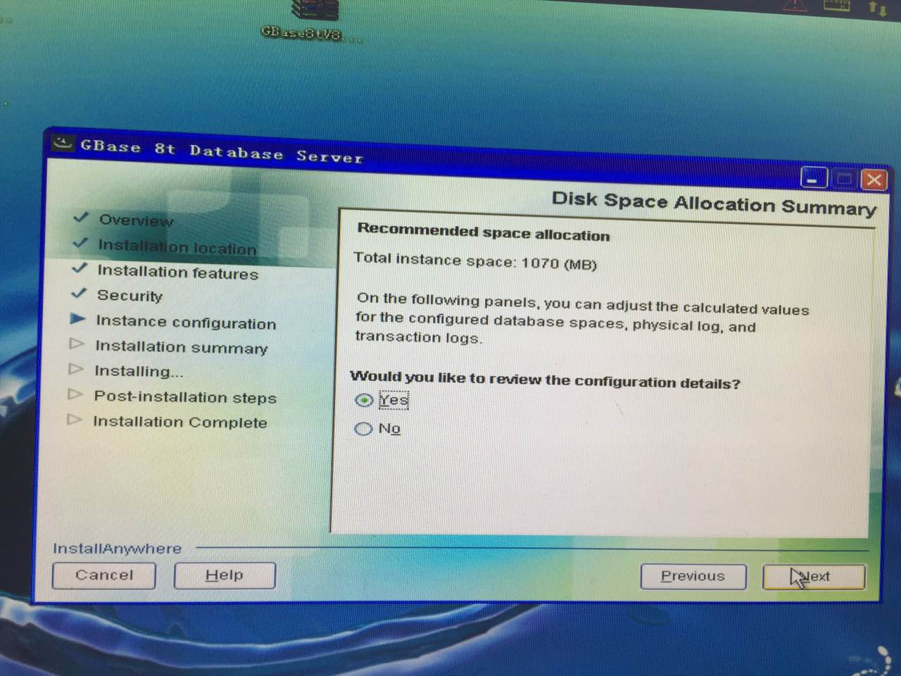

2017-03¶
2017-03-01¶
| 2017-03-01 08:53:22 | 我 | 今天你还有什么事情吗 |
| 2017-03-01 08:53:42 | 你 | 还有一个金航数码的 大小写问题 |
| 2017-03-01 08:53:51 | 你 | 王总让问问是不是和国网的一样 |
| 2017-03-01 08:53:59 | 我 | 嗯，好的 |
| 2017-03-01 08:54:03 | 你 | 但是文档中说8t已经解决了 |
| 2017-03-01 08:54:07 | 我 | 你该准备去开会了 |
| 2017-03-01 08:54:11 | 你 | 不知道联系谁 |
| 2017-03-01 08:54:18 | 你 | 是 |
| 2017-03-01 08:54:28 | 我 | 你可以在会上问问 |
| 2017-03-01 08:55:01 | 你 | 正有此意 |
| 2017-03-01 09:41:50 | 我 | 你们还没开完吗 |
| 2017-03-01 09:44:56 | 我 | 咋样 |
| 2017-03-01 11:23:46 | 我 | 你们开会到底是什么结果呀 |
| 2017-03-01 11:26:37 | 你 | 乱 |
| 2017-03-01 11:26:40 | 你 | 没有什么结果 |
| 2017-03-01 13:23:51 | 你 | 上午开会啥事也没有 |
| 2017-03-01 13:23:55 | 你 | 就是大家汇报 |
| 2017-03-01 13:24:04 | 你 | 都是小破事 |
| 2017-03-01 13:24:06 | 我 | 嗯嗯 |
| 2017-03-01 13:24:10 | 你 | 我就没跟你说 |
| 2017-03-01 13:24:21 | 我 | 没事 |
| 2017-03-01 13:24:37 | 我 | 我其实就关心雅砻江的事情 |
| 2017-03-01 13:25:19 | 你 | 雅砻江的事早上张杰评估了 |
| 2017-03-01 13:25:22 | 你 | 编码一周 |
| 2017-03-01 13:25:30 | 你 | 说下周启动 |
| 2017-03-01 13:25:33 | 我 | 是让阿娇做吗 |
| 2017-03-01 13:25:44 | 你 | 不可能 |
| 2017-03-01 13:25:49 | 你 | 是韩玉强 |
| 2017-03-01 13:26:09 | 你 | 梁继展问那个问题干嘛 |
| 2017-03-01 13:26:10 | 我 | 当初王总和阿娇说让她跟着小强做 |
| 2017-03-01 13:26:18 | 你 | 应该是 |
| 2017-03-01 13:26:22 | 你 | 但是张杰负责 |
| 2017-03-01 13:26:48 | 我 | 嗯嗯 |
| 2017-03-01 13:27:01 | 我 | 刚才阿娇还过来问我呢 |
| 2017-03-01 13:27:18 | 你 | 问啥 |
| 2017-03-01 13:30:15 | 你 | 今天黄军雷跟高杰说 |
| 2017-03-01 13:30:29 | 你 | 季业和梁继展发日报 汇报每天工作进展 |
| 2017-03-01 13:30:49 | 你 | 说他俩学习没有量化目标 怕到时候时间花了 没有产出 |
| 2017-03-01 13:30:56 | 我 | 为啥黄军雷要管这事 |
| 2017-03-01 13:31:34 | 你 | 他提醒高杰 |
| 2017-03-01 13:31:40 | 你 | 他说的时候就是提醒下 |
| 2017-03-01 13:32:01 | 我 | 不怀好意 |
| 2017-03-01 13:32:14 | 我 | 他想把他那一套用在 DTD |
| 2017-03-01 13:32:23 | 我 | 最后咱们就和他们一样乱了 |
| 2017-03-01 13:33:01 | 我 | 开发中心除了需要写日志以外，从来没有人写过日报 |
| 2017-03-01 13:33:05 | 你 | 那我就不知道了 |
| 2017-03-01 13:33:16 | 我 | 咱们的工作质量要比他们高得多 |
| 2017-03-01 13:33:22 | 你 | 高杰说的写日报好像 |
| 2017-03-01 13:33:37 | 你 | 但是事是黄军雷提出来的 |
| 2017-03-01 13:34:32 | 我 | 他们那边乱，就乱在张道山和黄军雷身上了 |
| 2017-03-01 13:35:03 | 你 | 唉 |
| 2017-03-01 13:35:05 | 我 | 只是机械的照搬书，不按照实际情况进行处理 |
| 2017-03-01 13:35:15 | 我 | 太天真了 |
| 2017-03-01 13:35:52 | 你 | 唐骞提的这个需求列表要投入人力分析吗？ |
| 2017-03-01 13:36:26 | 我 | 我认为需要做，有人和你提吗 |
| 2017-03-01 13:36:38 | 你 | 没有 |
| 2017-03-01 13:36:49 | 我 | 刚才王总给我发邮件，问谁适合做 CDC，我推荐王旭了 |
| 2017-03-01 13:37:01 | 你 | 好 |
| 2017-03-01 13:37:05 | 我 | 王总让张杰去找王旭了 |
| 2017-03-01 13:37:10 | 你 | 太好了 |
| 2017-03-01 13:37:18 | 我 | 你就当成不知道吧 |
| 2017-03-01 13:37:25 | 我 | 等别人说的时候再说 |
| 2017-03-01 13:37:30 | 你 | 我知道 |
| 2017-03-01 13:37:32 | 你 | 好 |
| 2017-03-01 13:37:59 | 我 | 28s 的需求你是不是做完了 |
| 2017-03-01 13:38:31 | 你 | 就中文注释的完事了 |
| 2017-03-01 13:38:35 | 你 | 其他的没做呢 |
| 2017-03-01 13:39:08 | 我 | 赶紧做吧，如果有人安排你 CDC 的事情，你正好说有活 |
| 2017-03-01 13:40:10 | 你 | 那我做28s的其他需求是吗 |
| 2017-03-01 13:40:22 | 我 | 是 |
| 2017-03-01 13:40:35 | 我 | 先别管有用没用 |
| 2017-03-01 13:40:42 | 你 | 好的 |
| 2017-03-01 13:40:56 | 你 | 国网这个反正有张道山呢 |
| 2017-03-01 13:41:22 | 我 | 没错，先让他们去处理吧，而且王总也安排了 |
| 2017-03-01 13:41:31 | 你 | 是 |
| 2017-03-01 14:13:56 | 我 | 咋啦，不高兴了？ |
| 2017-03-01 14:14:11 | 你 | 王志现在怎么也管需求了 |
| 2017-03-01 14:14:58 | 我 | 他现在就是瞎管 |
| 2017-03-01 14:15:11 | 我 | 想当你的领导 |
| 2017-03-01 14:15:19 | 我 | 指挥你们干活 |
| 2017-03-01 14:15:23 | 你 | 对啊 |
| 2017-03-01 14:15:27 | 你 | 我就嫌他 |
| 2017-03-01 14:15:43 | 我 | 我之所以让你干，就是让他知道我说了算 |
| 2017-03-01 14:17:10 | 我 | 现在王志和我耍心眼，有些东西问我，有些不问我，故意把这些东西都模糊 |
| 2017-03-01 14:35:46 | 你 | 王总， 已跟金航数码技术支持王文龙电话沟通，现场是用JDBC连接Oracle数据库，要求JDBC返回大写，与国网需求一致。 目前该项目属于POC阶段，进展缓慢（原话：处于扯皮阶段），还不需要研发投入，已告知国网版本支持JDBC返回大写，如一线需要可走流程申请版本，请知晓！ |
| 2017-03-01 14:36:35 | 我 | 嗯嗯 |
| 2017-03-01 14:37:11 | 你 | 我觉得我快成电话销售的了 |
| 2017-03-01 14:37:26 | 我 | 唉，现在就是这样 |
| 2017-03-01 14:37:34 | 我 | 乱乱乱 |
| 2017-03-01 15:12:52 | 我 | 有事吗 |
| 2017-03-01 15:13:05 | 你 | 跟刘辉确认的事啊 |
| 2017-03-01 15:13:20 | 我 | 什么结果？ |
| 2017-03-01 15:13:31 | 你 | oat可以不做 |
| 2017-03-01 15:45:46 | 你 | 王志真的太坏了 |
| 2017-03-01 15:46:13 | 我 | 咋了，他怎么欺负你了 |
| 2017-03-01 15:46:27 | 你 | 以后需求的事 别让他插手 |
| 2017-03-01 15:46:30 | 你 | 烦他 |
| 2017-03-01 15:46:46 | 我 | 我知道，现在我还没法说他 |
| 2017-03-01 15:46:52 | 我 | 我会找机会说他的 |
| 2017-03-01 15:46:54 | 你 | 自己啥也不懂 问我 我知道的告诉他 他知道不告诉我不说 还跟我指手画脚 |
| 2017-03-01 15:47:18 | 你 | 那么多问题他自己不去搞 都转给王胜利 |
| 2017-03-01 15:47:24 | 你 | 现在插手需求的事 |
| 2017-03-01 15:47:31 | 你 | 今早上开晨会也是 |
| 2017-03-01 15:47:33 | 我 | 因为问题他搞不定 |
| 2017-03-01 15:47:44 | 你 | 说coltype用户要的是啥 |
| 2017-03-01 15:47:49 | 我 | 插手需求可以刷存在感 |
| 2017-03-01 15:47:58 | 你 | 我直接跟他说 这个结果已经跟用户确认过了 |
| 2017-03-01 15:48:03 | 你 | 他就不说话了 |
| 2017-03-01 15:49:56 | 我 | 对，就这么对他 |
| 2017-03-01 15:50:03 | 我 | 什么都别告诉他 |
| 2017-03-01 15:50:33 | 你 | 问题的事我都转给他了 |
| 2017-03-01 15:50:38 | 你 | 现在插手需求 |
| 2017-03-01 15:50:39 | 你 | 气死我了 |
| 2017-03-01 15:50:53 | 你 | 自己啥环境没有 我这有 给我整的乱七八糟的 |
| 2017-03-01 15:51:00 | 我 | 别生气，回来我找机会 |
| 2017-03-01 15:53:31 | 我 | 现在你那是不是有全部的需求 |
| 2017-03-01 15:53:42 | 你 | 差不多吧 |
| 2017-03-01 15:53:47 | 你 | 应该是全的 |
| 2017-03-01 15:53:48 | 我 | 或者说现在需求都是你维护的 |
| 2017-03-01 15:53:55 | 我 | 好的 |
| 2017-03-01 15:54:00 | 你 | 我都收集起来了 |
| 2017-03-01 15:54:13 | 你 | 今天王总给高杰发邮件要国网需求的列表 |
| 2017-03-01 15:54:26 | 你 | 我给她的 |
| 2017-03-01 15:54:29 | 我 | 我回来找高杰，把你们三个职责先划分清楚 |
| 2017-03-01 15:54:58 | 我 | 我先想想该怎么说 |
| 2017-03-01 15:55:00 | 你 | 我的虚机让我整出毛病了 |
| 2017-03-01 15:55:08 | 你 | 先别说了 |
| 2017-03-01 15:55:09 | 你 | 没事 |
| 2017-03-01 15:55:13 | 我 | 啊，恢复一下 |
| 2017-03-01 15:55:22 | 你 | 气死我了 |
| 2017-03-01 15:55:24 | 你 | 都怪王志 |
| 2017-03-01 15:55:29 | 你 | 都是他给搞得 |
| 2017-03-01 15:55:34 | 我 | 不行，我受不了王志瞎管 |
| 2017-03-01 15:55:43 | 我 | 更受不了他去管你 |
| 2017-03-01 16:11:44 | 我 | 你别理他 |
| 2017-03-01 16:11:48 | 我 | 让他找我 |
| 2017-03-01 16:11:51 | 我 | 我来定 |
| 2017-03-01 16:14:09 | 我 | 所有关于流程的事情你都推到我身上 |
| 2017-03-01 16:14:16 | 我 | 就说等老王定 |
| 2017-03-01 16:15:13 | 你 | 我都无语了 |
| 2017-03-01 16:15:40 | 我 | 我知道，他就是要把活都推给别人干，然后他做监工 |
| 2017-03-01 16:15:48 | 我 | 之前在外屋他也是这样 |
| 2017-03-01 16:24:51 | 我 | 亲，还生气呢？ |
| 2017-03-01 16:27:57 | 我 | 怎么不理我了？ |
| 2017-03-01 16:28:06 | 我 | 是生我的气了？ |
| 2017-03-01 16:28:13 | 你 | 没有 |
| 2017-03-01 16:28:14 | 你 | 没有 |
| 2017-03-01 16:28:26 | 我 | 嗯嗯 |
| 2017-03-01 16:28:39 | 我 | 那我就安心了[偷笑] |
| 2017-03-01 17:12:06 | 我 | 忙吗 |
| 2017-03-01 17:12:16 | 你 | 现在不忙了 |
| 2017-03-01 17:12:27 | 我 | 嗯嗯，今天都没怎么聊天 |
| 2017-03-01 17:12:32 | 我 | 你忙我也忙 |
| 2017-03-01 17:12:33 | 你 | 是 |
| 2017-03-01 17:12:35 | 你 | 是 |
| 2017-03-01 17:12:44 | 我 | 你好点了吗 |
| 2017-03-01 17:13:04 | 你 | 还行吧 |
| 2017-03-01 17:13:12 | 你 | 没怎么好 |
| 2017-03-01 17:13:23 | 我 | 我刚才想了一下，以后需求就都是你管吧 |
| 2017-03-01 17:13:34 | 我 | 就是要定期更新 redmine |
| 2017-03-01 17:13:42 | 我 | 其他的事情你现在都在做了 |
| 2017-03-01 17:13:52 | 我 | 你看这样行吗 |
| 2017-03-01 17:14:07 | 你 | 我内心想的不管 你要是让我管我也没意见 |
| 2017-03-01 17:14:15 | 你 | 都行 |
| 2017-03-01 17:14:18 | 你 | 服从领导 |
| 2017-03-01 17:14:43 | 我 | 我这不是和你商量呢，你还真把我当成领导了 |
| 2017-03-01 17:15:23 | 你 | 你要是跟我商量 我给你的答案就是我都行 看你 你觉得怎么安排对你有利 就怎么安排 |
| 2017-03-01 17:15:32 | 你 | 对我来说 一点影响没有 |
| 2017-03-01 17:15:40 | 我 | 看样子确实把你气坏了 |
| 2017-03-01 17:15:55 | 你 | 今天王志惹我是他把我问烦了 |
| 2017-03-01 17:16:03 | 你 | 而且我问他的时候 他阴阳怪气 |
| 2017-03-01 17:16:23 | 你 | 我没事了 |
| 2017-03-01 17:16:29 | 你 | 我才不让他影响我呢 |
| 2017-03-01 17:16:32 | 你 | 他算老几 |
| 2017-03-01 17:16:48 | 我 | 亲，你知道我关注的是什么 |
| 2017-03-01 17:16:58 | 你 | 说说 |
| 2017-03-01 17:17:08 | 我 | 你不知道吗？ |
| 2017-03-01 17:17:23 | 我 | 你居然不知道我关注什么？ |
| 2017-03-01 17:17:49 | 你 | 你是生我的气呢吗 |
| 2017-03-01 17:17:56 | 我 | 没有呀 |
| 2017-03-01 17:18:11 | 你 | 我现在没想法啊 |
| 2017-03-01 17:18:15 | 我 | 真的没生气，只是有点意外 |
| 2017-03-01 17:18:26 | 你 | 我对于这件事一点要求都没有 |
| 2017-03-01 17:18:29 | 我 | 哦哦，我还是先哄你吧[呲牙] |
| 2017-03-01 17:18:41 | 我 | 等你不生气了，咱们再说吧 |
| 2017-03-01 17:18:42 | 你 | 你问我 你怎么做 我才能开心 我不知道 |
| 2017-03-01 17:19:07 | 我 | 那你喜欢做什么呀 |
| 2017-03-01 17:19:24 | 你 | ？ |
| 2017-03-01 17:19:35 | 我 | 比如说写软需 |
| 2017-03-01 17:19:46 | 你 | 我想写用需 |
| 2017-03-01 17:19:47 | 我 | 比如说喜欢和用户沟通 |
| 2017-03-01 17:19:53 | 我 | 嗯嗯 |
| 2017-03-01 17:20:01 | 你 | 软需也可以写啊 |
| 2017-03-01 17:20:13 | 你 | 我肯定是要跟用户沟通 做用户需求 |
| 2017-03-01 17:20:17 | 你 | 这部分我做的不好 |
| 2017-03-01 17:20:22 | 你 | 想多练练 |
| 2017-03-01 17:20:27 | 我 | 那么比如定期更新 redmine，就像以前洪越做的那样 |
| 2017-03-01 17:20:29 | 你 | 软需我做的不错了 |
| 2017-03-01 17:20:37 | 我 | 是，已经很不错了 |
| 2017-03-01 17:20:41 | 你 | 我不想做 |
| 2017-03-01 17:20:46 | 你 | 这件事我不care |
| 2017-03-01 17:20:51 | 你 | 你让我做 我就做 |
| 2017-03-01 17:21:19 | 我 | 我知道了，那我想想怎么办 |
| 2017-03-01 17:21:41 | 我 | 问题的更新我让王志去做 |
| 2017-03-01 17:21:53 | 你 | 别让他老问我 |
| 2017-03-01 17:21:54 | 你 | 我烦死他了 |
| 2017-03-01 17:21:57 | 我 | 需求不让你去做 |
| 2017-03-01 17:22:03 | 我 | 肯定是不让他问你了 |
| 2017-03-01 17:22:15 | 我 | 现在看就只能让高杰去做了 |
| 2017-03-01 17:22:31 | 我 | 我得想个理由能让他去做 |
| 2017-03-01 17:22:41 | 你 | 你说让高杰做吗 |
| 2017-03-01 17:22:49 | 我 | 对呀 |
| 2017-03-01 17:22:58 | 你 | 为啥不让王志做 |
| 2017-03-01 17:23:04 | 你 | 怕他问我是吗 |
| 2017-03-01 17:23:09 | 我 | 那么他就会不停的问你 |
| 2017-03-01 17:23:17 | 我 | 就算他知道他也会问 |
| 2017-03-01 17:23:20 | 你 | 等会 我想想 |
| 2017-03-01 17:23:26 | 我 | 甚至会让你每天给他汇报 |
| 2017-03-01 17:23:51 | 我 | 然后借机就会安排你做这做那 |
| 2017-03-01 17:23:59 | 你 | 是 |
| 2017-03-01 17:24:11 | 你 | 不行需求我更 问题王志更呢 |
| 2017-03-01 17:24:18 | 你 | 你知道我为啥不想让高杰吗 |
| 2017-03-01 17:24:22 | 我 | 你说 |
| 2017-03-01 17:25:23 | 你 | 我发现她老是觉得她跟品线的那些人熟 就老是自己跟他们联系 |
| 2017-03-01 17:25:35 | 我 | 是的 |
| 2017-03-01 17:25:42 | 你 | 我很讨厌这个 |
| 2017-03-01 17:25:58 | 你 | 因为本身我跟一线沟通人家都觉得很烦 |
| 2017-03-01 17:26:03 | 你 | 人越多 越烦 |
| 2017-03-01 17:56:23 | 我 | 是的 |
| 2017-03-01 17:56:32 | 我 | 我也一样 |
| 2017-03-01 17:56:49 | 你 | 我实在是懒得想了 |
| 2017-03-01 17:57:04 | 你 | 要是咱们现在 我才不想更新那个破玩意呢 |
| 2017-03-01 17:57:09 | 我 | 好吧，那我再想想 |
| 2017-03-01 17:57:19 | 你 | 但是这边这么乱 我怕高杰把我扔坑里 |
| 2017-03-01 17:57:39 | 我 | 开发中心需求是王洪越更新，现场问题是严丹更新 |
| 2017-03-01 17:58:02 | 你 | 你自己想吧 |
| 2017-03-01 17:58:08 | 你 | 别让我费脑子了 |
| 2017-03-01 17:58:14 | 我 | 对应到咱们这边，需求就只有你或者我来更新，现场问题是高杰或者王志更新 |
| 2017-03-01 17:58:24 | 我 | 嗯嗯，我想，不让你费脑子了 |
| 2017-03-01 18:01:16 | 我 | 亲，你咋了 |
| 2017-03-01 18:01:35 | 你 | 脑子费多了 |
| 2017-03-01 18:01:43 | 我 | 歇会吧，不想了 |
| 2017-03-01 18:01:50 | 我 | 这些事情让我来吧 |
| 2017-03-01 18:16:18 | 我 | 亲，你看这样行吗。现在所有需要更新 redmine 的事情都由我来决定 |
| 2017-03-01 18:16:43 | 你 | 你更新吗？ |
| 2017-03-01 18:16:50 | 我 | 这样如果只是需求进度，你来更新，研发进度我让别人来更新 |
| 2017-03-01 18:16:59 | 你 | 可以啊 |
| 2017-03-01 18:17:00 | 我 | 就是说我来决定谁更新 |
| 2017-03-01 18:17:01 | 你 | 没问题 |
| 2017-03-01 18:17:07 | 你 | 好 |
| 2017-03-01 18:17:29 | 我 | 好，那我现在就去找高杰说说去 |
| 2017-03-01 18:34:35 | 我 | 这样安排行吗 |
| 2017-03-01 18:34:43 | 你 | 你说呢 |
| 2017-03-01 18:34:50 | 你 | 别的都行 |
| 2017-03-01 18:34:52 | 你 | 咱俩不行 |
| 2017-03-01 18:35:00 | 我 | 啊 |
| 2017-03-01 18:35:03 | 你 | 你不告诉我什么时候更新 不更新还跟我要钱 |
| 2017-03-01 18:35:04 | 我 | [流泪] |
| 2017-03-01 18:35:10 | 你 | 讲不讲理 |
| 2017-03-01 18:35:29 | 我 | 😄 |
| 2017-03-01 18:35:48 | 我 | 我给你出钱 |
| 2017-03-01 18:35:49 | 你 | 我要下班了 |
| 2017-03-01 18:35:50 | 你 | 头晕 |
| 2017-03-01 18:35:58 | 我 | 早点回家 |
| 2017-03-01 19:00:29 | 你 | 还有中油瑞飞项目， |
| 2017-03-01 19:00:37 | 我 | 嗯嗯 |
| 2017-03-01 19:00:39 | 你 | 刚才你问我的时候我忘了 |
| 2017-03-01 19:00:44 | 我 | 没事 |
| 2017-03-01 19:00:45 | 你 | 不聊了 |
| 2017-03-01 19:00:50 | 我 | 嗯 |
2017-03-02¶
| 2017-03-02 08:28:52 | 你 | 昨天刘畅写的那个流程文档你看了吗 |
| 2017-03-02 08:29:02 | 我 | 我看了呀 |
| 2017-03-02 08:29:10 | 你 | 行吗 |
| 2017-03-02 08:29:19 | 我 | 基本上就是照抄耿燕的 |
| 2017-03-02 08:29:38 | 我 | 大体上还可以把 |
| 2017-03-02 08:29:55 | 我 | 就是有很多小细节其实不对 |
| 2017-03-02 08:30:03 | 我 | 我估计大部分人是看不出来的 |
| 2017-03-02 08:30:13 | 我 | 我也懒得去纠正 |
| 2017-03-02 08:30:36 | 你 | 哦 |
| 2017-03-02 08:30:45 | 你 | 我怎么觉得错误那么多呢 |
| 2017-03-02 08:30:54 | 我 | 你说说 |
| 2017-03-02 09:08:32 | 我 | 发给你了 |
| 2017-03-02 09:17:40 | 你 | 看到了 |
| 2017-03-02 09:18:02 | 你 | 孙世霖真神经 |
| 2017-03-02 09:18:16 | 我 | 是的 |
| 2017-03-02 09:18:35 | 你 | 我今天接着处理28s的需求 |
| 2017-03-02 09:18:50 | 你 | 但是剩下的这几个都不紧急 |
| 2017-03-02 09:19:09 | 你 | 用把国网的拿过来分析吗 |
| 2017-03-02 09:20:36 | 我 | 随你 |
| 2017-03-02 09:21:11 | 我 | 国网的需求明确指给你了吗 |
| 2017-03-02 09:31:26 | 你 | 没有 |
| 2017-03-02 09:31:44 | 你 | 我早上晨会也没提 我怕我一提就让我干 |
| 2017-03-02 09:31:52 | 我 | 那就可以先不干 |
| 2017-03-02 09:32:09 | 你 | 好 |
| 2017-03-02 10:20:37 | 你 | 王总来了 |
| 2017-03-02 10:25:30 | 我 | 王总呢？ |
| 2017-03-02 10:26:06 | 你 | 门口啊 |
| 2017-03-02 10:26:13 | 你 | 你没看见吗 |
| 2017-03-02 10:33:48 | 我 | 这个和你关系不大 |
| 2017-03-02 10:35:49 | 你 | 他们每次出现问题改代码的话要先编译？ |
| 2017-03-02 10:35:54 | 你 | 是吗？ |
| 2017-03-02 10:36:06 | 我 | 是吧，我也不知道 |
| 2017-03-02 10:38:45 | 我 | 无聊 |
| 2017-03-02 10:52:29 | 你 | 我早上在站会上说28s有个需求转问题了，然后直接找的高姐叫的季业 |
| 2017-03-02 10:52:41 | 你 | 没搭理王志 |
| 2017-03-02 10:53:02 | 我 | 嗯嗯，就这么做 |
| 2017-03-02 10:53:36 | 你 | 你知道我不是有个需求给晓亮回复问题了吗？昨天晚上下班的时候王志说我应该问下什么什么问题 |
| 2017-03-02 10:53:57 | 你 | 他说的那个问题我已经问了，他没看见 |
| 2017-03-02 10:54:08 | 你 | 我也没好好搭理他 |
| 2017-03-02 10:54:13 | 我 | 别理他 |
| 2017-03-02 10:54:24 | 你 | 现在我问什么问题还得很他汇报吗 |
| 2017-03-02 10:54:31 | 我 | 不用 |
| 2017-03-02 10:54:33 | 你 | 他做需求还是我做 |
| 2017-03-02 10:54:36 | 你 | 真晕 |
| 2017-03-02 10:54:58 | 我 | 他谁都想管 |
| 2017-03-02 10:55:25 | 我 | 今天早上他还让尹志军去检查语句 |
| 2017-03-02 10:55:35 | 我 | 简直是瞎扯 |
| 2017-03-02 10:55:43 | 你 | 反正需求的他想插手 |
| 2017-03-02 10:55:48 | 你 | 我就不给他留面子 |
| 2017-03-02 10:56:00 | 你 | 还知不知道自己吃几碗粥了 |
| 2017-03-02 10:56:10 | 我 | 没错，一定要顶住他 |
| 2017-03-02 10:56:34 | 我 | 多顶他几次他就老实了 |
| 2017-03-02 10:56:44 | 你 | 是 |
| 2017-03-02 10:57:04 | 你 | 要是他想转需求，你一定拦下来 |
| 2017-03-02 10:57:43 | 我 | 放心吧 |
| 2017-03-02 11:01:57 | 我 | 不知其所云 |
| 2017-03-02 11:13:10 | 你 | 孙世霖臭死了 |
| 2017-03-02 11:13:20 | 你 | 真烦人，挨着我 |
| 2017-03-02 11:13:31 | 我 | 是 |
| 2017-03-02 11:30:35 | 你 | 看这毅力 |
| 2017-03-02 11:30:55 | 我 | 是 |
| 2017-03-02 11:53:19 | 我 | 刚才高杰和我说孙世霖的事情了 |
| 2017-03-02 11:55:57 | 你 | 好 |
| 2017-03-02 11:56:38 | 我 | 孙世霖是有点张狂了，我该压压他了 |
| 2017-03-02 11:57:33 | 你 | 嗯 |
| 2017-03-02 11:57:42 | 你 | 得志便猖狂 |
| 2017-03-02 11:59:52 | 我 | 是呗 |
| 2017-03-02 13:51:23 | 我 | 流程那个回复你看了吗 |
| 2017-03-02 13:54:34 | 你 | 看了 |
| 2017-03-02 13:54:48 | 你 | 发现一个好玩的东西 |
| 2017-03-02 13:55:06 | 我 | 什么？ |
| 2017-03-02 13:55:31 | 你 | |
| 2017-03-02 13:55:32 | 你 | |
| 2017-03-02 13:55:33 | 你 | |
| 2017-03-02 13:55:34 | 你 | |
| 2017-03-02 13:55:35 | 你 | |
| 2017-03-02 13:55:36 | 你 | |
| 2017-03-02 13:55:37 | 你 | |
| 2017-03-02 13:55:38 | 你 | |
| 2017-03-02 13:55:39 | 你 | |
| 2017-03-02 13:55:40 | 你 | |
| 2017-03-02 13:55:41 | 你 |  |
| 2017-03-02 13:55:42 | 你 | |
| 2017-03-02 13:55:43 | 你 | |
| 2017-03-02 13:55:44 | 你 | |
| 2017-03-02 13:56:57 | 我 | 亲，我太笨了，没看懂，你给我解释一下吧 |
| 2017-03-02 14:00:33 | 你 | 这个是28s提的需求里的 |
| 2017-03-02 14:00:44 | 你 | 我怀疑这个功能现在已经有了 |
| 2017-03-02 14:01:05 | 你 | 刚才看文档 然后点点 点出来的 |
| 2017-03-02 14:01:10 | 我 | 啊，难道现场没有人知道吗 |
| 2017-03-02 14:01:15 | 你 | 不知道 |
| 2017-03-02 14:01:24 | 你 | 我发给孙晓亮了 |
| 2017-03-02 14:01:29 | 你 | 晓亮说试试 |
| 2017-03-02 14:01:32 | 我 | 嗯嗯 |
| 2017-03-02 14:01:36 | 你 | 主要咱们这边也没人知道啊 |
| 2017-03-02 14:01:46 | 我 | 是，大家都不知道 |
| 2017-03-02 14:02:02 | 我 | 唉，做产品做到这份上也是醉了 |
| 2017-03-02 14:57:14 | 我 | 无聊 |
| 2017-03-02 15:24:44 | 你 | 我刚才跟晓亮一直打电话 |
| 2017-03-02 15:24:59 | 我 | 嗯 |
| 2017-03-02 15:25:11 | 你 | 他给我讲的那个用法 我问测试的 测试的说指令都没见过 |
| 2017-03-02 15:25:38 | 我 | 什么情况 |
| 2017-03-02 15:25:46 | 你 | 唉 |
| 2017-03-02 15:25:54 | 你 | 我真服了这边的研发和测试了 |
| 2017-03-02 15:26:21 | 我 | 唉，比我想的还要差 |
| 2017-03-02 15:26:55 | 你 | 太恐怖了 |
| 2017-03-02 15:27:13 | 你 | 昨天我跟测试的要文档 结果给我的都是好几个版本重复的 |
| 2017-03-02 15:27:27 | 你 | 我自己把最高版本的摘出来 低版本的删了 |
| 2017-03-02 15:28:04 | 我 | 嗯嗯 |
| 2017-03-02 15:28:14 | 你 | 不过晓亮特别好 |
| 2017-03-02 15:28:21 | 我 | 你先整理吧，以后这些都应该有专人负责 |
| 2017-03-02 15:28:22 | 你 | 给我讲的很细 |
| 2017-03-02 15:28:27 | 你 | 是 |
| 2017-03-02 15:28:36 | 你 | 我先把我干活用的那一滩搞定 |
| 2017-03-02 15:28:50 | 你 | 我不是抱怨他们不行 |
| 2017-03-02 15:29:01 | 你 | 他们做的越差 越能显示我们做得好 |
| 2017-03-02 15:29:05 | 我 | 嗯嗯 |
| 2017-03-02 15:29:08 | 你 | 我只是跟你说下现状 |
| 2017-03-02 15:29:19 | 我 | 我知道 |
| 2017-03-02 15:51:59 | 你 | 亲 我有好多文档要看 |
| 2017-03-02 15:52:06 | 你 | 没有时间跟你聊天了 |
| 2017-03-02 15:52:26 | 我 | [流泪]你好辛苦呀 |
| 2017-03-02 15:56:00 | 你 | 我看你睡着了 |
| 2017-03-02 15:56:03 | 你 | 睡会吧 |
| 2017-03-02 15:56:09 | 你 | 这些日子快累死了 |
| 2017-03-02 15:56:26 | 我 | 不睡了，怕睡了更累 |
| 2017-03-02 15:56:31 | 我 | 你忙吧 |
| 2017-03-02 16:13:34 | 我 | 放心吧，我不会让你受气的 |
| 2017-03-02 16:15:04 | 你 | 我是怕我成为瓶颈 不是怕受气 |
| 2017-03-02 16:15:08 | 你 | 谁干给我气受 |
| 2017-03-02 16:15:24 | 我 | 没事的 |
| 2017-03-02 16:44:27 | 我 | 我去找王总，估计是国网的事情 |
| 2017-03-02 17:02:55 | 我 | 我猜错了，是和老陈换人 |
| 2017-03-02 17:15:01 | 你 | 换谁 |
| 2017-03-02 17:15:28 | 我 | 我给孙世霖 |
| 2017-03-02 17:17:27 | 我 | 王总想换刘建辉 |
| 2017-03-02 17:34:12 | 我 | 又跑题了 |
| 2017-03-02 17:38:38 | 你 | 稍听下国网的项目要不要我接需求 |
| 2017-03-02 17:38:56 | 我 | 好的 |
| 2017-03-02 17:40:02 | 你 | 我接还是在张道山那 |
| 2017-03-02 17:40:15 | 我 | 稍等，正在说 |
| 2017-03-02 17:46:28 | 我 | 王总和研发讨论开了 |
{kind=link}
{kind=link}
{kind=link}
{kind=link}
{kind=link}
{kind=link}
{kind=link}
{kind=link}
{kind=link}
{kind=link}
{kind=link}
{kind=link}
{kind=link}
{kind=link}
2017-03-03¶
| 2017-03-03 09:45:51 | 我 | 你今天怎么来的这么晚 |
| 2017-03-03 10:17:12 | 我 | 怎么不理我？还生我气？ |
| 2017-03-03 11:38:09 | 我 | 亲，从我内心来说，我只会宠着你，绝不会压你 |
| 2017-03-03 11:42:02 | 我 | 我也希望你能体谅我一点，在公开场合我需要按照游戏规则玩，我不能在公开场合表现的那么宠着你，这样会让大家都针对你 |
| 2017-03-03 12:12:32 | 你 | 你就是偏袒他们了 |
| 2017-03-03 12:12:42 | 你 | 我知道大局是啥 |
| 2017-03-03 12:12:53 | 你 | 但是你这是为了大局牺牲我的利益 |
| 2017-03-03 12:13:00 | 我 | 嗯嗯，我做的不对 |
| 2017-03-03 12:13:02 | 你 | 你要给我讲道理 而不是压我 |
| 2017-03-03 12:13:19 | 我 | 我道歉 |
| 2017-03-03 13:12:37 | 你 | 大叔 谢谢你帮我 |
| 2017-03-03 13:13:12 | 我 | 咱俩还用说谢谢吗 |
| 2017-03-03 13:13:30 | 我 | 能帮你我特别开心 |
| 2017-03-03 13:27:20 | 我 | 张振鹏已经回复了 |
| 2017-03-03 13:28:20 | 我 | 可以不写交付产品列表了 |
| 2017-03-03 13:28:44 | 我 | 交付产品列表应该算是配置管理里面的东西，不应该是需求里面的东西 |
| 2017-03-03 13:29:03 | 你 | en |
| 2017-03-03 13:29:07 | 你 | 好 |
| 2017-03-03 13:46:31 | 我 | 哈哈，王总回了 |
| 2017-03-03 13:46:51 | 你 | 是 |
| 2017-03-03 13:47:14 | 我 | 这回刘畅他们就不敢纠缠这事了 |
| 2017-03-03 13:47:43 | 你 | 是 |
| 2017-03-03 14:01:43 | 你 | 我看王总对你戒心没那么大了 |
| 2017-03-03 14:01:48 | 你 | 你看呢 |
| 2017-03-03 14:01:55 | 我 | 比之前好多了 |
| 2017-03-03 14:02:02 | 你 | 嗯嗯 |
| 2017-03-03 14:02:08 | 我 | 现在我还是要小心一点 |
| 2017-03-03 14:02:12 | 你 | 慢慢就好了 |
| 2017-03-03 14:02:13 | 你 | 是 |
| 2017-03-03 14:02:30 | 我 | 我问你一个问题 |
| 2017-03-03 14:02:35 | 你 | 恩 |
| 2017-03-03 14:02:52 | 我 | 以后你当我的秘书，你觉得好吗 |
| 2017-03-03 14:03:11 | 你 | 我觉得吗？ |
| 2017-03-03 14:03:16 | 我 | 对 |
| 2017-03-03 14:03:25 | 你 | 秘书主要干啥啊 |
| 2017-03-03 14:03:31 | 你 | 伺候你的活我不干啊 |
| 2017-03-03 14:03:36 | 我 | 不是干啥，就是像严丹那样的 |
| 2017-03-03 14:03:48 | 我 | 什么叫伺候我的活？ |
| 2017-03-03 14:03:49 | 你 | 可以啊 |
| 2017-03-03 14:03:55 | 你 | 端茶倒水的 |
| 2017-03-03 14:04:02 | 你 | 打印签字的 |
| 2017-03-03 14:04:03 | 我 | 😁 |
| 2017-03-03 14:04:12 | 我 | 我才舍不得让你干呢 |
| 2017-03-03 14:04:31 | 你 | 我没问题的 |
| 2017-03-03 14:04:36 | 我 | 我是说我以后做事，让他们觉得你是我的秘书 |
| 2017-03-03 14:04:42 | 我 | 让他们觉得我特别信任你 |
| 2017-03-03 14:05:01 | 你 | 等会我想想 |
| 2017-03-03 14:05:04 | 我 | 嗯嗯 |
| 2017-03-03 14:05:12 | 你 | 这样的话 我就得一直依赖你了 |
| 2017-03-03 14:05:44 | 我 | 是，这就是我纠结的地方 |
| 2017-03-03 14:05:57 | 我 | 现在他们欺负你就是看你没有后台 |
| 2017-03-03 14:06:20 | 我 | 要是我做你的后台，就会导致你依赖我 |
| 2017-03-03 14:06:29 | 我 | 你先想想吧 |
| 2017-03-03 14:06:42 | 我 | 之前我是想让王总做你的后台的 |
| 2017-03-03 14:07:17 | 你 | 是 |
| 2017-03-03 14:07:19 | 你 | 我想想 |
| 2017-03-03 14:07:26 | 我 | 嗯嗯 |
| 2017-03-03 16:32:59 | 你 | 我把用需发给你 |
| 2017-03-03 16:33:02 | 你 | 你看嘛 |
| 2017-03-03 16:33:03 | 你 | 吗 |
| 2017-03-03 16:33:13 | 我 | 看 |
| 2017-03-03 17:45:13 | 我 | 亲，你干啥呢 |
| 2017-03-03 18:24:30 | 我 | 你和洪越聊什么 |
| 2017-03-03 19:01:46 | 你 | 我不想拉着王志 |
| 2017-03-03 19:01:59 | 我 | 嗯嗯 |
| 2017-03-03 19:02:24 | 你 | 我刚跟高杰说完话 就跟你说悄悄话 |
| 2017-03-03 19:02:38 | 你 | 杨丽颖看到我跟高杰说话了 |
| 2017-03-03 19:02:43 | 我 | 没事 |
| 2017-03-03 19:02:46 | 我 | 正好 |
| 2017-03-03 19:03:05 | 你 | 讨厌死王志了 |
| 2017-03-03 19:03:15 | 你 | 连话都懒得跟他说 |
| 2017-03-03 19:03:17 | 我 | 没错 |
| 2017-03-03 19:03:23 | 我 | 我也讨厌他 |
| 2017-03-03 21:40:41 | 你 | 明天可能不加班，不用回复 |
2017-03-06¶
| 2017-03-06 08:50:23 | 你 | 你周六上班了吗 |
| 2017-03-06 08:50:32 | 我 | 上了 |
| 2017-03-06 08:50:43 | 你 | 哦哦 |
| 2017-03-06 08:51:09 | 你 | 我对象不加班， |
| 2017-03-06 08:51:13 | 你 | 我就没来 |
| 2017-03-06 08:51:21 | 你 | [呲牙] |
| 2017-03-06 08:51:23 | 我 | 嗯 |
| 2017-03-06 08:51:40 | 我 | 你今天有什么事情吗 |
| 2017-03-06 08:52:07 | 你 | 跟28所的把需求确认了 |
| 2017-03-06 08:52:21 | 我 | 还用写什么文档吗 |
| 2017-03-06 08:52:33 | 你 | 没问题的话就看看国网的需求 |
| 2017-03-06 08:52:37 | 你 | 不用了 |
| 2017-03-06 08:52:41 | 我 | 嗯嗯 |
| 2017-03-06 08:52:58 | 你 | 严丹的头发好看吗 |
| 2017-03-06 08:53:06 | 我 | 不好看 |
| 2017-03-06 08:53:15 | 你 | 咋不好看了 |
| 2017-03-06 08:53:42 | 我 | 下面的花烫的不好 |
| 2017-03-06 08:53:53 | 我 | 显得头很大 |
| 2017-03-06 09:04:06 | 你 | 你这个评价太可爱了 |
| 2017-03-06 09:04:39 | 我 | 😄 |
| 2017-03-06 09:19:49 | 你 | 今天估计得做国网的需求了 |
| 2017-03-06 09:19:56 | 你 | 开始做 |
| 2017-03-06 09:20:21 | 我 | 那就做吧 |
| 2017-03-06 09:20:27 | 我 | 谁提了 |
| 2017-03-06 09:20:28 | 你 | 嗯 |
| 2017-03-06 09:21:03 | 你 | 我说28s的做的差不多了，高杰说那你看看国网的那几个 |
| 2017-03-06 09:21:24 | 我 | 呵呵，果然呀 |
| 2017-03-06 09:21:37 | 你 | Spatial的我说要提请王总，要不要做需求分析 |
| 2017-03-06 09:22:30 | 你 | 今天周会王总不参加 |
| 2017-03-06 09:22:32 | 我 | 今天王总不在，下午周会上我问问吧 |
| 2017-03-06 09:22:50 | 你 | 高杰让我这个邮件，发给王总 |
| 2017-03-06 09:23:54 | 我 | 行呀，反正结果都是一样 |
| 2017-03-06 09:24:24 | 你 | 嗯 |
| 2017-03-06 09:47:58 | 我 | 周日我看了一下 MySQL 的 ef6 |
| 2017-03-06 09:48:11 | 你 | 然后呢 |
| 2017-03-06 09:48:16 | 你 | 咱们能做吗 |
| 2017-03-06 09:48:28 | 我 | 感觉问题不大 |
| 2017-03-06 09:48:37 | 你 | 恩 |
| 2017-03-06 09:48:42 | 你 | 那就好 |
| 2017-03-06 09:48:51 | 你 | 王总去哪了你知道吗 |
| 2017-03-06 09:48:55 | 我 | 不知道 |
| 2017-03-06 09:49:06 | 你 | 我也不知道 |
| 2017-03-06 09:49:07 | 你 | 嘻嘻 |
| 2017-03-06 09:49:17 | 你 | 这个项目就这么完了 |
| 2017-03-06 09:49:22 | 你 | 没人提了也 |
| 2017-03-06 09:49:24 | 你 | 真奇怪 |
| 2017-03-06 09:49:45 | 我 | 没准就不做了 |
| 2017-03-06 09:50:07 | 我 | 不过 EF6应该是产品里面有的 |
| 2017-03-06 09:50:12 | 我 | 迟早得做 |
| 2017-03-06 09:51:14 | 你 | 这个肯定会坐的 |
| 2017-03-06 09:51:16 | 你 | 做的 |
| 2017-03-06 09:51:20 | 你 | 只是时间问题 |
| 2017-03-06 09:51:30 | 我 | 是的 |
| 2017-03-06 09:51:32 | 你 | 还有那个spatial接口的 也迟早会做 |
| 2017-03-06 09:52:00 | 我 | spatial 有点麻烦，没有源码需要从新开始做 |
| 2017-03-06 09:52:40 | 你 | 恩 |
| 2017-03-06 09:52:54 | 你 | 不过这个空间数据库的 我记得不是一个项目要 |
| 2017-03-06 09:53:42 | 我 | 是的，应该是产品需求 |
| 2017-03-06 10:03:00 | 你 | 国网宕机了 |
| 2017-03-06 10:03:09 | 我 | 啊 |
| 2017-03-06 10:03:15 | 我 | 哪来的消息 |
| 2017-03-06 10:03:28 | 你 | 我在国网的那个群里 |
| 2017-03-06 10:03:30 | 你 | 群里说的 |
| 2017-03-06 10:03:53 | 我 | 王总在那个群里面吗 |
| 2017-03-06 10:04:23 | 你 | 在 |
| 2017-03-06 10:05:02 | 我 | 好吧，这回王志应该有事干了 |
| 2017-03-06 10:05:18 | 你 | 王总不会用他的 |
| 2017-03-06 10:05:29 | 你 | 肯定直接找研发 |
| 2017-03-06 10:05:35 | 我 | ？不应该是录入 redmine 吗 |
| 2017-03-06 10:05:56 | 你 | 国网的不走流程 |
| 2017-03-06 10:06:05 | 我 | 哦 |
| 2017-03-06 10:06:20 | 我 | coltype 是不是已经发给现场了？ |
| 2017-03-06 10:07:00 | 你 | 好像还没有 |
| 2017-03-06 10:07:09 | 你 | 不过快了 |
| 2017-03-06 10:07:13 | 我 | 嗯 |
| 2017-03-06 10:07:15 | 你 | 上周已经实现了 |
| 2017-03-06 10:07:23 | 我 | 好 |
| 2017-03-06 10:08:51 | 你 | |
| 2017-03-06 10:09:11 | 我 | 嗯 |
| 2017-03-06 10:11:48 | 你 | 28s项目需求晓亮确认了 没有问题 |
| 2017-03-06 10:11:51 | 你 | 哈哈 |
| 2017-03-06 10:12:02 | 我 | 👍 |
| 2017-03-06 10:12:18 | 我 | 后面就没你什么事情了，可以交给他们研发了 |
| 2017-03-06 10:13:07 | 你 | 是 |
| 2017-03-06 10:13:35 | 你 | 数据库宕机器问题是今天早上9点打给赵益的，我会再次开会说明国网问题处理流程。 |
| 2017-03-06 10:13:39 | 你 | 这是唐骞说的 |
| 2017-03-06 10:13:46 | 我 | 嗯嗯 |
| 2017-03-06 10:13:56 | 我 | 现场配高可用了吗 |
| 2017-03-06 10:13:57 | 你 | 销售那边都火烧眉毛了 唐骞还在说什么流程 |
| 2017-03-06 10:13:59 | 你 | 唉 |
| 2017-03-06 10:14:13 | 你 | 我把你拉到那个群合适吗 |
| 2017-03-06 10:14:17 | 我 | 不合适 |
| 2017-03-06 10:14:23 | 你 | 王志在里边 |
| 2017-03-06 10:14:27 | 你 | 当初也是我拉进去的 |
| 2017-03-06 10:14:28 | 我 | 要拉也得是王总去拉 |
| 2017-03-06 10:14:42 | 我 | 先这样吧 |
| 2017-03-06 10:15:07 | 我 | 国网是王总负责 |
| 2017-03-06 10:15:14 | 你 | 恩 |
| 2017-03-06 10:15:15 | 你 | 好 |
| 2017-03-06 10:15:21 | 你 | 那就让他看去吧 |
| 2017-03-06 10:15:24 | 你 | 咱们不参合 |
| 2017-03-06 10:15:32 | 我 | 嗯嗯 |
| 2017-03-06 10:54:37 | 你 | 我把28s需求状态写了个邮件 发给你 |
| 2017-03-06 10:56:49 | 我 | 好的 |
| 2017-03-06 11:11:40 | 你 | 旭明一会不会吐了吧 |
| 2017-03-06 11:11:44 | 你 | 你让他回家吧 |
| 2017-03-06 11:12:01 | 我 | 我让他回去了，他不走 |
| 2017-03-06 11:12:26 | 我 | 不过还是在这静养好 |
| 2017-03-06 11:12:40 | 你 | 你温柔点 |
| 2017-03-06 11:12:44 | 你 | 好好跟他说 |
| 2017-03-06 11:12:55 | 你 | 刚才那态度就行 |
| 2017-03-06 11:12:56 | 你 | 嘻嘻 |
| 2017-03-06 11:13:41 | 我 | 嗯 |
| 2017-03-06 11:16:59 | 你 | 不是是脑梗吧？？ |
| 2017-03-06 11:17:02 | 你 | 跟我爸爸似的 |
| 2017-03-06 11:17:09 | 我 | 不好说 |
| 2017-03-06 11:17:26 | 我 | 有这种可能性，不过他太年轻了 |
| 2017-03-06 11:17:44 | 你 | 他颈椎有问题的可能性不大 |
| 2017-03-06 11:17:46 | 你 | 我感觉 |
| 2017-03-06 11:17:53 | 我 | 为啥 |
| 2017-03-06 11:18:06 | 我 | 我觉得就说颈椎的事情 |
| 2017-03-06 11:18:17 | 你 | 那可能是 |
| 2017-03-06 11:18:25 | 你 | 她以前也没有过 |
| 2017-03-06 11:18:33 | 你 | 怎么就突然颈椎了呢 |
| 2017-03-06 11:18:43 | 我 | 正常呀 |
| 2017-03-06 12:24:55 | 我 | 你不睡觉 |
| 2017-03-06 12:53:45 | 你 | 吵醒了 |
| 2017-03-06 12:53:47 | 你 | 没睡 |
| 2017-03-06 12:54:08 | 我 | 哦，难受吗 |
| 2017-03-06 12:57:45 | 你 | 没有 |
| 2017-03-06 12:57:53 | 我 | 好的 |
| 2017-03-06 13:10:19 | 我 | 明天国网的需求王总让张杰去了 |
| 2017-03-06 13:10:27 | 你 | 恩 |
| 2017-03-06 13:10:29 | 你 | 好 |
| 2017-03-06 13:10:45 | 你 | 怎么没让王胜利去呢 |
| 2017-03-06 13:11:01 | 我 | 这个需求主要是番薯他们的 |
| 2017-03-06 13:11:19 | 你 | CDC的吧 |
| 2017-03-06 13:11:59 | 我 | 我说错了，是铁科院的 |
| 2017-03-06 13:12:05 | 你 | 恩 |
| 2017-03-06 13:12:12 | 你 | 好的 |
| 2017-03-06 13:12:13 | 你 | 去吧 |
| 2017-03-06 13:12:26 | 我 | 好像是异构数据库复制的问题 |
| 2017-03-06 13:12:44 | 你 | 你怎么知道的 |
| 2017-03-06 13:12:50 | 你 | 谁告诉你滴 |
| 2017-03-06 13:13:04 | 我 | 我有一线发的日报 |
| 2017-03-06 13:13:19 | 你 | 哦 |
| 2017-03-06 13:13:21 | 你 | 行 |
| 2017-03-06 13:13:30 | 你 | 没事 |
| 2017-03-06 13:13:42 | 你 | 给你推荐首歌 |
| 2017-03-06 13:14:26 | 我 | 嗯嗯 |
| 2017-03-06 13:14:59 | 你 | [链接] 繁花《三生三世十里桃花》电视剧插曲（Cover 董贞） |
| 2017-03-06 13:18:36 | 我 | 很好听 |
| 2017-03-06 13:18:51 | 你 | 你听了吗 |
| 2017-03-06 13:18:54 | 你 | 哼 |
| 2017-03-06 13:19:08 | 你 | 好吧 |
| 2017-03-06 13:19:46 | 你 | [链接] 凉凉（Cover：张碧晨/杨宗纬） |
| 2017-03-06 13:19:59 | 你 | 我只有两首 |
| 2017-03-06 13:22:06 | 我 | 写的不错 |
| 2017-03-06 13:22:14 | 我 | 你现在看这部剧吗 |
| 2017-03-06 13:22:15 | 你 | ？ |
| 2017-03-06 13:22:22 | 你 | 看了几集 |
| 2017-03-06 13:22:25 | 我 | 词写的不错 |
| 2017-03-06 13:22:29 | 你 | 恩 |
| 2017-03-06 13:22:36 | 你 | 这类的词都是美的不行 |
| 2017-03-06 13:26:39 | 你 | 国网那10个需求你看了吗？ |
| 2017-03-06 13:26:47 | 我 | 看了一下 |
| 2017-03-06 13:26:48 | 你 | 下个版本规划做哪个啊 |
| 2017-03-06 13:26:55 | 你 | 我要看哪几个呢 |
| 2017-03-06 13:26:58 | 我 | 不知道 |
| 2017-03-06 13:27:16 | 你 | 是让唐骞排优先级还是咱们自己排 |
| 2017-03-06 13:27:25 | 你 | 还是找王胜利排 |
| 2017-03-06 13:27:48 | 我 | 下午开会我让王胜利去做吧 |
| 2017-03-06 13:27:58 | 你 | 好 |
| 2017-03-06 13:37:48 | 你 | 你知道有个需求转成问题了吧 |
| 2017-03-06 13:37:57 | 你 | 王志对这件事很不满意 |
| 2017-03-06 13:38:35 | 我 | 关他啥事 |
| 2017-03-06 13:40:04 | 我 | 真该让王总听听老田的言论 |
| 2017-03-06 13:50:19 | 你 | 现在需求的开始跟测试的说测什么了 |
| 2017-03-06 13:50:21 | 你 | 哈哈 |
| 2017-03-06 13:51:59 | 我 | 😄 |
| 2017-03-06 14:04:37 | 我 | 刚才高杰问我铁科院的事情，说研发这么忙，还让张杰去出差 |
| 2017-03-06 14:04:52 | 你 | o |
| 2017-03-06 14:05:02 | 你 | 是王志新也要出差的这事吗 |
| 2017-03-06 14:05:19 | 我 | 是的 |
| 2017-03-06 14:05:33 | 你 | 王志新和贺津去 |
| 2017-03-06 14:05:41 | 我 | 哦 |
| 2017-03-06 14:05:49 | 你 | 张杰对CDC一点不熟 |
| 2017-03-06 14:06:19 | 我 | 刚才王总在群里问老田需不需要这边派人 |
| 2017-03-06 14:06:29 | 我 | 老田当然说要了 |
| 2017-03-06 14:06:37 | 你 | 哦 |
| 2017-03-06 14:06:41 | 你 | 去呗 |
| 2017-03-06 14:07:03 | 你 | 唉 |
| 2017-03-06 14:07:07 | 你 | 真是没办法 |
| 2017-03-06 14:07:10 | 你 | 怎么会这样 |
| 2017-03-06 14:07:27 | 你 | 你别跟王总说啥啊 |
| 2017-03-06 14:07:32 | 你 | 让他折腾去 |
| 2017-03-06 14:07:40 | 你 | 你也不负责国网 |
| 2017-03-06 14:07:45 | 我 | 是的 |
| 2017-03-06 14:07:58 | 我 | 铁科院的基本需求是：通过逻辑日志解析出来增量数据SQL语句（简单数据类型、Insert update delete），尽量包括执行事务的用户信息（客户需要按用户进行过滤）。增量数据SQL语句发送到MQ队列即可，无需解析落地到目标数据库。客户有另外一套机制来分发和落地数据。客户应用接口采用C语言开发 |
| 2017-03-06 14:08:09 | 我 | 孙国荣发的 |
| 2017-03-06 14:08:56 | 你 | 这个现在实现不了吗？ |
| 2017-03-06 14:09:03 | 你 | 通过逻辑日志解析出来增量数据SQL语句（简单数据类型、Insert update delete） |
| 2017-03-06 14:09:06 | 你 | 这部分是可以的 |
| 2017-03-06 14:09:17 | 你 | 尽量包括执行事务的用户信息（客户需要按用户进行过滤）—这个不确定 |
| 2017-03-06 14:09:23 | 你 | 应该有用户信息 |
| 2017-03-06 14:10:52 | 你 | 你知道周五的时候 我不是消失了一阵吗 是刘杰找我说话了 |
| 2017-03-06 14:10:57 | 我 | 关键是要求用C |
| 2017-03-06 14:11:03 | 我 | 哦 |
| 2017-03-06 14:11:06 | 你 | 说现在王志新阳奉阴违 整他整的特厉害 |
| 2017-03-06 14:11:11 | 你 | 都说脏话了 |
| 2017-03-06 14:11:13 | 我 | 呵呵 |
| 2017-03-06 14:11:27 | 你 | 说张蓓蓓他俩抱团整她 |
| 2017-03-06 14:11:34 | 你 | 不想干了 |
| 2017-03-06 14:11:39 | 你 | 想离职 |
| 2017-03-06 14:11:48 | 你 | 我劝了劝她 |
| 2017-03-06 14:11:56 | 你 | 不过他应该也没听进去 |
| 2017-03-06 14:12:07 | 我 | 当初还想留下 |
| 2017-03-06 14:12:13 | 你 | 哈哈 |
| 2017-03-06 14:12:17 | 你 | 所以我觉得可笑 |
| 2017-03-06 14:12:30 | 你 | 说老田不想用开发中心的那套流程了 |
| 2017-03-06 14:12:48 | 你 | 当初开动员会的时候 胡组会当着赵总直接说现在流程太重 |
| 2017-03-06 14:12:58 | 我 | 哦 |
| 2017-03-06 14:13:08 | 你 | 杨总当时在会上说回头考虑简化简化 |
| 2017-03-06 14:13:33 | 你 | 刘杰说 现在老田跟王洪越直接说流程的事 根本不理他 |
| 2017-03-06 14:15:09 | 你 | 国网的事 我是不想参合 要是没有人直接让我参与 我就不管 |
| 2017-03-06 14:15:13 | 你 | 我现在先看着 |
| 2017-03-06 14:15:17 | 你 | 测试测试 |
| 2017-03-06 14:15:25 | 你 | 你心里清楚就行啊 |
| 2017-03-06 14:17:56 | 我 | 👌 |
| 2017-03-06 14:20:33 | 你 | 你在哪了 |
| 2017-03-06 14:20:39 | 你 | 开产品线的会是吗 |
| 2017-03-06 14:20:51 | 我 | 是，赵总办公室 |
| 2017-03-06 15:04:09 | 你 | 今早上站立会上王志还让反馈coltype的进展给他 |
| 2017-03-06 15:04:10 | 你 | 我当时想 怎么需求也过他啊 |
| 2017-03-06 15:04:59 | 我 | 别理他 |
| 2017-03-06 15:05:21 | 你 | 气死他 |
| 2017-03-06 15:28:02 | 你 | 我刚才说话是不是太。。。那个了 |
| 2017-03-06 15:28:05 | 你 | 哎呀 |
| 2017-03-06 15:28:41 | 我 | 没有 |
| 2017-03-06 15:37:41 | 我 | 国网的需求你就等着王胜利吧 |
| 2017-03-06 15:37:49 | 你 | 好 |
| 2017-03-06 15:37:52 | 你 | 我正在看呢 |
| 2017-03-06 15:37:56 | 我 | 王胜利确实比较傻 |
| 2017-03-06 15:37:59 | 你 | 有几个都很简单 |
| 2017-03-06 15:38:04 | 你 | 你发现了吧 |
| 2017-03-06 15:38:07 | 你 | 很傻吧 |
| 2017-03-06 15:38:09 | 你 | 很二 |
| 2017-03-06 15:38:11 | 我 | 是 |
| 2017-03-06 15:38:20 | 我 | 张杰精 |
| 2017-03-06 15:38:24 | 你 | 他比张杰差远了 |
| 2017-03-06 15:38:26 | 你 | 哈哈 |
| 2017-03-06 15:38:29 | 你 | 跟我想的一样 |
| 2017-03-06 15:39:58 | 你 | 张杰想法比较多 王胜利傻了吧唧的 什么都说 |
| 2017-03-06 15:40:04 | 你 | 也没有啥想法 |
| 2017-03-06 15:40:11 | 我 | 是的 |
| 2017-03-06 15:42:41 | 你 | 我特讨厌他们说研发的要去现场跟用户沟通 |
| 2017-03-06 15:42:54 | 你 | 研发的都挺蠢的 |
| 2017-03-06 15:42:56 | 我 | 没办法，现在是王总推动的 |
| 2017-03-06 15:43:03 | 你 | 跟用户沟通的时候 啥都说 |
| 2017-03-06 15:43:11 | 我 | 张杰都不知道就让王总推出去了 |
| 2017-03-06 15:43:17 | 你 | 哈哈 |
| 2017-03-06 15:43:21 | 你 | 推吧 |
| 2017-03-06 15:43:23 | 我 | 王总还是信任研发的 |
| 2017-03-06 15:43:31 | 你 | 理论上这个我们这边都可以不出认 |
| 2017-03-06 15:43:32 | 你 | 人 |
| 2017-03-06 15:43:38 | 你 | 本来也是工具的需求 |
| 2017-03-06 15:43:45 | 我 | 没错的 |
| 2017-03-06 15:43:51 | 我 | 今天高杰也是这个意思 |
| 2017-03-06 15:44:03 | 你 | 就是呗 他也不跟别人商量 |
| 2017-03-06 15:44:09 | 我 | 不知道王总是怎么回事，没准是孙国荣忽悠的 |
| 2017-03-06 15:44:10 | 你 | 要是闲的人去就去了 |
| 2017-03-06 15:44:19 | 你 | 谁知道呢 |
| 2017-03-06 15:44:45 | 你 | 还有 我发现季业也很傻 |
| 2017-03-06 15:44:50 | 我 | 嗯 |
| 2017-03-06 15:45:02 | 你 | 早上站立会的时候 汇报工作 根本就不是汇报工作 |
| 2017-03-06 15:45:15 | 你 | 说的全是不该说的 |
| 2017-03-06 15:45:26 | 你 | 王旭这点比他强 |
| 2017-03-06 15:45:41 | 我 | 是 |
| 2017-03-06 15:45:51 | 我 | 王旭让我训出来了 |
| 2017-03-06 15:46:02 | 你 | 不知道 |
| 2017-03-06 15:46:30 | 你 | 还有 今天阿娇和尹志军找你啥事 |
| 2017-03-06 15:46:38 | 你 | 是说不让他们分析问题这事吗 |
| 2017-03-06 15:46:53 | 我 | 是的 |
| 2017-03-06 15:47:10 | 我 | 所以今天会上我说张杰了 |
| 2017-03-06 15:47:20 | 你 | 哦 |
| 2017-03-06 15:47:21 | 你 | 好吧 |
| 2017-03-06 15:47:29 | 你 | 张杰也不一定听得出来 |
| 2017-03-06 15:47:37 | 你 | 他俩啥意见啊 |
| 2017-03-06 15:47:49 | 你 | 要是相干就接着干呗 |
| 2017-03-06 15:47:55 | 我 | 他俩不想去 |
| 2017-03-06 15:48:06 | 你 | 张杰不让他们干就直接找张杰说去 |
| 2017-03-06 15:48:09 | 我 | 我也不好干涉太多 |
| 2017-03-06 15:48:14 | 你 | 这事也要你出头 |
| 2017-03-06 15:48:34 | 你 | 我就说 张杰给他们派的时候 就直接跟张杰说 |
| 2017-03-06 15:48:44 | 你 | 这把跟你说来 你还得插手这事 |
| 2017-03-06 15:48:58 | 我 | 是 |
| 2017-03-06 15:49:14 | 你 | 下次你就跟阿娇说 直接有想法就跟张杰说去 |
| 2017-03-06 15:49:18 | 你 | 我觉得没啥 |
| 2017-03-06 15:50:15 | 我 | 他们太老实了 |
| 2017-03-06 15:51:38 | 你 | 王志神经病吧 |
| 2017-03-06 15:51:44 | 我 | 咋了 |
| 2017-03-06 15:51:51 | 你 | 那天咱们说的需求也不归他管吧 |
| 2017-03-06 15:51:58 | 你 | 是他更新rd吗 |
| 2017-03-06 15:52:00 | 你 | 真晕 |
| 2017-03-06 15:52:20 | 我 | 他就是想什么都管 |
| 2017-03-06 15:52:25 | 我 | 就是不想干活 |
| 2017-03-06 15:52:41 | 你 | 这个活可稀罕了 |
| 2017-03-06 15:53:26 | 你 | 你干啥呢 |
| 2017-03-06 15:53:28 | 你 | 忙吗 |
| 2017-03-06 15:53:35 | 我 | 不忙 |
| 2017-03-06 15:54:27 | 你 | 需求这块 用需评审结束 需求的rd就让高姐回去就行 |
| 2017-03-06 15:54:29 | 你 | 你说呢 |
| 2017-03-06 15:54:42 | 你 | 用需之前的我都帮你管着 |
| 2017-03-06 15:54:51 | 我 | 没问题 |
| 2017-03-06 15:55:08 | 你 | 就这么点破烂事 王志整天问啊问的 |
| 2017-03-06 15:55:14 | 你 | 不知道他想什么呢 |
| 2017-03-06 15:55:21 | 我 | 他在刷存在 |
| 2017-03-06 15:55:30 | 我 | 而且是领导一级的存在感 |
| 2017-03-06 15:55:40 | 我 | 就是你们都得向他汇报 |
| 2017-03-06 15:55:43 | 你 | 跟别人要状态 进度 |
| 2017-03-06 15:55:51 | 你 | 他可乐了 自己啥也不做 |
| 2017-03-06 15:55:53 | 我 | 他来公司以前就是干这个的 |
| 2017-03-06 15:56:00 | 我 | 对呀 |
| 2017-03-06 15:56:04 | 你 | 反正需求的他插不进手去 |
| 2017-03-06 15:56:07 | 我 | 然后显得都是他干的 |
| 2017-03-06 15:56:13 | 你 | 是呗 |
| 2017-03-06 16:56:28 | 你 | 我刚才的问题他也没回答我啊 |
| 2017-03-06 16:57:01 | 我 | 是 |
| 2017-03-06 17:41:46 | 你 | 王志他不敢吱声咧，哈哈 |
| 2017-03-06 17:42:09 | 我 | 是 |
| 2017-03-06 17:42:16 | 我 | 一说就错 |
| 2017-03-06 18:18:08 | 你 | 这个女人一跟你说话，我就觉得她恶心 |
| 2017-03-06 18:18:09 | 我 | 是的 |
| 2017-03-06 18:29:36 | 你 | 我走了 |
| 2017-03-06 18:29:40 | 你 | 
|
| 2017-03-06 18:29:43 | 你 | [流泪] |
| 2017-03-06 18:29:44 | 我 | 嗯嗯 |
| 2017-03-06 18:29:48 | 我 | 咋了 |
| 2017-03-06 18:29:51 | 你 | 都没有时间说话了 |
| 2017-03-06 18:29:54 | 你 | 不开心 |
| 2017-03-06 18:29:57 | 我 | 是 |
{kind=link}
2017-03-07¶
{kind=link}
{kind=link}
2017-03-08¶
| 2017-03-08 01:19:04 | 你 | 刚睡，不知道明天能不能起来 |
| 2017-03-08 01:19:08 | 你 | 好梦 |
| 2017-03-08 01:19:22 | 你 | |
| 2017-03-08 07:56:45 | 你 | 不想去单位了 |
| 2017-03-08 07:56:52 | 你 | 请个假行吗， |
| 2017-03-08 07:56:56 | 你 | 好难受 |
| 2017-03-08 07:57:15 | 你 | 心跳的好厉害 |
| 2017-03-08 07:57:18 | 我 | 行呀，你咋啦 |
| 2017-03-08 07:57:30 | 你 | 睡太晚昨天 |
| 2017-03-08 07:57:44 | 我 | 睡吧 |
| 2017-03-08 07:57:53 | 我 | 今天多休息 |
| 2017-03-08 09:17:17 | 我 | 亲，你起床了？ |
| 2017-03-08 09:17:31 | 你 | 嗯 |
| 2017-03-08 09:17:35 | 你 | 起了 |
| 2017-03-08 09:17:47 | 你 | 给高杰发早会的内容 |
| 2017-03-08 09:17:54 | 你 | 顺便起来洗个脸 |
| 2017-03-08 09:17:55 | 我 | 嗯嗯 |
| 2017-03-08 09:17:56 | 你 | 饿了 |
| 2017-03-08 09:18:04 | 我 | 好点吗 |
| 2017-03-08 09:18:18 | 你 | 好了 |
| 2017-03-08 09:18:20 | 你 | 没事 |
| 2017-03-08 09:18:27 | 我 | [动画表情] |
| 2017-03-08 09:18:34 | 你 | 哈哈 |
| 2017-03-08 09:19:34 | 你 | 我觉得你前天穿的衬衣挺好看的 |
| 2017-03-08 09:19:41 | 你 | 昨天的那个不好看 |
| 2017-03-08 09:19:57 | 我 | 哦 |
| 2017-03-08 09:23:19 | 你 | 怎么不说话了 |
| 2017-03-08 09:23:31 | 你 | 不高兴了？ |
| 2017-03-08 09:23:45 | 我 | 没有，开晨会呢 |
| 2017-03-08 09:34:33 | 我 | 开完了 |
| 2017-03-08 09:34:49 | 我 | 你今天请假了，在群里别太活跃 |
| 2017-03-08 09:39:05 | 你 | 嗯 |
| 2017-03-08 10:31:30 | 我 | 我今天没啥事 |
| 2017-03-08 10:32:58 | 你 | 嗯 |
| 2017-03-08 10:33:16 | 你 | 那个刘畅情商怎么那么低 |
| 2017-03-08 10:33:34 | 我 | 是，他就这样 |
| 2017-03-08 10:34:18 | 你 | 我喝了带奶，吃了点水果，本来想睡会，睡不着 |
| 2017-03-08 10:34:24 | 你 | 咱们聊天吧 |
| 2017-03-08 10:34:49 | 我 | 好呀 |
| 2017-03-08 10:35:04 | 你 | 聊点什么 |
| 2017-03-08 10:35:14 | 我 | 什么都可以呀 |
| 2017-03-08 10:35:25 | 我 | 咱俩之间什么都可以聊 |
| 2017-03-08 10:35:34 | 我 | 看你对啥感兴趣 |
| 2017-03-08 10:35:57 | 你 | Mpp怎么样 |
| 2017-03-08 10:36:21 | 我 | 还行吧，胖子现在已经帮不上我什么忙了 |
| 2017-03-08 10:36:32 | 你 | 他还没来吗 |
| 2017-03-08 10:36:36 | 我 | 现在已经开始进入性能测试阶段 |
| 2017-03-08 10:36:40 | 我 | 他来了 |
| 2017-03-08 10:36:50 | 我 | 我今天也没打算让他干活 |
| 2017-03-08 10:37:00 | 你 | 医生说怎么回事 |
| 2017-03-08 10:37:09 | 你 | 还晕吗？ |
| 2017-03-08 10:38:06 | 我 | 没查出来什么，就当成吃坏肚子了 |
| 2017-03-08 10:38:15 | 你 | 好么 |
| 2017-03-08 10:38:26 | 你 | 不晕就没事 |
| 2017-03-08 10:40:51 | 我 | 是 |
| 2017-03-08 10:44:20 | 你 | 昨天你我还有王胜利讨论的不是他跟王总请示什么时候开始国网需求分析么，结果你走后，他又跟我说，让我先问问唐骞啥的 |
| 2017-03-08 10:44:24 | 你 | 我也没理他 |
| 2017-03-08 10:44:49 | 我 | 你不用理他，这事我可以推进 |
| 2017-03-08 10:45:28 | 你 | 嗯 |
| 2017-03-08 10:45:39 | 你 | 就是说说 |
| 2017-03-08 10:45:55 | 你 | 现在武总管售前吗？ |
| 2017-03-08 10:46:41 | 你 | 你是不是有事啊 |
| 2017-03-08 10:47:03 | 我 | 没事了，刚才刘辉找我 |
| 2017-03-08 10:47:13 | 你 | 有事吗 |
| 2017-03-08 10:47:17 | 我 | 现在是武总管售前 |
| 2017-03-08 10:47:31 | 我 | 没啥事，以前的一个问题修复 |
| 2017-03-08 10:47:32 | 你 | 哦 |
| 2017-03-08 10:47:37 | 你 | 嗯 |
| 2017-03-08 10:48:40 | 你 | 你说dtd推开发中心的流程合适吗 |
| 2017-03-08 10:48:46 | 你 | 咱们聊聊流程吧 |
| 2017-03-08 10:48:57 | 你 | 最近对这些比较感兴趣 |
| 2017-03-08 10:49:04 | 我 | 好呀 |
| 2017-03-08 10:49:12 | 我 | 没有什么不合适的 |
| 2017-03-08 10:49:37 | 你 | 我现在看就是高杰会被洗出去 |
| 2017-03-08 10:49:45 | 你 | 她估计不会很乐意 |
| 2017-03-08 10:49:58 | 我 | 是 |
| 2017-03-08 10:50:19 | 你 | 是吧 |
| 2017-03-08 10:50:34 | 你 | 你看咱们流程里几乎没项目管理啥事 |
| 2017-03-08 10:50:49 | 你 | 流程推着大家走，而不是项目管理 |
| 2017-03-08 10:51:02 | 我 | 对呀，就应该这样 |
| 2017-03-08 10:51:03 | 你 | 不过高杰说实话能力也不咋地 |
| 2017-03-08 10:51:27 | 你 | 你说那个立项算是个啥事啊 |
| 2017-03-08 10:51:32 | 你 | 真搞不懂 |
| 2017-03-08 10:51:54 | 我 | 这个是项目管理的 |
| 2017-03-08 10:52:33 | 你 | 而且哪个项目做，哪个不做，也不是项目管理说了算 |
| 2017-03-08 10:52:50 | 你 | 投入哪些人力也不是项目管理说了算 |
| 2017-03-08 10:53:24 | 我 | 是 |
| 2017-03-08 10:53:43 | 你 | 他们8t原来搞得倒像是敏捷 |
| 2017-03-08 10:53:49 | 我 | 你先说说你的看法 |
| 2017-03-08 10:54:03 | 你 | 我也没啥看法 |
| 2017-03-08 10:54:20 | 你 | 我内心肯定是希望走咱们的流程 |
| 2017-03-08 10:54:40 | 你 | 但是咱们流程这部分我只对需求上下游比较熟， |
| 2017-03-08 10:54:41 | 我 | 你说说你看见的问题吧 |
| 2017-03-08 10:54:48 | 你 | 好 |
| 2017-03-08 10:55:07 | 你 | 首先我对发版啥的不熟 |
| 2017-03-08 10:55:46 | 你 | 我最主要的问题就是推开发中心流程的话，高杰估计不满意 |
| 2017-03-08 10:56:09 | 你 | 还有刘畅 |
| 2017-03-08 10:56:13 | 我 | 嗯 |
| 2017-03-08 10:57:24 | 你 | 高杰受黄军雷影响挺大de |
| 2017-03-08 10:57:48 | 你 | 你看黄军雷在8t的地位多高 |
| 2017-03-08 10:58:06 | 你 | 而且最近高杰也是大家有事都找他 |
| 2017-03-08 10:58:21 | 你 | 我怕她突然不管事了不满意 |
| 2017-03-08 10:59:04 | 你 | 还有，那天我跟她聊天，她不是提起你有点官僚主义嘛，我怕她会说给王总 |
| 2017-03-08 10:59:36 | 你 | 不过，其实你也不用太care她，甚至也可以不是特别care王总 |
| 2017-03-08 11:00:52 | 我 | 稍等 |
| 2017-03-08 11:02:57 | 我 | 你说的这些其实不是流程的事情了，是政治了 |
| 2017-03-08 11:03:44 | 我 | 我的想法是通过流程确定各个岗位的职责 |
| 2017-03-08 11:03:55 | 我 | 这样大家都知道自己该干什么 |
| 2017-03-08 11:04:15 | 我 | 那么像高杰这样的问题就不会太大了 |
| 2017-03-08 11:04:39 | 我 | 现在没有流程，那么大家都会有自己的想法，职责也不是很清晰 |
| 2017-03-08 11:04:54 | 我 | 很容易出现扯皮的情况 |
| 2017-03-08 11:05:18 | 你 | 嗯 |
| 2017-03-08 11:05:56 | 你 | 那流程定义的究竟是什么 |
| 2017-03-08 11:06:07 | 你 | 职责 |
| 2017-03-08 11:06:19 | 我 | 可以这么说 |
| 2017-03-08 11:06:26 | 我 | 我和你仔细说一下吧 |
| 2017-03-08 11:06:30 | 你 | 嗯嗯 |
| 2017-03-08 11:06:49 | 你 | 流程设计应该基于什么 |
| 2017-03-08 11:07:00 | 我 | 基于我们干的事情的模型 |
| 2017-03-08 11:07:12 | 我 | 开发中心的模型是基于产品研发的 |
| 2017-03-08 11:07:15 | 你 | 软件开发 |
| 2017-03-08 11:07:25 | 我 | 8t 原来的模型是基于项目开发的 |
| 2017-03-08 11:07:33 | 你 | 嗯 |
| 2017-03-08 11:07:48 | 我 | 项目开发类似于家庭装修 |
| 2017-03-08 11:08:04 | 你 | 但是他们的代码管理却是基于产品的 |
| 2017-03-08 11:08:11 | 我 | 虽然技术都是通用的，但是每个家庭都不一样 |
| 2017-03-08 11:08:37 | 我 | 因此针对这种每次都不一样的情况，有一套成熟的管理模式 |
| 2017-03-08 11:09:38 | 我 | 这种模式的基本流程是：立项、计划、研发（实施）、测试（验证）、验收、售后 |
| 2017-03-08 11:09:47 | 你 | 嗯 |
| 2017-03-08 11:09:59 | 我 | 立项中主要的工作就是可行性调研 |
| 2017-03-08 11:10:05 | 你 | 哦 |
| 2017-03-08 11:10:09 | 你 | 明白了 |
| 2017-03-08 11:10:25 | 我 | 计划是指定整个项目的计划，包括时间、里程碑和资源 |
| 2017-03-08 11:10:36 | 你 | 那这里边好像没有需求的事 |
| 2017-03-08 11:10:43 | 你 | 嗯嗯 |
| 2017-03-08 11:10:44 | 我 | 研发里面包括需求、开发、自测、送测 |
| 2017-03-08 11:11:00 | 我 | 测试就是一般的测试 |
| 2017-03-08 11:11:06 | 你 | 那需求不定就立项吗？ |
| 2017-03-08 11:11:17 | 我 | 验收就是用户检验 |
| 2017-03-08 11:11:27 | 我 | 对的，需求在立项后面 |
| 2017-03-08 11:11:37 | 你 | 嗯嗯，你接着说吧 |
| 2017-03-08 11:12:18 | 我 | 这种情况咱们公司也有，比如一线对项目实施一般都是采用这种方式 |
| 2017-03-08 11:12:30 | 我 | 因为各个用户都不太一样 |
| 2017-03-08 11:12:34 | 你 | 嗯 |
| 2017-03-08 11:12:41 | 你 | 这个也能理解 |
| 2017-03-08 11:13:43 | 我 | 以前8a 的实施也是有研发的，但是这个研发不是指公司去更改产品代码，而是指技术支持根据用户的需求和咱们产品的特定制定的技术方案 |
| 2017-03-08 11:13:58 | 我 | 包括需要写一部分应用代码 |
| 2017-03-08 11:14:11 | 你 | 嗯 |
| 2017-03-08 11:14:43 | 我 | 8a 的项目管理都是基于已有产品进行的，如果现有产品不能满足，则会启动8a 的产品研发流程 |
| 2017-03-08 11:15:01 | 我 | 咱们以前做需求就是产品研发流程 |
| 2017-03-08 11:15:05 | 你 | 嗯 |
| 2017-03-08 11:15:12 | 你 | 问题就是项目 |
| 2017-03-08 11:16:59 | 我 | 问题比较特殊，咱们先不谈 |
| 2017-03-08 11:17:06 | 你 | 嗯 |
| 2017-03-08 11:17:28 | 我 | 现在说说产品管理 |
| 2017-03-08 11:17:34 | 你 | 嗯 |
| 2017-03-08 11:18:15 | 我 | 一个产品简单的情况就是像 windows 一样，由多个版本组成，版本之间是串行的 |
| 2017-03-08 11:18:26 | 我 | 因此有一个现行有效版本的说法 |
| 2017-03-08 11:18:56 | 我 | 就是说最新的版本理论上包括所有已知问题的修复和已知需求的功能 |
| 2017-03-08 11:18:58 | 你 | 串行是什么意思 |
| 2017-03-08 11:19:09 | 你 | 嗯，明白了 |
| 2017-03-08 11:19:50 | 我 | 串行就是新版本替代旧版本 |
| 2017-03-08 11:19:55 | 我 | 旧版本作废 |
| 2017-03-08 11:20:10 | 你 | 所以只有一个现行有效 |
| 2017-03-08 11:20:19 | 你 | 向下兼容吗 |
| 2017-03-08 11:20:21 | 我 | 对 |
| 2017-03-08 11:20:27 | 我 | 当然要兼容啦 |
| 2017-03-08 11:20:36 | 我 | 我说的是理想情况 |
| 2017-03-08 11:20:41 | 你 | 嗯 |
| 2017-03-08 11:21:01 | 我 | 这个就是产品研发的模型 |
| 2017-03-08 11:21:20 | 你 | 嗯 |
| 2017-03-08 11:21:27 | 我 | 这个模型和项目最大的不同就是产品要求同存异 |
| 2017-03-08 11:21:44 | 我 | 不会对某个具体的用户做定制化的开发 |
| 2017-03-08 11:21:49 | 你 | 嗯 |
| 2017-03-08 11:22:25 | 你 | 我明白了 |
| 2017-03-08 11:22:45 | 我 | 因此除了大的版本开发，比如8611，一般不会有立项这个阶段 |
| 2017-03-08 11:23:01 | 你 | 像hadoop几点零的那种，大版本都是产品管理 |
| 2017-03-08 11:23:11 | 我 | 嗯嗯 |
| 2017-03-08 11:23:42 | 我 | 站在产品管理的角度，多个需求的开发其实是迭代的 |
| 2017-03-08 11:23:52 | 你 | 对 |
| 2017-03-08 11:23:58 | 我 | 因此产品研发的核心是版本管理 |
| 2017-03-08 11:24:04 | 你 | 是 |
| 2017-03-08 11:24:07 | 我 | 就是某个版本有什么 |
| 2017-03-08 11:24:15 | 你 | 哪个版本规划什么功能 |
| 2017-03-08 11:24:23 | 我 | 研发流程也要基于这个进行规划 |
| 2017-03-08 11:24:49 | 你 | 嗯 |
| 2017-03-08 11:25:08 | 你 | 这类就基本没有立项之说了 |
| 2017-03-08 11:25:11 | 我 | 原来开发中心预计每个月一版，那么在开发之前就要决定这个版本里面有什么东西 |
| 2017-03-08 11:25:20 | 你 | 明白了 |
| 2017-03-08 11:25:42 | 你 | 跟敏捷最开始也要规定这个release做什么一样 |
| 2017-03-08 11:25:48 | 我 | 对呀 |
| 2017-03-08 11:26:14 | 我 | 本质是相同的 |
| 2017-03-08 11:26:54 | 你 | 是 |
| 2017-03-08 11:27:16 | 我 | 产品的研发主要有几个维度：项目、质量、功能、配置管理 |
| 2017-03-08 11:27:19 | 你 | 我们做需求的时候也会分是产品需求还是项目需求 |
| 2017-03-08 11:27:40 | 你 | 此处的项目指什么 |
| 2017-03-08 11:27:55 | 我 | 项目管理 |
| 2017-03-08 11:28:12 | 你 | 嗯 |
| 2017-03-08 11:29:35 | 我 | 功能部分你最熟悉 |
| 2017-03-08 11:29:52 | 我 | 就是从需求开始，一直到研发送测为止 |
| 2017-03-08 11:30:06 | 你 | 嗯 |
| 2017-03-08 11:30:07 | 我 | 主要关注的是对用户需求的满足度 |
| 2017-03-08 11:30:19 | 你 | 嗯 |
| 2017-03-08 11:30:44 | 我 | 质量分成两个部分，一个是对用户关心的产品质量部分，这部分主要是测试完成 |
| 2017-03-08 11:31:28 | 我 | 一个是如果保证产品质量可以达到预期，这个就是 QA 了，也就是质量控制流程的主题 |
| 2017-03-08 11:32:06 | 你 | 嗯 |
| 2017-03-08 11:32:16 | 我 | 配置管理的核心是版本管理，保证不出现错误的版本 |
| 2017-03-08 11:32:33 | 我 | 项目管理主要是时间进度控制，保证不出现延期 |
| 2017-03-08 11:32:35 | 你 | 我插个问题， |
| 2017-03-08 11:32:39 | 我 | 说吧 |
| 2017-03-08 11:33:04 | 你 | 质控能够保证产品质量的本质是什么 |
| 2017-03-08 11:33:49 | 我 | 这个本质是基于业界的经验形成的一套管理方法 |
| 2017-03-08 11:34:26 | 我 | 就是说使用这些方法可以让产品质量达到一个比较稳定的地步 |
| 2017-03-08 11:34:38 | 你 | 嗯 |
| 2017-03-08 11:34:43 | 我 | 比如说评审 |
| 2017-03-08 11:34:46 | 你 | 我自己有一点小体会 |
| 2017-03-08 11:34:51 | 你 | 对对 |
| 2017-03-08 11:34:57 | 你 | 就是评审 |
| 2017-03-08 11:35:04 | 我 | 就是大家发现评审过的比不评审的质量要搞 |
| 2017-03-08 11:35:18 | 我 | 其实评审的时候如果不负责任一样无法保证质量 |
| 2017-03-08 11:35:27 | 你 | 是 |
| 2017-03-08 11:35:38 | 我 | 但是这是大家总结出来的经验，所以就变成流程了 |
| 2017-03-08 11:35:53 | 你 | 所以还要设计一套东西让大家负起责任来 |
| 2017-03-08 11:36:00 | 我 | 对 |
| 2017-03-08 11:36:23 | 我 | 质控的核心就是互相制约 |
| 2017-03-08 11:36:32 | 我 | 权力平衡 |
| 2017-03-08 11:37:43 | 你 | 嗯嗯 |
| 2017-03-08 11:37:49 | 你 | 互相制约 |
| 2017-03-08 11:40:46 | 你 | 你说人就是厉害啊 |
| 2017-03-08 11:40:56 | 我 | 怎么讲 |
| 2017-03-08 11:41:02 | 你 | 竟然能发明质控这种东西 |
| 2017-03-08 11:41:52 | 我 | 这也是被逼出来的 |
| 2017-03-08 11:42:02 | 我 | 我先去吃饭，回来接着聊 |
| 2017-03-08 11:45:47 | 你 | 嗯 |
| 2017-03-08 12:38:32 | 我 | 回来了，你睡觉吗 |
| 2017-03-08 12:53:55 | 你 | 不睡了 |
| 2017-03-08 12:54:01 | 你 | 我刚吃完饭 |
| 2017-03-08 12:54:09 | 我 | 嗯，不急 |
| 2017-03-08 14:04:16 | 我 | ？ |
| 2017-03-08 14:11:45 | 你 | |
| 2017-03-08 14:12:06 | 你 | 刚才擦鞋，把手都抹黑了 |
| 2017-03-08 14:13:46 | 我 | 啊，用酒精擦擦 |
| 2017-03-08 14:21:00 | 你 | 酒精？ |
| 2017-03-08 14:21:04 | 你 | 没有酒精 |
| 2017-03-08 14:21:14 | 你 | 酒行吗 |
| 2017-03-08 14:21:23 | 我 | 你试试 |
| 2017-03-08 14:21:33 | 我 | 不要用色酒 |
| 2017-03-08 14:21:44 | 你 | 好 |
| 2017-03-08 14:22:00 | 我 | 或者你有卸指甲油的吗？ |
| 2017-03-08 14:23:45 | 你 | 你怎么什么都知道 |
| 2017-03-08 14:23:57 | 你 | 还知道卸甲油 |
| 2017-03-08 14:24:06 | 我 | 😄，当然知道啦 |
| 2017-03-08 14:24:17 | 你 | 啥都知道 |
| 2017-03-08 14:24:42 | 我 | 我还知道好多呢 |
| 2017-03-08 14:26:09 | 你 | 哈哈 |
| 2017-03-08 14:26:12 | 你 | 啥都知道 |
| 2017-03-08 14:26:20 | 你 | 咱们接着聊天吧 |
| 2017-03-08 14:26:21 | 我 | 嗯嗯 |
| 2017-03-08 14:26:40 | 你 | 一会涂点指甲油 |
| 2017-03-08 14:26:42 | 你 | 嘻嘻 |
| 2017-03-08 14:26:49 | 你 | 很久没涂过了 |
| 2017-03-08 14:27:12 | 我 | 嗯嗯，你涂指甲油很漂亮 |
| 2017-03-08 14:29:09 | 你 | 你这是爱屋及乌 |
| 2017-03-08 14:29:25 | 你 | 怎么现在一个妇女节搞得这么隆重 |
| 2017-03-08 14:29:29 | 我 | 嗯嗯 |
| 2017-03-08 14:29:36 | 你 | 这人真是闲的蛋疼 |
| 2017-03-08 14:29:46 | 我 | 是 |
| 2017-03-08 14:30:00 | 我 | 不过你正好有机会休息 |
| 2017-03-08 14:30:16 | 你 | 是 |
| 2017-03-08 14:30:25 | 你 | 我刚才把鞋都刷了 |
| 2017-03-08 14:30:41 | 我 | 嗯，累吗 |
| 2017-03-08 14:31:20 | 你 | 不累 |
| 2017-03-08 14:31:33 | 你 | 一会可能睡觉 |
| 2017-03-08 14:31:38 | 你 | 今天东东不回来 |
| 2017-03-08 14:31:43 | 我 | 嗯，多休息吧 |
| 2017-03-08 14:31:57 | 我 | 你大姑姐还在吗 |
| 2017-03-08 14:32:04 | 你 | 不过晚上我姐还在 |
| 2017-03-08 14:32:06 | 你 | 在 |
| 2017-03-08 14:32:23 | 我 | 今天可别太晚睡了 |
| 2017-03-08 14:33:00 | 你 | 今天不会的 |
| 2017-03-08 14:33:46 | 我 | 问你个事情吧 |
| 2017-03-08 14:33:59 | 你 | 好啊 |
| 2017-03-08 14:34:01 | 你 | 问吧 |
| 2017-03-08 14:34:05 | 我 | 咱们数据库大小写的问题 |
| 2017-03-08 14:34:09 | 你 | 嗯 |
| 2017-03-08 14:34:31 | 我 | 现场有一个问题是用户名称大写报错 |
| 2017-03-08 14:34:47 | 我 | 我记得国网曾经提过这个需求 |
| 2017-03-08 14:34:49 | 你 | 用户名？ |
| 2017-03-08 14:34:58 | 你 | 用户名的我还真不知道 |
| 2017-03-08 14:35:14 | 我 | 用户名.表名这种形式 |
| 2017-03-08 14:35:26 | 我 | 里面的用户名是大写 |
| 2017-03-08 14:35:28 | 你 | 我只知道表名和字段 |
| 2017-03-08 14:36:09 | 你 | 没听说过用户名支不支持区分大小写 |
| 2017-03-08 14:36:29 | 我 | 好的 |
| 2017-03-08 14:36:47 | 我 | 那就让王志转给研发吧 |
| 2017-03-08 14:37:05 | 你 | 让王志查一查啊 |
| 2017-03-08 14:37:10 | 你 | 不然就测试下 |
| 2017-03-08 14:37:22 | 我 | 是，我让他测了 |
| 2017-03-08 14:37:31 | 你 | 你摊上他也是 |
| 2017-03-08 14:37:43 | 你 | 真是受够他了 |
| 2017-03-08 14:37:48 | 我 | 不是呀 |
| 2017-03-08 14:37:53 | 你 | 那天把季业气的 |
| 2017-03-08 14:37:57 | 我 | 你应该反过来想 |
| 2017-03-08 14:38:06 | 你 | 测试结果是啥 |
| 2017-03-08 14:38:51 | 我 | 我现在管不了研发，要是把他放研发结果更糟糕，没准哪天王总就把他立为leader了 |
| 2017-03-08 14:39:05 | 你 | 嗯 |
| 2017-03-08 14:39:25 | 我 | 结果是不支持，让他转研发吧 |
| 2017-03-08 14:39:45 | 我 | 现在他在我手里，怎么也翻不了天 |
| 2017-03-08 14:39:52 | 你 | 是 |
| 2017-03-08 14:39:59 | 我 | 说起来挺有意思的 |
| 2017-03-08 14:40:12 | 我 | 当初肖不来的时候 |
| 2017-03-08 14:40:15 | 你 | 咋了，说说 |
| 2017-03-08 14:40:20 | 你 | 嗯 |
| 2017-03-08 14:40:43 | 我 | 王总说让我管研发，问我谁和用户沟通好 |
| 2017-03-08 14:40:52 | 我 | 我说你做的好 |
| 2017-03-08 14:41:00 | 你 | 嗯 |
| 2017-03-08 14:41:16 | 我 | 他说他要一个L3能和用户沟通的 |
| 2017-03-08 14:41:25 | 我 | 我说王志还可以 |
| 2017-03-08 14:41:34 | 你 | 这个我知道 |
| 2017-03-08 14:41:38 | 你 | 你跟我说过 |
| 2017-03-08 14:42:19 | 我 | 有一次王志问我以后干什么，我就随口说以后你跟着王总干L3 |
| 2017-03-08 14:42:31 | 我 | 后来不就变了吗 |
| 2017-03-08 14:42:38 | 你 | 哈哈 |
| 2017-03-08 14:42:56 | 我 | 没想到王志以为自己能出头了，一下子本性暴露 |
| 2017-03-08 14:43:04 | 你 | 是呢 |
| 2017-03-08 14:43:12 | 你 | 暴露的真够快的 |
| 2017-03-08 14:43:23 | 我 | 是 |
| 2017-03-08 14:43:28 | 你 | 说实话我以前真没想到他会这样 |
| 2017-03-08 14:43:37 | 你 | 装的挺可怜的还 |
| 2017-03-08 14:43:56 | 我 | 所以现在我更要把他攥在手里，省得他去祸害别人 |
| 2017-03-08 14:44:01 | 你 | 他跟我吧也没啥关系，我就是看不下去 |
| 2017-03-08 14:44:06 | 你 | 哈哈 |
| 2017-03-08 14:44:08 | 你 | 哈哈 |
| 2017-03-08 14:44:40 | 你 | 就那天我说被王志气着了那天 |
| 2017-03-08 14:44:47 | 你 | 当时你没在 |
| 2017-03-08 14:44:52 | 我 | 嗯 |
| 2017-03-08 14:44:56 | 你 | 我跟他吵吵了两句 |
| 2017-03-08 14:45:46 | 你 | 本来我俩面对面说话，他戚戚半天 |
| 2017-03-08 14:45:51 | 你 | 我也没听清 |
| 2017-03-08 14:46:15 | 你 | 我就有点急了，说实话，他问的问题也不知道想问啥，不懂还装懂 |
| 2017-03-08 14:46:30 | 我 | 是 |
| 2017-03-08 14:46:36 | 你 | 后来老杨看我着急，说给我半颗苹果 |
| 2017-03-08 14:46:58 | 你 | 我去杨丽颖那拿，结果就走王志那跟他说话 |
| 2017-03-08 14:47:08 | 你 | 就吵吵了几句 |
| 2017-03-08 14:47:15 | 我 | 😄 |
| 2017-03-08 14:47:17 | 你 | 王志也没跟我吵 |
| 2017-03-08 14:47:24 | 你 | 就是我跟他吵起来了 |
| 2017-03-08 14:47:56 | 你 | 就是更新rd的事 |
| 2017-03-08 14:48:05 | 你 | 后来老杨给我发微信 |
| 2017-03-08 14:48:36 | 你 | 问咋回事，我跟他抱怨了两句王志 |
| 2017-03-08 14:48:49 | 我 | 老杨怎么说 |
| 2017-03-08 14:49:03 | 我 | 是不是他觉得王志说的有道理 |
| 2017-03-08 14:49:11 | 你 | 对的对的 |
| 2017-03-08 14:49:23 | 我 | 果不其然 |
| 2017-03-08 14:49:24 | 你 | 他说怎么了，我觉得王志说的有道理啊 |
| 2017-03-08 14:49:41 | 你 | 我就叽里呱啦的说了一大通 |
| 2017-03-08 14:49:52 | 我 | 王志就是欺骗性很大 |
| 2017-03-08 14:49:53 | 你 | 而且还跟他卖乖了 |
| 2017-03-08 14:50:06 | 我 | 老杨应该不会说你 |
| 2017-03-08 14:50:10 | 你 | 我说你就帮着他吧，把我气死得了 |
| 2017-03-08 14:50:17 | 我 | 最后是不是哄你了 |
| 2017-03-08 14:50:20 | 你 | 他当然舍不得我生气了 |
| 2017-03-08 14:50:23 | 你 | 对啊 |
| 2017-03-08 14:50:34 | 你 | 后来就哄了我两句 |
| 2017-03-08 14:50:37 | 我 | 和我想的一样 |
| 2017-03-08 14:50:45 | 你 | 我也没怎么当回事 |
| 2017-03-08 14:50:55 | 我 | 不过老杨肯定还是认为你错了，王志是对的 |
| 2017-03-08 14:51:04 | 你 | 有可能 |
| 2017-03-08 14:51:25 | 你 | 后来我跟老杨抱怨，王志啥也不干 |
| 2017-03-08 14:51:30 | 我 | 觉得你是个女孩子，哄哄就得了 |
| 2017-03-08 14:51:46 | 你 | 还说了几句什么浑水摸鱼之类的 |
| 2017-03-08 14:51:49 | 你 | 他也没搭理我 |
| 2017-03-08 14:51:59 | 你 | 是呗 |
| 2017-03-08 14:52:07 | 你 | 他就是歧视女人 |
| 2017-03-08 14:52:11 | 我 | 是 |
| 2017-03-08 14:52:50 | 你 | 昨天跟燕姐打球，说刘杰的事 |
| 2017-03-08 14:53:03 | 我 | 刘杰怎么了 |
| 2017-03-08 14:53:04 | 你 | 燕姐一直跟我说让我说说刘杰 |
| 2017-03-08 14:53:18 | 你 | 就是同步工具，王志心耍心眼 |
| 2017-03-08 14:53:25 | 我 | 哦 |
| 2017-03-08 14:53:39 | 你 | 燕姐跟我说刚开始上班的时候，也被气哭过 |
| 2017-03-08 14:53:41 | 你 | 哈哈 |
| 2017-03-08 14:53:52 | 你 | 看来我哭鼻子也没什么丢人的 |
| 2017-03-08 14:54:01 | 我 | 嗯嗯 |
| 2017-03-08 14:54:16 | 你 | 大叔 |
| 2017-03-08 14:54:22 | 你 | 我跟你说个小秘密 |
| 2017-03-08 14:55:02 | 我 | 嗯 |
| 2017-03-08 14:55:03 | 你 | 你说，我还是觉得老杨很好，我是不是喜欢他了啊 |
| 2017-03-08 14:55:22 | 你 | 要是真的的话，可怎么办啊 |
| 2017-03-08 14:55:42 | 我 | 说实话我不觉得你喜欢他 |
| 2017-03-08 14:55:47 | 你 | 说实话，我现在对dtd这个部门一点感情都没有 |
| 2017-03-08 14:55:53 | 你 | 那你说说 |
| 2017-03-08 14:56:23 | 你 | 我觉得王总做的事，说的话，都特别多余 |
| 2017-03-08 14:56:32 | 我 | 当然了，我最近对你们的情况不了解，特别是你对老杨的 |
| 2017-03-08 14:56:52 | 你 | 我跟他没什么接触 |
| 2017-03-08 14:57:06 | 我 | 我的感觉是这样的，首先老杨本来就是一个可以让人觉得很亲近的一个人 |
| 2017-03-08 14:57:14 | 我 | 其次他是有权力的人 |
| 2017-03-08 14:57:16 | 你 | 嗯嗯 |
| 2017-03-08 14:57:20 | 你 | 嗯嗯 |
| 2017-03-08 14:57:52 | 你 | 可是他的权力对我来说基本没用 |
| 2017-03-08 14:57:54 | 我 | 这两点对你这样缺少经历的女人都是致命的吸引力 |
| 2017-03-08 14:58:08 | 我 | 这个和有用没用没有关系 |
| 2017-03-08 14:58:16 | 你 | 不过内心深处可能还是觉得有用 |
| 2017-03-08 14:58:25 | 我 | 就是说他可以通过他的权力让你觉得他重视你 |
| 2017-03-08 14:58:26 | 你 | 缺少经历？ |
| 2017-03-08 14:58:31 | 我 | 比如 PBC |
| 2017-03-08 14:58:41 | 你 | 嗯嗯 |
| 2017-03-08 14:58:44 | 我 | 让你觉得他对你有好感 |
| 2017-03-08 14:58:54 | 你 | 接着说 |
| 2017-03-08 14:58:58 | 你 | 估计会 |
| 2017-03-08 14:58:59 | 我 | 让你觉得你在他那很特别 |
| 2017-03-08 14:59:15 | 你 | 哈哈 |
| 2017-03-08 14:59:29 | 我 | 所以你对他基本上还是类似于追星 |
| 2017-03-08 14:59:34 | 你 | 可是他为什么这样做呢 |
| 2017-03-08 14:59:39 | 你 | 是 |
| 2017-03-08 14:59:47 | 我 | 你问到根上了 |
| 2017-03-08 14:59:49 | 你 | 追星也挺痛苦的 |
| 2017-03-08 15:00:08 | 我 | 其实老杨是一个很善于隐藏自己的人 |
| 2017-03-08 15:00:14 | 你 | 嗯 |
| 2017-03-08 15:00:20 | 我 | 我也只能看透一半 |
| 2017-03-08 15:00:38 | 我 | 首先我认为他自己理性没有我这么强大 |
| 2017-03-08 15:00:45 | 你 | 他享受那种被别人崇拜的感觉吗 |
| 2017-03-08 15:00:48 | 你 | 是 |
| 2017-03-08 15:00:52 | 你 | 没有 |
| 2017-03-08 15:01:04 | 我 | 他不是享受被崇拜 |
| 2017-03-08 15:01:20 | 我 | 他是享受控制欲 |
| 2017-03-08 15:01:47 | 我 | 他是一个控制欲很强的 |
| 2017-03-08 15:02:16 | 你 | 何以见得 |
| 2017-03-08 15:02:32 | 你 | 我现在反倒觉得他没那么大控制欲了 |
| 2017-03-08 15:02:52 | 我 | 错了，是你和他的交集少了的缘故 |
| 2017-03-08 15:03:02 | 我 | 他现在去关注 L2了 |
| 2017-03-08 15:03:21 | 你 | 嗯 |
| 2017-03-08 15:03:40 | 你 | 那说说为什么这么做的事 |
| 2017-03-08 15:03:53 | 我 | 这就得说他感性的部分了 |
| 2017-03-08 15:03:56 | 你 | 再说说我这种缺少经历的女人的事 |
| 2017-03-08 15:04:02 | 你 | 好 |
| 2017-03-08 15:04:06 | 你 | 你忙吗 |
| 2017-03-08 15:04:12 | 你 | 有时间说么 |
| 2017-03-08 15:04:18 | 我 | 有呀 |
| 2017-03-08 15:04:23 | 你 | 咱们太久没有这么说话了 |
| 2017-03-08 15:04:26 | 你 | 说吧 |
| 2017-03-08 15:04:38 | 我 | 嗯嗯 |
| 2017-03-08 15:04:47 | 你 | 女人们一放假，你周围就没什么人了 |
| 2017-03-08 15:04:49 | 你 | 嘻嘻 |
| 2017-03-08 15:04:56 | 你 | 接着说 |
| 2017-03-08 15:04:59 | 你 | 接着说 |
| 2017-03-08 15:05:06 | 我 | 首先感性的基础是动物性 |
| 2017-03-08 15:05:17 | 我 | 所有的人都有动物性 |
| 2017-03-08 15:05:33 | 我 | 动物性中最基础的部分就是生存和繁衍 |
| 2017-03-08 15:05:56 | 你 | 嗯 |
| 2017-03-08 15:06:00 | 你 | 然后呢 |
| 2017-03-08 15:06:04 | 我 | 老杨之所以这么做也是因为他的本能驱动的 |
| 2017-03-08 15:06:22 | 你 | 感性的，非理性的 |
| 2017-03-08 15:06:36 | 你 | 为了满足他本能的欲望 |
| 2017-03-08 15:06:44 | 我 | 可以这么说 |
| 2017-03-08 15:07:06 | 我 | 或者说是他的去追求女性的本能 |
| 2017-03-08 15:07:12 | 你 | 嗯 |
| 2017-03-08 15:07:15 | 你 | 是 |
| 2017-03-08 15:07:43 | 我 | 他本身的生理条件好 |
| 2017-03-08 15:07:53 | 你 | 哈哈 |
| 2017-03-08 15:08:00 | 你 | 生理条件？ |
| 2017-03-08 15:08:02 | 我 | 环境和权力有给了他足够多的机会 |
| 2017-03-08 15:08:08 | 你 | 指身体好是吧 |
| 2017-03-08 15:08:14 | 我 | 对呀，身高、长相等等吧 |
| 2017-03-08 15:08:28 | 我 | 他要是孙世霖那样，即使再有权力也没人搭理他 |
| 2017-03-08 15:08:29 | 你 | 现在我们是很理性的分析这件事 |
| 2017-03-08 15:08:33 | 你 | 哈哈 |
| 2017-03-08 15:08:36 | 我 | 是的 |
| 2017-03-08 15:08:44 | 你 | 我都被你逗乐了 |
| 2017-03-08 15:08:53 | 我 | 嗯嗯 |
| 2017-03-08 15:09:50 | 我 | 说实话，如果他在古代，一定是一个沾花惹草的人 |
| 2017-03-08 15:10:04 | 我 | 其实他对女人并不专情 |
| 2017-03-08 15:10:11 | 你 | 这么外在，客观条件都说明了，他有追求女性的环境 |
| 2017-03-08 15:10:37 | 你 | 专情是反本能的么 |
| 2017-03-08 15:10:49 | 我 | 但是他有那种挑起女性情欲的能力 |
| 2017-03-08 15:11:01 | 我 | 专情不是 |
| 2017-03-08 15:11:12 | 你 | 什么意思 |
| 2017-03-08 15:11:19 | 你 | 上一句没听懂 |
| 2017-03-08 15:11:22 | 你 | 性感？ |
| 2017-03-08 15:11:26 | 我 | 从情感上来说，老杨其实是一个很自私的人 |
| 2017-03-08 15:11:32 | 我 | 不是性感 |
| 2017-03-08 15:11:33 | 你 | 嗯 |
| 2017-03-08 15:11:56 | 我 | 比如你很喜欢和他说话，他说话就能让你感觉到舒服 |
| 2017-03-08 15:12:07 | 我 | 这就是一种能力 |
| 2017-03-08 15:12:14 | 你 | 说实话跟他聊天特别无聊 |
| 2017-03-08 15:12:16 | 你 | 真的 |
| 2017-03-08 15:12:25 | 我 | 你知道法国的大作家雨果吗 |
| 2017-03-08 15:12:28 | 你 | 尤其是面对面 |
| 2017-03-08 15:12:34 | 你 | 听说过 |
| 2017-03-08 15:13:20 | 我 | 他90多岁的时候还可以让小姑娘特别激动，想和他私奔呢 |
| 2017-03-08 15:13:27 | 你 | 真的啊 |
| 2017-03-08 15:13:34 | 你 | 这你都知道 |
| 2017-03-08 15:13:42 | 我 | 是的，这些东西在国内是很难看见的 |
| 2017-03-08 15:13:49 | 你 | 嗯 |
| 2017-03-08 15:14:01 | 我 | 当然了，法国人本身就是特别浪漫的 |
| 2017-03-08 15:14:11 | 我 | 老杨就有这种特质 |
| 2017-03-08 15:14:25 | 你 | 好吧 |
| 2017-03-08 15:14:31 | 我 | 但是反过来看，这些浪漫的人很难和一个人长期坚守 |
| 2017-03-08 15:14:47 | 我 | 比如张曼玉和以前的法国总统 |
| 2017-03-08 15:14:58 | 我 | 他们的故事你知道吗 |
| 2017-03-08 15:15:03 | 你 | 不知道 |
| 2017-03-08 15:15:09 | 你 | 你知道的真的好多啊 |
| 2017-03-08 15:15:24 | 我 | 张曼玉长期独身，后来移居法国 |
| 2017-03-08 15:15:46 | 我 | 在法国她结婚后，当时特别幸福，结果后来还是离婚了 |
| 2017-03-08 15:15:50 | 你 | 结果跟法国总统好了 |
| 2017-03-08 15:15:56 | 我 | 不对 |
| 2017-03-08 15:16:23 | 我 | 法国总统萨科齐在当总统的时候先离婚，然后和一个模特结婚 |
| 2017-03-08 15:16:25 | 你 | 你接着说吧，我不打断你 |
| 2017-03-08 15:16:42 | 我 | 嗯嗯 |
| 2017-03-08 15:17:10 | 你 | 不过刘杰也跟我说过觉得老杨很帅 |
| 2017-03-08 15:17:30 | 我 | 我见过张曼玉刚结婚时候的照片，特别幸福，像是一个幸福的小女人。其实她老公比她小很多 |
| 2017-03-08 15:17:35 | 你 | 说明他就是像你说的很优秀 |
| 2017-03-08 15:17:42 | 你 | 嗯嗯嗯嗯 |
| 2017-03-08 15:17:52 | 我 | 可是等她离婚后整个人就一下老了好几岁 |
| 2017-03-08 15:17:55 | 你 | 我不怎么喜欢张曼玉 |
| 2017-03-08 15:18:00 | 你 | 是吧 |
| 2017-03-08 15:18:14 | 我 | 咱们还说说回来 |
| 2017-03-08 15:18:15 | 你 | 颜值崩溃了 |
| 2017-03-08 15:18:22 | 你 | 好的 |
| 2017-03-08 15:19:07 | 我 | 你还记得我以前给你推荐的一篇关于三种蜥蜴的求偶策略的文章吗 |
| 2017-03-08 15:19:43 | 你 | 记得 |
| 2017-03-08 15:20:04 | 你 | 印象非常深刻 |
| 2017-03-08 15:20:25 | 你 | 你知道老友记的三个男主 |
| 2017-03-08 15:20:33 | 我 | 老杨就是那种黄喉，浪子型的 |
| 2017-03-08 15:20:48 | 我 | 我知道 |
| 2017-03-08 15:20:50 | 你 | 是 |
| 2017-03-08 15:21:20 | 我 | 只是人类要比蜥蜴复杂的多，行为模式也复杂的多 |
| 2017-03-08 15:21:36 | 你 | 那这种浪子型的没有什么标准啥的 |
| 2017-03-08 15:21:45 | 你 | 估计没有 |
| 2017-03-08 15:21:58 | 我 | 只能说有一些特征 |
| 2017-03-08 15:22:05 | 你 | 我想起来你说的老杨跟杨丽颖的事 |
| 2017-03-08 15:22:10 | 我 | 比如说都有女人缘 |
| 2017-03-08 15:22:22 | 我 | 女人喜欢和他在一起 |
| 2017-03-08 15:22:27 | 你 | 是 |
| 2017-03-08 15:22:50 | 我 | 而且各种类型的女人都会喜欢他 |
| 2017-03-08 15:22:54 | 你 | 老杨算是有女人缘的吧 |
| 2017-03-08 15:22:57 | 我 | 对呀 |
| 2017-03-08 15:23:22 | 你 | 那女人也吸引他啊 |
| 2017-03-08 15:23:25 | 你 | 对吧 |
| 2017-03-08 15:23:27 | 我 | 还有就是游走情场 |
| 2017-03-08 15:23:30 | 我 | 不对 |
| 2017-03-08 15:23:36 | 你 | 啊？ |
| 2017-03-08 15:23:43 | 我 | 没有女人会吸引他 |
| 2017-03-08 15:23:54 | 我 | 如果有这么一个女人，那么他就不会理其他人了 |
| 2017-03-08 15:24:02 | 我 | 这就是一种博弈 |
| 2017-03-08 15:24:30 | 你 | 那为啥他会跟女人搞暧昧呢 |
| 2017-03-08 15:24:34 | 我 | 女人和男人在性吸引力上都有一些人是特别出众的 |
| 2017-03-08 15:24:51 | 我 | 就是那种众人环绕的 |
| 2017-03-08 15:24:59 | 我 | 一般都是明星类的 |
| 2017-03-08 15:25:14 | 我 | 你可以仔细观察明星平时的行为 |
| 2017-03-08 15:25:17 | 你 | 哦 |
| 2017-03-08 15:25:42 | 我 | 就会发现明星对粉丝都是很好的，让粉丝觉得明星会记住他 |
| 2017-03-08 15:25:45 | 你 | 怎么了 |
| 2017-03-08 15:25:58 | 你 | 是是是 |
| 2017-03-08 15:26:07 | 我 | 其实这些粉丝在明星的生活中就像流星 |
| 2017-03-08 15:26:17 | 你 | 是 |
| 2017-03-08 15:26:18 | 我 | 这就是一种暧昧 |
| 2017-03-08 15:26:36 | 我 | 这种模式和老杨的模式本质上是相同的 |
| 2017-03-08 15:26:47 | 我 | 不管男女 |
| 2017-03-08 15:26:59 | 你 | 哦哦 |
| 2017-03-08 15:27:04 | 我 | 那么当两个明星到一起的时候呢，咱们脑补一下 |
| 2017-03-08 15:27:11 | 你 | 所以他也有很多小弟 |
| 2017-03-08 15:27:54 | 你 | 啊，要是互相是对方的粉丝 |
| 2017-03-08 15:28:01 | 我 | 假设女明星的吸引力更强，那么男明星就会被这女明星所吸引，这时候这个男明星和女明星的其他粉丝没有区别 |
| 2017-03-08 15:28:17 | 你 | 那还分得清么 |
| 2017-03-08 15:28:19 | 你 | 是 |
| 2017-03-08 15:28:22 | 我 | 同理，要是男明星的吸引力更大，那就正好相反 |
| 2017-03-08 15:28:31 | 你 | 然后呢 |
| 2017-03-08 15:28:49 | 我 | 那么吸引力大的人当然是主导了 |
| 2017-03-08 15:29:37 | 你 | 嗯 |
| 2017-03-08 15:29:39 | 我 | 也就是说如果现在有一个特别优秀的女人对老杨有意思，那么老杨就会变成她的粉丝 |
| 2017-03-08 15:29:53 | 我 | 这时候老杨就不会去关注其他女人了 |
| 2017-03-08 15:30:00 | 你 | 是 |
| 2017-03-08 15:30:07 | 我 | 当然这是一种非常简化，非常理想的情况 |
| 2017-03-08 15:30:13 | 你 | 是 |
| 2017-03-08 15:31:05 | 我 | 所以我说你现在对老杨的感情不过是粉丝对明星的感情 |
| 2017-03-08 15:31:13 | 我 | 他对你也差不多 |
| 2017-03-08 15:31:25 | 我 | 只是他让你感觉他对你很特别而已 |
| 2017-03-08 15:31:44 | 你 | 可是我还是有点苦恼 |
| 2017-03-08 15:31:50 | 我 | 什么苦恼 |
| 2017-03-08 15:32:04 | 你 | 他为什么要让我感觉他对我特别呢 |
| 2017-03-08 15:32:26 | 你 | 为什么严丹不吸引他呢 |
| 2017-03-08 15:32:27 | 我 | 两个因素 |
| 2017-03-08 15:32:42 | 我 | 一个是这本来就是他的本能 |
| 2017-03-08 15:32:55 | 你 | 嗯 |
| 2017-03-08 15:33:03 | 我 | 另一个，一开始是你主动的 |
| 2017-03-08 15:33:17 | 你 | 嗯 |
| 2017-03-08 15:33:33 | 我 | 关于严丹，你站错视角了 |
| 2017-03-08 15:33:50 | 我 | 站在严丹的视角，她一样认为老杨对她很特别 |
| 2017-03-08 15:34:01 | 你 | 对的 |
| 2017-03-08 15:34:06 | 你 | 哈哈 |
| 2017-03-08 15:34:10 | 你 | 你说的对 |
| 2017-03-08 15:34:19 | 你 | 你什么时候想明白的 |
| 2017-03-08 15:34:55 | 你 | 这跟我主动的关系是什么 |
| 2017-03-08 15:35:03 | 你 | 主动的机会就多 |
| 2017-03-08 15:35:42 | 你 | 你知道我就喜欢自己追求来的，从来都是这样，主动的对于我没有吸引力 |
| 2017-03-08 15:36:19 | 我 | 关于你主动这事，你需要站在他的角度去想 |
| 2017-03-08 15:36:58 | 我 | 拿你和杨丽莹做例子 |
| 2017-03-08 15:37:12 | 你 | 嗯 |
| 2017-03-08 15:37:50 | 我 | 老杨去撩杨丽莹，杨丽莹回绝了他，那么他对杨丽莹就没有什么兴趣了，或者说更小心一点 |
| 2017-03-08 15:38:20 | 我 | 你是主动去找老杨，老杨对你当然就会比对杨丽莹更大胆一些 |
| 2017-03-08 15:38:50 | 你 | 嗯 |
| 2017-03-08 15:38:59 | 我 | 然后他又能从你那里得到正反馈，那么他的行为的尺度就会更大一些 |
| 2017-03-08 15:39:09 | 我 | 你还记得当初我提醒过你 |
| 2017-03-08 15:39:23 | 我 | 还有就是东东对老杨的反应 |
| 2017-03-08 15:39:31 | 你 | 记得啊 |
| 2017-03-08 15:39:35 | 你 | 当然记得了 |
| 2017-03-08 15:39:53 | 我 | 这些都是因为我们能感觉到老杨行为的内因 |
| 2017-03-08 15:40:05 | 我 | 因为我们和老杨都是男人 |
| 2017-03-08 15:40:10 | 你 | 内因？ |
| 2017-03-08 15:40:14 | 我 | 会有相同的本能 |
| 2017-03-08 15:40:23 | 你 | 哦 |
| 2017-03-08 15:40:57 | 你 | 好神奇 |
| 2017-03-08 15:41:01 | 我 | 你记得当初你按照我说的做，老杨对你就比较有距离 |
| 2017-03-08 15:41:16 | 我 | 或者说他和你保持在安全距离之外 |
| 2017-03-08 15:41:48 | 我 | 现在就可以说说你了 |
| 2017-03-08 15:41:58 | 你 | 嗯 |
| 2017-03-08 15:42:22 | 你 | 我是不是也属于浪子型的 |
| 2017-03-08 15:42:35 | 我 | 你很单纯，对感情这些也没有什么经历 |
| 2017-03-08 15:42:40 | 我 | 你不是 |
| 2017-03-08 15:42:57 | 我 | 或者说女人不能这么去分类 |
| 2017-03-08 15:43:15 | 我 | 在求偶策略上男人和女人完全不可类比 |
| 2017-03-08 15:43:17 | 你 | 嗯 |
| 2017-03-08 15:43:23 | 你 | 好吧 |
| 2017-03-08 15:43:41 | 我 | 本身上帝在设计人类的时候就把男人和女人设计成互补的了 |
| 2017-03-08 15:43:45 | 你 | 我身边的男人没有渣男，都很优秀 |
| 2017-03-08 15:44:31 | 我 | 就是什么意思呢，像老杨这样的人，本身对女人就是有吸引力，女人就是会被他这种人吸引 |
| 2017-03-08 15:44:40 | 我 | 这几乎就是天生的 |
| 2017-03-08 15:44:58 | 我 | 所以你对他是没什么抵抗力的 |
| 2017-03-08 15:45:01 | 你 | 嗯 |
| 2017-03-08 15:45:04 | 你 | 是 |
| 2017-03-08 15:45:19 | 我 | 杨丽莹在这些经历上比你多，所以她的抵抗力就比你强 |
| 2017-03-08 15:45:34 | 你 | 经历是指什么 |
| 2017-03-08 15:45:51 | 我 | 或者说杨丽莹本身就讨厌这种油嘴滑舌，动手动脚的人 |
| 2017-03-08 15:46:28 | 我 | 杨丽莹现在的对象不是第一个，她谈过几次我不知道 |
| 2017-03-08 15:46:35 | 我 | 但是好像是受过伤 |
| 2017-03-08 15:46:46 | 你 | 哦 |
| 2017-03-08 15:47:11 | 你 | 我不觉得老杨油嘴滑舌，动手动脚啊 |
| 2017-03-08 15:47:36 | 我 | 她对这些事情从来不提，只是有一次胖子他们开玩笑的是她说过现在的不是她的初恋 |
| 2017-03-08 15:47:56 | 我 | 怎么说呢，我是说杨丽莹的感觉 |
| 2017-03-08 15:48:02 | 你 | 哦 |
| 2017-03-08 15:48:07 | 你 | 我明白了 |
| 2017-03-08 15:48:12 | 我 | 你是一个比较单纯的人 |
| 2017-03-08 15:48:17 | 我 | 而且又特别善良 |
| 2017-03-08 15:48:26 | 你 | 在杨丽颖看来老杨是个这样的人对吧 |
| 2017-03-08 15:48:31 | 我 | 对自己的有特别有主见 |
| 2017-03-08 15:48:45 | 我 | 嗯嗯 |
| 2017-03-08 15:48:53 | 你 | 我有主见？ |
| 2017-03-08 15:49:05 | 我 | 对呀，东东不是你自己追的吗 |
| 2017-03-08 15:49:17 | 我 | 需求也是你自己想做的 |
| 2017-03-08 15:49:20 | 你 | 这个是 |
| 2017-03-08 15:49:23 | 我 | 你看看阿娇 |
| 2017-03-08 15:49:24 | 你 | 对的 |
| 2017-03-08 15:49:29 | 你 | 是呢 |
| 2017-03-08 15:49:49 | 你 | 我觉得我自己是个特别知道自己要什么的人 |
| 2017-03-08 15:49:55 | 我 | 你只是缺乏我的知识和理性分析的能力 |
| 2017-03-08 15:50:05 | 你 | 是 |
| 2017-03-08 15:50:09 | 我 | 所以你现在才会担心自己对老杨的感情 |
| 2017-03-08 15:50:10 | 你 | 接着说吧 |
| 2017-03-08 15:50:16 | 你 | 是啊 |
| 2017-03-08 15:50:28 | 我 | 现在经过我分析以后，你应该已经好很多了 |
| 2017-03-08 15:50:35 | 你 | 而且吧，最近感觉有点压不住 |
| 2017-03-08 15:50:44 | 你 | 所以要跟你说说了 |
| 2017-03-08 15:51:00 | 我 | 嗯，这也是有诱因的 |
| 2017-03-08 15:51:03 | 你 | 是呢 |
| 2017-03-08 15:51:09 | 你 | 诱因？ |
| 2017-03-08 15:51:32 | 我 | 就是因为最近你遇到很多问题，以前这些事情老杨都可以解决了，而现在都没法解决 |
| 2017-03-08 15:51:54 | 你 | 嗯，有可能 |
| 2017-03-08 15:52:01 | 我 | 换句话说，以前你是被老杨和我宠着的，很多乱七八糟的事情都到不了你那 |
| 2017-03-08 15:52:02 | 你 | 确实是 |
| 2017-03-08 15:52:14 | 你 | 我怎么没发现呢 |
| 2017-03-08 15:52:24 | 我 | 现在我把你推出去，让你去面对这些 |
| 2017-03-08 15:52:32 | 你 | 像王志这种苍蝇 |
| 2017-03-08 15:52:36 | 我 | 结果你就感觉没有在开发中心的时候顺心 |
| 2017-03-08 15:52:41 | 你 | 是 |
| 2017-03-08 15:52:47 | 我 | 当然就会怀念之前的感觉 |
| 2017-03-08 15:52:59 | 我 | 然后就很自然的想老杨了 |
| 2017-03-08 15:53:13 | 你 | 而且我觉得我比开发中心的时候厉害多了，付出多了，但还是乱糟糟的 |
| 2017-03-08 15:53:17 | 你 | 嗯嗯 |
| 2017-03-08 15:53:30 | 你 | 说的很有理 |
| 2017-03-08 15:53:34 | 你 | 太对了 |
| 2017-03-08 15:53:50 | 你 | 而且你记得前两天跟你闹别扭 |
| 2017-03-08 15:54:00 | 我 | 记得 |
| 2017-03-08 15:54:02 | 你 | 跟你说的这些事也有关系 |
| 2017-03-08 15:54:10 | 我 | 没错 |
| 2017-03-08 15:54:21 | 你 | 这就对了 |
| 2017-03-08 15:54:30 | 我 | 要是我和老杨调换一下位置，你也是一样的 |
| 2017-03-08 15:54:38 | 我 | 会想我，然后会抱怨老杨 |
| 2017-03-08 15:54:51 | 你 | 嗯 |
| 2017-03-08 15:54:54 | 你 | 是 |
| 2017-03-08 15:54:57 | 你 | 估计是 |
| 2017-03-08 15:55:02 | 你 | 应该是 |
| 2017-03-08 15:55:17 | 你 | [嘿哈] |
| 2017-03-08 15:55:40 | 我 | 这回不担心了吧 |
| 2017-03-08 15:55:44 | 你 | 嗯嗯 |
| 2017-03-08 15:55:48 | 你 | 不担心了 |
| 2017-03-08 15:56:11 | 你 | 原来我对你们的依靠竟如此严重 |
| 2017-03-08 15:56:17 | 我 | 嗯 |
| 2017-03-08 15:56:27 | 你 | 你们对我竟这么好 |
| 2017-03-08 15:56:35 | 你 | 这么重要 |
| 2017-03-08 15:56:45 | 你 | 我自己都没有发现 |
| 2017-03-08 15:57:10 | 你 | 陪我这么久，累不累啊 |
| 2017-03-08 15:57:26 | 我 | 不累呀 |
| 2017-03-08 15:57:34 | 我 | 特别有精神 |
| 2017-03-08 15:57:41 | 我 | 你是不是该睡觉了 |
| 2017-03-08 15:57:44 | 你 | 我不是抱怨你 |
| 2017-03-08 15:57:49 | 你 | 不困 |
| 2017-03-08 15:57:56 | 你 | 晚上还能睡呢 |
| 2017-03-08 15:58:21 | 我 | 嗯嗯 |
| 2017-03-08 15:59:50 | 我 | 正好说说周一我问你的那个问题吧 |
| 2017-03-08 16:00:05 | 你 | 哪个？ |
| 2017-03-08 16:00:07 | 我 | 就是让你当我的秘书 |
| 2017-03-08 16:00:14 | 你 | 哦 |
| 2017-03-08 16:00:17 | 你 | 好 |
| 2017-03-08 16:00:26 | 你 | 我还没想呢 |
| 2017-03-08 16:00:33 | 我 | 我觉得还是让你在我身后比较好 |
| 2017-03-08 16:00:43 | 你 | 为什么 |
| 2017-03-08 16:01:02 | 我 | 首先面对压力，你和李杰的反应是一样的 |
| 2017-03-08 16:02:06 | 你 | 说说 |
| 2017-03-08 16:02:18 | 我 | 其次 现在你对流程相关的东西不了解 |
| 2017-03-08 16:02:31 | 你 | 是 |
| 2017-03-08 16:02:32 | 我 | 短期内我也没法全教给你 |
| 2017-03-08 16:02:37 | 你 | 是 |
| 2017-03-08 16:02:49 | 你 | 你说的对 |
| 2017-03-08 16:02:53 | 我 | 在我身后至少流程上你不用担心 |
| 2017-03-08 16:03:01 | 你 | 是 |
| 2017-03-08 16:03:06 | 我 | 否则你会非常被动 |
| 2017-03-08 16:03:15 | 你 | 而且我还有空闲跟你学习 |
| 2017-03-08 16:03:20 | 我 | 是的 |
| 2017-03-08 16:03:51 | 你 | 说实话，上次跟王总出去，再到接二连三的事，我自己应付的确实挺吃力的， |
| 2017-03-08 16:04:14 | 你 | 我想，要是我现在就离开你，无异于拔苗助长 |
| 2017-03-08 16:04:27 | 我 | 是 |
| 2017-03-08 16:05:01 | 你 | 如果我这次浑水摸鱼，即使一切顺利，被王总认可了 |
| 2017-03-08 16:05:09 | 你 | 以后的路依然很难走 |
| 2017-03-08 16:05:15 | 我 | 是的 |
| 2017-03-08 16:05:44 | 你 | 如果万事大吉，那短时间成全我，也只是空中楼阁 |
| 2017-03-08 16:05:52 | 你 | 你看刘杰就能知道 |
| 2017-03-08 16:06:07 | 你 | 没有金刚钻，还是别揽瓷器活 |
| 2017-03-08 16:06:23 | 我 | 嗯嗯 |
| 2017-03-08 16:06:24 | 你 | 有了金刚钻，啥时候揽活都行 |
| 2017-03-08 16:06:29 | 我 | 没错 |
| 2017-03-08 16:06:46 | 你 | 你去培训吗 |
| 2017-03-08 16:07:30 | 你 | 所以我最近低调多了，还是想加上内功 |
| 2017-03-08 16:07:37 | 你 | 不在乎这一时 |
| 2017-03-08 16:07:47 | 你 | 趁火打劫 |
| 2017-03-08 16:07:51 | 我 | 正在培训呢 |
| 2017-03-08 16:08:00 | 我 | 没事，咱俩接着聊 |
| 2017-03-08 16:08:01 | 你 | 那你跟我聊天合适吗 |
| 2017-03-08 16:08:04 | 你 | 好 |
| 2017-03-08 16:08:08 | 你 | 王总没去吗 |
| 2017-03-08 16:08:19 | 我 | 还没来 |
| 2017-03-08 16:08:24 | 我 | 来了也不怕 |
| 2017-03-08 16:08:48 | 你 | 嗯 |
| 2017-03-08 16:08:50 | 你 | 是 |
| 2017-03-08 16:09:19 | 你 | 而且以后组织架构上我也归你，你明目张胆的护我，王总也没法 |
| 2017-03-08 16:09:53 | 我 | 对呀 |
| 2017-03-08 16:10:37 | 我 | 我不担心王总 |
| 2017-03-08 16:10:52 | 你 | 我有打断你了 |
| 2017-03-08 16:10:55 | 我 | 我担心的是高杰 |
| 2017-03-08 16:10:56 | 你 | 你接着说 |
| 2017-03-08 16:11:09 | 我 | 嗯嗯 |
| 2017-03-08 16:11:20 | 我 | 你未来是产品经理 |
| 2017-03-08 16:11:34 | 我 | 需要多培养产品意识 |
| 2017-03-08 16:11:41 | 你 | 嗯 |
| 2017-03-08 16:11:58 | 我 | 但是这些流程和管理的东西也需要知道 |
| 2017-03-08 16:12:05 | 你 | 嗯 |
| 2017-03-08 16:12:23 | 我 | 你在我身后可以集中精力去做产品 |
| 2017-03-08 16:12:30 | 你 | 而且我对这些都比较感兴趣 |
| 2017-03-08 16:12:38 | 我 | 另外你也提到要孩子 |
| 2017-03-08 16:12:45 | 你 | 是 |
| 2017-03-08 16:12:53 | 我 | 所以就不要把时间浪费在其他地方 |
| 2017-03-08 16:12:59 | 你 | 是 |
| 2017-03-08 16:13:10 | 我 | 乱七八糟的事情我替你挡着 |
| 2017-03-08 16:13:17 | 你 | 好 |
| 2017-03-08 16:13:30 | 我 | 你就专心做需求和产品 |
| 2017-03-08 16:13:36 | 你 | 嗯嗯 |
| 2017-03-08 16:13:44 | 你 | 这正是我想的 |
| 2017-03-08 16:13:51 | 我 | 副作用就是短期内没法当主管了 |
| 2017-03-08 16:14:00 | 你 | 没事 |
| 2017-03-08 16:14:15 | 你 | 我对那个主管不主管根本没兴趣 |
| 2017-03-08 16:14:30 | 你 | 我也不想跟这群人搅和 |
| 2017-03-08 16:14:41 | 我 | 嗯嗯 |
| 2017-03-08 16:14:57 | 你 | 而且我最晚明年也得要小孩 |
| 2017-03-08 16:15:04 | 我 | 那么对外我就把你当成我的秘书 |
| 2017-03-08 16:15:06 | 你 | 我问你个事 |
| 2017-03-08 16:15:19 | 我 | 这样他们也就不会烦你了 |
| 2017-03-08 16:15:22 | 我 | 说吧 |
| 2017-03-08 16:15:38 | 你 | 是不是最近我做的这些事让你失望了 |
| 2017-03-08 16:16:21 | 我 | 没有呀 |
| 2017-03-08 16:16:38 | 你 | 你为啥会想到替我挡事，让我猫你身后呢 |
| 2017-03-08 16:18:14 | 我 | 我是分析过所有相关的信息以后决定的 |
| 2017-03-08 16:18:26 | 我 | 包括你最近的反应 |
| 2017-03-08 16:18:35 | 我 | 我不会对你失望 |
| 2017-03-08 16:19:05 | 你 | 嗯，我肯定你相信你的 |
| 2017-03-08 16:19:16 | 我 | 嗯嗯 |
| 2017-03-08 16:19:22 | 你 | 你想的这些我也想过，刚才我已经跟你说了 |
| 2017-03-08 16:19:35 | 你 | 我现在只想做需求 |
| 2017-03-08 16:19:41 | 你 | 别的没心思 |
| 2017-03-08 16:19:45 | 我 | 是 |
| 2017-03-08 16:20:15 | 你 | 升职加薪肯定是想要，但我很清楚现在不是时候 |
| 2017-03-08 16:20:49 | 你 | 我只是怕你觉得我做错了，不好意思告诉我 |
| 2017-03-08 16:23:17 | 我 | 这么说吧 |
| 2017-03-08 16:23:45 | 我 | 你做错了，我不仅能宠着你，还能理解你 |
| 2017-03-08 16:24:04 | 我 | 能知道你问题所在，然后去找到解决办法 |
| 2017-03-08 16:24:17 | 你 | 嗯 |
| 2017-03-08 16:24:26 | 你 | 可是你没有告诉问题所在 |
| 2017-03-08 16:24:34 | 你 | 你只是告诉我了解决办法 |
| 2017-03-08 16:24:41 | 我 | 😄 |
| 2017-03-08 16:24:43 | 你 | 我自己也会发现问题 |
| 2017-03-08 16:24:55 | 我 | 这说起来就太多了 |
| 2017-03-08 16:25:07 | 我 | 等面谈的时候说吧 |
| 2017-03-08 16:25:11 | 你 | 我只是想知道你看到的和我自己感受到的是不是一致的 |
| 2017-03-08 16:25:32 | 你 | 好吧 |
| 2017-03-08 16:25:34 | 你 | 不着急 |
| 2017-03-08 16:26:03 | 你 | 这个过程只是我反思的过程，或者叫在你帮助下的自省， |
| 2017-03-08 16:26:10 | 我 | 肯定不一样的 |
| 2017-03-08 16:26:16 | 你 | 不妨碍咱们做决策 |
| 2017-03-08 16:26:21 | 我 | 是的 |
| 2017-03-08 16:26:22 | 你 | 是啊 |
| 2017-03-08 16:26:30 | 你 | 我就想知道这个不一样 |
| 2017-03-08 16:27:16 | 你 | 我想知道别人视角下的我，不是为了迎合别人才关心别人视角下的我 |
| 2017-03-08 16:27:23 | 你 | 只是为了反思自己 |
| 2017-03-08 16:27:26 | 你 | [微笑] |
| 2017-03-08 16:27:33 | 你 | 看我现在多成熟了 |
| 2017-03-08 16:27:38 | 我 | 没错 |
| 2017-03-08 16:27:49 | 我 | 你成长的非常快 |
| 2017-03-08 16:28:19 | 你 | 我发现你总是把别人的视角看的很清楚 |
| 2017-03-08 16:28:25 | 你 | 我就做不到 |
| 2017-03-08 16:28:39 | 我 | 是，这需要训练 |
| 2017-03-08 16:28:45 | 你 | 所以想学习[色][色][色][色] |
| 2017-03-08 16:29:24 | 我 | 没问题 |
| 2017-03-08 16:29:25 | 你 | 而且分析别人的问题的时候还能分析分析，但自己的时候就不行了 |
| 2017-03-08 16:29:31 | 你 | 不够理性 |
| 2017-03-08 16:29:35 | 我 | 是 |
| 2017-03-08 16:29:37 | 你 | 没有上帝视角 |
| 2017-03-08 16:30:03 | 你 | 我跟你差的太远了 |
| 2017-03-08 16:31:08 | 我 | 你可比我成长的快多了 |
| 2017-03-08 16:31:30 | 你 | 骗人[菜刀] |
| 2017-03-08 16:31:37 | 你 | 拉出去砍了 |
| 2017-03-08 16:32:12 | 我 | 冤枉呀 |
| 2017-03-08 16:32:28 | 我 | 小人说的都是实话 |
| 2017-03-08 16:32:49 | 你 | 哈哈 |
| 2017-03-08 16:32:57 | 你 | 今天聊的好开心 |
| 2017-03-08 16:33:01 | 你 | 好开心 |
| 2017-03-08 16:33:24 | 我 | 嗯嗯 |
| 2017-03-08 16:33:29 | 我 | 我也特别开心 |
| 2017-03-08 16:56:28 | 我 | ？ |
| 2017-03-08 17:44:11 | 你 | 睡着了 |
| 2017-03-08 17:44:39 | 我 | 嗯嗯，睡吧 |
| 2017-03-08 17:51:44 | 你 | [链接] 人情势利古如今，总是套路得人心 |
| 2017-03-08 17:52:55 | 你 | 人和人的差别之大，甚至大过人和狗之间的距离。这巨大的落差鸿沟，就在于一个浅显的认知——你是否认为自己存在人性的固有缺陷？意识不到这点，这固有的缺陷就如狗颈上的项圈，任何人都会牵走你。认可自己的缺陷与不足，你就获得了自由。因为这意味你时刻会拂拭心镜，让自己的认知越来越明晰。你会看到人心中那积淤了万载千秋的苦，你会看到人性中那覆压如万仞雪峰的难，从而生出巨大的慈悲之心。这时候你会成为一个具有帮助别人能力的人，不会再在别人犯错之时，只为炫耀聪明而逼迫对方认错。 |
| 2017-03-08 17:54:21 | 你 | 你就是那位有能力帮助别人的人，你看这些描述跟你多符合 |
| 2017-03-08 17:56:43 | 我 | 嗯嗯 |
| 2017-03-08 18:02:13 | 我 | 刚才开会了，开完了 |
| 2017-03-08 18:04:06 | 你 | 嗯嗯 |
| 2017-03-08 18:04:18 | 你 | 我睡了半个多小时 |
| 2017-03-08 18:04:47 | 我 | 好 |
| 2017-03-08 18:04:57 | 我 | 睡够了吗 |
| 2017-03-08 18:06:43 | 你 | 嗯 |
| 2017-03-08 18:07:03 | 你 | 大叔，你说我怎么命这么好碰到你呢 |
| 2017-03-08 18:07:07 | 我 | 你要做饭吗 |
| 2017-03-08 18:07:08 | 你 | 为什么 |
| 2017-03-08 18:07:12 | 你 | 不做了 |
| 2017-03-08 18:07:15 | 我 | 不要纠结这个问题 |
| 2017-03-08 18:07:22 | 你 | 中午还剩下点 |
| 2017-03-08 18:07:36 | 你 | 懒得动[憨笑] |
| 2017-03-08 18:07:50 | 我 | 歇着吧 |
| 2017-03-08 18:07:57 | 你 | 嗯 |
| 2017-03-08 18:08:12 | 你 | 你还要九点下班吗 |
| 2017-03-08 18:08:38 | 你 | 我昨天晚上走的特别想跟你说话，可是又有点害羞 |
| 2017-03-08 18:08:43 | 你 | 嘻嘻 |
| 2017-03-08 18:09:00 | 我 | 是，我也特别想和你说 |
| 2017-03-08 18:09:22 | 你 | 真的吗？ |
| 2017-03-08 18:10:18 | 我 | 当然啦 |
| 2017-03-08 22:17:19 | 你 | 我姐太可怜了 |
| 2017-03-08 22:17:31 | 你 | 你们男的怎么都这么狠心呢 |
| 2017-03-08 22:17:51 | 我 | 啊。咋啦 |
| 2017-03-08 22:18:06 | 你 | 没咋 |
| 2017-03-08 22:18:11 | 你 | 也不叫回去 |
| 2017-03-08 22:18:19 | 我 | 唉 |
| 2017-03-08 22:18:24 | 你 | 觉得姐姐挺可怜的 |
| 2017-03-08 22:18:27 | 我 | 是 |
| 2017-03-08 22:18:52 | 你 | 那个姐夫和他妈都特别泼 |
| 2017-03-08 22:19:01 | 你 | 我大姑姐脾气特好 |
| 2017-03-08 22:19:06 | 我 | 不过我先申明我不是这种人 |
| 2017-03-08 22:19:33 | 你 | 这我倒信 |
| 2017-03-08 22:19:50 | 我 | 简单点说这就是命 |
| 2017-03-08 22:20:00 | 你 | 我在想东东会不会这么对我 |
| 2017-03-08 22:20:09 | 我 | 不会呀 |
| 2017-03-08 22:20:29 | 我 | 东东应该和他姐一个脾气才对 |
| 2017-03-08 22:20:36 | 你 | 是 |
| 2017-03-08 22:20:42 | 你 | 挺像的 |
| 2017-03-08 22:20:53 | 你 | 东东特别心软 |
| 2017-03-08 22:21:02 | 我 | 所以只有你欺负他的份 |
| 2017-03-08 22:21:23 | 你 | 我欺负他是他的福气 |
| 2017-03-08 22:21:42 | 我 | 没错没错[呲牙] |
| 2017-03-08 22:22:03 | 你 | 你又虎我 |
| 2017-03-08 22:22:29 | 我 | 没有呀，真心话 |
| 2017-03-08 22:22:56 | 你 | 突然很想东东了 |
| 2017-03-08 22:23:16 | 我 | 嗯，打个电话吧 |
| 2017-03-08 22:23:25 | 你 | 不打了 |
| 2017-03-08 22:23:29 | 你 | 没啥说的 |
| 2017-03-08 22:23:46 | 我 | 听听声音也是好的呀 |
| 2017-03-08 22:23:56 | 你 | 不想听 |
| 2017-03-08 22:24:04 | 我 | 哦 |
| 2017-03-08 22:24:32 | 你 | 我现在特别不理解，热恋的时候那句，我就是想听听你的声音 |
| 2017-03-08 22:24:37 | 你 | 哈哈 |
| 2017-03-08 22:24:49 | 你 | 我给东东打电话去了 |
| 2017-03-08 22:24:54 | 我 | 嗯嗯 |
| 2017-03-08 22:31:20 | 你 | 打完了 |
| 2017-03-08 22:36:01 | 我 | 这么快 |
| 2017-03-08 22:36:14 | 我 | 困了吗 |
| 2017-03-08 22:52:28 | 你 | 睡了 |
| 2017-03-08 22:52:31 | 你 | 晚安 |
| 2017-03-08 22:52:38 | 你 | See you |
| 2017-03-08 22:52:52 | 我 | 晚安 |
{kind=link}
{kind=link}
2017-03-09¶
| 2017-03-09 08:36:15 | 你 | 早啊 |
| 2017-03-09 08:36:32 | 我 | 嗯，睡好了吗 |
| 2017-03-09 08:37:01 | 你 | 不怎么好 |
| 2017-03-09 08:37:13 | 我 | 为啥 |
| 2017-03-09 08:37:28 | 你 | 睡不着 |
| 2017-03-09 08:37:32 | 你 | 睡着了做梦 |
| 2017-03-09 08:37:59 | 我 | 中午睡吧 |
| 2017-03-09 08:38:13 | 你 | 恩 |
| 2017-03-09 08:38:15 | 你 | 没事 |
| 2017-03-09 08:39:21 | 你 | 饿了 |
| 2017-03-09 08:39:35 | 我 | 你带早点了吗 |
| 2017-03-09 08:41:12 | 你 | 吃完了 |
| 2017-03-09 08:41:20 | 我 | 嗯 |
| 2017-03-09 08:43:44 | 你 | 你是跟别人说我生病了吗 |
| 2017-03-09 08:43:53 | 你 | 是的话咱俩统一口径 |
| 2017-03-09 08:43:55 | 你 | 嘻嘻 |
| 2017-03-09 08:43:59 | 我 | 我只是说你不舒服 |
| 2017-03-09 08:44:17 | 我 | 而且我只是和高杰提了，别人没说 |
| 2017-03-09 08:52:12 | 你 | 好 |
| 2017-03-09 08:56:05 | 你 | 今天莫名的开心 哈哈 |
| 2017-03-09 08:56:16 | 你 | 我把水杯丢五楼卫生间了 |
| 2017-03-09 08:56:18 | 我 | 😁 |
| 2017-03-09 08:56:31 | 我 | 啊，赶紧去拿吧 |
| 2017-03-09 08:56:35 | 你 | 刚才看到胖子 想说 你去卫生间的时候给我带过来吧 |
| 2017-03-09 08:56:42 | 你 | 差点说出来 |
| 2017-03-09 08:56:50 | 你 | 然后自己就开始笑 |
| 2017-03-09 08:56:54 | 我 | 哈哈 |
| 2017-03-09 08:57:02 | 我 | 我觉得可以说呀 |
| 2017-03-09 08:59:44 | 你 | 他能去女卫生间吗 |
| 2017-03-09 08:59:54 | 我 | 逗他呀 |
| 2017-03-09 09:18:33 | 你 | 张杰说下午跟王总开了半天的会，你知道吗 |
| 2017-03-09 09:19:05 | 我 | 他说的是培训吧 |
| 2017-03-09 09:19:35 | 我 | 不过培训是从四点开始的，之前我就不知道了 |
| 2017-03-09 09:21:46 | 你 | 应该是四点之前 |
| 2017-03-09 12:40:19 | 你 | 我凑的这个单简直太搞笑了 |
| 2017-03-09 12:40:28 | 我 | 嗯嗯 |
| 2017-03-09 15:28:01 | 你 | where are you |
| 2017-03-09 15:28:27 | 我 | 武总办公室开会 |
| 2017-03-09 15:28:34 | 我 | 扯皮 |
| 2017-03-09 15:29:09 | 我 | 郑媛想往外推活，开会讨论 |
| 2017-03-09 15:33:01 | 我 | 王总对黄军雷意见很大 |
| 2017-03-09 15:33:31 | 你 | 为啥 |
| 2017-03-09 15:34:02 | 我 | 不知道，不过说话很明显 |
| 2017-03-09 15:36:03 | 我 | 王总被老田绕进去了 |
| 2017-03-09 15:37:52 | 你 | 唉 |
| 2017-03-09 15:38:05 | 你 | 他就是个笨蛋 |
| 2017-03-09 15:38:16 | 我 | 是 |
| 2017-03-09 15:38:38 | 我 | 本来我已经把事情推出去了 |
| 2017-03-09 15:39:06 | 我 | 结果王总和老田一搅和这事情又回来了 |
| 2017-03-09 15:39:56 | 你 | 那让谁做 |
| 2017-03-09 15:40:02 | 你 | 还是咱们这边做是吗 |
| 2017-03-09 15:40:27 | 我 | 还没最后定呢，我正在搅和 |
| 2017-03-09 16:18:34 | 我 | 各种跑题，我不得不制止[偷笑] |
| 2017-03-09 16:20:31 | 你 | 哈哈 |
| 2017-03-09 16:20:42 | 你 | 老田不是回来了么 |
| 2017-03-09 16:20:53 | 我 | 被我们气走了[呲牙] |
| 2017-03-09 16:21:17 | 你 | 他又回去了 |
| 2017-03-09 16:21:20 | 你 | 说开会去 |
| 2017-03-09 16:21:36 | 我 | 可能是别的事情吧 |
| 2017-03-09 16:24:25 | 你 | 不管他了 |
| 2017-03-09 16:24:27 | 你 | 又回来了 |
| 2017-03-09 16:24:31 | 你 | 你们讨论啥呢 |
| 2017-03-09 17:28:41 | 你 | 一会咱们出去聊会天呗 |
| 2017-03-09 17:28:49 | 你 | 今天东东没回来 |
| 2017-03-09 17:28:52 | 我 | 好 |
| 2017-03-09 17:29:02 | 我 | 我先写完日报 |
| 2017-03-09 17:58:35 | 我 | 日报发了 |
| 2017-03-09 17:58:45 | 你 | 好 |
| 2017-03-09 18:01:56 | 你 | 什么时候走 |
| 2017-03-09 18:02:36 | 我 | 现在吧 |
| 2017-03-09 18:15:01 | 你 | 好 那我下班 |
| 2017-03-09 18:15:38 | 我 | 嗯嗯 |
| 2017-03-09 18:16:02 | 我 | 你先去开车，我去找你 |
| 2017-03-09 18:16:36 | 你 | 好，你直接去宿舍那边啊 |
| 2017-03-09 18:16:47 | 你 | 等我走了，你在走 |
| 2017-03-09 18:16:51 | 我 | 嗯嗯 |
| 2017-03-09 18:16:55 | 你 | 因为我会慢点 |
| 2017-03-09 20:50:30 | 你 | daojiale |
| 2017-03-09 20:52:30 | 我 | 嗯，赶紧吃饭吧 |
| 2017-03-09 20:52:48 | 你 | 嗯嗯 |
| 2017-03-09 20:52:51 | 你 | 做点饭 |
| 2017-03-09 20:53:09 | 我 | 嗯，我准备下班 |
| 2017-03-09 22:40:03 | 你 | [链接] 思慕《三生三世十里桃花》电视剧主题曲（cover：郁可唯） |
| 2017-03-09 22:40:25 | 我 | 嗯，还没睡 |
| 2017-03-09 22:43:28 | 你 | 没呢 |
| 2017-03-09 22:43:37 | 你 | 你也没睡吗 |
| 2017-03-09 22:43:47 | 我 | 没有 |
| 2017-03-09 22:43:54 | 我 | 困了吗 |
| 2017-03-09 22:44:39 | 你 | |
| 2017-03-09 22:44:49 | 你 | 染指甲 |
| 2017-03-09 22:44:57 | 我 | 挺漂亮 |
| 2017-03-09 22:45:21 | 你 | 大拇指染了三遍 |
| 2017-03-09 22:45:29 | 你 | 大叔我问你一个问题 |
| 2017-03-09 22:45:34 | 我 | 嗯 |
| 2017-03-09 22:45:52 | 你 | 你还记得我们第一次聊天吗？ |
| 2017-03-09 22:45:57 | 你 | 在微信上 |
| 2017-03-09 22:46:03 | 我 | 记得 |
| 2017-03-09 22:46:34 | 你 | 你那时候跟我聊天的心态和现在一样吗？ |
| 2017-03-09 22:46:54 | 我 | 当然不一样啦 |
| 2017-03-09 22:47:09 | 你 | 说说怎么个不一样法 |
| 2017-03-09 22:47:37 | 我 | 你想问什么 |
| 2017-03-09 22:47:59 | 你 | 没什么，随便问问 |
| 2017-03-09 22:48:19 | 你 | 我在想最开始跟你聊天时候的感觉 |
| 2017-03-09 22:48:39 | 我 | 那时候说话比现在要小心很多 |
| 2017-03-09 22:49:06 | 我 | 毕竟没有现在这么信任 |
| 2017-03-09 22:49:24 | 你 | 是吗 |
| 2017-03-09 22:49:34 | 你 | 我当时一点感觉都没有 |
| 2017-03-09 22:49:35 | 我 | 那时候还处于我了解你的阶段 |
| 2017-03-09 22:49:48 | 你 | 那时候觉得你是个大暖男 |
| 2017-03-09 22:49:54 | 你 | 现在依然是 |
| 2017-03-09 22:49:57 | 你 | 😁 |
| 2017-03-09 22:50:04 | 我 | 嗯 |
| 2017-03-09 22:50:10 | 我 | 怎么说呢 |
| 2017-03-09 22:51:03 | 我 | 就是因为第一次的时候我感觉到了你内心的恐惧，当时就特别想宠着你，护着你 |
| 2017-03-09 22:51:28 | 你 | 是呢 |
| 2017-03-09 22:51:31 | 我 | 所以一直到现在我都特别爱护你 |
| 2017-03-09 22:51:39 | 我 | 也会一直爱护你 |
| 2017-03-09 22:51:56 | 你 | 所有都是那时候奠定的基调 |
| 2017-03-09 22:52:32 | 你 | 其实从最开始你对我和对杨丽颖刘畅甚至严丹都不是一样的 |
| 2017-03-09 22:52:42 | 我 | 是的 |
| 2017-03-09 22:53:06 | 你 | 是吗 |
| 2017-03-09 22:53:14 | 你 | 是的 |
| 2017-03-09 22:53:44 | 你 | 你听听我分享给你的歌 |
| 2017-03-09 22:53:59 | 我 | 正听着呢 |
| 2017-03-09 22:54:07 | 你 | 好听吗？ |
| 2017-03-09 22:54:46 | 我 | 好听呀 |
| 2017-03-09 22:59:58 | 我 | 指甲都染完了吗 |
| 2017-03-09 23:34:44 | 你 | 睡了吗 |
| 2017-03-09 23:35:01 | 你 | 别提了，洗把脸结果指甲油都掉了 |
| 2017-03-09 23:35:10 | 你 | 我又涂了一遍 |
| 2017-03-09 23:35:31 | 你 | 睡吧 |
| 2017-03-09 23:35:37 | 我 | 嗯 |
| 2017-03-09 23:35:44 | 我 | 你也睡吧 |
| 2017-03-09 23:35:49 | 你 | 嗯 |
| 2017-03-09 23:35:57 | 我 | 明天有空接着聊 |
| 2017-03-09 23:36:08 | 你 | 好 |
| 2017-03-09 23:36:11 | 我 | [动画表情] |
| 2017-03-09 23:36:17 | 你 | 哈哈 |
| 2017-03-09 23:36:24 | 你 | 晚安 |
{kind=link}
2017-03-10¶
| 2017-03-10 08:37:04 | 你 | 做梦都在涂指甲 |
| 2017-03-10 08:37:15 | 我 | 哈哈 |
| 2017-03-10 08:37:30 | 我 | 待会我过去看看你的指甲 |
| 2017-03-10 08:38:24 | 你 | 第一遍涂的那个都掉了 |
| 2017-03-10 08:38:28 | 你 | 洗了脸 |
| 2017-03-10 08:38:31 | 你 | 气的我 |
| 2017-03-10 08:38:50 | 我 | 没有干透 |
| 2017-03-10 08:39:08 | 你 | 不知道 |
| 2017-03-10 08:39:16 | 我 | 东东会给你涂指甲吗 |
| 2017-03-10 08:39:27 | 你 | 当然不会了 |
| 2017-03-10 08:39:28 | 你 | 你会？ |
| 2017-03-10 08:39:33 | 我 | 我会 |
| 2017-03-10 08:39:44 | 你 | 哈哈 |
| 2017-03-10 08:39:56 | 我 | 涂指甲多好玩呀 |
| 2017-03-10 08:39:57 | 你 | 我只会让他拿着瓶子 |
| 2017-03-10 08:40:03 | 你 | 哈哈 |
| 2017-03-10 08:40:09 | 你 | 你给你媳妇涂啊 |
| 2017-03-10 08:40:15 | 我 | 对呀 |
| 2017-03-10 08:40:24 | 我 | 太复杂的不会 |
| 2017-03-10 08:40:37 | 我 | 像那种有小碎花的我就不行了 |
| 2017-03-10 08:41:19 | 你 | 哈哈 |
| 2017-03-10 08:41:45 | 你 | 小碎花我也不会 |
| 2017-03-10 08:42:49 | 你 | 我本来涂的那种有点橘色的红 结果都掉了 就改成有点紫色的红了 |
| 2017-03-10 08:42:55 | 你 | 这两种质地不一样 |
| 2017-03-10 08:43:00 | 我 | 嗯 |
| 2017-03-10 08:43:04 | 你 | 紫色的这个更结实 |
| 2017-03-10 08:43:14 | 你 | 但是橘色的那个是可以整张掉下来的 |
| 2017-03-10 08:45:37 | 我 | 今天李杰是不是去产检？ |
| 2017-03-10 08:45:44 | 你 | 现在挺喜欢这个色号的口红了 |
| 2017-03-10 08:45:52 | 你 | 以前觉得老气点 |
| 2017-03-10 08:45:55 | 你 | 不知道啊 |
| 2017-03-10 08:46:11 | 我 | 其实我觉得你涂哪种都漂亮 |
| 2017-03-10 08:46:17 | 我 | 你的气质百搭 |
| 2017-03-10 08:46:21 | 你 | 真的假的 |
| 2017-03-10 08:46:30 | 你 | 你说的话都像是女人说的 |
| 2017-03-10 08:46:33 | 你 | 唉 |
| 2017-03-10 08:46:38 | 我 | 相信我的眼光吧 |
| 2017-03-10 08:46:40 | 你 | 真是太了解女人了 |
| 2017-03-10 08:46:46 | 你 | 你是爱屋及乌 |
| 2017-03-10 08:47:02 | 我 | 男人要比女人更了解女人才对 |
| 2017-03-10 09:49:52 | 我 | 王志又想指挥别人干活 |
| 2017-03-10 09:50:10 | 你 | 他就那样 |
| 2017-03-10 09:50:42 | 你 | [链接] 李辉和倾心蓝鸟的聊天记录 |
| 2017-03-10 09:51:01 | 你 | 看这bitch |
| 2017-03-10 09:51:04 | 我 | 呵呵 |
| 2017-03-10 09:51:16 | 你 | 管他屁事 |
| 2017-03-10 09:51:27 | 我 | 对呀 |
| 2017-03-10 09:51:42 | 你 | 这就是拿着鸡毛当令箭 |
| 2017-03-10 09:51:57 | 我 | 嗯，和王志一样 |
| 2017-03-10 09:52:03 | 你 | 呵呵 |
| 2017-03-10 09:54:03 | 你 | 你看到领导发的朋友圈了吗 |
| 2017-03-10 09:54:16 | 你 | 你看那个表情是有多萌 |
| 2017-03-10 09:55:05 | 我 | 看见了 |
| 2017-03-10 09:58:52 | 你 | 恶心恶心 |
| 2017-03-10 09:59:06 | 我 | 嗯嗯 |
| 2017-03-10 09:59:37 | 你 | 怎么会有这么爱怕马屁的人啊 |
| 2017-03-10 09:59:39 | 你 | 唉 |
| 2017-03-10 09:59:40 | 你 | 哈哈 |
| 2017-03-10 10:01:04 | 我 | 王志也一样，就是表现有差别 |
| 2017-03-10 10:01:19 | 你 | 嗯 |
| 2017-03-10 10:01:33 | 我 | 还有一个原因是我对刘畅的这种行为没有制止过 |
| 2017-03-10 10:01:34 | 你 | 甄嬛传啊 |
| 2017-03-10 10:01:44 | 你 | 是 |
| 2017-03-10 10:01:51 | 我 | 所以她以为我会享受呢 |
| 2017-03-10 10:01:56 | 你 | 是 |
| 2017-03-10 10:02:00 | 你 | 变本加厉 |
| 2017-03-10 10:02:13 | 你 | 不过她这个也忒不高级了 |
| 2017-03-10 10:02:23 | 我 | 是呀 |
| 2017-03-10 10:02:54 | 我 | 不过可以利用她的这个心理获得一些内幕 |
| 2017-03-10 10:03:44 | 你 | 是 |
| 2017-03-10 10:04:20 | 你 | 你说这种人要是真上位了，下边人还不给累死 |
| 2017-03-10 10:04:39 | 你 | 眼珠子就知道向上看 |
| 2017-03-10 10:04:57 | 我 | 对呀 |
| 2017-03-10 10:05:11 | 我 | 所以像王志这样的我一直压着 |
| 2017-03-10 10:05:26 | 你 | 是 |
| 2017-03-10 10:05:32 | 你 | 而且他们都做这么明显 |
| 2017-03-10 10:05:33 | 我 | 即使他不管研发也会把研发折腾死 |
| 2017-03-10 10:05:38 | 你 | 也是醉了 |
| 2017-03-10 10:06:03 | 你 | 肯定折腾死了，这样的就喜欢折腾别人 |
| 2017-03-10 10:06:25 | 你 | 别的本事也没有 |
| 2017-03-10 10:07:02 | 我 | 是 |
| 2017-03-10 10:07:53 | 你 | 你今天那句说东江是你的人，真是太解气了 |
| 2017-03-10 10:09:33 | 我 | 😄 |
| 2017-03-10 10:09:48 | 我 | 是不是很霸气 |
| 2017-03-10 10:11:01 | 你 | 当然了 |
| 2017-03-10 10:13:48 | 你 | 我发现现在的女生们都涂口红 只是没我的颜色这么深而已 |
| 2017-03-10 10:14:06 | 你 | 刚才看耿燕也涂了 那次严丹也涂了 |
| 2017-03-10 10:14:34 | 我 | 是 |
| 2017-03-10 10:14:45 | 我 | 他们都不如你的漂亮 |
| 2017-03-10 10:15:05 | 你 | 那是 他们底子不行 |
| 2017-03-10 10:15:28 | 我 | 对呀 |
| 2017-03-10 10:15:33 | 你 | 你看这群女人 都没有一个双眼皮的 都是小眼睛 单眼皮 |
| 2017-03-10 10:15:41 | 你 | 除了刘杰 |
| 2017-03-10 10:15:49 | 你 | 她那个还不如单眼皮呢 |
| 2017-03-10 10:17:01 | 我 | 是呢 |
| 2017-03-10 10:33:49 | 我 | 我记得周一李杰说上周五去检查的，是不是今天还要去检查 |
| 2017-03-10 10:34:20 | 你 | 不知道 你问问她 |
| 2017-03-10 10:34:33 | 我 | 好的 |
| 2017-03-10 11:15:53 | 你 | 你刚才白我一眼 |
| 2017-03-10 11:15:55 | 你 | 哼 |
| 2017-03-10 11:17:21 | 我 | 我曾经要求过评审测试case，是老田不让 |
| 2017-03-10 11:17:37 | 我 | 测试case是需要评审的 |
| 2017-03-10 11:17:55 | 我 | case的评审比方案重要 |
| 2017-03-10 11:18:05 | 你 | 好吧，又说错话了 |
| 2017-03-10 11:18:09 | 我 | 我宁可不评审方案 |
| 2017-03-10 11:49:24 | 我 | 王胜利太傻了，明显王总对dsd意见很大 |
| 2017-03-10 11:49:44 | 我 | 王总听见8s就生气 |
| 2017-03-10 11:50:11 | 你 | 是 |
| 2017-03-10 12:58:04 | 我 | 怎么这么细呀 |
| 2017-03-10 12:58:09 | 我 | 快疯了 |
| 2017-03-10 12:58:11 | 你 | 我得跟你吃饭了 |
| 2017-03-10 12:58:18 | 你 | 大傻冒 |
| 2017-03-10 12:58:23 | 你 | 我没带饭 |
| 2017-03-10 12:58:25 | 我 | 我让他们带了 |
| 2017-03-10 12:58:38 | 我 | 我以为你带饭了 |
| 2017-03-10 12:58:47 | 你 | 我昨天说了 |
| 2017-03-10 12:58:50 | 我 | 我错了😳 |
| 2017-03-10 12:58:51 | 你 | 我没做 |
| 2017-03-10 12:58:56 | 你 | 唉 |
| 2017-03-10 12:58:59 | 你 | 就剩我自己 |
| 2017-03-10 14:11:14 | 你 | 今天定了流程这么大的事 |
| 2017-03-10 14:11:18 | 你 | 就这么定了 |
| 2017-03-10 14:11:24 | 你 | [害羞] |
| 2017-03-10 14:11:27 | 我 | 对呀 |
| 2017-03-10 14:12:45 | 我 | 今天要不是王总，早就结束了 |
| 2017-03-10 14:13:15 | 你 | 是 |
| 2017-03-10 14:13:29 | 你 | 研发的意见并不大 |
| 2017-03-10 14:13:41 | 我 | 是，他们其实没有想明白 |
| 2017-03-10 14:15:44 | 我 | 现在基本上是按照咱们的流程走，这样就比较简单了 |
| 2017-03-10 14:16:03 | 你 | 是 |
| 2017-03-10 14:27:47 | 我 | 困吗 |
| 2017-03-10 15:12:03 | 你 | 今天太热了 |
| 2017-03-10 15:12:04 | 我 | 是的 |
| 2017-03-10 15:12:10 | 你 | 要是他给我运费 我就给他退回去 |
| 2017-03-10 15:12:11 | 你 | |
| 2017-03-10 15:12:27 | 我 | 😁 |
| 2017-03-10 15:12:34 | 我 | 你还有事吗 |
| 2017-03-10 15:12:37 | 你 | 没事 |
| 2017-03-10 15:12:42 | 你 | 我今天好闲啊 |
| 2017-03-10 15:12:49 | 我 | 我也没啥事情 |
| 2017-03-10 15:12:51 | 你 | 我把国网的那几个需求都看了 |
| 2017-03-10 15:12:59 | 你 | 没有什么很难的 |
| 2017-03-10 15:13:02 | 我 | 嗯 |
| 2017-03-10 15:13:13 | 你 | 热死了 |
| 2017-03-10 15:13:34 | 我 | 是，刚才我就是去楼道凉快去了 |
| 2017-03-10 15:13:48 | 你 | 哈哈 |
| 2017-03-10 15:13:52 | 你 | 太热了 |
| 2017-03-10 15:14:02 | 你 | 过些日子就可以穿漂亮衣服了 |
| 2017-03-10 15:14:03 | 你 | 哈哈 |
| 2017-03-10 15:14:12 | 我 | 可以换漂亮衣服了 |
| 2017-03-10 15:14:27 | 我 | 对呀，好期待呀😍 |
| 2017-03-10 15:14:28 | 你 | 这是你跟我说的吧 |
| 2017-03-10 15:14:30 | 你 | 哈哈 |
| 2017-03-10 15:16:50 | 我 | 当然是说你穿漂亮衣服啦 |
| 2017-03-10 15:17:03 | 你 | 嗯嗯 |
| 2017-03-10 15:23:57 | 我 | 你干啥呢 |
| 2017-03-10 15:25:18 | 你 | 我测试下国网以前的需求 |
| 2017-03-10 15:25:55 | 我 | 好的 |
| 2017-03-10 15:26:03 | 你 | 有个特别好玩的 |
| 2017-03-10 15:26:17 | 你 | 等我测完告诉你啊 |
| 2017-03-10 15:26:23 | 我 | 嗯 |
| 2017-03-10 15:31:07 | 你 | 他们那个rownum查询的时候只支持< 不支持> |
| 2017-03-10 15:31:22 | 我 | 啊 |
| 2017-03-10 15:31:26 | 你 | 部分支持= |
| 2017-03-10 15:31:29 | 你 | 你过来看下 |
| 2017-03-10 15:31:31 | 我 | 怎么这样呀 |
| 2017-03-10 15:31:35 | 你 | 哈哈 |
| 2017-03-10 15:31:36 | 我 | 好的 |
| 2017-03-10 15:44:11 | 我 | [链接] 产品行销体系主管群的聊天记录 |
| 2017-03-10 15:45:41 | 你 | 恩 |
| 2017-03-10 15:45:49 | 你 | rownum就是那样的 |
| 2017-03-10 15:45:53 | 你 | Oracle也是 |
| 2017-03-10 15:46:00 | 你 | 就是研发的弄呗 |
| 2017-03-10 15:46:05 | 你 | 那咱们就别管 |
| 2017-03-10 15:46:20 | 我 | 是 |
| 2017-03-10 15:54:00 | 你 | 那个1-9条要求指什么啊 |
| 2017-03-10 15:54:39 | 我 | 就是铁科院的吧 |
| 2017-03-10 16:27:23 | 我 | 你都测完了吗 |
| 2017-03-10 16:28:14 | 你 | 测完了 |
| 2017-03-10 16:28:25 | 你 | 我在改我邮箱的签名呢 |
| 2017-03-10 16:28:36 | 我 | 好的 |
| 2017-03-10 16:33:04 | 你 | 看下邮件 我怎么回 |
| 2017-03-10 17:41:19 | 你 | 去给东东送钥匙 |
| 2017-03-10 18:10:58 | 你 | 出问题了么 |
| 2017-03-10 18:11:08 | 你 | 我明天想加班 但是不知道干啥 |
| 2017-03-10 18:11:17 | 你 | 我公公婆婆要来住几天 |
| 2017-03-10 18:11:21 | 我 | 哦 |
| 2017-03-10 18:11:37 | 我 | 那就来呗，哪怕是学习8t |
| 2017-03-10 18:11:45 | 我 | 验证国网需求 |
| 2017-03-10 18:11:48 | 你 | 是 |
| 2017-03-10 18:11:55 | 你 | 我可能会来 |
| 2017-03-10 18:12:00 | 我 | 嗯嗯 |
| 2017-03-10 18:12:10 | 我 | 你来我还精神点 |
| 2017-03-10 18:12:17 | 你 | 我上上周出差的用通知于雅洁吗 |
| 2017-03-10 18:12:28 | 你 | 咱们可以出去聊天 嘻嘻 |
| 2017-03-10 18:12:47 | 我 | 需要发邮件给考勤 |
| 2017-03-10 18:29:58 | 你 | 我走了啊 |
| 2017-03-10 18:29:59 | 你 | 嗓子都喊哑了 |
| 2017-03-10 18:30:00 | 我 | 嗯嗯 |
| 2017-03-10 18:30:12 | 你 | 我走了 |
{kind=link}
2017-03-11¶
| 2017-03-11 08:46:29 | 你 | 不去加班了，我公公婆婆下午3点多来，收拾收拾屋子 |
| 2017-03-11 08:46:33 | 你 | 别回了 |
2017-03-12¶
| 2017-03-12 08:38:49 | 你 | 亲，昨天不好意思啊 |
| 2017-03-12 08:52:17 | 你 | 别回了 |
2017-03-13¶
{kind=link}
2017-03-14¶
| 2017-03-14 08:17:47 | 你 | 几点的飞机 |
| 2017-03-14 08:18:00 | 我 | 11:50 |
| 2017-03-14 08:18:10 | 你 | 你在哪呢 |
| 2017-03-14 08:18:15 | 你 | 家？ |
| 2017-03-14 08:18:18 | 我 | 地铁 |
| 2017-03-14 08:18:42 | 我 | 你今天忙吗 |
| 2017-03-14 08:26:10 | 你 | 很忙 |
| 2017-03-14 08:26:21 | 我 | 好吧 |
| 2017-03-14 08:26:28 | 我 | 今天还去打球吗 |
| 2017-03-14 08:26:30 | 你 | 大叔，东东说他们公司要散了 |
| 2017-03-14 08:26:39 | 我 | 啊 |
| 2017-03-14 08:27:05 | 你 | 因为他们公司两个大股东闹崩了，一个是技术股东，一个是资金的 |
| 2017-03-14 08:27:13 | 你 | 所以他又得找工作了 |
| 2017-03-14 08:27:16 | 你 | 唉 |
| 2017-03-14 08:27:21 | 我 | 唉 |
| 2017-03-14 08:28:06 | 你 | 你说东东怎么这么惨呢 |
| 2017-03-14 08:28:38 | 我 | 不行让东东去北京试试 |
| 2017-03-14 08:28:51 | 你 | 不行 |
| 2017-03-14 08:29:08 | 我 | 毕竟机会要多很多 |
| 2017-03-14 08:29:34 | 你 | 现在他不想去 我不能逼他啊 |
| 2017-03-14 08:29:41 | 你 | 而且去北京不是那么容易的 |
| 2017-03-14 08:29:51 | 你 | 他自己没想清楚 我更不能这么说 |
| 2017-03-14 08:30:01 | 我 | 嗯 |
| 2017-03-14 08:30:20 | 我 | 公司解散了吗 |
| 2017-03-14 08:30:42 | 你 | 这个消息只有内部的几个人知道了 |
| 2017-03-14 08:30:48 | 你 | 不过早晚的事 |
| 2017-03-14 08:31:35 | 你 | 他们公司的产品很厉害 现在项目就不少 |
| 2017-03-14 08:31:41 | 你 | 其实干的还是很有劲的 |
| 2017-03-14 08:31:49 | 你 | 可是摊上个这 |
| 2017-03-14 08:31:50 | 你 | 唉 |
| 2017-03-14 08:33:10 | 我 | 那就再等等，没准能找来资金呢 |
| 2017-03-14 08:33:42 | 你 | 够呛 |
| 2017-03-14 08:34:10 | 你 | 这边的人都是游总（资金）的 李老师（技术）在北京 |
| 2017-03-14 08:34:25 | 你 | 不想了 想想下一步找工作吧 |
| 2017-03-14 08:34:44 | 我 | 唉 |
| 2017-03-14 08:35:02 | 你 | 据说李老师已经不再给芯片了 |
| 2017-03-14 08:35:10 | 你 | 光我知道的项目就好几个 |
| 2017-03-14 08:35:15 | 你 | 太可惜了 |
| 2017-03-14 08:35:17 | 你 | 唉 |
| 2017-03-14 08:35:20 | 我 | 是 |
| 2017-03-14 08:35:58 | 你 | 不过我这次不像上几次那么紧张了 |
| 2017-03-14 08:36:05 | 你 | 我觉得东东成长了不少 |
| 2017-03-14 08:36:20 | 你 | 而且几次离职都不是他个人造成的 |
| 2017-03-14 08:36:36 | 我 | 嗯嗯 |
| 2017-03-14 08:36:44 | 你 | 我真的无语 东东怎么到哪个公司 哪个公司倒闭呢 |
| 2017-03-14 08:36:46 | 你 | 嘻嘻 |
| 2017-03-14 08:36:54 | 你 | 运气不会这么差吧 |
| 2017-03-14 08:37:03 | 我 | 不会的 |
| 2017-03-14 08:37:48 | 你 | 其实吧 他看人挺不准的 这个也不能我教他 |
| 2017-03-14 08:37:58 | 你 | 再说我教他 他也不听啊 |
| 2017-03-14 08:38:08 | 我 | 😄 |
| 2017-03-14 08:38:25 | 你 | 还有我的那些招数都是女人的 男人用不好使 |
| 2017-03-14 08:38:27 | 你 | 嘻嘻 |
| 2017-03-14 08:40:48 | 我 | 还好你现在很稳定，而且还在上升 |
| 2017-03-14 08:41:00 | 你 | 是 |
| 2017-03-14 08:41:19 | 你 | 我一直在想东东这样的原因是什么 |
| 2017-03-14 08:41:41 | 你 | 我要是不用生孩子就好了 |
| 2017-03-14 08:42:18 | 你 | 一大早起跟你说这些是不是很堵心 |
| 2017-03-14 08:42:51 | 我 | 我没事，就是担心你 |
| 2017-03-14 08:43:03 | 你 | 嗯，我也不想了 |
| 2017-03-14 08:43:09 | 你 | 顺其自然吧 |
| 2017-03-14 08:43:22 | 你 | 其实没啥大事 |
| 2017-03-14 08:43:26 | 你 | 好事多磨 |
| 2017-03-14 08:43:32 | 我 | 是，经历多了没准一下就好了 |
| 2017-03-14 08:43:39 | 你 | 是呢 |
| 2017-03-14 08:43:49 | 你 | 盼着吧 |
| 2017-03-14 08:45:15 | 我 | 今天你有啥事 |
| 2017-03-14 08:48:01 | 你 | 处理下新需求 |
| 2017-03-14 08:48:09 | 你 | 写28s的软需 |
| 2017-03-14 08:49:16 | 我 | 28没那么着急吧 |
| 2017-03-14 08:49:28 | 你 | 那也得写啊 |
| 2017-03-14 08:49:34 | 你 | 早晚都是我的活 |
| 2017-03-14 08:49:40 | 你 | 你几个小时飞机啊 |
| 2017-03-14 08:50:08 | 我 | 3个小时吧 |
| 2017-03-14 08:50:18 | 你 | 跟你聊天的时间还是有的 |
| 2017-03-14 08:50:26 | 你 | 你给我发消息就行 |
| 2017-03-14 08:50:52 | 我 | 好的 |
| 2017-03-14 08:51:08 | 我 | 我已经到机场了，无聊中 |
| 2017-03-14 08:51:23 | 你 | 嗯嗯 |
| 2017-03-14 08:51:29 | 你 | 聊天吧 |
| 2017-03-14 08:51:48 | 我 | 你是不是该去开会了 |
| 2017-03-14 08:52:11 | 你 | 9点嘛 |
| 2017-03-14 08:52:13 | 你 | 没事 |
| 2017-03-14 08:53:14 | 你 | guid 是Oracle的数据类型吗？不是吧 |
| 2017-03-14 08:53:31 | 你 | create table test (id varchar2(32) not null primary key, name varchar2(100)); insert into test values (sys_guid(),’张三’); |
| 2017-03-14 08:53:58 | 你 | 只是insert的时候用sys_guid()函数生成 |
| 2017-03-14 08:54:52 | 我 | 你说的没错 |
| 2017-03-14 08:55:07 | 我 | 这个就是保证唯一性而已 |
| 2017-03-14 08:55:33 | 你 | 没有什么支持Oracle的guid数据类型啥的说法对吧 |
| 2017-03-14 08:55:41 | 你 | 只是sys_guid函数 |
| 2017-03-14 08:55:46 | 我 | 不是 |
| 2017-03-14 08:55:57 | 我 | guid可以是一种数据类型 |
| 2017-03-14 08:56:13 | 我 | 这个各家实现不一样 |
| 2017-03-14 08:56:15 | 你 | 跟int一样的吗 |
| 2017-03-14 08:56:31 | 我 | 是 |
| 2017-03-14 08:56:41 | 你 | create table test (id guid not null primary key, name varchar2(100)); |
| 2017-03-14 08:56:47 | 你 | 这样的吗 |
| 2017-03-14 08:57:00 | 我 | 没错，id就是guid类型 |
| 2017-03-14 08:57:39 | 你 | 啊 |
| 2017-03-14 08:57:44 | 你 | 我没有查到啊 |
| 2017-03-14 08:57:58 | 我 | oracle没有吗 |
| 2017-03-14 08:58:27 | 我 | 咱们应该没有 |
| 2017-03-14 08:59:06 | 我 | 我记得上周刘辉和我说过，他让冷卫杰去实现一个，结果冷卫杰实现的位数不对 |
| 2017-03-14 08:59:19 | 我 | 你可以问问刘辉 |
| 2017-03-14 08:59:20 | 你 | 是 |
| 2017-03-14 08:59:36 | 你 | 但是我没看见Oracle里建表的时候指定guid数据类型的 |
| 2017-03-14 09:00:00 | 我 | 你查查oracle的数据类型 |
| 2017-03-14 09:00:51 | 你 | 嗯 |
| 2017-03-14 09:01:55 | 你 | 开会来了 |
| 2017-03-14 09:02:02 | 你 | 你带充电宝了吗 |
| 2017-03-14 09:02:08 | 你 | 是明天交流吗 |
| 2017-03-14 09:03:25 | 我 | 明天上午交流 |
| 2017-03-14 09:05:01 | 你 | 还好，今天到了就可以去休息了 |
| 2017-03-14 09:05:12 | 你 | 家里这边你怎么安排的 |
| 2017-03-14 09:05:46 | 我 | 让旭明管吧 |
| 2017-03-14 09:06:05 | 你 | 这种站立会，一直说怎么做的， |
| 2017-03-14 09:06:16 | 你 | 我都赖地来了 |
| 2017-03-14 09:06:21 | 你 | 全是细节 |
| 2017-03-14 09:06:23 | 我 | 是 |
| 2017-03-14 09:06:27 | 你 | 也没有进度 |
| 2017-03-14 09:06:32 | 你 | 也没有决策 |
| 2017-03-14 09:06:40 | 我 | 本来我想这周我参与的 |
| 2017-03-14 09:06:47 | 我 | 结果我出差 |
| 2017-03-14 09:06:56 | 你 | 对了，流程的事你知道吧，那天我跟高姐吃饭 |
| 2017-03-14 09:07:12 | 你 | 他一直说这样的不好啥的 |
| 2017-03-14 09:07:18 | 你 | 应该怎样怎样 |
| 2017-03-14 09:07:27 | 你 | 但是她也没说什么 |
| 2017-03-14 09:07:48 | 我 | 她是想用她们原来那套 |
| 2017-03-14 09:07:54 | 你 | 是 |
| 2017-03-14 09:08:02 | 我 | 就是基于项目的 |
| 2017-03-14 09:08:09 | 你 | 但是包括会上她也没说什么 |
| 2017-03-14 09:08:23 | 你 | 而且他说了一句话让我比较奇怪的 |
| 2017-03-14 09:08:24 | 我 | 这样对现场有利，但是对研发不利 |
| 2017-03-14 09:09:12 | 你 | 我俩先聊杨总，后来她就说了句，咱们都是赵总这边的人 |
| 2017-03-14 09:09:41 | 你 | 当时那种感觉好像是故意说给我听的 |
| 2017-03-14 09:09:51 | 我 | 嗯 |
| 2017-03-14 09:10:41 | 我 | 她明显是赵总派来的，应该是有任务的 |
| 2017-03-14 09:11:25 | 我 | 上次你和王欣聊天后，她们也应该把你列入了 |
| 2017-03-14 09:12:25 | 我 | 就是不知道她说这话只是因为你也是赵总这边的还是因为她想让你支持她 |
| 2017-03-14 09:13:57 | 你 | 那我就不知道了 |
| 2017-03-14 09:14:43 | 你 | 现在说雅砻江和28s以后怎么开发啥的，高姐说还是组建两个团队啥的 |
| 2017-03-14 09:14:56 | 你 | 一个张杰这边负责，一个胜利负责 |
| 2017-03-14 09:15:05 | 我 | 怎么可能 |
| 2017-03-14 09:15:11 | 你 | 这个好像要出计划了 |
| 2017-03-14 09:15:12 | 我 | 和王总的安排不符 |
| 2017-03-14 09:15:20 | 你 | 她是这么说的 |
| 2017-03-14 09:15:36 | 我 | 她现在是阳奉阴违 |
| 2017-03-14 09:15:41 | 你 | 看吧，你注意下今天的日报 |
| 2017-03-14 09:15:46 | 我 | 嗯 |
| 2017-03-14 09:17:12 | 你 | 说4月底那个版本包括什么问题和需求呢 |
| 2017-03-14 09:17:45 | 你 | 我要不说一句 |
| 2017-03-14 09:17:55 | 你 | 这个事应该是你定的对吗 |
| 2017-03-14 09:18:07 | 我 | 你不用说 |
| 2017-03-14 09:18:12 | 你 | 嗯嗯 |
| 2017-03-14 09:18:14 | 我 | 先让她表演 |
| 2017-03-14 09:18:15 | 你 | 好 |
| 2017-03-14 09:18:16 | 你 | 不说 |
| 2017-03-14 09:18:23 | 我 | 看看她要干什么 |
| 2017-03-14 09:18:47 | 你 | 好 |
| 2017-03-14 09:19:27 | 你 | 王志一直说呢 |
| 2017-03-14 09:19:38 | 你 | 说哪个版本有什么功能 |
| 2017-03-14 09:19:46 | 你 | 高杰他俩说呢 |
| 2017-03-14 09:20:03 | 我 | 他俩是一丘之貉 |
| 2017-03-14 09:20:26 | 你 | 高杰说将来咱们这个发版计划怎么个排法啊 |
| 2017-03-14 09:24:15 | 我 | 没事，回来这个肯定还是我定 |
| 2017-03-14 09:24:42 | 你 | 刚才王志又开始说需求了 |
| 2017-03-14 09:24:47 | 你 | 说的根本就不对 |
| 2017-03-14 09:25:07 | 你 | 高杰说需求转给李辉 |
| 2017-03-14 09:25:12 | 我 | 他要说错了你就说他 |
| 2017-03-14 09:25:18 | 你 | 我说他了 |
| 2017-03-14 09:25:22 | 我 | 不能给他留面子 |
| 2017-03-14 09:25:23 | 你 | 一点面子都不给 |
| 2017-03-14 09:25:28 | 你 | 就是就是 |
| 2017-03-14 09:25:37 | 你 | 让他不知道自己该干啥 |
| 2017-03-14 09:30:27 | 我 | 😄 |
| 2017-03-14 09:38:39 | 我 | 开完了吗 |
| 2017-03-14 09:38:46 | 你 | 结束了 |
| 2017-03-14 09:39:00 | 我 | 嗯 |
| 2017-03-14 09:51:47 | 我 | 刚才陈婕找我，说武总还想和我们聊聊 |
| 2017-03-14 09:52:11 | 你 | 聊什么 |
| 2017-03-14 09:52:16 | 你 | 聊吧 |
| 2017-03-14 09:52:38 | 我 | 就是mpp，让我们去公司聊 |
| 2017-03-14 09:52:47 | 你 | 啊！！！！！！ |
| 2017-03-14 09:52:49 | 你 | 我的天啊 |
| 2017-03-14 09:52:53 | 我 | 我说我已经到机场了[偷笑] |
| 2017-03-14 09:52:54 | 你 | 你能赶回来吗 |
| 2017-03-14 09:52:57 | 你 | 哈哈 |
| 2017-03-14 09:52:59 | 你 | 哈哈 |
| 2017-03-14 09:53:22 | 我 | 到现在裴非也没到 |
| 2017-03-14 09:53:41 | 你 | 裴斐来公司了吗 |
| 2017-03-14 09:53:50 | 你 | 是工行也想要mpp吗 |
| 2017-03-14 09:54:36 | 我 | 是，工行也要 |
| 2017-03-14 09:56:37 | 你 | 你们去主要是干嘛 |
| 2017-03-14 09:57:07 | 我 | 给他们讲一讲咱们的产品 |
| 2017-03-14 09:57:19 | 你 | mpp吗 |
| 2017-03-14 09:57:23 | 你 | 你做PPT了吗 |
| 2017-03-14 09:57:41 | 我 | 武总让裴非做[呲牙] |
| 2017-03-14 09:57:50 | 你 | 那还好 |
| 2017-03-14 09:57:56 | 我 | 我是做技术答疑去的 |
| 2017-03-14 09:58:02 | 你 | 嗯嗯 |
| 2017-03-14 10:10:36 | 我 | 安检了 |
| 2017-03-14 10:10:42 | 你 | 恩 |
| 2017-03-14 10:15:10 | 我 | 中油这个事情到底做不做，王总也没给出一个明确的说法 |
| 2017-03-14 10:21:03 | 你 | 什么都没有 |
| 2017-03-14 10:21:10 | 你 | 好几个项目都没回音了 |
| 2017-03-14 10:21:55 | 我 | 这些没有回音的你都先记下来，等回来不忙了咱们去确认 |
| 2017-03-14 10:22:14 | 你 | 恩 |
| 2017-03-14 10:22:21 | 你 | 这几个项目都在我脑子里呢 |
| 2017-03-14 10:22:33 | 你 | 不过再多 我就记不住了 嘻嘻 |
| 2017-03-14 10:22:59 | 我 | 嗯嗯，已经比我厉害多了 |
| 2017-03-14 10:23:11 | 你 | 你是事多 |
| 2017-03-14 10:23:20 | 你 | 我就这点事 |
| 2017-03-14 10:23:41 | 你 | 不过王总回的邮件只说弄国网项目 |
| 2017-03-14 10:23:50 | 我 | 关键这些事情没有逻辑，我就记不住 |
| 2017-03-14 10:24:05 | 我 | 他现在就关注国网 |
| 2017-03-14 10:24:24 | 我 | 他的pbc好像也就是国网 |
| 2017-03-14 10:24:45 | 我 | 现在王总太想做出成绩了，有点急躁了 |
| 2017-03-14 10:25:10 | 你 | 不知道 |
| 2017-03-14 10:25:14 | 你 | 节奏很乱 |
| 2017-03-14 10:25:35 | 我 | 是 |
| 2017-03-14 10:25:46 | 我 | 感觉眉毛胡子一把抓 |
| 2017-03-14 10:25:54 | 你 | 是呢 |
| 2017-03-14 10:26:05 | 你 | 优先级也没有 |
| 2017-03-14 10:26:12 | 你 | 也没有安排 |
| 2017-03-14 10:26:26 | 你 | 什么会都那么多人参加 |
| 2017-03-14 10:26:44 | 我 | 是，而且一开会就跑题 |
| 2017-03-14 10:26:50 | 你 | 是 |
| 2017-03-14 10:26:56 | 你 | 他是跑题分子 |
| 2017-03-14 10:26:58 | 你 | 你好好干 |
| 2017-03-14 10:27:03 | 你 | 把他挤下去 |
| 2017-03-14 10:27:08 | 我 | 😄 |
| 2017-03-14 10:27:17 | 你 | 没有什么不可能的 |
| 2017-03-14 10:27:32 | 我 | 嗯嗯 |
| 2017-03-14 10:27:34 | 你 | 你今天走出去了 仅仅是个开始而已 |
| 2017-03-14 10:28:10 | 我 | 嗯嗯 |
| 2017-03-14 10:30:15 | 你 | 我昨天晚上兴奋的都睡不着觉 |
| 2017-03-14 10:30:16 | 你 | 嘻嘻 |
| 2017-03-14 10:30:24 | 你 | 一想到 咱们可以一起干大事 |
| 2017-03-14 10:30:25 | 你 | 哈哈 |
| 2017-03-14 10:30:30 | 我 | 哈哈 |
| 2017-03-14 10:30:40 | 你 | 当然还有东东失业的一点小成分 |
| 2017-03-14 10:30:54 | 我 | 嗯 |
| 2017-03-14 10:31:14 | 我 | 争取下次出差就带着你 |
| 2017-03-14 10:31:20 | 你 | 你看 你做上产总了 这真是个好事 |
| 2017-03-14 10:31:22 | 你 | 不着急 |
| 2017-03-14 10:31:27 | 你 | 以后有的是机会 |
| 2017-03-14 10:31:34 | 我 | 嗯 |
| 2017-03-14 10:31:46 | 你 | 就你做产总这件事 我真是起伏好几轮了 |
| 2017-03-14 10:31:59 | 我 | 啊 |
| 2017-03-14 10:32:04 | 我 | 为啥呀 |
| 2017-03-14 10:32:10 | 你 | 有的时候觉得对你不好 有的时候觉得挺好的 有的时候又觉得不如还是干研发 |
| 2017-03-14 10:32:12 | 你 | 哈哈 |
| 2017-03-14 10:32:30 | 你 | 我想可能是我不知道你的想法 |
| 2017-03-14 10:32:47 | 我 | 嗯嗯 |
| 2017-03-14 10:33:01 | 我 | 我倒是没有纠结 |
| 2017-03-14 10:33:14 | 你 | 皇上不急太监急 |
| 2017-03-14 10:33:35 | 我 | 而且现在王总这样，我做产总正好 |
| 2017-03-14 10:33:40 | 你 | 对啊 |
| 2017-03-14 10:33:51 | 你 | 王志又问我需求了 |
| 2017-03-14 10:33:59 | 你 | 就是昨天那个心需求 |
| 2017-03-14 10:34:04 | 我 | 不告诉他 |
| 2017-03-14 10:34:09 | 你 | 不是 |
| 2017-03-14 10:34:19 | 你 | 是人家要分析 晨会的时候还汇报了 |
| 2017-03-14 10:34:31 | 我 | 我知道他想干什么 |
| 2017-03-14 10:34:45 | 我 | 他是想自己独霸这部分 |
| 2017-03-14 10:35:10 | 你 | 他一直问 我知不知道extend啥的 |
| 2017-03-14 10:35:49 | 我 | 平时你什么都别告诉他，就说自己不懂 |
| 2017-03-14 10:35:58 | 你 | 嗯嗯 |
| 2017-03-14 10:36:00 | 你 | 知道了 |
| 2017-03-14 10:36:10 | 我 | 当着王总的面你就使劲踩他 |
| 2017-03-14 10:37:14 | 你 | 今早上就一点没给他面子 说的他一句话不说 |
| 2017-03-14 10:37:29 | 我 | 对 |
| 2017-03-14 10:38:20 | 我 | 以前他也想踩过杨丽莹，让杨丽莹踩了几次，他就不敢了 |
| 2017-03-14 10:38:27 | 你 | 嗯嗯 |
| 2017-03-14 10:38:30 | 你 | 什么玩意啊 |
| 2017-03-14 10:38:31 | 我 | 对这种人就不能手软 |
| 2017-03-14 10:38:35 | 你 | 是 |
| 2017-03-14 10:39:01 | 你 | 不是他做的也太明显了 |
| 2017-03-14 10:39:10 | 你 | 怎么能这么明目张胆呢 |
| 2017-03-14 10:39:35 | 我 | 你不知道，他当初在外屋的时候就是这样 |
| 2017-03-14 10:39:46 | 你 | 真无语 |
| 2017-03-14 10:39:59 | 我 | 也是因为外屋的都特老实 |
| 2017-03-14 10:40:54 | 你 | 就是 |
| 2017-03-14 10:42:43 | 你 | 你歇会吧 |
| 2017-03-14 10:43:57 | 我 | 没事，待会上飞机上睡去[呲牙] |
| 2017-03-14 10:44:08 | 你 | 嗯嗯 |
| 2017-03-14 10:44:10 | 你 | 好的 |
| 2017-03-14 10:44:25 | 你 | 我发现需求地位还是很高的 |
| 2017-03-14 10:44:27 | 你 | 是不是 |
| 2017-03-14 10:44:31 | 我 | 当然啦 |
| 2017-03-14 10:44:47 | 我 | 只是一般公司不是很重视 |
| 2017-03-14 10:45:03 | 我 | 其实咱们也不重视，就是开发中心重视 |
| 2017-03-14 10:45:14 | 你 | 王总也很重视 |
| 2017-03-14 10:45:23 | 我 | 嗯 |
| 2017-03-14 10:45:24 | 你 | 要是小公司 就不重视了 |
| 2017-03-14 10:45:35 | 我 | 但是其他人就不行了 |
| 2017-03-14 10:45:39 | 你 | 我今天搭刘志增的车 |
| 2017-03-14 10:45:45 | 我 | 特别是他们的研发 |
| 2017-03-14 10:45:55 | 你 | 刘志增说孙国荣在他们那边口碑挺好的 |
| 2017-03-14 10:46:00 | 你 | 唐骞特别差 |
| 2017-03-14 10:46:08 | 我 | 嗯 |
| 2017-03-14 10:48:15 | 我 | 现在公司真正有需求的就是咱们和老田两个部门 |
| 2017-03-14 10:48:41 | 我 | 老田他们是做工具，公司并不重视 |
| 2017-03-14 10:48:42 | 你 | 哦 是吧 |
| 2017-03-14 10:48:45 | 你 | 那倒是 |
| 2017-03-14 10:48:50 | 你 | 你看张道山就知道了 |
| 2017-03-14 10:49:10 | 我 | 所以咱们要出成绩很容易 |
| 2017-03-14 10:49:36 | 你 | 嗯嗯 |
| 2017-03-14 10:49:38 | 你 | 就是 |
| 2017-03-14 10:49:58 | 我 | 解决问题永远出不了头 |
| 2017-03-14 10:49:59 | 你 | 对了 告诉你一个好玩的事 |
| 2017-03-14 10:50:01 | 我 | 嗯 |
| 2017-03-14 10:50:53 | 你 | 今早上晨会的时候 刘畅说：以后大家报销的 填好单子后 通知我一下，我给批了才行 |
| 2017-03-14 10:51:06 | 你 | 这句话一出 你没看见高杰的表情 |
| 2017-03-14 10:51:21 | 我 | 😄 |
| 2017-03-14 10:51:39 | 你 | 然后又说：你们报销的走部门费用 得经过我批 我批不了的 会请示王总 |
| 2017-03-14 10:51:50 | 你 | 你说她情商是有多低 |
| 2017-03-14 10:51:53 | 我 | 是 |
| 2017-03-14 10:52:00 | 你 | 要在咱们部门 早让严丹整死了 |
| 2017-03-14 10:52:09 | 我 | 没错 |
| 2017-03-14 10:52:17 | 你 | 可笑吗 |
| 2017-03-14 10:52:28 | 我 | 是呀 |
| 2017-03-14 10:52:39 | 你 | 当时 我故意看了一下 这一圈的人的脸色啊 |
| 2017-03-14 10:52:43 | 我 | 这人是有点毛病 |
| 2017-03-14 10:52:47 | 你 | 那叫一好玩 |
| 2017-03-14 10:52:57 | 我 | 脑补中[呲牙] |
| 2017-03-14 10:57:17 | 我 | 从这周开始，我参加晨会 |
| 2017-03-14 10:57:51 | 你 | 嗯嗯 |
| 2017-03-14 10:58:19 | 我 | 其实晨会不用这么多人 |
| 2017-03-14 10:58:33 | 你 | 我跟高杰说过 |
| 2017-03-14 10:58:39 | 你 | 你猜人家的理由是啥 |
| 2017-03-14 10:58:54 | 我 | ？ |
| 2017-03-14 10:58:55 | 你 | 这个人往这一站 就知道这个人的工作状态 |
| 2017-03-14 10:58:58 | 你 | 呵呵 |
| 2017-03-14 10:59:07 | 你 | 就能看出会不会离职 |
| 2017-03-14 10:59:27 | 我 | 呵呵 |
| 2017-03-14 10:59:36 | 我 | 太可笑了 |
| 2017-03-14 10:59:45 | 我 | 你知道我什么感觉吗 |
| 2017-03-14 10:59:47 | 你 | 多可笑 |
| 2017-03-14 10:59:51 | 你 | 说说 |
| 2017-03-14 11:00:10 | 我 | 高杰在原来的地方也是不受重视的 |
| 2017-03-14 11:00:19 | 我 | 能力差太多 |
| 2017-03-14 11:00:45 | 我 | 只是这次赵总布局没有人了，就让她来了 |
| 2017-03-14 11:00:46 | 你 | 就是能力差 |
| 2017-03-14 11:01:01 | 你 | 倒是挺有责任心的 |
| 2017-03-14 11:02:12 | 我 | 管得太杂了 |
| 2017-03-14 11:04:09 | 你 | 就不会管 |
| 2017-03-14 11:04:12 | 你 | 不知道管啥 |
| 2017-03-14 11:04:33 | 我 | 没错 |
| 2017-03-14 11:04:41 | 你 | 今天早上又一直问 8a的同事会打包编译了没有 |
| 2017-03-14 11:04:49 | 你 | 问继展 |
| 2017-03-14 11:04:59 | 你 | 继展说没碰过ids的代码 |
| 2017-03-14 11:05:07 | 你 | 她又说要学会打包编译 |
| 2017-03-14 11:05:26 | 我 | 根本就不懂研发 |
| 2017-03-14 11:05:47 | 你 | 不懂 还瞎管 还不问懂的 懂得跟他说了 还不听 |
| 2017-03-14 11:05:50 | 你 | 一意孤行 |
| 2017-03-14 11:06:06 | 我 | 是 |
| 2017-03-14 11:07:15 | 你 | 要上飞机了吧 |
| 2017-03-14 11:08:39 | 我 | 还早，至少半小时 |
| 2017-03-14 11:51:05 | 我 | 登机了，下午有空再聊 |
| 2017-03-14 11:54:51 | 你 | 好 |
| 2017-03-14 11:55:07 | 你 | |
| 2017-03-14 14:58:03 | 你 | [链接] 李辉和Yunming的聊天记录 |
| 2017-03-14 14:58:23 | 你 | 今天又刷了一下存在感 |
| 2017-03-14 16:18:52 | 我 | 不错👍，落地了 |
| 2017-03-14 16:22:37 | 你 | OK |
| 2017-03-14 16:24:41 | 你 | 靠 王胜利找我撒气来了 |
| 2017-03-14 16:24:56 | 你 | 被我撅桑回去了 |
| 2017-03-14 16:25:02 | 我 | 咋啦 |
| 2017-03-14 16:25:30 | 你 | 这不是周五要评估国网的需求吗 这把气势汹汹的找我 问这些需求是怎么回事 |
| 2017-03-14 16:25:59 | 我 | 不早就和他说过了吗 |
| 2017-03-14 16:26:04 | 你 | 我说我当时一直问 这些需求分析什么时候开始 跟谁对接 没人跟我说 |
| 2017-03-14 16:26:17 | 你 | 我根本就没分析 我怎么知道怎么回事 |
| 2017-03-14 16:26:36 | 你 | 被我怼回去 |
| 2017-03-14 16:26:37 | 你 | 了 |
| 2017-03-14 16:26:49 | 我 | 嗯，好样的 |
| 2017-03-14 16:26:57 | 你 | 你是没看到 |
| 2017-03-14 16:27:01 | 你 | 挨个问我 |
| 2017-03-14 16:27:12 | 你 | 你知道OCIlonon函数是啥吗 |
| 2017-03-14 16:27:15 | 你 | 我说我怎么知道 |
| 2017-03-14 16:27:19 | 你 | 我也没看 |
| 2017-03-14 16:27:24 | 你 | 人家说 那你得知道啊 |
| 2017-03-14 16:27:32 | 你 | 我说我要是做分析的话 肯定得知道啊 |
| 2017-03-14 16:27:34 | 你 | 靠 |
| 2017-03-14 16:27:40 | 我 | 我上周就让他看了 |
| 2017-03-14 16:27:52 | 我 | 而且是王总安排的 |
| 2017-03-14 16:27:56 | 你 | 质问我 |
| 2017-03-14 16:27:59 | 你 | 什么鬼 |
| 2017-03-14 16:28:38 | 你 | 我说那我现在就开始做分析 到时候我把需要问唐骞的问题整理出来 还有你的 你发给他也好 我发给他也好 |
| 2017-03-14 16:28:44 | 你 | 人家说 当然是你发了 |
| 2017-03-14 16:28:48 | 你 | 我没说话 |
| 2017-03-14 16:29:30 | 你 | 你到哪了 |
| 2017-03-14 16:29:34 | 你 | 珠海是不是很美 |
| 2017-03-14 16:29:42 | 我 | 刚下飞机，下雨呢 |
| 2017-03-14 16:29:46 | 你 | 你有没有带点薄衣服啊 |
| 2017-03-14 16:29:49 | 你 | 晕 |
| 2017-03-14 16:29:56 | 我 | 带了 |
| 2017-03-14 16:30:04 | 你 | 嗯嗯 |
| 2017-03-14 16:30:09 | 你 | 现在在哪呢 |
| 2017-03-14 16:30:12 | 你 | 方便打字吗 |
| 2017-03-14 16:35:18 | 我 | 机场等行李呢 |
| 2017-03-14 16:36:20 | 你 | 嗯嗯 |
| 2017-03-14 16:36:36 | 你 | 恩 |
| 2017-03-14 16:36:51 | 你 | 今天下午王总还真给我讲课了 |
| 2017-03-14 16:37:19 | 我 | 讲什么了 |
| 2017-03-14 16:37:32 | 你 | 就是SIM的细节 |
| 2017-03-14 16:37:55 | 你 | 对了 上次开会 高杰说CDC的那个唐骞也是铁科院的提的 是骗你的 |
| 2017-03-14 16:38:14 | 你 | |
| 2017-03-14 16:38:20 | 你 | 第2条 |
| 2017-03-14 16:38:22 | 我 | 呵呵，我就觉得不对 |
| 2017-03-14 16:38:27 | 你 | 分明是调控云项目 |
| 2017-03-14 16:38:36 | 你 | 我当时也感觉纳闷 |
| 2017-03-14 16:38:50 | 你 | 这个就是华三那个 半路折了的 |
| 2017-03-14 16:38:55 | 你 | 其实优先级并不高 |
| 2017-03-14 16:39:24 | 我 | 对呀 |
| 2017-03-14 16:39:36 | 我 | 我记得也是华三 |
| 2017-03-14 16:39:59 | 你 | 就是 |
| 2017-03-14 16:40:00 | 你 | 对着呢 |
| 2017-03-14 16:48:47 | 我 | 晕，还要坐两个小时的汽车 |
| 2017-03-14 16:49:12 | 你 | 啊！！！！！ |
| 2017-03-14 16:49:14 | 你 | 会不会晕车啊 |
| 2017-03-14 16:49:25 | 我 | 我不会 |
| 2017-03-14 16:49:30 | 我 | 就是太远了 |
| 2017-03-14 16:49:39 | 你 | 那就好 |
| 2017-03-14 16:49:46 | 你 | 我睡不好的话 会晕车 |
| 2017-03-14 16:49:55 | 我 | 湿度很大，很粘 |
| 2017-03-14 16:50:07 | 你 | 啊？ |
| 2017-03-14 16:50:17 | 你 | 到酒店洗澡吧 |
| 2017-03-14 16:50:40 | 我 | 我已经感觉到衣服潮了[抓狂] |
| 2017-03-14 16:51:04 | 你 | 潮点潮点吧 |
| 2017-03-14 16:51:07 | 你 | 没事的 |
| 2017-03-14 16:51:10 | 你 | 有美女吗 |
| 2017-03-14 16:51:14 | 你 | 温度多少 |
| 2017-03-14 16:51:26 | 你 | [色] |
| 2017-03-14 16:51:33 | 我 | 18度 |
| 2017-03-14 16:51:41 | 你 | 也不算高啊 |
| 2017-03-14 16:51:43 | 我 | 裴非各种不靠谱 |
| 2017-03-14 16:51:49 | 你 | 跟咱们这边差不多 |
| 2017-03-14 16:51:50 | 你 | 咋了 |
| 2017-03-14 16:51:54 | 你 | 说说 |
| 2017-03-14 16:52:00 | 我 | 现在等着坐大巴，他跑去取钱了 |
| 2017-03-14 16:52:02 | 你 | 看着就不是个利利索索的人 |
| 2017-03-14 16:52:08 | 你 | 哈哈 |
| 2017-03-14 16:52:23 | 我 | 之前也不知道去哪，也不知道怎么走 |
| 2017-03-14 16:52:34 | 你 | 好么 |
| 2017-03-14 16:52:35 | 你 | 唉 |
| 2017-03-14 16:52:40 | 你 | 那还得你操心 |
| 2017-03-14 16:52:53 | 你 | 算了 你就当他是我得了 |
| 2017-03-14 16:53:17 | 我 | 哪有你漂亮呀 |
| 2017-03-14 16:53:44 | 你 | 那肯定没有啊 |
| 2017-03-14 16:54:50 | 我 | 和你差远了 |
| 2017-03-14 16:54:59 | 我 | 一个天上一个地狱 |
| 2017-03-14 16:55:10 | 你 | 哈哈 |
| 2017-03-14 16:55:12 | 你 | 那是 |
| 2017-03-14 16:55:22 | 你 | 在你眼里没几个有我这么美的 |
| 2017-03-14 16:55:32 | 我 | 😄 |
| 2017-03-14 16:56:03 | 你 | 关键是他是个男的 |
| 2017-03-14 16:58:05 | 我 | 哈哈 |
| 2017-03-14 16:58:23 | 我 | 坐机场大巴，和裴非没坐一起 |
| 2017-03-14 16:58:34 | 你 | 哈哈 |
| 2017-03-14 16:58:35 | 我 | 正好可以和你聊一路 |
| 2017-03-14 16:58:36 | 你 | 哈哈 |
| 2017-03-14 16:58:40 | 你 | 对啊对啊 |
| 2017-03-14 16:58:43 | 你 | 真好 |
| 2017-03-14 16:58:51 | 你 | 我今天下午很有成就感 |
| 2017-03-14 16:59:04 | 你 | 把我没搞明白的一个小问题解决了 |
| 2017-03-14 16:59:39 | 我 | 哈哈 |
| 2017-03-14 17:00:22 | 你 | 而且我把28s的那个软需写完了 |
| 2017-03-14 17:00:29 | 你 | 真的好有成就感啊 |
| 2017-03-14 17:00:37 | 我 | 嗯嗯 |
| 2017-03-14 17:03:38 | 我 | 除了国网你应该没有挤压的需求了吧 |
| 2017-03-14 17:03:51 | 你 | 没有了 |
| 2017-03-14 17:04:04 | 我 | 那就轻松了 |
| 2017-03-14 17:04:08 | 你 | 中的数码的 我已经提了问题 |
| 2017-03-14 17:05:02 | 我 | 好的 |
| 2017-03-14 17:05:22 | 你 | D5000的应用中，在什么业务场景下必须使用数字或减号开头的字符串设置为别名？ |
| 2017-03-14 17:05:27 | 你 | 这句话描述的专业吗 |
| 2017-03-14 17:05:48 | 我 | 专业 |
| 2017-03-14 17:07:11 | 你 | 算了 不写了 |
| 2017-03-14 17:07:14 | 你 | 跟你聊天 |
| 2017-03-14 17:07:18 | 你 | 咱们聊天吧 |
| 2017-03-14 17:07:21 | 我 | 好呀 |
| 2017-03-14 17:07:51 | 你 | 你这次出去的时间好长啊 |
| 2017-03-14 17:07:53 | 你 | 234 |
| 2017-03-14 17:07:55 | 你 | 三天 |
| 2017-03-14 17:08:05 | 你 | 2 去 3 交流 4回 |
| 2017-03-14 17:08:14 | 我 | 还行吧，就是路上的时间 |
| 2017-03-14 17:08:27 | 我 | 上次你去上海是不是也是三天 |
| 2017-03-14 17:08:30 | 你 | 是呢 |
| 2017-03-14 17:08:33 | 你 | 是 |
| 2017-03-14 17:08:35 | 你 | 是 |
| 2017-03-14 17:08:47 | 你 | 主要你不怎么出去 我灰常不适应 |
| 2017-03-14 17:08:55 | 我 | [微笑] |
| 2017-03-14 17:09:21 | 你 | 没什么聊的吗 |
| 2017-03-14 17:09:27 | 你 | 感觉生活太美好了 |
| 2017-03-14 17:09:35 | 我 | 为啥美好呀 |
| 2017-03-14 17:09:45 | 你 | 就是工作挺顺利的 |
| 2017-03-14 17:09:49 | 你 | 每天都很充实 |
| 2017-03-14 17:09:55 | 你 | 天气也很好 |
| 2017-03-14 17:10:26 | 你 | 国网的又出问题了 |
| 2017-03-14 17:10:34 | 你 | 又是做的不是用户要的 |
| 2017-03-14 17:10:35 | 你 | 唉 |
| 2017-03-14 17:11:01 | 我 | 哪个功能 |
| 2017-03-14 17:11:13 | 你 | GCI的 |
| 2017-03-14 17:11:17 | 你 | 有个函数啥的 |
| 2017-03-14 17:11:28 | 你 | 我都没看 |
| 2017-03-14 17:12:01 | 我 | 随他们吧，太乱了 |
| 2017-03-14 17:12:37 | 你 | 是 |
| 2017-03-14 17:12:39 | 你 | 不管 |
| 2017-03-14 17:14:08 | 我 | 今天你和王胜利发火了吗 |
| 2017-03-14 17:14:36 | 你 | 就是大声说了几句 |
| 2017-03-14 17:14:45 | 你 | 就两句吧 |
| 2017-03-14 17:14:58 | 我 | 有那种生气的感觉吗 |
| 2017-03-14 17:14:59 | 你 | 主要他那个态度我实在是不能接受 |
| 2017-03-14 17:15:06 | 你 | 有点着急的感觉 |
| 2017-03-14 17:15:25 | 我 | 嗯嗯，比上次好多了 |
| 2017-03-14 17:15:31 | 你 | 不过我很快就回复温柔了 |
| 2017-03-14 17:15:51 | 我 | 嗯 |
| 2017-03-14 17:15:56 | 你 | 你说的是这啊 你会发现我会越来越好的 |
| 2017-03-14 17:16:08 | 你 | 我俩我发火完 还说了好久 |
| 2017-03-14 17:16:10 | 你 | 没事 |
| 2017-03-14 17:16:17 | 我 | 嗯 |
| 2017-03-14 17:17:33 | 我 | 关键是你自己能不能控制自己的感性 |
| 2017-03-14 17:17:45 | 你 | 是 |
| 2017-03-14 17:17:54 | 你 | 我今天是故意跟他发火的 |
| 2017-03-14 17:18:00 | 你 | 不是控制不住的 |
| 2017-03-14 17:18:06 | 我 | 我明白 |
| 2017-03-14 17:19:01 | 我 | 慢慢你就知道这种感觉了 |
| 2017-03-14 17:19:16 | 你 | 是 |
| 2017-03-14 17:19:20 | 你 | 我知道 |
| 2017-03-14 17:19:23 | 我 | 你在业务上已经没有什么可以学的了 |
| 2017-03-14 17:19:29 | 你 | 是呢 |
| 2017-03-14 17:19:39 | 你 | 我觉得 现在也就是补补基础知识 |
| 2017-03-14 17:19:40 | 我 | 就是积累经验罢了 |
| 2017-03-14 17:19:47 | 你 | 基础知识还是很重要的 |
| 2017-03-14 17:20:00 | 你 | 需求分析的那一套理论 基本掌握的差不多了 |
| 2017-03-14 17:20:05 | 我 | 基础花时间就可以学到 |
| 2017-03-14 17:20:25 | 我 | 关键是本质，是需要悟性的 |
| 2017-03-14 17:21:06 | 我 | 以后我多教你一些人性方面的东西吧 |
| 2017-03-14 17:21:19 | 我 | 其实你自己最近也看出来一些了 |
| 2017-03-14 17:21:27 | 你 | 嗯嗯 |
| 2017-03-14 17:21:33 | 你 | 好啊 我想学呢 |
| 2017-03-14 17:21:35 | 我 | 包括王志，王总，高杰 |
| 2017-03-14 17:21:41 | 你 | 是 |
| 2017-03-14 17:21:54 | 你 | 我现在已经观察出高杰的狡猾了 |
| 2017-03-14 17:22:00 | 你 | 不过只是一点点 |
| 2017-03-14 17:22:10 | 我 | 每个人都有自己独特的一面，但是都逃不出那几种模式 |
| 2017-03-14 17:25:04 | 你 | 是 |
| 2017-03-14 17:25:07 | 你 | 你说的很对 |
| 2017-03-14 17:25:13 | 你 | 这是伪科学对吗？ |
| 2017-03-14 17:25:20 | 我 | 不是 |
| 2017-03-14 17:25:25 | 你 | 不是非黑即白 |
| 2017-03-14 17:25:31 | 你 | 有很大的灰色地带 |
| 2017-03-14 17:25:32 | 我 | 这是社会学和心理学 |
| 2017-03-14 17:25:36 | 我 | 嗯嗯 |
| 2017-03-14 17:26:00 | 你 | 是 |
| 2017-03-14 17:26:08 | 你 | 分析人很有意思 |
| 2017-03-14 17:26:10 | 你 | 对不 |
| 2017-03-14 17:26:15 | 我 | 对呀 |
| 2017-03-14 17:26:20 | 你 | 哈哈 |
| 2017-03-14 17:26:30 | 你 | 你现在把我分析的差不多了吗 |
| 2017-03-14 17:26:54 | 我 | 没有呀，还有很多呢 |
| 2017-03-14 17:31:37 | 你 | 我现在好厉害啊 |
| 2017-03-14 17:31:39 | 你 | 哈哈 |
| 2017-03-14 17:31:48 | 我 | 是 |
| 2017-03-14 17:31:57 | 你 | 你也这么觉得吗 |
| 2017-03-14 17:32:05 | 我 | 对呀 |
| 2017-03-14 17:32:08 | 你 | 我现在看这些需求 看到就知道要问什么 |
| 2017-03-14 17:32:17 | 你 | 以前看半天 也没有问题 |
| 2017-03-14 17:32:34 | 我 | 是 |
| 2017-03-14 17:32:58 | 我 | 你的变化特别明显 |
| 2017-03-14 17:33:06 | 你 | 是？ |
| 2017-03-14 17:33:16 | 你 | 就是现在干活 觉得很顺 |
| 2017-03-14 17:33:23 | 你 | 也不怵 |
| 2017-03-14 17:33:37 | 我 | 一下就能抓到重点 |
| 2017-03-14 17:33:48 | 我 | 就是能很快找到道 |
| 2017-03-14 17:33:57 | 我 | 所以干活就轻松 |
| 2017-03-14 17:34:04 | 你 | 嗯嗯 |
| 2017-03-14 17:35:39 | 你 | 你回酒店后 要干嘛 |
| 2017-03-14 17:35:53 | 我 | 先去吃饭吧 |
| 2017-03-14 17:36:01 | 你 | 吃完饭呢 |
| 2017-03-14 17:36:07 | 你 | 飞机餐很难吃对吗 |
| 2017-03-14 17:36:11 | 我 | 然后裴非还想改改ppt |
| 2017-03-14 17:36:14 | 我 | 是 |
| 2017-03-14 17:36:35 | 我 | 没有味道 |
| 2017-03-14 17:37:14 | 你 | 恩 |
| 2017-03-14 17:37:22 | 你 | 好 |
| 2017-03-14 17:40:03 | 我 | |
| 2017-03-14 17:40:39 | 我 | 车上太抖了 |
| 2017-03-14 17:40:40 | 你 | 哇塞 |
| 2017-03-14 17:40:41 | 你 | 大桥 |
| 2017-03-14 17:40:49 | 我 | 珠海大桥 |
| 2017-03-14 17:40:53 | 你 | 嗯嗯 |
| 2017-03-14 17:41:03 | 你 | 我以后一定会去的 |
| 2017-03-14 17:41:06 | 你 | 到时候看看 |
| 2017-03-14 17:41:09 | 我 | 嗯嗯 |
| 2017-03-14 17:41:16 | 你 | 我自己都不会坐飞机 |
| 2017-03-14 17:41:33 | 你 | 上次还是东东带着我做的 |
| 2017-03-14 17:42:36 | 我 | 下次有机会我带着你去坐 |
| 2017-03-14 17:45:10 | 你 | 会有机会的 |
| 2017-03-14 17:45:13 | 你 | 我相信 |
| 2017-03-14 17:45:23 | 你 | 只要你做产总 就一定有机会 |
| 2017-03-14 17:45:31 | 你 | 再说 你不带我 我自己也可以啊 |
| 2017-03-14 17:45:50 | 我 | 哈哈，我当然要找机会带你呀 |
| 2017-03-14 17:47:59 | 你 | 哈哈 |
| 2017-03-14 17:54:37 | 我 | 你几点下班 |
| 2017-03-14 17:54:55 | 你 | 我今天打球 |
| 2017-03-14 17:55:12 | 我 | 好的 |
| 2017-03-14 19:20:49 | 我 | 到酒店了 |
| 2017-03-14 19:55:25 | 你 | 不聊了 |
| 2017-03-14 19:55:29 | 你 | 好好休息 |
| 2017-03-14 19:55:44 | 我 | 好 |
{kind=link}
{kind=link}
{kind=link}
2017-03-15¶
| 2017-03-15 08:31:39 | 你 | 干嘛呢 |
| 2017-03-15 08:32:03 | 我 | 准备去交流 |
| 2017-03-15 08:32:23 | 你 | 去吧 |
| 2017-03-15 08:32:29 | 你 | 有空给我发消息 |
| 2017-03-15 08:32:33 | 你 | 我婆婆走了 |
| 2017-03-15 08:32:51 | 我 | 好 |
| 2017-03-15 08:36:25 | 我 | 我得练练写ppt了 |
| 2017-03-15 08:44:59 | 你 | 咋了 |
| 2017-03-15 08:45:15 | 你 | 你一般都是一句话讲半个小时的 嘻嘻 |
| 2017-03-15 08:45:53 | 我 | 以后估计会是我去讲 |
| 2017-03-15 08:46:05 | 你 | 恩 应该是 |
| 2017-03-15 08:46:13 | 你 | 你本来就是产品经理 |
| 2017-03-15 08:46:49 | 我 | 我的意思是说以后我会和老杨一样经常做售前的工作 |
| 2017-03-15 08:47:25 | 你 | 你要是不想做 就找别人做 |
| 2017-03-15 08:47:37 | 你 | 老杨是因为在产品线的缘故 |
| 2017-03-15 08:47:38 | 我 | 那就找你好不好 |
| 2017-03-15 08:47:43 | 你 | 可以啊 |
| 2017-03-15 08:47:47 | 你 | 我当然没问题了 |
| 2017-03-15 08:48:06 | 我 | 嗯嗯 |
| 2017-03-15 08:48:17 | 你 | 你把我培养出来 你就可以不用出去了 |
| 2017-03-15 08:48:32 | 你 | 我看王总对你态度改观了不少 |
| 2017-03-15 08:48:42 | 我 | 哈哈，那怎么行，我要带着你出去 |
| 2017-03-15 08:48:48 | 你 | 刘畅那个邮件 没有附件啊 |
| 2017-03-15 08:49:02 | 我 | 我给你转 |
| 2017-03-15 08:49:03 | 你 | 再说他发的时候怎么没抄给我 |
| 2017-03-15 08:49:12 | 你 | 嗯嗯 我看一眼 学习学习 |
| 2017-03-15 08:54:27 | 你 | 这个版本计划是高姐负责的吧 |
| 2017-03-15 08:59:21 | 我 | 发版计划是高杰，这个是版本管理 |
| 2017-03-15 09:00:00 | 我 | 刘畅很小心眼，他自己的工作绝不会让别人知道的，也不会让别人插手 |
| 2017-03-15 09:00:31 | 你 | 哦 |
| 2017-03-15 09:00:42 | 你 | 座位的安排好了 |
| 2017-03-15 09:00:48 | 你 | 初稿 |
| 2017-03-15 09:00:54 | 你 | 高杰发给王志了 |
| 2017-03-15 09:00:57 | 我 | 是 |
| 2017-03-15 09:01:10 | 我 | 不过具体的位置还没定 |
| 2017-03-15 09:01:19 | 你 | 恩 |
| 2017-03-15 09:02:14 | 我 | 转给你了 |
| 2017-03-15 09:03:28 | 你 | 嗯 |
| 2017-03-15 09:03:36 | 你 | 没事，看不看都行 |
| 2017-03-15 09:03:57 | 你 | 刚才王志说我，以后跟领导混了 |
| 2017-03-15 09:04:07 | 你 | 还不羡慕死他 |
| 2017-03-15 09:04:14 | 我 | 他什么意思？ |
| 2017-03-15 09:04:27 | 我 | 是说你和王总？ |
| 2017-03-15 09:04:35 | 你 | 因为需求的跟你和王总做测试那屋 |
| 2017-03-15 09:04:38 | 你 | 领导们 |
| 2017-03-15 09:04:51 | 你 | 泛指你和王总 |
| 2017-03-15 09:05:00 | 我 | 哦 |
| 2017-03-15 09:05:22 | 你 | 高杰啥的呗 |
| 2017-03-15 09:05:25 | 我 | 他也过去呀，他是两边都有位置 |
| 2017-03-15 09:05:35 | 你 | 是吗？ |
| 2017-03-15 09:05:38 | 我 | 他比别人都特殊 |
| 2017-03-15 09:05:43 | 你 | 呵呵 |
| 2017-03-15 09:05:44 | 我 | 他是L3 |
| 2017-03-15 09:05:50 | 你 | 估计他没看出来 |
| 2017-03-15 09:05:52 | 你 | 不知道 |
| 2017-03-15 09:05:54 | 我 | 你就这么说他 |
| 2017-03-15 09:06:16 | 你 | 我就是听他说的 |
| 2017-03-15 09:06:21 | 我 | 我昨天晚上回邮件说了，他是故意的 |
| 2017-03-15 09:06:34 | 我 | 你一说他就知道是我告诉你的 |
| 2017-03-15 09:06:36 | 你 | 那就不知道了 |
| 2017-03-15 09:06:47 | 你 | 我没说，都是他说的 |
| 2017-03-15 09:06:53 | 你 | 我什么都不知道啊 |
| 2017-03-15 09:07:11 | 你 | 他说的，他座现在这屋，我坐测试那屋 |
| 2017-03-15 09:08:33 | 我 | 王总和我以及L3是两个屋子都有座位的，他才是和领导一个待遇呢 |
| 2017-03-15 09:09:04 | 你 | 爱做哪坐哪，我根本不关心 |
| 2017-03-15 09:09:29 | 我 | 你不想坐我旁边呀？ |
| 2017-03-15 09:09:39 | 你 | 我不关心他 |
| 2017-03-15 09:09:45 | 你 | 我只关心你和我 |
| 2017-03-15 09:09:54 | 我 | 嗯嗯 |
| 2017-03-15 09:09:56 | 你 | 你到珠海脑子傻了 |
| 2017-03-15 09:10:08 | 你 | 没带脑子过去啊 |
| 2017-03-15 09:10:28 | 我 | 是呗，留你身上了 |
| 2017-03-15 09:10:41 | 你 | 谁知道呢 |
| 2017-03-15 09:11:05 | 我 | 你都不知道呀[流泪] |
| 2017-03-15 09:16:01 | 你 | 这群傻子 |
| 2017-03-15 09:16:09 | 你 | 开晨会简直了 |
| 2017-03-15 09:16:28 | 我 | 😄 |
| 2017-03-15 09:19:19 | 你 | 王旭问了个问题 |
| 2017-03-15 09:19:40 | 你 | [微笑]笑死了，什么是GMO |
| 2017-03-15 09:21:11 | 我 | 这个笨蛋 |
| 2017-03-15 09:21:19 | 我 | 我们开始了 |
| 2017-03-15 09:21:53 | 你 | 好 |
| 2017-03-15 09:38:37 | 你 | 真是越来越好玩了 |
| 2017-03-15 09:41:37 | 我 | 什么好玩 |
| 2017-03-15 09:42:09 | 你 | 刘畅和高杰 |
| 2017-03-15 09:42:31 | 你 | 以前这种主管的邮件都有我，为啥昨天高杰给抄送我反倒抄送王志了 |
| 2017-03-15 09:43:01 | 我 | 高杰也是有心眼的 |
| 2017-03-15 09:43:14 | 你 | 不知道呢 估计我哪得罪他了 |
| 2017-03-15 09:43:36 | 我 | 不是的 |
| 2017-03-15 09:43:37 | 你 | 他要是我把当成对手 简直太傻了 |
| 2017-03-15 09:43:49 | 我 | 这个是他自身的事情 |
| 2017-03-15 09:44:00 | 你 | 嗯嗯 不管他了 |
| 2017-03-15 09:44:05 | 你 | 你知道就行 |
| 2017-03-15 09:44:09 | 我 | 他抄给你的都不是他自己主管的 |
| 2017-03-15 09:44:31 | 你 | 那为啥突然加上王志了 |
| 2017-03-15 09:45:13 | 我 | 可以理解为一种平衡吧，高杰可能认为王志现在很重要，L3的头 |
| 2017-03-15 09:47:37 | 你 | 随便吧 |
| 2017-03-15 09:47:43 | 你 | 你们交流的怎么样啊 |
| 2017-03-15 09:47:49 | 我 | 刚开始 |
| 2017-03-15 09:47:51 | 你 | 有没有看到漏大腿的美女 |
| 2017-03-15 09:47:59 | 我 | 对面就俩人 |
| 2017-03-15 09:48:13 | 我 | 人家其实对咱们不是很重视 |
| 2017-03-15 09:49:38 | 你 | 很正常 |
| 2017-03-15 09:49:44 | 你 | 一般咱们出去的 都这样 |
| 2017-03-15 10:10:32 | 你 | 有空的话看下这个邮件，内容不用细看 看看措辞 |
| 2017-03-15 10:12:25 | 我 | 什么叫服务同事 |
| 2017-03-15 10:12:41 | 你 | 我看王总跟L2都叫服务 |
| 2017-03-15 10:12:55 | 我 | 咱们就叫 L2吧 |
| 2017-03-15 10:12:59 | 你 | 好 |
| 2017-03-15 10:20:08 | 你 | 王总、胜利， 下表为待分析国网需求列表，黄色底色为需要与L2沟通内容，请查阅！ 请胜利审核： 1、是否要补充 2、是否有删除 审核完成可发送L2进行需求沟通，反馈结果将作为可行性评估依据，同时完成用户需求说明书。 对于列表中的需求，请L2提供每个需求的优先级及现场拿到版本的deadline？由于目前人力资源严重紧张，必须对项目排列优先级，烦请L2谨慎评估。 |
| 2017-03-15 10:20:40 | 我 | 可以 |
| 2017-03-15 10:20:52 | 你 | 那我发了啊 |
| 2017-03-15 10:21:04 | 我 | 嗯 |
| 2017-03-15 10:43:58 | 我 | 昨天晚上刚看的东西，今天就用上了 |
| 2017-03-15 10:45:30 | 你 | 这就是该着 |
| 2017-03-15 10:45:35 | 你 | 命好 |
| 2017-03-15 10:45:45 | 我 | 是 |
| 2017-03-15 10:47:19 | 我 | 你邮件的标题怎么还有两个问号 |
| 2017-03-15 10:50:08 | 你 | 我不知道第几期 |
| 2017-03-15 10:50:39 | 我 | 明白了，我还以为是我的客户端出现乱码了 |
| 2017-03-15 10:50:45 | 你 | 哈哈 |
| 2017-03-15 10:50:55 | 你 | 就知道会有人上当 |
| 2017-03-15 10:51:06 | 我 | 哈哈 |
| 2017-03-15 11:27:06 | 你 | 我本的root密码是啥啊 |
| 2017-03-15 11:27:24 | 我 | 没有 |
| 2017-03-15 11:27:35 | 我 | 需要用su 切换 |
| 2017-03-15 11:27:55 | 你 | |
| 2017-03-15 11:29:19 | 我 | 我回来给你查一下吧 |
| 2017-03-15 11:29:32 | 你 | 恩 |
| 2017-03-15 11:57:44 | 我 | 启用或停用 root 用户 选取苹果菜单 () >“系统偏好设置”，然后点按“用户与群组”（或“帐户”）。 点按 锁形图标，然后输入管理员名称和密码。 点按“登录选项”。 点按“加入”（或“编辑”）。 点按“打开目录实用工具”。 点按“目录实用工具”窗口中的 锁形图标，然后输入管理员名称和密码。 从“目录实用工具”的菜单栏中： 选取“编辑”>“启用 Root 用户”，然后输入要用于 root 用户的密码。 或者选取“编辑”>“停用 Root 用户”。 |
| 2017-03-15 11:59:55 | 我 | 谈完了，下午没事了 |
| 2017-03-15 12:02:45 | 你 | 耶 |
| 2017-03-15 12:08:03 | 你 | 怎么样啊 |
| 2017-03-15 12:08:07 | 你 | 效果如何 |
| 2017-03-15 12:10:53 | 我 | 还不错，对方问了很多问题，互动很好 |
| 2017-03-15 12:24:37 | 你 | 那就好 |
| 2017-03-15 12:24:39 | 你 | 吃饭了吗 |
| 2017-03-15 12:25:27 | 我 | 去饭店的路上，你先回复一下王总的邮件吧 |
| 2017-03-15 12:25:37 | 你 | 怎么回啊 |
| 2017-03-15 12:25:39 | 你 | 我不知道 |
| 2017-03-15 12:26:51 | 我 | 就说收到了，按照王总的指示办之类的 |
| 2017-03-15 12:27:01 | 你 | 好吧 |
| 2017-03-15 12:29:29 | 你 | 你说王总这个意思是啥意思 |
| 2017-03-15 12:29:49 | 你 | 是要电话沟通吗？ |
| 2017-03-15 12:30:09 | 我 | 沟通形式无所谓 |
| 2017-03-15 12:30:15 | 你 | 哦 |
| 2017-03-15 12:30:29 | 你 | 就是跨过胜利吗 |
| 2017-03-15 12:30:32 | 你 | 我晕了 |
| 2017-03-15 12:30:55 | 我 | 对，这次明确需求你去联系 |
| 2017-03-15 12:31:23 | 你 | 好 |
| 2017-03-15 12:34:06 | 我 | 你睡觉吧 |
| 2017-03-15 12:54:52 | 你 | 大叔，我睡不着 |
| 2017-03-15 12:55:04 | 你 | 你吃饭吧，我再酝酿酝酿 |
| 2017-03-15 12:55:21 | 我 | 嗯 |
| 2017-03-15 13:18:37 | 你 | 吃的怎么样了 |
| 2017-03-15 13:18:43 | 你 | 明天几点的飞机 |
| 2017-03-15 13:20:04 | 我 | 下午3点的 |
| 2017-03-15 13:20:17 | 你 | 那么晚啊 |
| 2017-03-15 13:20:26 | 我 | |
| 2017-03-15 13:20:32 | 你 | 那得几点到天津啊 |
| 2017-03-15 13:20:34 | 我 | 在海边呢 |
| 2017-03-15 13:20:45 | 我 | 晚上8点到 |
| 2017-03-15 13:20:55 | 你 | 恩 |
| 2017-03-15 13:21:00 | 你 | 这照片拍的不错 |
| 2017-03-15 13:24:54 | 我 | <msg><videomsg length=”1533183” playlength=”9” offset=”1533183” fromusername=”” status=”0” cameratype=”2” source=”1” aeskey=”8e890972da9b4d11981ed3219549d2ca” cdnvideourl=”3045020100043e303c02010002048f21aada02033d0af70204af8e1e6f020458c8d027041a6c69687569393039373139383436325f313438393535353439340201000201000400” cdnthumburl=”3045020100043e303c02010002048f21aada02033d0af70204af8e1e6f020458c8d027041a6c69687569393039373139383436325f313438393535353439340201000201000400” cdnthumblength=”31193” cdnthumbwidth=”540” cdnthumbheight=”960” cdnthumbaeskey=”8e890972da9b4d11981ed3219549d2ca” encryver=”1” fileparam=”” md5 =”” newmd5 =”” /><statextstr></statextstr></msg> |
| 2017-03-15 13:26:15 | 你 | 土很湿啊 |
| 2017-03-15 13:26:28 | 你 | 沙滩的沙子颗粒挺大的 |
| 2017-03-15 13:26:41 | 我 | 是，沙子不好 |
| 2017-03-15 13:27:08 | 你 | 你们明天干啥啊 |
| 2017-03-15 13:27:18 | 你 | 去机场的路上么 |
| 2017-03-15 13:27:42 | 我 | 差不多，10点左右就该走了 |
| 2017-03-15 13:28:17 | 你 | 是 |
| 2017-03-15 13:29:05 | 你 | 后天能上班是吧 |
| 2017-03-15 13:29:23 | 我 | 是的 |
| 2017-03-15 13:30:21 | 你 | 咱们公司发票的那个单号啥的你有吗 |
| 2017-03-15 13:30:35 | 你 | 明天退房 是不是得办手续 |
| 2017-03-15 13:30:46 | 我 | 是，我有 |
| 2017-03-15 13:30:53 | 你 | 你哪的 |
| 2017-03-15 13:30:58 | 你 | 这都有 |
| 2017-03-15 13:31:21 | 我 | 不就是税号吗 |
| 2017-03-15 13:31:28 | 你 | 是 |
| 2017-03-15 13:40:02 | 我 | 下午你要调研国网需求吗 |
| 2017-03-15 13:40:10 | 你 | 调研啥 |
| 2017-03-15 13:40:21 | 你 | 我看王胜利没啥事就发给唐骞 |
| 2017-03-15 13:40:37 | 我 | 嗯嗯 |
| 2017-03-15 13:41:12 | 你 | 那个得唐骞回复我再说 |
| 2017-03-15 13:41:41 | 我 | 那你就没事了，歇着吧 |
| 2017-03-15 13:42:18 | 你 | 我没事了 |
| 2017-03-15 13:42:27 | 你 | 看看8t 国网的还得看看 |
| 2017-03-15 13:42:34 | 你 | 下午跟王胜利砰砰 |
| 2017-03-15 13:42:38 | 我 | 嗯嗯 |
| 2017-03-15 13:43:53 | 你 | 你回酒店吗 |
| 2017-03-15 13:43:55 | 你 | 还是溜达 |
| 2017-03-15 13:44:36 | 我 | 溜达呢，他们前面走，我在后面和你聊天 |
| 2017-03-15 13:44:45 | 你 | 给你发个ER的PPt |
| 2017-03-15 13:44:56 | 我 | 好的 |
| 2017-03-15 13:45:02 | 你 | ER.ppt |
| 2017-03-15 13:45:14 | 你 | 简单看看 |
| 2017-03-15 13:45:39 | 我 | 嗯 |
| 2017-03-15 14:10:17 | 你 | 看了吗 |
| 2017-03-15 14:11:26 | 我 | 是 |
| 2017-03-15 14:12:24 | 你 | 看完了 给你封邮件 |
| 2017-03-15 14:12:55 | 我 | 嗯 |
| 2017-03-15 14:14:07 | 我 | 咱们现在有er吗？ |
| 2017-03-15 14:15:09 | 你 | 有 |
| 2017-03-15 14:15:26 | 你 | ER是informix最早的数据复制技术 |
| 2017-03-15 14:16:27 | 我 | 咱们有源码吗？我的意思是说有定制化需求咱们能做吗 |
| 2017-03-15 14:18:00 | 你 | Er应该有 |
| 2017-03-15 14:18:56 | 我 | 有就好 |
| 2017-03-15 14:19:51 | 你 | 你记得采用非管理员账户安装的时候，失效的功能就包括ER |
| 2017-03-15 14:20:18 | 你 | 应该是一个包的吧 |
| 2017-03-15 14:21:05 | 我 | 嗯 |
| 2017-03-15 14:43:56 | 我 | 回去了 |
| 2017-03-15 14:44:03 | 你 | 好 |
| 2017-03-15 14:44:32 | 我 | 今天有什么事吗 |
| 2017-03-15 14:44:38 | 你 | 没事 |
| 2017-03-15 14:44:48 | 你 | 啥事没有 |
| 2017-03-15 14:45:04 | 我 | 那就歇着吧 |
| 2017-03-15 14:56:07 | 你 | 我又来活了 |
| 2017-03-15 14:56:25 | 我 | 干什么 |
| 2017-03-15 14:56:35 | 你 | 中地数码的需求 |
| 2017-03-15 14:56:42 | 你 | 得写需求文档 |
| 2017-03-15 14:56:51 | 我 | 好的 |
| 2017-03-15 15:17:07 | 我 | 回酒店了，你是参加培训还是写需求？ |
| 2017-03-15 15:21:18 | 你 | 参加培训啊 |
| 2017-03-15 15:21:23 | 你 | 人家王总都那么说了 |
| 2017-03-15 15:21:49 | 我 | 好的，能聊天吗 |
| 2017-03-15 15:22:10 | 你 | 能 |
| 2017-03-15 15:22:15 | 你 | 肯定能 |
| 2017-03-15 15:22:22 | 你 | 她讲SQL执行计划 |
| 2017-03-15 15:22:23 | 我 | 👌 |
| 2017-03-15 15:22:27 | 你 | 我听不听都行 |
| 2017-03-15 16:00:23 | 你 | |
| 2017-03-15 16:01:13 | 我 | 王总在吗 |
| 2017-03-15 16:01:36 | 你 | 在 |
| 2017-03-15 16:02:24 | 我 | 可以聊天吗 |
| 2017-03-15 16:02:40 | 你 | 不方便 |
| 2017-03-15 16:02:46 | 你 | 王总就坐我旁边 |
| 2017-03-15 16:02:55 | 我 | 那就算了 |
| 2017-03-15 16:26:18 | 你 | 我都听不懂 |
| 2017-03-15 16:26:30 | 你 | 来了很多人 |
| 2017-03-15 16:26:57 | 我 | 嗯 |
| 2017-03-15 16:27:20 | 我 | 正常，你听过我以前讲的sql的执行吗 |
| 2017-03-15 16:28:26 | 你 | 这个很那个区别挺大的 |
| 2017-03-15 16:28:40 | 我 | 我知道 |
| 2017-03-15 16:28:51 | 我 | 上次我讲的你听懂了吗 |
| 2017-03-15 16:38:35 | 你 | 听懂了 |
| 2017-03-15 16:38:57 | 我 | 原理差不多 |
| 2017-03-15 16:39:26 | 我 | 你就往我说的上面套就行了 |
| 2017-03-15 16:41:31 | 你 | 套不上去 |
| 2017-03-15 16:41:38 | 你 | 他这个跟你讲的不一样 |
| 2017-03-15 16:41:48 | 我 | 😄 |
| 2017-03-15 16:42:04 | 你 | 你讲的时候是按照职责讲得吧 |
| 2017-03-15 16:42:09 | 我 | 是 |
| 2017-03-15 16:42:16 | 你 | 他讲的是按照函数讲的 |
| 2017-03-15 16:42:32 | 我 | 那就太low了 |
| 2017-03-15 16:42:41 | 你 | 我根本连不上 |
| 2017-03-15 16:42:46 | 你 | 所以low |
| 2017-03-15 16:42:58 | 我 | 嗯 |
| 2017-03-15 16:42:59 | 你 | 你们组的都挺懵的 |
| 2017-03-15 16:43:05 | 你 | 他们都被你惯坏了 |
| 2017-03-15 16:43:08 | 你 | 还有我 |
| 2017-03-15 16:43:09 | 我 | 我估计是 |
| 2017-03-15 16:43:26 | 你 | 他这个客户端是啥 |
| 2017-03-15 16:43:33 | 你 | 就是csdk |
| 2017-03-15 16:43:36 | 你 | 是啥 |
| 2017-03-15 16:43:41 | 我 | 可以算吧 |
| 2017-03-15 16:43:54 | 我 | 他们的客户端的概念很广泛 |
| 2017-03-15 16:44:17 | 你 | 为什么执行的时候csdk一直给server发东西 |
| 2017-03-15 16:44:31 | 你 | 而且这个csdk还是应用保证的 |
| 2017-03-15 16:44:48 | 我 | 他们的计算是客户端和server协作完成的 |
| 2017-03-15 16:44:53 | 你 | 用户用的时候肯定不知道prepare啥的啊 |
| 2017-03-15 16:45:00 | 你 | 哦 |
| 2017-03-15 16:45:04 | 你 | 好么 |
| 2017-03-15 16:45:10 | 你 | 估计是 |
| 2017-03-15 16:45:12 | 我 | 你可以理解成8a的一部分运算在客户端 |
| 2017-03-15 16:45:52 | 你 | 客户端的这些请求是由谁驱动de |
| 2017-03-15 16:46:03 | 我 | 用户 |
| 2017-03-15 16:46:11 | 我 | 用户发一条语句 |
| 2017-03-15 16:46:17 | 我 | 客户端做解析 |
| 2017-03-15 16:46:31 | 我 | 变成好几条命令发给server |
| 2017-03-15 16:46:42 | 你 | 客户只发了一个sql啊 |
| 2017-03-15 16:46:48 | 你 | 哦 |
| 2017-03-15 16:46:50 | 我 | server根据命令调用不同的函数 |
| 2017-03-15 16:46:57 | 你 | 明白了 |
| 2017-03-15 16:51:15 | 你 | 没明白 |
| 2017-03-15 16:51:49 | 我 | 好吧，等我回去学习一下再给你讲吧 |
| 2017-03-15 16:51:57 | 你 | 好吧 |
| 2017-03-15 16:54:52 | 你 | 讲数据结构了，完全听不懂 |
| 2017-03-15 16:54:58 | 你 | 疯了 |
| 2017-03-15 16:55:05 | 你 | 王总结了个电话，走了 |
| 2017-03-15 16:55:16 | 我 | 那就别听了 |
| 2017-03-15 16:55:27 | 你 | 不听了 |
| 2017-03-15 16:55:45 | 你 | 聊天吧 |
| 2017-03-15 16:55:51 | 我 | 好 |
| 2017-03-15 16:56:16 | 我 | 我这两天正在看一本心理学的书，感觉可以帮到你 |
| 2017-03-15 16:56:33 | 我 | 你是想自己看呢还是我看了给你讲 |
| 2017-03-15 16:56:47 | 你 | 你觉得我能看懂吗 |
| 2017-03-15 16:56:55 | 你 | 你先把书名给我 |
| 2017-03-15 16:57:01 | 你 | 我看看简介 |
| 2017-03-15 16:58:01 | 我 | 象与骑象人：幸福的假设 |
| 2017-03-15 16:58:32 | 你 | 嗯 |
| 2017-03-15 16:58:51 | 你 | 有收获吗？ |
| 2017-03-15 16:58:54 | 你 | 讲讲 |
| 2017-03-15 16:59:02 | 我 | 收获很大 |
| 2017-03-15 16:59:39 | 我 | 他说人的感性部分就好像大象，强大但是不受控制 |
| 2017-03-15 16:59:53 | 我 | 理性部分就是骑象人 |
| 2017-03-15 17:00:14 | 你 | 嗯 |
| 2017-03-15 17:00:28 | 我 | 用理性控制感性就像骑象人控制大象 |
| 2017-03-15 17:00:35 | 你 | 是讲原理的书，还是方法的 |
| 2017-03-15 17:00:50 | 我 | 不对，说错了，是引导大象 |
| 2017-03-15 17:01:04 | 你 | 如何引导大象吗 |
| 2017-03-15 17:01:08 | 我 | 都有吧，方法讲得少 |
| 2017-03-15 17:01:12 | 我 | 对呀 |
| 2017-03-15 17:01:24 | 我 | 就是用理性去引导感性 |
| 2017-03-15 17:02:06 | 你 | 我撤了 |
| 2017-03-15 17:02:09 | 你 | 听不懂 |
| 2017-03-15 17:02:25 | 我 | 这本书之前我看过一点，上次和你聊完以后我又重新开始看，想从中找一找灵感 |
| 2017-03-15 17:02:32 | 我 | 嗯，别听了 |
| 2017-03-15 17:03:30 | 你 | 真的啊 有启发了？ |
| 2017-03-15 17:03:38 | 你 | 应该你早就懂了啊 |
| 2017-03-15 17:03:40 | 我 | 还没有 |
| 2017-03-15 17:03:47 | 你 | 晕 |
| 2017-03-15 17:03:52 | 我 | 我觉得这是一个方向 |
| 2017-03-15 17:04:46 | 你 | 啥是方向啊 |
| 2017-03-15 17:04:55 | 你 | 这本书 感觉我能看懂 |
| 2017-03-15 17:04:59 | 我 | 不如你上次发火 |
| 2017-03-15 17:05:15 | 我 | 靠抑制是不行的 |
| 2017-03-15 17:05:18 | 你 | 我啥时候发火了 |
| 2017-03-15 17:05:22 | 我 | 应该是引导 |
| 2017-03-15 17:05:30 | 你 | 那是 |
| 2017-03-15 17:05:31 | 我 | 张杰那次 |
| 2017-03-15 17:05:42 | 你 | 抑制很被动的 |
| 2017-03-15 17:06:42 | 我 | 不过他这里面有很多东西讲得很隐晦 |
| 2017-03-15 17:07:02 | 你 | 为什么隐晦 |
| 2017-03-15 17:07:06 | 你 | 我正在看简介 |
| 2017-03-15 17:07:12 | 我 | 就是做比喻 |
| 2017-03-15 17:07:25 | 你 | 哦 |
| 2017-03-15 17:07:28 | 我 | 有些不是很容易理解到位 |
| 2017-03-15 17:07:36 | 你 | 嗯嗯 |
| 2017-03-15 17:07:44 | 我 | 就是说可以有很多种理解 |
| 2017-03-15 17:08:02 | 你 | 恩 |
| 2017-03-15 17:08:05 | 你 | 了解 |
| 2017-03-15 17:08:08 | 我 | 这些理解也是分层次的 |
| 2017-03-15 17:08:16 | 你 | 恩 |
| 2017-03-15 17:08:25 | 你 | 你说我最近看了一些说法 |
| 2017-03-15 17:09:07 | 你 | |
| 2017-03-15 17:09:32 | 你 | 这些无为 无法 无我啥的 |
| 2017-03-15 17:09:39 | 我 | 我看过你转的这个 |
| 2017-03-15 17:09:40 | 你 | 把自己搞得有点唯心主义了 |
| 2017-03-15 17:09:58 | 我 | 你现在还不适合看这个 |
| 2017-03-15 17:10:04 | 我 | 太高深了 |
| 2017-03-15 17:10:14 | 你 | 是 |
| 2017-03-15 17:10:19 | 我 | 我可以理解他说的 |
| 2017-03-15 17:10:26 | 你 | 包括王总那篇文章 |
| 2017-03-15 17:10:27 | 我 | 但是你现在还不行 |
| 2017-03-15 17:10:38 | 你 | 我是不行 |
| 2017-03-15 17:10:57 | 你 | 有的只言片语的 感觉能懂一点点 |
| 2017-03-15 17:11:06 | 我 | 王总那篇就算了，是蒙骗人的 |
| 2017-03-15 17:11:24 | 你 | 但是我现在都怀疑我是不是真的存在了 |
| 2017-03-15 17:11:29 | 你 | 哈哈 |
| 2017-03-15 17:11:32 | 我 | 之前我看过，说的不好我才没转 |
| 2017-03-15 17:11:45 | 我 | 看见王总转了我才点赞 |
| 2017-03-15 17:12:03 | 我 | 先说说王总那篇吧 |
| 2017-03-15 17:12:30 | 我 | 高维空间确实存在，但是不是他讲的那个样子 |
| 2017-03-15 17:13:06 | 我 | 他关于高维空间的讲解完全是瞎说 |
| 2017-03-15 17:13:12 | 你 | deng |
| 2017-03-15 17:13:32 | 你 | 我觉得扯淡是因为我竟然能看懂 |
| 2017-03-15 17:14:27 | 我 | 而人认知提升和空间没有任何关系 |
| 2017-03-15 17:14:42 | 我 | 虽然也用维度这个词 |
| 2017-03-15 17:14:57 | 你 | 认知是层次吧 不是纬度 |
| 2017-03-15 17:15:32 | 我 | 是 |
| 2017-03-15 17:17:02 | 我 | 你转的文章就是需要认知比较高的层次才能明白 |
| 2017-03-15 17:31:08 | 你 | 完事了 |
| 2017-03-15 17:31:19 | 我 | 好的 |
| 2017-03-15 17:31:24 | 你 | 咱们一个个说 |
| 2017-03-15 17:31:29 | 你 | 先说说王总的那篇文章 |
| 2017-03-15 17:31:56 | 你 | 那篇文章比较打动我的是讲四维的时候 就是在空间加上时间纬度 |
| 2017-03-15 17:32:10 | 你 | 先不说他的这个四维对不对 |
| 2017-03-15 17:32:15 | 你 | 先说说打动我的原因 |
| 2017-03-15 17:32:31 | 你 | 这跟我最近的观察有关 |
| 2017-03-15 17:32:36 | 我 | 嗯 |
| 2017-03-15 17:32:49 | 你 | 我在看我自己的时候 我过去这三十年的经历以及成长 |
| 2017-03-15 17:32:55 | 你 | 我的变化 |
| 2017-03-15 17:33:08 | 你 | 然后还有我婆婆的人生经历 |
| 2017-03-15 17:33:12 | 你 | 我妈妈的人生经历 |
| 2017-03-15 17:33:20 | 你 | 以及我大姑姐的人生经历 |
| 2017-03-15 17:33:29 | 我 | 嗯 |
| 2017-03-15 17:33:31 | 你 | 这些人生都有很多共性 |
| 2017-03-15 17:33:50 | 你 | 最简单就是生老病死 |
| 2017-03-15 17:33:56 | 你 | 这是自然规律 |
| 2017-03-15 17:34:07 | 你 | 我说的是心理变化 |
| 2017-03-15 17:34:14 | 我 | 嗯 |
| 2017-03-15 17:34:19 | 你 | 心理变化也有规律 |
| 2017-03-15 17:34:31 | 你 | 这个规律也不重要 |
| 2017-03-15 17:34:51 | 你 | 重要的是这个规律如果也符合我 那我就知道我将来是什么样子 |
| 2017-03-15 17:35:01 | 我 | 嗯 |
| 2017-03-15 17:35:19 | 你 | 再发散开来 我就知道所有人的将来是什么样子 |
| 2017-03-15 17:35:29 | 我 | 哈哈 |
| 2017-03-15 17:35:39 | 你 | 这个样子是心理状态 不是物理状态啊 |
| 2017-03-15 17:36:17 | 你 | 我在想这种感觉是不是就是感受到时间（四维）纬度的感觉 |
| 2017-03-15 17:37:28 | 你 | 如果我们仅仅是观察当下的自己 当下这个时间可以是一天、一年甚至是能够记忆的时间长度 |
| 2017-03-15 17:37:47 | 你 | 那么这在时间这个纬度都仅仅是一个切面而已 |
| 2017-03-15 17:37:56 | 我 | 是 |
| 2017-03-15 17:38:05 | 你 | 这还是三维的时间 |
| 2017-03-15 17:38:11 | 你 | 三维的世界 |
| 2017-03-15 17:38:32 | 你 | 因为时间纬度只是一个切面 |
| 2017-03-15 17:39:47 | 你 | 但是像我那样 提取出多个人（个数取决于个人的抽象能力）在时间这个纬度的共性 算不算是感受到了第四纬呢 |
| 2017-03-15 17:39:54 | 你 | 我说的乱吗 |
| 2017-03-15 17:39:57 | 你 | 我还没说完呢 |
| 2017-03-15 17:40:04 | 我 | 接着说吧 |
| 2017-03-15 17:40:51 | 你 | 证明我的想法是对的一个证据（我自认为的），就是我去感受某个事务的纬度的时候，也是靠提炼共性的方式获得的，这个也是 |
| 2017-03-15 17:41:09 | 你 | 这个话题完事了 |
| 2017-03-15 17:41:18 | 你 | 还有下一个厨师和白领的 |
| 2017-03-15 17:41:23 | 你 | 先说这个话题 |
| 2017-03-15 17:41:26 | 我 | 接着说 |
| 2017-03-15 17:41:34 | 你 | 接着说啊 |
| 2017-03-15 17:41:47 | 你 | 厨师和白领的那个 没有这个这么隐晦 |
| 2017-03-15 17:42:47 | 你 | 就是如果我提炼出了人生（心理）的这个规律，而厨师及白领的区别在于职业 |
| 2017-03-15 17:43:16 | 你 | 细化一些在于技巧啊 经历啊 啥的吧 |
| 2017-03-15 17:43:30 | 你 | 那只是时间这个纬度和职业这个纬度的叠加 |
| 2017-03-15 17:44:30 | 你 | 我知道了时间纬度 知道了职业纬度 我就能知道任何一个职业的人的人生（心理状态） |
| 2017-03-15 17:44:33 | 你 | 没了 |
| 2017-03-15 17:44:51 | 我 | 有点道理 |
| 2017-03-15 17:45:01 | 我 | 我没有这么想过 |
| 2017-03-15 17:45:18 | 你 | 后变这个并不高级 |
| 2017-03-15 17:45:20 | 我 | 我问你一个问题 |
| 2017-03-15 17:45:31 | 你 | 我觉得前边那个挺费脑子的 |
| 2017-03-15 17:45:34 | 你 | 问吧 |
| 2017-03-15 17:46:14 | 我 | 如果你知道了自己将来是什么样子，但是你不满意怎么办 |
| 2017-03-15 17:46:48 | 你 | 那我就从现在开始改变 |
| 2017-03-15 17:47:03 | 你 | 让自己不变成将来的样子 |
| 2017-03-15 17:47:27 | 我 | 然后呢，你还需要推理变化以后自己将来的样子，没准还不如以前 |
| 2017-03-15 17:50:30 | 你 | 是 |
| 2017-03-15 17:50:32 | 你 | 你说的对 |
| 2017-03-15 17:50:51 | 你 | 我还要根据现有的改变 推理改变后将来的样子 |
| 2017-03-15 17:53:10 | 我 | 从这点上看你其实还没有想明白 |
| 2017-03-15 17:53:48 | 我 | 你这样不停的改变，不停的推理，其实是进入了一种类似死循环的情况 |
| 2017-03-15 17:53:56 | 你 | 是 |
| 2017-03-15 17:54:02 | 你 | 但结果会比不想好啊 |
| 2017-03-15 17:54:08 | 我 | 也就是说你的方法理论上看上去很好 |
| 2017-03-15 17:54:09 | 你 | 我也不知道我说的重点是啥了 |
| 2017-03-15 17:54:18 | 我 | 实际上没法落实 |
| 2017-03-15 17:55:02 | 我 | 你是从很多人的经历中进行抽象总结，然后推理自己将来的样子 |
| 2017-03-15 17:55:18 | 我 | 这应该是你的重点 |
| 2017-03-15 17:55:54 | 我 | 你的方向是对的，只是层次不够 |
| 2017-03-15 17:56:36 | 我 | 这个方法我以前也用过，不过大学毕业前我就放弃了 |
| 2017-03-15 17:56:56 | 我 | 原因就是我说的死循环的情况 |
| 2017-03-15 17:57:48 | 你 | 哈哈 |
| 2017-03-15 17:58:25 | 我 | 在这之后我有几年的迷茫期 |
| 2017-03-15 17:58:56 | 我 | 后来是因为我悟出了道，才逐渐明白了这些 |
| 2017-03-15 18:00:32 | 我 | 所以我才说你是层次还不够 |
| 2017-03-15 18:00:34 | 你 | 嗯嗯 |
| 2017-03-15 18:00:38 | 你 | 那肯定的 |
| 2017-03-15 18:02:37 | 我 | 你几点下班 |
| 2017-03-15 18:04:15 | 你 | 不会很晚 |
| 2017-03-15 18:04:20 | 你 | 你想不想我啊 |
| 2017-03-15 18:04:34 | 我 | 想呀，当然想啦 |
| 2017-03-15 18:05:02 | 我 | 特别是因为没有那么忙，就总会想你 |
| 2017-03-15 18:05:11 | 你 | 怎么个想法啊 |
| 2017-03-15 18:05:19 | 你 | 我看看你想的跟我想的一样吗 |
| 2017-03-15 18:05:38 | 我 | 会想你在干啥 |
| 2017-03-15 18:05:57 | 你 | 完了 |
| 2017-03-15 18:06:01 | 你 | 跟我想的一样 |
| 2017-03-15 18:06:05 | 我 | 好多呢 |
| 2017-03-15 18:06:36 | 我 | 还有就是怎么解决你的问题 |
| 2017-03-15 18:06:51 | 我 | 包括你现在的心理状态 |
| 2017-03-15 18:07:09 | 我 | 还想以前你和我说的话 |
| 2017-03-15 18:07:29 | 我 | 还有想拉着你的手的感觉[色] |
| 2017-03-15 18:07:39 | 你 | 啊 |
| 2017-03-15 18:07:41 | 你 | 好吧 |
| 2017-03-15 18:07:44 | 我 | 😄 |
| 2017-03-15 18:07:46 | 你 | 你目的不纯了啊 |
| 2017-03-15 18:07:52 | 你 | [呲牙] |
| 2017-03-15 18:08:25 | 你 | 估计你以前想我 就是分析我 还有你说的『怎么解决你的问题』『心理状态』 |
| 2017-03-15 18:08:46 | 我 | [动画表情] |
| 2017-03-15 18:09:02 | 你 | 哈哈 |
| 2017-03-15 18:11:53 | 我 | 我给你转一篇文章，你务必要完整看完 |
| 2017-03-15 18:13:22 | 我 | http://media.weibo.cn/article?id=2309404032815590172551&jumpfrom=weibocom&lfid=1001594032291218263458&luicode=10000370&retcode=6102 |
| 2017-03-15 18:13:49 | 我 | 这篇文章基本上说清楚了我对生与死的看法 |
| 2017-03-15 18:14:24 | 你 | 嗯嗯 |
| 2017-03-15 18:16:18 | 我 | [链接] 我们为什么要放弃永生 - 知乎专栏 |
| 2017-03-15 18:16:19 | 我 | 看这个吧，一样的 |
| 2017-03-15 18:16:24 | 你 | 好 我一定认真看 |
| 2017-03-15 18:16:38 | 你 | 你都留着呢是吗 |
| 2017-03-15 18:16:45 | 我 | 等我回去有空好好给你讲一讲 |
| 2017-03-15 18:16:48 | 我 | 是的 |
| 2017-03-15 18:16:50 | 你 | 对了 你拉我手的时候是什么感觉呢 |
| 2017-03-15 18:17:12 | 我 | 很幸福的感觉呀 |
| 2017-03-15 18:17:54 | 我 | 你的感觉呢 |
| 2017-03-15 18:18:43 | 你 | 我没啥感觉，就是你手很软 |
| 2017-03-15 18:18:51 | 我 | 😄 |
| 2017-03-15 18:18:57 | 你 | 会不会很伤心 |
| 2017-03-15 18:19:08 | 我 | 不会 |
| 2017-03-15 18:19:21 | 你 | 说实话，我现在拉我对象的手也没感觉，就是很硬 |
| 2017-03-15 18:19:36 | 你 | 跟叉子似的 |
| 2017-03-15 18:19:37 | 我 | 嗯嗯 |
| 2017-03-15 18:19:48 | 你 | 估计这就是爱 |
| 2017-03-15 18:19:51 | 你 | 大爱 |
| 2017-03-15 18:19:57 | 我 | 是 |
| 2017-03-15 18:20:09 | 你 | 那你为啥幸福呢 |
| 2017-03-15 18:20:15 | 你 | 肯定是因为你喜欢我 |
| 2017-03-15 18:20:21 | 我 | 对呀 |
| 2017-03-15 18:20:29 | 你 | 切 |
| 2017-03-15 18:20:42 | 我 | 你不信？ |
| 2017-03-15 18:21:25 | 你 | 不能聊了 |
| 2017-03-15 18:21:28 | 你 | 走了啊 |
| 2017-03-15 18:21:33 | 我 | 👌 |
| 2017-03-15 18:21:34 | 你 | 我信 |
| 2017-03-15 18:21:43 | 你 | 但是不知道那是什么感觉 |
| 2017-03-15 18:22:14 | 你 | 等我也能修炼成以慈悲心态看待别人的错误的时候，就能知道了 |
| 2017-03-15 18:22:21 | 我 | 嗯嗯 |
| 2017-03-15 18:22:31 | 你 | 走了，你好好休息 |
| 2017-03-15 18:22:42 | 我 | [动画表情] |
| 2017-03-15 18:22:45 | 你 | 明天可以睡个小懒觉 |
| 2017-03-15 18:22:52 | 你 | 后天又见面了 |
| 2017-03-15 18:23:01 | 我 | 是的，很快 |
| 2017-03-15 18:23:24 | 你 |
{kind=link}
{kind=link}
{kind=link}
{kind=link}
{kind=link}
2017-03-16¶
| 2017-03-16 08:58:44 | 你 | 刚到公司 |
| 2017-03-16 08:58:50 | 你 | 快被东东气死了 |
| 2017-03-16 08:58:59 | 你 | 我特别生气 |
| 2017-03-16 08:59:09 | 我 | 啊 别生气 |
| 2017-03-16 08:59:29 | 你 | 我快被气死了 |
| 2017-03-16 08:59:32 | 我 | 消消气，我哄着你 |
| 2017-03-16 08:59:40 | 我 | 不想了 |
| 2017-03-16 09:00:26 | 我 | 歇一会，喝口水 |
| 2017-03-16 09:00:37 | 我 | 做深呼吸 |
| 2017-03-16 09:00:52 | 你 | 嗯 |
| 2017-03-16 09:00:54 | 你 | 气死我了 |
| 2017-03-16 09:01:08 | 我 | 心疼死了 |
| 2017-03-16 09:01:55 | 你 | 他们公司要解散了，所以不那么着急上班，我不知道啊，结果接一个滴滴的订单 |
| 2017-03-16 09:02:17 | 你 | 那个人以前就拉过，离我家挺远的 |
| 2017-03-16 09:02:34 | 你 | 大早起我就不乐意拉人 |
| 2017-03-16 09:02:42 | 我 | 是 |
| 2017-03-16 09:02:46 | 你 | 时间都浪费在路上 |
| 2017-03-16 09:03:00 | 你 | 结果还得走外环特别堵 |
| 2017-03-16 09:03:10 | 你 | 我还没时间吃早饭 |
| 2017-03-16 09:03:14 | 你 | 刚到公司 |
| 2017-03-16 09:03:17 | 你 | 气死我了 |
| 2017-03-16 09:03:24 | 我 | 消消气 |
| 2017-03-16 09:03:35 | 你 | 他不着急，我还得上一天班呢 |
| 2017-03-16 09:03:38 | 你 | 气死我了 |
| 2017-03-16 09:03:42 | 我 | 以后早上别让他拉了 |
| 2017-03-16 09:04:43 | 我 | 没事啦，其实你再晚到一会就可以不用去开会了[呲牙] |
| 2017-03-16 09:05:09 | 我 | 今天上班偷点懒，多休息休息 |
| 2017-03-16 09:05:22 | 我 | 晚上回家好好说说东东 |
| 2017-03-16 09:05:38 | 我 | 他怎么能这么不照顾你呢 |
| 2017-03-16 09:07:51 | 你 | 他知道错了 |
| 2017-03-16 09:08:16 | 我 | 那就好，消消气吧 |
| 2017-03-16 09:08:47 | 你 | 开会来了 |
| 2017-03-16 09:08:58 | 我 | 嗯 |
| 2017-03-16 09:09:07 | 你 | 我好像又感冒了 |
| 2017-03-16 09:09:17 | 我 | 啊 |
| 2017-03-16 09:09:18 | 你 | 一直咳 |
| 2017-03-16 09:09:37 | 我 | 哎呀，要不要吃药？ |
| 2017-03-16 09:09:45 | 我 | 嗓子疼吗 |
| 2017-03-16 09:09:48 | 你 | 昨天吃了 |
| 2017-03-16 09:09:54 | 你 | 不疼 |
| 2017-03-16 09:10:13 | 我 | 唉，你最近太累了 |
| 2017-03-16 09:11:18 | 你 | 还好 |
| 2017-03-16 09:11:33 | 我 | 是不是上火了 |
| 2017-03-16 09:11:34 | 你 | 今天生的气太大 |
| 2017-03-16 09:11:44 | 我 | 嗯嗯 |
| 2017-03-16 09:11:58 | 我 | 可千万别气坏了身子 |
| 2017-03-16 09:12:29 | 你 | gCi又出问题了，好像，高杰让我捋需求 |
| 2017-03-16 09:26:10 | 我 | 是国网的需求吗 |
| 2017-03-16 09:26:43 | 你 | 是 |
| 2017-03-16 09:27:02 | 你 | 我说我一直没跟，不知道上下文 |
| 2017-03-16 09:27:14 | 你 | 可以给看看 |
| 2017-03-16 09:27:17 | 我 | 让王胜利去做吧 |
| 2017-03-16 09:27:31 | 你 | 我肯定拉着他 |
| 2017-03-16 09:27:52 | 我 | 国网是越做越乱 |
| 2017-03-16 09:28:16 | 你 | 是 |
| 2017-03-16 09:28:31 | 你 | Gci做的都是错的 |
| 2017-03-16 09:28:42 | 你 | 现场要啥没有一个人知道 |
| 2017-03-16 09:28:57 | 我 | 意料之中 |
| 2017-03-16 09:29:25 | 我 | 他们的研发还不如我们组的理解需求呢 |
| 2017-03-16 09:30:18 | 你 | 差太多了 |
| 2017-03-16 09:30:37 | 你 | 现在测试的要预期 |
| 2017-03-16 10:21:44 | 我 | 干啥呢 |
| 2017-03-16 10:21:59 | 你 | 生气呢 |
| 2017-03-16 10:22:15 | 我 | 啊 还生东东的气呢 |
| 2017-03-16 10:22:22 | 你 | 是 |
| 2017-03-16 10:22:27 | 我 | 别想了 |
| 2017-03-16 10:22:33 | 你 | 国网这个烂摊子 |
| 2017-03-16 10:22:38 | 我 | 是 |
| 2017-03-16 10:22:47 | 我 | 告诉你一个事情吧 |
| 2017-03-16 10:23:14 | 我 | mpp的机器坏了一台 |
| 2017-03-16 10:23:30 | 你 | 然后你 |
| 2017-03-16 10:23:32 | 你 | 呢 |
| 2017-03-16 10:23:47 | 我 | 只能进行简单的测试了 |
| 2017-03-16 10:24:03 | 我 | 也就是没有什么进展了 |
| 2017-03-16 10:24:40 | 我 | 幸亏我今天不在家[呲牙] |
| 2017-03-16 10:25:03 | 我 | 国网让你调研什么呀 |
| 2017-03-16 10:25:23 | 你 | GCI的 |
| 2017-03-16 10:25:36 | 你 | 我不主动参与了 我这还有一摊活呢 |
| 2017-03-16 10:25:48 | 我 | 都做完了还要你调研 |
| 2017-03-16 10:25:57 | 我 | 是高杰安排的吗 |
| 2017-03-16 10:26:20 | 你 | 让我捋一下 |
| 2017-03-16 10:26:50 | 我 | 要是不着急你先拖着，等我明天回去再说 |
| 2017-03-16 10:26:58 | 你 | 恩 |
| 2017-03-16 10:27:00 | 你 | 拖 |
| 2017-03-16 10:27:09 | 我 | 除了这个就是新的需求吧 |
| 2017-03-16 10:29:39 | 你 | 国网一堆需求呢 |
| 2017-03-16 10:29:51 | 你 | 昨天那个邮件 还有今早我给你转的 |
| 2017-03-16 10:30:11 | 我 | 嗯，明天早上要碰的也是国网的吧 |
| 2017-03-16 10:32:47 | 你 | 是 |
| 2017-03-16 10:32:50 | 你 | 乱七八糟 |
| 2017-03-16 10:33:07 | 我 | 唉，国网就是一个大坑 |
| 2017-03-16 10:36:09 | 你 | GCI这下要成为瓶颈了 |
| 2017-03-16 10:36:20 | 你 | 冷卫杰到风口了 |
| 2017-03-16 10:36:29 | 你 | 昨天拿到的版本今天又出问题了 |
| 2017-03-16 10:36:47 | 我 | 唉，梁继展是不是也做这个 |
| 2017-03-16 10:36:52 | 你 | 是 |
| 2017-03-16 10:37:04 | 我 | 我觉得张杰应该负一定的责任 |
| 2017-03-16 10:37:11 | 我 | 他不应该不管 |
| 2017-03-16 10:37:21 | 你 | 这个张杰一点不管 |
| 2017-03-16 10:37:33 | 你 | 都推给王胜利了 |
| 2017-03-16 10:37:51 | 你 | 王胜利也是爱接 活该 |
| 2017-03-16 10:37:56 | 我 | 是 |
| 2017-03-16 10:38:22 | 我 | 他们现在出问题越多，将来我插手的时候阻力越小 |
| 2017-03-16 10:38:49 | 我 | 这下王总就难办了 |
| 2017-03-16 10:38:54 | 你 | 是 |
| 2017-03-16 10:38:59 | 你 | 好多问题 |
| 2017-03-16 10:39:15 | 你 | 人家王总昨天找测试的 |
| 2017-03-16 10:39:23 | 你 | 说要加强测试 |
| 2017-03-16 10:39:35 | 我 | 太偏心了 |
| 2017-03-16 10:39:44 | 你 | 问啥GCI问题暴露了 因为王总给振鹏压力了 |
| 2017-03-16 10:39:52 | 你 | 但是振鹏说不知道测什么 |
| 2017-03-16 10:39:57 | 我 | 明显是研发自测力度不够 |
| 2017-03-16 10:40:29 | 你 | 不管怎么着 手心手背都是他的 |
| 2017-03-16 10:40:38 | 你 | 现在GCI一直出问题 |
| 2017-03-16 10:40:48 | 你 | 国网那个群 每天都报 |
| 2017-03-16 10:40:57 | 我 | [动画表情] |
| 2017-03-16 10:41:04 | 你 | 哈哈 |
| 2017-03-16 10:41:11 | 你 | 气的我浑身没劲了 |
| 2017-03-16 10:41:17 | 你 | 赶紧吃点东西 |
| 2017-03-16 10:41:22 | 我 | 嗯 |
| 2017-03-16 10:41:26 | 我 | 歇会吧 |
| 2017-03-16 10:41:29 | 我 | 别想了 |
| 2017-03-16 10:41:45 | 我 | 聊会天吧 |
| 2017-03-16 10:42:02 | 你 | 他们好像要把尹志军调出来看GCI去 |
| 2017-03-16 10:42:12 | 你 | 我建议你们组的先都别碰这事 |
| 2017-03-16 10:42:20 | 你 | 这是烫手山芋 |
| 2017-03-16 10:42:27 | 你 | 王胜利正往外推呢 |
| 2017-03-16 10:42:46 | 我 | 这个我也管不了，人都不归我管了 |
| 2017-03-16 10:43:01 | 我 | 我现在最多是mpp这帮人 |
| 2017-03-16 10:43:02 | 你 | 好吧 |
| 2017-03-16 10:43:08 | 你 | 哦 |
| 2017-03-16 10:44:56 | 我 | 尹志军应该是胖子他们组的 |
| 2017-03-16 10:45:28 | 你 | 你不care 我更不care了 |
| 2017-03-16 10:45:38 | 你 | 研发的一群蠢货 我才懒得跟他们说话呢 |
| 2017-03-16 10:45:42 | 我 | 你别管了 |
| 2017-03-16 10:45:46 | 你 | 让王志那样的气死得了 |
| 2017-03-16 10:46:03 | 我 | 这群人还得我来收拾 |
| 2017-03-16 10:47:15 | 我 | 早上我给你转的刘畅的邮件你看了吗 |
| 2017-03-16 10:48:33 | 你 | 看了 |
| 2017-03-16 10:49:03 | 我 | 看出点什么来吗 |
| 2017-03-16 10:50:15 | 你 | 没有 |
| 2017-03-16 10:50:17 | 你 | 不知道 |
| 2017-03-16 10:51:10 | 我 | 本来这个不该刘畅管 |
| 2017-03-16 10:51:23 | 你 | 这不是发版吗 |
| 2017-03-16 10:51:24 | 我 | 就是我现在没空也应该是高杰 |
| 2017-03-16 10:51:37 | 你 | 这个不是王总派给他的么 |
| 2017-03-16 10:51:45 | 我 | 刘畅只管版本号 |
| 2017-03-16 10:51:59 | 你 | 不是 当时王总说的就是刘畅管发版 |
| 2017-03-16 10:52:12 | 你 | 产品经理的这些活 都分开了 |
| 2017-03-16 10:53:33 | 我 | 当时说的是张道山负责发版，刘畅先接手版本号，发版申请需要我或者张道山同意 |
| 2017-03-16 10:54:05 | 你 | 而且发版也不是他刘畅说发就发的啊 |
| 2017-03-16 10:54:14 | 我 | 对 |
| 2017-03-16 10:54:15 | 你 | 这个肯定是产品经理定的啊 |
| 2017-03-16 10:54:20 | 你 | 能不能带病发版 |
| 2017-03-16 10:54:24 | 你 | 能不能发版 |
| 2017-03-16 10:54:35 | 你 | 肯定是产总根据很多纬度判断的 |
| 2017-03-16 10:54:38 | 你 | 她知道啥 |
| 2017-03-16 10:54:43 | 我 | 这次就是刘畅趁机多要权力 |
| 2017-03-16 10:54:55 | 你 | 她能排这个板吗 |
| 2017-03-16 10:55:00 | 我 | 和现在高杰的做法一样 |
| 2017-03-16 10:55:11 | 你 | 这些人都太明显了 |
| 2017-03-16 10:55:15 | 你 | 浑水摸鱼 |
| 2017-03-16 10:55:16 | 我 | 他肯定管不了 |
| 2017-03-16 10:55:55 | 我 | 他们都想填补上我留下来的权力真空 |
| 2017-03-16 10:56:14 | 你 | 就是这样的 |
| 2017-03-16 10:56:22 | 你 | 现在只有你的位子空着 |
| 2017-03-16 10:56:30 | 我 | 这样也还不错，以后杂事就让他们干，反正他们也干过 |
| 2017-03-16 10:56:34 | 你 | 所以就把你的权利瓜分了 |
| 2017-03-16 10:56:40 | 你 | 就是呗 |
| 2017-03-16 10:56:50 | 你 | 这群蠢货 根本不是你的对手 |
| 2017-03-16 10:57:25 | 你 | 你说刘畅 就一个破质控的 也能登堂入室 |
| 2017-03-16 10:57:39 | 你 | 耿燕这么高级别的 也就是个晨会的做会议纪要的 |
| 2017-03-16 10:57:52 | 我 | 哈哈，蚂蚁也有远大理想嘛 |
| 2017-03-16 10:58:11 | 你 | 今天早上测试的一个叫景丽燕的 说还想参加晨会呢 |
| 2017-03-16 10:58:23 | 你 | 你说权利对人的诱惑有多大 |
| 2017-03-16 10:58:51 | 我 | 她就是上次讨论流程的时候不停提问题那个，就坐在我后面 |
| 2017-03-16 10:59:11 | 你 | 是的 |
| 2017-03-16 10:59:15 | 你 | 胖胖的 |
| 2017-03-16 10:59:34 | 你 | 测试的leader已经两口了 |
| 2017-03-16 10:59:40 | 你 | 这还有想上的 |
| 2017-03-16 10:59:46 | 我 | 对呀 |
| 2017-03-16 10:59:48 | 你 | 葛娜也是个浑水摸鱼的 |
| 2017-03-16 10:59:57 | 我 | 现在谁都想 |
| 2017-03-16 11:00:02 | 你 | 对啊 |
| 2017-03-16 11:00:09 | 你 | 因为王总蠢 |
| 2017-03-16 11:00:28 | 你 | 就那个王胜利 凭啥能管一组的这么些人 |
| 2017-03-16 11:00:35 | 你 | 啥能力没有 |
| 2017-03-16 11:00:41 | 我 | 对呀 |
| 2017-03-16 11:00:42 | 你 | 开会永远没主题 |
| 2017-03-16 11:00:49 | 你 | 浪费大家的时间 |
| 2017-03-16 11:03:12 | 我 | 心情好点没有 |
| 2017-03-16 11:03:24 | 你 | 恩 好点了 |
| 2017-03-16 11:04:05 | 我 | 等明天回去我还是参加你们的晨会吧 |
| 2017-03-16 11:04:12 | 你 | 嗯嗯 |
| 2017-03-16 11:04:22 | 你 | 你必须得参加了 |
| 2017-03-16 11:04:29 | 你 | 但是国网的事少管 |
| 2017-03-16 11:04:37 | 你 | 尽量让研发的找王总 |
| 2017-03-16 11:04:48 | 我 | 是 |
| 2017-03-16 11:04:52 | 你 | 现在张杰几乎一点国网的事都不管了 |
| 2017-03-16 11:05:02 | 你 | 只有胜利个傻冒 |
| 2017-03-16 11:05:35 | 我 | 说实话，没有国网，就没他什么事情了 |
| 2017-03-16 11:05:46 | 你 | 不是啊 还有很多项目啊 |
| 2017-03-16 11:06:12 | 你 | 你自己看吧 |
| 2017-03-16 11:07:11 | 我 | 我是说如果没有国网这个项目，王胜利也当不了组长 |
| 2017-03-16 11:07:31 | 你 | 哦 我看错了 |
| 2017-03-16 11:07:36 | 你 | 丢了个字 |
| 2017-03-16 11:07:39 | 你 | 是 |
| 2017-03-16 11:07:54 | 你 | 今天说 人家DSD也没把国网当回事 |
| 2017-03-16 11:07:59 | 你 | 当初也没这样 |
| 2017-03-16 11:08:04 | 我 | 是 |
| 2017-03-16 11:17:28 | 我 | 亲，你该准备去吃饭了吧 |
| 2017-03-16 11:17:51 | 你 | 我脑子蒙蒙的 |
| 2017-03-16 11:18:16 | 我 | 啊 是因为感冒吗 |
| 2017-03-16 11:19:07 | 你 | 气的 |
| 2017-03-16 11:19:50 | 我 | 唉 心疼死了 |
| 2017-03-16 11:20:50 | 我 | 今天回家罚东东给你揉脚 |
| 2017-03-16 11:21:43 | 你 | 王志跟旭明在这聊了半天闲篇了 |
| 2017-03-16 11:22:14 | 我 | 旭明就是不自觉 |
| 2017-03-16 11:22:48 | 我 | 王志也不是什么好东西 |
| 2017-03-16 11:22:58 | 你 | 就是他 |
| 2017-03-16 11:25:09 | 我 | 你说说dtd都是一群什么人 |
| 2017-03-16 11:26:13 | 你 | 神经病 |
| 2017-03-16 11:26:26 | 你 | 这个王志说了半天闲话了 |
| 2017-03-16 11:26:34 | 你 | 声音还特别大 |
| 2017-03-16 11:26:39 | 你 | 你不在 他就活了 |
| 2017-03-16 11:26:48 | 我 | 是呗 |
| 2017-03-16 11:27:03 | 你 | 先说他们以前的同事 然后就是去台湾玩 现在说刘杰的银镯子 |
| 2017-03-16 11:27:08 | 你 | 这群人真闲 |
| 2017-03-16 11:27:12 | 你 | 还有旭明 |
| 2017-03-16 11:32:34 | 我 | 旭明我已经放弃了 |
| 2017-03-16 11:33:39 | 我 | 他太不懂事了 |
| 2017-03-16 11:34:17 | 你 | 我今天脾气特别不好 |
| 2017-03-16 11:34:27 | 你 | 被气坏了 |
| 2017-03-16 11:34:32 | 我 | 嗯，是 |
| 2017-03-16 11:34:43 | 我 | 骂骂他们就好了 |
| 2017-03-16 11:38:18 | 你 | 我现在脑子不好使，尽量不说话 |
| 2017-03-16 11:38:35 | 我 | 今天是气坏你了 |
| 2017-03-16 11:38:45 | 我 | 你还从来没有这样过呢 |
| 2017-03-16 11:42:03 | 你 | 是 |
| 2017-03-16 11:43:35 | 我 | 先去吃饭吧，回来睡一会 |
| 2017-03-16 13:14:54 | 你 | 你到哪了 |
| 2017-03-16 13:15:00 | 你 | 一点不想干活 |
| 2017-03-16 13:15:08 | 我 | 坐机场大巴 |
| 2017-03-16 13:15:18 | 我 | 歇会吧，咱俩聊天 |
| 2017-03-16 13:15:28 | 你 | 好啊 |
| 2017-03-16 13:15:31 | 你 | 聊吧 |
| 2017-03-16 13:15:48 | 我 | 看见我刚才密送你的邮件了吗 |
| 2017-03-16 13:16:02 | 你 | 看到了 |
| 2017-03-16 13:16:37 | 我 | 高杰就连这一套门禁都省 |
| 2017-03-16 13:17:15 | 我 | 当初咱屋就是因为没门太闷才打开的，他这又想给堵上 |
| 2017-03-16 13:18:19 | 你 | 就是咱们屋那门不开了是吗 |
| 2017-03-16 13:18:33 | 我 | 是 |
| 2017-03-16 13:18:40 | 你 | 据说测试那屋漏雨特严重 |
| 2017-03-16 13:19:07 | 你 | 唉 |
| 2017-03-16 13:19:09 | 我 | 好像是，你打听打听哪个位置漏雨 |
| 2017-03-16 13:19:31 | 你 | 只要是靠墙的都漏 |
| 2017-03-16 13:19:57 | 我 | 哦 |
| 2017-03-16 13:20:04 | 你 | 张蓓蓓那边，李鑫那边 |
| 2017-03-16 13:20:24 | 我 | 你给咱俩挑两个座位 |
| 2017-03-16 13:20:28 | 你 | 好像昨天王总去那屋了 |
| 2017-03-16 13:20:44 | 我 | 我明天找机会去跟高杰说 |
| 2017-03-16 13:21:06 | 你 | 趁这个机会找行政的给收拾收拾 |
| 2017-03-16 13:21:15 | 我 | 收拾不了 |
| 2017-03-16 13:21:25 | 我 | 这个得找创元的人 |
| 2017-03-16 13:21:34 | 你 | 我希望咱俩一个做国华那，一个做蓓蓓那 |
| 2017-03-16 13:21:39 | 我 | 创元舍不得花钱 |
| 2017-03-16 13:21:56 | 你 | 这样说话比较方便 |
| 2017-03-16 13:22:07 | 我 | 张蓓蓓不是漏雨吗 |
| 2017-03-16 13:22:15 | 你 | 面对面不方便说悄悄话 |
| 2017-03-16 13:22:36 | 你 | 我问问张明镜 |
| 2017-03-16 13:22:43 | 我 | 嗯嗯 |
| 2017-03-16 13:25:45 | 你 | 王总会不会做这边啊 |
| 2017-03-16 13:25:54 | 你 | 就怕他参合 |
| 2017-03-16 13:26:27 | 我 | 没事，我先说了，他也不会说什么 |
| 2017-03-16 13:27:06 | 你 | 他可以做李鑫这边的位置 |
| 2017-03-16 13:27:16 | 我 | 你呢 |
| 2017-03-16 13:27:25 | 你 | 我什么 |
| 2017-03-16 13:27:31 | 我 | 你坐哪 |
| 2017-03-16 13:27:42 | 你 | 我不知道啊 |
| 2017-03-16 13:27:44 | 你 | 你坐哪 |
| 2017-03-16 13:27:57 | 你 | 你要是做国华那位置 我就想做蓓蓓那 |
| 2017-03-16 13:28:06 | 你 | 你要是做蓓蓓那我就做国华那 |
| 2017-03-16 13:28:51 | 你 | 你说是面对面做好 还是蓓蓓国华那么做好 |
| 2017-03-16 13:28:55 | 我 | 我就怕蓓蓓那漏雨 |
| 2017-03-16 13:29:03 | 我 | 面对面肯定不好 |
| 2017-03-16 13:29:11 | 你 | 我问明静了 他说还好 |
| 2017-03-16 13:29:12 | 我 | 说个话还得站起来 |
| 2017-03-16 13:29:17 | 你 | 是呢 |
| 2017-03-16 13:29:24 | 我 | 那就这么定了 |
| 2017-03-16 13:29:30 | 你 | 蓓蓓那不是很严重 |
| 2017-03-16 13:29:50 | 你 | 你到时候给我安排啊 |
| 2017-03-16 13:29:52 | 我 | 让王总坐李鑫那，我坐王总对面，你坐蓓蓓那 |
| 2017-03-16 13:30:01 | 你 | 好 |
| 2017-03-16 13:30:11 | 你 | 高杰做李伟那就行 |
| 2017-03-16 13:30:19 | 我 | 让高杰挨着王总坐，高杰对面坐王志 |
| 2017-03-16 13:30:29 | 我 | 你对面坐老毛 |
| 2017-03-16 13:30:30 | 你 | 嗯嗯 |
| 2017-03-16 13:30:36 | 你 | 好耶 |
| 2017-03-16 13:30:52 | 你 | 王志做杨惠那个位置是吧 |
| 2017-03-16 13:31:04 | 我 | 好像是 |
| 2017-03-16 13:31:09 | 你 | 恩 |
| 2017-03-16 13:31:10 | 你 | 好 |
| 2017-03-16 13:31:17 | 我 | 省得他烦你 |
| 2017-03-16 13:31:44 | 你 | 不过那天听王总说会换桌子 |
| 2017-03-16 13:31:51 | 你 | 这句话是明静发过来的 |
| 2017-03-16 13:32:20 | 我 | 他们想换小桌子，说可以多坐几个 |
| 2017-03-16 13:32:34 | 你 | 他说的是里边隔一个小会议室 |
| 2017-03-16 13:32:51 | 我 | 太不现实 |
| 2017-03-16 13:32:57 | 你 | 你说隔什么会议室啊 |
| 2017-03-16 13:33:06 | 我 | 会议室最多坐三个人 |
| 2017-03-16 13:33:10 | 你 | 就这么几个人 站起来说呗 |
| 2017-03-16 13:33:26 | 我 | 王总净瞎整 |
| 2017-03-16 13:33:27 | 你 | 嗯嗯 不管他了 |
| 2017-03-16 13:33:30 | 你 | 就是 |
| 2017-03-16 13:33:34 | 你 | 他就瞎整 |
| 2017-03-16 13:34:10 | 我 | 他隔会议室也就是国华里面那个小地方 |
| 2017-03-16 13:34:11 | 你 | 而且不同意的话 也会吵吵 不过他还没做过什么很烂的决定 |
| 2017-03-16 13:34:20 | 你 | 人都坐不下 |
| 2017-03-16 13:34:25 | 我 | 是 |
| 2017-03-16 13:34:43 | 我 | 要不就得把国华的位置也隔进去 |
| 2017-03-16 13:34:44 | 你 | 根本就不行 |
| 2017-03-16 13:34:58 | 你 | 不管他了 |
| 2017-03-16 13:35:03 | 你 | 咱们就先这么定 |
| 2017-03-16 13:35:06 | 我 | 是 |
| 2017-03-16 13:35:14 | 你 | 到时候变得话 咱们也变就行了 |
| 2017-03-16 13:35:19 | 我 | 嗯嗯 |
| 2017-03-16 13:37:31 | 你 | 大叔 你快回来吧 |
| 2017-03-16 13:37:48 | 我 | 嗯嗯，明天就看见了 |
| 2017-03-16 13:38:34 | 你 | 你真舍得不管研发那群人啊 |
| 2017-03-16 13:38:47 | 我 | 舍得呀 |
| 2017-03-16 13:39:10 | 我 | 不管他们我还少生不少气呢 |
| 2017-03-16 13:39:21 | 你 | 是 |
| 2017-03-16 13:39:30 | 你 | 快别管了 |
| 2017-03-16 13:39:47 | 我 | 是 |
| 2017-03-16 13:40:18 | 你 | 现在王总还总指挥他们研发的怎么干活啥的 |
| 2017-03-16 13:40:33 | 你 | 以后你更得少管 |
| 2017-03-16 13:40:37 | 我 | 是 |
| 2017-03-16 13:40:38 | 你 | 测试也归他是吧 |
| 2017-03-16 13:40:43 | 你 | 让他折腾去 |
| 2017-03-16 13:40:51 | 我 | 我觉得王总特别想管研发 |
| 2017-03-16 13:40:58 | 你 | 嗯嗯 |
| 2017-03-16 13:40:59 | 你 | 是 |
| 2017-03-16 13:41:05 | 我 | 特别想指导技术 |
| 2017-03-16 13:41:15 | 你 | 是 |
| 2017-03-16 13:41:20 | 你 | 还有测试 |
| 2017-03-16 13:41:28 | 我 | 估计是以前IBM不让他管，憋坏了[呲牙] |
| 2017-03-16 13:41:34 | 你 | 哈哈 |
| 2017-03-16 13:41:37 | 你 | 有可能 |
| 2017-03-16 13:41:41 | 你 | 我觉得是 |
| 2017-03-16 13:42:08 | 我 | 其实他没有理论基础，也缺乏实践 |
| 2017-03-16 13:42:53 | 你 | 嗯嗯 |
| 2017-03-16 13:43:04 | 你 | 你知道那个千夫所指的唐骞吗 |
| 2017-03-16 13:43:27 | 你 | 当初来的时候可风光了 李海珺也归他管 |
| 2017-03-16 13:43:36 | 你 | 他也是武总招来的 |
| 2017-03-16 13:43:40 | 我 | 是 |
| 2017-03-16 13:43:51 | 你 | 李海珺就看不上他 |
| 2017-03-16 13:44:00 | 你 | 后来是不是去8s了 |
| 2017-03-16 13:44:21 | 我 | 嗯嗯 |
| 2017-03-16 13:49:46 | 我 | 昨天和我们一起来的销售一直抱怨咱公司 |
| 2017-03-16 13:49:58 | 你 | 说啥了 |
| 2017-03-16 13:50:05 | 你 | 销售都抱怨公司 |
| 2017-03-16 13:50:12 | 你 | 上次去的两家都抱怨 |
| 2017-03-16 13:50:36 | 我 | 说搞池化是瞎搞 |
| 2017-03-16 13:50:54 | 我 | 整得都不负责任了 |
| 2017-03-16 13:51:11 | 你 | 唉 |
| 2017-03-16 13:51:14 | 你 | 谁知道呢 |
| 2017-03-16 13:51:42 | 我 | 是，感觉他们比咱们还乱 |
| 2017-03-16 13:51:47 | 你 | 是 |
| 2017-03-16 13:51:48 | 你 | 真的 |
| 2017-03-16 13:51:58 | 你 | 纵观整个公司 |
| 2017-03-16 13:52:09 | 你 | 开发中心算是最好的 |
| 2017-03-16 13:52:21 | 我 | 是 |
| 2017-03-16 13:52:27 | 你 | 不接触不知道 |
| 2017-03-16 13:52:34 | 你 | 一接触下一跳啊 |
| 2017-03-16 13:52:44 | 我 | 😄 |
| 2017-03-16 13:53:46 | 你 | 目前适配阶段已经有替代方案，方案如下： 目前做法是将libuuid_gen.so直接拷贝到extend/guid目录下，然后在对应数据库中使用 CREATE FUNCTION sys_guid() returns char(37) EXTERNAL NAME ＄INFORMIXDIR/extend/uuid1/libuuid_gen.so(GUID)’ language c;（32位大写字母不带-） 现场已明确提出解决方案能够满足用户关于类似oracle的guid数据类型的需求，但由于在实际项目中需要手动添加extend下的文件，给项目实施部署带来一定的风险。（如遗忘或者是路径不一致导致类似ORACLE的GUID不可用）。因此，一线提出由研发部门完善解决方案。 |
| 2017-03-16 13:53:58 | 你 | 你看看这几句话能看懂吗 |
| 2017-03-16 13:54:23 | 我 | 能 |
| 2017-03-16 13:55:00 | 你 | EXTERNAL NAME ＄INFORMIXDIR/extend/uuid1/libuuid_gen.so(GUID)’ |
| 2017-03-16 13:55:11 | 你 | 这个目录跟上边那个是一个吗 |
| 2017-03-16 13:55:30 | 我 | 不知道，这个你得问张杰 |
| 2017-03-16 13:55:31 | 你 | 到底是extend/uuid1/还是extend/guid/ |
| 2017-03-16 13:55:36 | 你 | haode |
| 2017-03-16 13:55:42 | 我 | 这个对应关系是什么 |
| 2017-03-16 13:55:55 | 你 | 不知道 |
| 2017-03-16 13:56:01 | 你 | 等一会 我给你发邮件 |
| 2017-03-16 13:56:03 | 我 | 这个我感觉就是要加到安装包里面 |
| 2017-03-16 13:56:06 | 我 | 👌 |
| 2017-03-16 13:56:11 | 你 | 是的 |
| 2017-03-16 14:15:58 | 我 | 到机场了，等我 |
| 2017-03-16 14:16:04 | 你 | 好 |
| 2017-03-16 14:38:52 | 我 | 安检了 |
| 2017-03-16 14:39:00 | 你 | 嗯嗯 |
| 2017-03-16 14:41:44 | 我 | 还有一个半小时起飞 |
| 2017-03-16 14:42:04 | 你 | 恩 |
| 2017-03-16 14:42:15 | 你 | 估计赶我回家 你还没落地呢 |
| 2017-03-16 14:42:49 | 我 | 对呀，得7点多才落地呢 |
| 2017-03-16 14:43:28 | 你 | 嗯嗯 |
| 2017-03-16 14:43:41 | 我 | 忙啥呢 |
| 2017-03-16 14:55:08 | 你 | 写需求 |
| 2017-03-16 14:55:23 | 你 | 每次跟晓亮打电话心情就会很好 |
| 2017-03-16 14:55:32 | 你 | 他的声音自带镇定作用 |
| 2017-03-16 14:55:39 | 我 | 😄 |
| 2017-03-16 14:55:46 | 你 | 而且说的也清楚 |
| 2017-03-16 14:55:52 | 我 | 那以后就多和他聊聊 |
| 2017-03-16 14:56:18 | 你 | 就是工作 |
| 2017-03-16 14:56:30 | 你 | 我回封邮件 |
| 2017-03-16 14:56:37 | 我 | 👌 |
| 2017-03-16 15:30:55 | 你 | 回完了 |
| 2017-03-16 15:31:11 | 我 | 好的 |
| 2017-03-16 15:31:29 | 我 | 告诉你一个好玩的事情吧 |
| 2017-03-16 15:31:30 | 你 | 王总，晓亮 @王总，以下是跟晓亮沟通的结果： 如果我没有记错，Oracle不允许在一个实例里有多个数据库，所以连接时不需要指定数据库。如果服务器已经迁移到gbase 8t了，连接必须要指定数据库名。 是的，Oracle的没有库的概念，一般Oracle的用户名就可以看成8t的库名。现场Oracle迁移8t的时候也是按照Oracle的用户名与8t的库名对应的。例如：原Oracle有EMS用户，对应到8t就是创建的EMS库。 当然同一个数据库也可以通过不同的实例名来实现，但这和Oracle的应用场景不同，所以这个需求的确需要仔细了解。 现场8t使用时，只有一个实例。 @晓亮 总结一下『GCILogon()函数增加参数』的需求： 为了完成与应用的适配，须在GCILogon(username，passwd，dbname)函数中增加实例名的信息。并且应用要求：不能增加参数个数，不能改变参数顺序，否则会带来修改应用的问题。 建议：由于迁移过程中Oracle的username映射成8t的dbname，因此，从实施的角度讲，可将GCILogon(username，passwd，dbname)中的username替换成dbname，将dbname替换成instancename。 烦请@晓亮对上述需求描述进行确认！多谢！ |
| 2017-03-16 15:31:32 | 你 | 说说 |
| 2017-03-16 15:31:40 | 你 | 我那段别看了 |
| 2017-03-16 15:31:49 | 你 | 邮件内容 不重要 |
| 2017-03-16 15:31:52 | 我 | 裴非是个奇葩 |
| 2017-03-16 15:31:57 | 你 | 哈哈 |
| 2017-03-16 15:31:58 | 你 | 咋了 |
| 2017-03-16 15:32:05 | 我 | 昨天晚上人家自己出去吃的饭 |
| 2017-03-16 15:32:17 | 我 | 现在又自己找地方坐 |
| 2017-03-16 15:32:18 | 你 | 没叫你吗？ |
| 2017-03-16 15:32:25 | 你 | 果然 |
| 2017-03-16 15:32:27 | 你 | 哈哈 |
| 2017-03-16 15:32:39 | 我 | 我已经给他占好座了他不坐 |
| 2017-03-16 15:32:48 | 我 | 现在我已经找不到他了 |
| 2017-03-16 15:32:51 | 你 | 社交恐惧吗 |
| 2017-03-16 15:32:54 | 你 | 真的啊？？？ |
| 2017-03-16 15:33:01 | 你 | 太搞笑了 |
| 2017-03-16 15:33:06 | 我 | 按理说不会呀 |
| 2017-03-16 15:33:16 | 我 | 他好像特别喜欢讲ppt |
| 2017-03-16 15:33:20 | 你 | 太搞笑了 |
| 2017-03-16 15:33:24 | 你 | 讲的怎么样 |
| 2017-03-16 15:33:40 | 我 | 昨天交流的时候我和销售都拦不住他 |
| 2017-03-16 15:33:48 | 你 | 哈哈 |
| 2017-03-16 15:33:53 | 我 | 讲得一般，写的还不错 |
| 2017-03-16 15:33:56 | 你 | 你们俩交流多吗 |
| 2017-03-16 15:34:01 | 你 | 挺炫的吗 |
| 2017-03-16 15:34:03 | 我 | 不多 |
| 2017-03-16 15:34:11 | 我 | 我回来发给你 |
| 2017-03-16 15:34:32 | 我 | 你也正好学学 |
| 2017-03-16 15:35:30 | 我 | 我正在看骑象人呢 |
| 2017-03-16 15:35:43 | 我 | 感觉前面一点你应该能看懂 |
| 2017-03-16 15:35:44 | 你 | 好 |
| 2017-03-16 15:35:49 | 你 | 好 |
| 2017-03-16 15:35:52 | 我 | 明天我给你电子版吧 |
| 2017-03-16 15:36:39 | 你 | 好的 |
| 2017-03-16 15:36:41 | 你 | 不着急 |
| 2017-03-16 15:36:48 | 我 | 是 |
| 2017-03-16 15:36:49 | 你 | 昨天睡得怎么样 |
| 2017-03-16 15:36:59 | 我 | 睡得还不错 |
| 2017-03-16 15:37:07 | 你 | 那就好 |
| 2017-03-16 15:37:09 | 我 | 今天是自然醒的 |
| 2017-03-16 15:37:17 | 你 | 我挺喜欢住酒店 |
| 2017-03-16 15:37:27 | 你 | 2-3天可以 |
| 2017-03-16 15:37:33 | 你 | 你知道我为啥喜欢吗 |
| 2017-03-16 15:37:38 | 我 | 不知道 |
| 2017-03-16 15:37:58 | 你 | 在酒店可以生造 不用收拾 |
| 2017-03-16 15:38:00 | 你 | 哈哈 |
| 2017-03-16 15:38:10 | 我 | 那倒是 |
| 2017-03-16 15:38:11 | 你 | 可以乱扔衣服 |
| 2017-03-16 15:38:20 | 你 | 也可以用毛巾擦脚 |
| 2017-03-16 15:38:22 | 你 | 哈哈 |
| 2017-03-16 15:38:27 | 我 | 哈哈 |
| 2017-03-16 15:38:32 | 我 | 原来咱俩一样 |
| 2017-03-16 15:38:53 | 我 | 我昨天就把衣服扔了一屋子 |
| 2017-03-16 15:38:56 | 你 | 还可以洗完澡后湿着钻被窝 |
| 2017-03-16 15:39:00 | 你 | 是的 |
| 2017-03-16 15:39:03 | 你 | 是的 |
| 2017-03-16 15:39:04 | 我 | 今天早上现收拾的 |
| 2017-03-16 15:39:32 | 你 | 我都不收拾 |
| 2017-03-16 15:39:56 | 我 | [动画表情] |
| 2017-03-16 15:40:06 | 你 | 是不是啊 |
| 2017-03-16 15:40:14 | 你 | 要是标间可以啊 |
| 2017-03-16 15:40:20 | 你 | 随便扔 |
| 2017-03-16 15:40:22 | 我 | 是 |
| 2017-03-16 15:40:23 | 你 | 太舒服了 |
| 2017-03-16 15:41:03 | 你 | 还能跟你语音 |
| 2017-03-16 15:41:15 | 我 | 嗯嗯 |
| 2017-03-16 15:42:26 | 我 | 以后争取多带你出去 |
| 2017-03-16 15:42:34 | 你 | 没事 |
| 2017-03-16 15:42:36 | 你 | 不用 |
| 2017-03-16 15:43:22 | 我 | 你好了吗，头还晕吗 |
| 2017-03-16 15:43:27 | 你 | 不晕了 |
| 2017-03-16 15:43:35 | 你 | 下午很顺利 |
| 2017-03-16 15:43:39 | 我 | 那就好 |
| 2017-03-16 15:44:03 | 你 | 国网那个事太多了 |
| 2017-03-16 15:44:24 | 我 | 是的 |
| 2017-03-16 15:44:47 | 我 | 而且特别乱 |
| 2017-03-16 15:44:54 | 你 | 特别乱 |
| 2017-03-16 15:45:01 | 我 | 前面也乱，后面也乱 |
| 2017-03-16 15:45:03 | 你 | 那个群都没消停过 |
| 2017-03-16 15:45:36 | 我 | 我看王总对国网也没有那么高热情了 |
| 2017-03-16 15:46:04 | 你 | 是 |
| 2017-03-16 15:46:11 | 你 | 这个项目就是个乱摊子 |
| 2017-03-16 15:47:20 | 我 | 唉，老陈和张道山把国网折腾成这样就扔给咱们了 |
| 2017-03-16 15:48:49 | 你 | 是 |
| 2017-03-16 15:49:00 | 你 | 一群残兵败将 |
| 2017-03-16 15:49:05 | 你 | 张道山是个老狐狸 |
| 2017-03-16 15:49:08 | 我 | 是 |
| 2017-03-16 15:54:34 | 你 | 是不是快起飞了 |
| 2017-03-16 15:55:50 | 我 | 是，准备登机了 |
| 2017-03-16 16:08:22 | 我 | 登机了，不聊了 |
| 2017-03-16 16:08:30 | 我 | 明天见 |
| 2017-03-16 16:10:03 | 你 | 明天见 |
2017-03-17¶
{kind=link}
{kind=link}
2017-03-20¶
{kind=link}
{kind=link}
{kind=link}
2017-03-21¶
| 2017-03-21 09:02:17 | 你 | 今天不开晨会了 |
| 2017-03-21 09:02:42 | 我 | 嗯 |
| 2017-03-21 09:02:57 | 我 | 待会是要评审用需吗 |
| 2017-03-21 09:03:19 | 你 | 哦 |
| 2017-03-21 09:03:24 | 你 | 我都忘了 |
| 2017-03-21 09:30:49 | 你 | 这个高杰真是的 |
| 2017-03-21 09:30:57 | 你 | 说改成9：30评审 |
| 2017-03-21 09:31:04 | 你 | 你说就差这15分钟啊 |
| 2017-03-21 09:31:22 | 你 | 改地方 改时间 说改就改 |
| 2017-03-21 09:33:01 | 我 | 她就是有病 |
| 2017-03-21 10:16:57 | 你 | [链接] 李辉和孙晓亮的聊天记录 |
| 2017-03-21 10:21:25 | 我 | 亲，你脸色不太好 |
| 2017-03-21 10:21:50 | 你 | 怎么了 |
| 2017-03-21 10:22:10 | 我 | 有点暗，没有光泽 |
| 2017-03-21 10:32:02 | 你 | 我昨天就发现了 最近脸色很不好 |
| 2017-03-21 10:32:03 | 我 | 是的 |
| 2017-03-21 10:34:18 | 你 | 备注功能是linux版本的 |
| 2017-03-21 11:16:28 | 我 | 玩啥呢 |
| 2017-03-21 11:21:52 | 你 | VS是2012 |
| 2017-03-21 11:22:05 | 我 | 哦，有点低 |
| 2017-03-21 11:31:07 | 你 | 国网这才叫极限编程呢 |
| 2017-03-21 11:31:10 | 你 | 哈哈 |
| 2017-03-21 11:31:20 | 我 | 😄 |
| 2017-03-21 11:31:52 | 我 | 你最近是不是睡得不好 |
| 2017-03-21 11:32:39 | 你 | 还好 |
| 2017-03-21 11:32:45 | 你 | 还可以 |
| 2017-03-21 11:32:47 | 你 | |
| 2017-03-21 11:32:50 | 你 | 我买的新衣服 |
| 2017-03-21 11:33:15 | 我 | 挺好看 |
| 2017-03-21 11:33:23 | 我 | 什么时候穿呀 |
| 2017-03-21 11:33:38 | 你 | 初夏 |
| 2017-03-21 11:33:43 | 我 | 嗯嗯 |
| 2017-03-21 11:33:52 | 我 | 好期待呀 |
| 2017-03-21 11:34:21 | 你 | 现在买衣服都得提前一个季节 |
| 2017-03-21 11:34:28 | 你 | 因为发货很晚 |
| 2017-03-21 11:34:29 | 我 | 是 |
| 2017-03-21 11:34:58 | 你 | 这衣服像不像我的风格 |
| 2017-03-21 11:35:08 | 我 | 像呀 |
| 2017-03-21 12:39:12 | 你 | 你不睡觉吗 |
| 2017-03-21 12:39:25 | 我 | 不睡了 |
| 2017-03-21 12:39:42 | 我 | 看看ef6 |
| 2017-03-21 13:12:05 | 我 | 亲，有空吗 |
| 2017-03-21 13:12:17 | 我 | 聊会天不 |
| 2017-03-21 13:12:18 | 你 | 有 |
| 2017-03-21 13:12:20 | 你 | 好啊 |
| 2017-03-21 13:12:39 | 我 | 说说我这几天看见的一些你的缺点吧 |
| 2017-03-21 13:12:48 | 你 | 好啊 |
| 2017-03-21 13:12:50 | 我 | 不是说你 |
| 2017-03-21 13:12:59 | 你 | 又有关于刘畅的吧 |
| 2017-03-21 13:13:02 | 我 | 就是想帮帮你 |
| 2017-03-21 13:13:05 | 你 | 我知道 你说吧 |
| 2017-03-21 13:13:07 | 你 | 没事 |
| 2017-03-21 13:13:08 | 你 | 我知道 |
| 2017-03-21 13:13:28 | 我 | 第一个是你对流程不了解 |
| 2017-03-21 13:13:38 | 我 | 我说的不了解不是不知道流程是什么 |
| 2017-03-21 13:13:48 | 你 | 你不用这么小心 |
| 2017-03-21 13:13:51 | 你 | 没事的 |
| 2017-03-21 13:13:57 | 我 | 嗯嗯 |
| 2017-03-21 13:14:03 | 你 | 我发现这个问题了 真的没事 |
| 2017-03-21 13:14:05 | 你 | 你说吧 |
| 2017-03-21 13:14:15 | 我 | 你知其然但是不知其所以然 |
| 2017-03-21 13:14:18 | 你 | 我要是觉得有问题 或者想解释什么 会跟你说的 |
| 2017-03-21 13:14:31 | 你 | 恩 |
| 2017-03-21 13:14:32 | 我 | 不知道我为什么要这么制定流程 |
| 2017-03-21 13:14:40 | 你 | 恩 |
| 2017-03-21 13:14:55 | 你 | 流程细节的地方也没掌握 |
| 2017-03-21 13:14:57 | 你 | 你说说 |
| 2017-03-21 13:15:02 | 我 | 比如说用需需要在可行性评估之后再做用户确认和评审 |
| 2017-03-21 13:15:16 | 你 | 是呢 |
| 2017-03-21 13:15:25 | 你 | 我一直以为是先确认再评审的 |
| 2017-03-21 13:15:36 | 我 | 这么做的目的是成本最低原则 |
| 2017-03-21 13:15:40 | 你 | 而且我以为发版计划是在软需结束后给的 |
| 2017-03-21 13:15:47 | 你 | 嗯嗯 |
| 2017-03-21 13:16:06 | 我 | 流程里几乎每一个要点的设计都是有原因的 |
| 2017-03-21 13:16:11 | 你 | 这个比较好理解 要是需求根本不能做 就没必要做确认了 |
| 2017-03-21 13:16:18 | 我 | 对 |
| 2017-03-21 13:16:21 | 你 | 确实是 |
| 2017-03-21 13:16:30 | 我 | 发版计划是因为用户关心 |
| 2017-03-21 13:16:39 | 你 | 那研发的是依据用需做的确认么？ |
| 2017-03-21 13:16:43 | 你 | 是 |
| 2017-03-21 13:16:50 | 你 | 这些以前没怎么接触过 |
| 2017-03-21 13:16:52 | 我 | 我们应该尽快给用户发版计划，这样可以增加用户对我们的信心 |
| 2017-03-21 13:16:57 | 你 | 是 |
| 2017-03-21 13:17:09 | 你 | 但是发版计划给了 我们得兑现承诺啊 |
| 2017-03-21 13:17:12 | 我 | 但是我们不能太随意，因为告诉用户的就必须做到 |
| 2017-03-21 13:17:15 | 我 | 对呀 |
| 2017-03-21 13:17:19 | 你 | 是 |
| 2017-03-21 13:17:27 | 我 | 所以要对需求进行充分评估 |
| 2017-03-21 13:17:34 | 你 | 恩 |
| 2017-03-21 13:17:40 | 我 | 用需的评审就是干这个用的 |
| 2017-03-21 13:17:49 | 你 | 恩 |
| 2017-03-21 13:18:25 | 我 | 理论上用需评审结束后就不应该有大的研发风险，那么整体的计划也就比较靠谱了 |
| 2017-03-21 13:18:33 | 你 | 恩 |
| 2017-03-21 13:18:36 | 你 | 是 |
| 2017-03-21 13:18:47 | 我 | 所以这时候给用户发版计划是最合适的 |
| 2017-03-21 13:19:08 | 你 | 是 |
| 2017-03-21 13:19:15 | 你 | 是 |
| 2017-03-21 13:19:22 | 我 | 再往后拖不会有更多的收获，反而会让用户猜疑我们 |
| 2017-03-21 13:19:27 | 你 | 还有一点 |
| 2017-03-21 13:19:57 | 你 | 就是需求究竟是按照项目做还是产品做 肯定是在用需阶段就定的 |
| 2017-03-21 13:20:10 | 我 | 是的 |
| 2017-03-21 13:20:11 | 你 | 以前Oracle兼容性的 咱们一般都是按照产品做的 |
| 2017-03-21 13:20:24 | 你 | 所以用需就没有细化 |
| 2017-03-21 13:20:27 | 我 | 其实咱们都是按照产品去做 |
| 2017-03-21 13:20:38 | 我 | 只不过先做哪个部分而已 |
| 2017-03-21 13:20:44 | 你 | 对的 |
| 2017-03-21 13:20:48 | 我 | 另外就是要考虑项目的时间 |
| 2017-03-21 13:21:00 | 你 | 所以有一份用需 两份软需的情况 |
| 2017-03-21 13:21:05 | 我 | 对的 |
| 2017-03-21 13:21:15 | 我 | 软需我们是规定这次发版的范围 |
| 2017-03-21 13:21:20 | 你 | 明白了 |
| 2017-03-21 13:21:24 | 我 | 用需规定的是产品的范围 |
| 2017-03-21 13:21:45 | 我 | 你可以这么理解，用需就是你 pb 里面的 us |
| 2017-03-21 13:22:00 | 我 | 而软需则是 sprint backlog |
| 2017-03-21 13:22:06 | 你 | 恩 |
| 2017-03-21 13:22:20 | 你 | 那发版计划要是按照用需出就不对了啊 |
| 2017-03-21 13:22:39 | 我 | 发版计划不是按照用需出的 |
| 2017-03-21 13:22:50 | 你 | 发版计划肯定是根据做什么出的啊 |
| 2017-03-21 13:23:03 | 我 | 发版计划的因素很多 |
| 2017-03-21 13:23:04 | 你 | 那用需评审完出发版计划啊 |
| 2017-03-21 13:23:12 | 我 | 对 |
| 2017-03-21 13:23:26 | 我 | 用需是首先要明确的东西 |
| 2017-03-21 13:23:40 | 我 | 用需不明确，其他都无法决定 |
| 2017-03-21 13:23:45 | 你 | 是 |
| 2017-03-21 13:23:48 | 我 | 所以发版计划在用需之后 |
| 2017-03-21 13:24:11 | 你 | 恩 |
| 2017-03-21 13:24:21 | 我 | 现在咱们是用需结束后，大家基本上就可以判断这次的风险和范围了 |
| 2017-03-21 13:24:34 | 我 | 所以要求大家去提供计划 |
| 2017-03-21 13:24:39 | 你 | 哦 |
| 2017-03-21 13:24:57 | 我 | 如果情况比较复杂，那么发版计划就还得后移 |
| 2017-03-21 13:25:04 | 你 | 哦 |
| 2017-03-21 13:25:05 | 我 | 需要考虑更多的因素 |
| 2017-03-21 13:25:07 | 你 | 是这样啊 |
| 2017-03-21 13:25:11 | 我 | 对 |
| 2017-03-21 13:25:19 | 你 | 确实 |
| 2017-03-21 13:25:31 | 你 | 发版计划不光考虑功能范围 还有人力 |
| 2017-03-21 13:25:34 | 你 | 优先级 |
| 2017-03-21 13:25:35 | 我 | 一般来说发版首先要考虑技术风险 |
| 2017-03-21 13:25:39 | 你 | 等等 很多 |
| 2017-03-21 13:25:53 | 我 | 第二要考虑资源，主要就是人力冲突 |
| 2017-03-21 13:25:57 | 你 | 所以可行性放在最前边 |
| 2017-03-21 13:26:04 | 你 | 嗯嗯 明白了 |
| 2017-03-21 13:26:07 | 我 | 第三要考虑项目的时间需求 |
| 2017-03-21 13:26:26 | 我 | 第四就是要考虑多个计划之间的协调性 |
| 2017-03-21 13:27:07 | 你 | 嗯嗯 |
| 2017-03-21 13:27:16 | 我 | 我决定发版一般就是按照这个次序 |
| 2017-03-21 13:27:25 | 你 | 理论上各组leader出 你排对吧 |
| 2017-03-21 13:27:32 | 我 | 对的 |
| 2017-03-21 13:27:36 | 你 | 嗯嗯 |
| 2017-03-21 13:28:07 | 你 | 接着说吧 |
| 2017-03-21 13:28:08 | 我 | 正是因为发版需要考虑的因素太多，所以我们一般都是基于一个主干进行串行发版，这样不费脑子 |
| 2017-03-21 13:28:17 | 你 | 哦 |
| 2017-03-21 13:28:25 | 我 | 否则我就会几乎每天都得调整计划 |
| 2017-03-21 13:28:32 | 你 | 是 |
| 2017-03-21 13:28:34 | 我 | 就像现在 mpp 似得 |
| 2017-03-21 13:28:53 | 你 | 基于一个主干进行串行发版 |
| 2017-03-21 13:28:58 | 你 | 这个指什么 |
| 2017-03-21 13:29:04 | 你 | 项目不能冲突吗 |
| 2017-03-21 13:29:09 | 我 | 就是开发中心的模式 |
| 2017-03-21 13:29:20 | 你 | 说实话 这部分我都不咋知道 |
| 2017-03-21 13:29:27 | 我 | 后面一个版本是基于前面一个版本的 |
| 2017-03-21 13:29:30 | 你 | 以前一说到这 我就闪人了 |
| 2017-03-21 13:29:46 | 我 | 想现在他们国网，就是在主干之外又分出去单独开发的 |
| 2017-03-21 13:29:54 | 你 | 嗯嗯 |
| 2017-03-21 13:29:57 | 我 | 也就是现在有两个并行的版本 |
| 2017-03-21 13:30:04 | 你 | 恩 |
| 2017-03-21 13:30:09 | 我 | 先不说代码上的问题 |
| 2017-03-21 13:30:12 | 你 | 这个理解 |
| 2017-03-21 13:30:19 | 你 | 要是项目冲突呢 |
| 2017-03-21 13:30:21 | 我 | 单说人员之间的调配就非常困难 |
| 2017-03-21 13:30:27 | 你 | 张杰做A 胜利做B |
| 2017-03-21 13:30:40 | 我 | 项目冲突就需要根据优先级来做判断了 |
| 2017-03-21 13:30:48 | 你 | 就相当于要维护两个产品 |
| 2017-03-21 13:30:53 | 我 | 对的 |
| 2017-03-21 13:31:00 | 你 | 那岂不是每次只有一个项目在做 |
| 2017-03-21 13:31:06 | 你 | 其他的都在等？ |
| 2017-03-21 13:31:18 | 你 | 人力不会出现闲置吗？ |
| 2017-03-21 13:31:20 | 我 | 对呀，如果是按照项目进行管理就是这样 |
| 2017-03-21 13:31:29 | 我 | 所以我们要按照产品管理 |
| 2017-03-21 13:31:32 | 你 | 还是说只有编码的时候会有冲突 |
| 2017-03-21 13:31:46 | 我 | 就是每次发版我是面对多个项目，能够满足多个项目的需求 |
| 2017-03-21 13:32:17 | 我 | 从项目的角度看，每次是有多个项目在做 |
| 2017-03-21 13:32:27 | 我 | 从发版的角度看，我每次只是做一个版本 |
| 2017-03-21 13:32:38 | 我 | 这样我就很好的解决了项目和发版的冲突 |
| 2017-03-21 13:32:39 | 你 | 是 |
| 2017-03-21 13:32:44 | 你 | 所以要和代码 |
| 2017-03-21 13:34:49 | 你 | 接着说哦 |
| 2017-03-21 13:35:04 | 我 | 我刚才说的都是细节 |
| 2017-03-21 13:35:13 | 我 | 都不是发版的本质 |
| 2017-03-21 13:35:43 | 你 | 恩 |
| 2017-03-21 13:35:50 | 我 | 发版的本质就是在降低开发成本的前提下最大满足用户的时间需求 |
| 2017-03-21 13:36:05 | 我 | 是用户的时间需求，不是其他需求 |
| 2017-03-21 13:36:24 | 你 | 也是一个平衡对吧 |
| 2017-03-21 13:36:34 | 我 | 因此发版计划也是项目管理的一部分 |
| 2017-03-21 13:36:37 | 我 | 对的 |
| 2017-03-21 13:37:54 | 你 | 恩 |
| 2017-03-21 13:38:33 | 你 | 这个我还是理解的 |
| 2017-03-21 13:38:52 | 你 | 发版太勤 用户是及时响应了 但是家里受不了啊 |
| 2017-03-21 13:39:14 | 你 | 发版太低 家里舒坦了 用户需求又得不到响应 |
| 2017-03-21 13:40:06 | 我 | 是的 |
| 2017-03-21 13:40:23 | 你 | 也是项目管理的一部分指什么 |
| 2017-03-21 13:41:04 | 我 | 项目管理的核心就是时间管理，发版计划就是要调配资源用以保证时间 |
| 2017-03-21 13:42:04 | 我 | 其实发版计划应该对应项目管理里面项目计划 |
| 2017-03-21 13:45:07 | 你 | 哦 |
| 2017-03-21 13:45:13 | 你 | 太多东西了 |
| 2017-03-21 13:45:37 | 我 | 是的 |
| 2017-03-21 13:45:47 | 我 | 发版是研发里面最累的部分 |
| 2017-03-21 13:45:51 | 你 | 一个个说 |
| 2017-03-21 13:45:57 | 我 | 因为没有固定的规律 |
| 2017-03-21 13:46:06 | 你 | 是 |
| 2017-03-21 13:46:11 | 你 | 每个都是特事特办 |
| 2017-03-21 13:46:20 | 你 | 而且考虑的因素太多 |
| 2017-03-21 13:46:36 | 我 | 没错 |
| 2017-03-21 13:46:44 | 我 | 这就需要经验了 |
| 2017-03-21 13:47:05 | 你 | 是 |
| 2017-03-21 13:47:13 | 你 | 咱们再回过来说流程 |
| 2017-03-21 13:47:22 | 我 | 嗯嗯 |
| 2017-03-21 13:52:09 | 我 | 说流程说什么呀 |
| 2017-03-21 13:52:21 | 我 | 我等着你提问呢 |
| 2017-03-21 14:01:31 | 你 | 别的我没有了 |
| 2017-03-21 14:02:06 | 我 | 好 |
| 2017-03-21 16:59:28 | 你 | 我竟然被拉到主管群里去了，哈哈 |
| 2017-03-21 17:03:10 | 我 | 不错 |
| 2017-03-21 17:10:19 | 我 | 亲，你做完了吗 |
| 2017-03-21 17:10:26 | 你 | 做完了e |
| 2017-03-21 17:10:29 | 你 | 刚做完 |
| 2017-03-21 17:10:35 | 我 | 不错不错 |
| 2017-03-21 17:10:39 | 我 | 真厉害 |
| 2017-03-21 17:10:49 | 你 | 这些东西原来这个简单 |
| 2017-03-21 17:10:50 | 你 | 哈哈 |
| 2017-03-21 17:11:15 | 你 | 我刚开始没想到会看懂 心想自己裁剪裁剪 |
| 2017-03-21 17:11:19 | 你 | 整个简单的 |
| 2017-03-21 17:11:28 | 你 | 结果我发现人家这个就很简单 |
| 2017-03-21 17:11:34 | 你 | 只是我最开始没看懂而已 |
| 2017-03-21 17:11:35 | 你 | 哈哈 |
| 2017-03-21 17:11:51 | 我 | 这些对你来说太简单了 |
| 2017-03-21 17:11:59 | 我 | 你的认知已经很高了 |
| 2017-03-21 17:12:07 | 我 | 这些都是小 case |
| 2017-03-21 17:12:34 | 你 | 哈哈 |
| 2017-03-21 17:12:40 | 你 | 反正挺开心的 |
| 2017-03-21 17:12:46 | 你 | 意外收获 |
| 2017-03-21 17:12:53 | 我 | 嗯嗯 |
| 2017-03-21 17:15:25 | 你 | |
| 2017-03-21 17:15:32 | 你 | 这个隐藏的释放不出来 |
| 2017-03-21 17:15:56 | 我 | 选中这几行，右击，取消隐藏 |
| 2017-03-21 17:16:09 | 你 | 不行 |
| 2017-03-21 17:16:46 | 我 | 我去看看 |
| 2017-03-21 17:17:03 | 你 | 不想动就别来了 |
| 2017-03-21 17:25:34 | 你 | 啊 |
| 2017-03-21 17:25:43 | 我 | 咋了 |
| 2017-03-21 17:26:14 | 你 | 没事 |
| 2017-03-21 17:26:24 | 你 | 我今天打球 |
| 2017-03-21 17:26:25 | 我 | 哦 |
| 2017-03-21 17:26:30 | 我 | 好吧 |
| 2017-03-21 17:26:35 | 我 | 领导去吗 |
| 2017-03-21 17:26:42 | 你 | 不去 |
| 2017-03-21 17:26:44 | 你 | 不去吧 |
| 2017-03-21 17:26:46 | 你 | 没问他 |
| 2017-03-21 17:27:15 | 你 | 昨天中午 我睡觉的时候 严丹跟他说话来着 在我这边的桌子上 把我吵醒了 |
| 2017-03-21 17:27:32 | 我 | 唉 |
| 2017-03-21 17:28:25 | 你 | 但是 |
| 2017-03-21 17:28:31 | 你 | 我觉得领导感觉出来了 |
| 2017-03-21 17:28:42 | 你 | 结果他做到座位的时候 给我发了条微信 |
| 2017-03-21 17:28:46 | 你 | 问我打球不 |
| 2017-03-21 17:29:00 | 我 | 嗯 |
| 2017-03-21 17:29:01 | 你 | 我感觉他是怕我生他的气 |
| 2017-03-21 17:29:10 | 你 | 故意找话题跟我说话呢 |
| 2017-03-21 17:29:15 | 我 | 是 |
| 2017-03-21 17:29:16 | 你 | 他知道我中午得睡觉 |
| 2017-03-21 17:29:22 | 你 | 你说是不是 |
| 2017-03-21 17:29:28 | 我 | 是的 |
| 2017-03-21 17:29:55 | 你 | 我把这个需求列表发给你 |
| 2017-03-21 17:29:59 | 你 | 你看看 |
| 2017-03-21 17:30:10 | 我 | 👌 |
| 2017-03-21 17:30:16 | 你 | 因为数据是一次性导入的 排列顺序不是按照时间排的 |
| 2017-03-21 17:30:22 | 你 | 是按照项目排的 |
| 2017-03-21 17:30:27 | 我 | 没事 |
| 2017-03-21 17:30:31 | 你 | 你看看 有问题找我 我再改 |
| 2017-03-21 17:31:31 | 你 | 这个你看起来是不是更顺眼 |
| 2017-03-21 17:31:40 | 你 | 免去看模板的 |
| 2017-03-21 17:31:52 | 我 | 嗯嗯 |
| 2017-03-21 17:32:00 | 你 | 是真的吗 |
| 2017-03-21 17:32:04 | 你 | 我太开心了 |
| 2017-03-21 17:32:10 | 你 | 本以为多难呢 |
| 2017-03-21 17:32:13 | 我 | 真的呀 |
| 2017-03-21 17:32:17 | 你 | 原来就是个这 |
| 2017-03-21 17:34:25 | 你 | 你干啥呢 |
| 2017-03-21 17:34:28 | 你 | 聊会天呗 |
| 2017-03-21 17:34:33 | 我 | 好呀 |
| 2017-03-21 17:34:36 | 你 | 聊一会 我就打球去 |
| 2017-03-21 17:34:38 | 我 | 想聊什么 |
| 2017-03-21 17:34:41 | 你 | 现在没事干了 |
| 2017-03-21 17:34:43 | 你 | 不知道啊 |
| 2017-03-21 17:34:50 | 我 | 那本书你看了吗 |
| 2017-03-21 17:34:54 | 你 | 没呢 |
| 2017-03-21 17:35:03 | 你 | 我怎么导到我手机里啊 |
| 2017-03-21 17:35:18 | 我 | 唉，我去教你吧 |
| 2017-03-21 17:35:28 | 你 | 别 |
| 2017-03-21 17:35:29 | 你 | 别 |
| 2017-03-21 17:35:35 | 你 | 你别教我了 |
| 2017-03-21 17:35:38 | 我 | 为啥 |
| 2017-03-21 17:35:41 | 你 | 我自己学习学习 |
| 2017-03-21 17:35:54 | 我 | 你需要开 airdrop |
| 2017-03-21 17:35:57 | 你 | 我现在都养成问你的习惯了 |
| 2017-03-21 17:36:26 | 你 | martinpro是你吧 |
| 2017-03-21 17:36:28 | 我 | 这样，你把你手机的 WiFi 和蓝牙打开 |
| 2017-03-21 17:36:32 | 我 | 是的 |
| 2017-03-21 17:36:46 | 你 | 打开了 |
| 2017-03-21 17:36:51 | 我 | 稍等 |
| 2017-03-21 17:37:31 | 我 | 是你手机的蓝牙 |
| 2017-03-21 17:37:39 | 你 | |
| 2017-03-21 17:37:42 | 你 | 这个是谁啊 |
| 2017-03-21 17:37:43 | 我 | 我看见你的本了 |
| 2017-03-21 17:37:44 | 你 | 我知道 |
| 2017-03-21 17:37:48 | 你 | 我都开了 |
| 2017-03-21 17:37:49 | 我 | 不知道 |
| 2017-03-21 17:37:58 | 你 | 我的本叫啥名字 |
| 2017-03-21 17:38:22 | 我 | apple 的 MacBook Air |
| 2017-03-21 17:38:45 | 我 | 还是看不见你的手机 |
| 2017-03-21 17:38:48 | 你 | 哦 |
| 2017-03-21 17:39:07 | 你 | 可是真的开了 |
| 2017-03-21 17:58:09 | 你 | 既有Oracle 也有sqlserver |
| 2017-03-21 17:58:21 | 我 | 这下麻烦了 |
| 2017-03-21 17:58:29 | 我 | sqlserver 是支持的 |
| 2017-03-21 17:58:33 | 你 | 他那个是sqlserver |
| 2017-03-21 17:58:37 | 你 | 是 |
| 2017-03-21 17:58:38 | 我 | 这个必须要搞清楚 |
| 2017-03-21 17:58:45 | 你 | 但是他那么Oracle也行啊 |
| 2017-03-21 17:58:55 | 你 | 我是不是把你扔坑里了 |
| 2017-03-21 17:58:59 | 我 | 我正在查 oracle 的 |
| 2017-03-21 17:59:03 | 我 | 感觉是 |
| 2017-03-21 17:59:07 | 你 | 哎呀 |
| 2017-03-21 17:59:23 | 你 | 我查的Oracle是没有guid的 |
| 2017-03-21 17:59:47 | 我 | 没关系，如果是这样，咱们再去一趟 |
| 2017-03-21 17:59:55 | 我 | 和他们仔细过一遍 |
| 2017-03-21 17:59:57 | 你 | 好 |
| 2017-03-21 17:59:58 | 你 | 好 |
| 2017-03-21 18:01:05 | 你 | SqlCommand cmd = New SqlCommand(); cmd.CommandText = ”SELECT NewID()”; string rowID = (string) cmd.ExecuteScalar(); cmd.CommandText = ”INSERT INTO Table(ID,…) VALUES(@ID,…) cmd.Parameters.Add(“@ID”,SqlDbType.UniqueIdentifier).Value = new Guid(rowID); cmd.ExecuteNoQuery(); |
| 2017-03-21 18:01:35 | 我 | 这个是 sqlserver 的吧 |
| 2017-03-21 18:01:38 | 你 | 是 |
| 2017-03-21 18:01:56 | 我 | sqlserver 的类型是 UniqueIdentifier |
| 2017-03-21 18:02:22 | 我 | 这个要去和他们谈，我们不一定能够支持 |
| 2017-03-21 18:02:28 | 你 | 如果在 SQL Server 的表定义中将列类型指定为 uniqueidentifier，则列的值就为 GUID 类型。 |
| 2017-03-21 18:02:33 | 你 | 是的 |
| 2017-03-21 18:02:40 | 我 | 这就变成我们要同时支持 oracle 和 sqlserver |
| 2017-03-21 18:02:42 | 你 | 那Oracle呢 |
| 2017-03-21 18:02:45 | 我 | 这是不可能的 |
| 2017-03-21 18:03:05 | 我 | 没事的，这个对于我们来说是一件好事情 |
| 2017-03-21 18:03:08 | 你 | 你的意思是我们只能支持一个吗？ |
| 2017-03-21 18:03:12 | 我 | 对呀 |
| 2017-03-21 18:03:21 | 我 | 这两个的行为不一样 |
| 2017-03-21 18:03:25 | 你 | 哪个简单 |
| 2017-03-21 18:03:27 | 你 | 我知道 |
| 2017-03-21 18:03:32 | 我 | 都不简单 |
| 2017-03-21 18:03:39 | 你 | sqlserver是直接有这个类型了 |
| 2017-03-21 18:03:52 | 你 | Oracle是没有 要自己转换一下 对吧 |
| 2017-03-21 18:03:54 | 我 | 好像本身 oracle 对 ef 的支持也不好 |
| 2017-03-21 18:04:03 | 你 | 但是都没有guid这种数据类型 |
| 2017-03-21 18:04:17 | 我 | 我现在也还没有找到 EF 使用guid 的例子 |
| 2017-03-21 18:04:18 | 你 | sqlserver 的叫 UniqueIdentifier |
| 2017-03-21 18:04:31 | 我 | 对，sqlserver 这个可以直接映射 |
| 2017-03-21 18:04:36 | 你 | 是的 |
| 2017-03-21 18:04:41 | 我 | oracle 的不行 |
| 2017-03-21 18:04:45 | 你 | SqlDbType.UniqueIdentifier |
| 2017-03-21 18:04:47 | 你 | 对吧 |
| 2017-03-21 18:04:51 | 我 | 对 |
| 2017-03-21 18:04:52 | 你 | Oracle的不行 |
| 2017-03-21 18:05:05 | 我 | 我们就是要问他们 oracle 的他们是怎么做的 |
| 2017-03-21 18:05:11 | 你 | ef的那个例子 应用代码有吗 |
| 2017-03-21 18:05:17 | 你 | 嗯嗯 |
| 2017-03-21 18:05:18 | 你 | 是 |
| 2017-03-21 18:05:29 | 你 | 我明天给那边的技术打个电话问下 |
| 2017-03-21 18:05:39 | 我 | 我觉得我们现在不能提支持 sqlserver |
| 2017-03-21 18:05:40 | 你 | 那个技术见过面 关系还可以 |
| 2017-03-21 18:05:44 | 你 | 但是懂得不多 |
| 2017-03-21 18:05:51 | 你 | 太小众了 |
| 2017-03-21 18:05:53 | 我 | 现在我们的原则还是只去兼容 oracle |
| 2017-03-21 18:05:57 | 你 | 对的 |
| 2017-03-21 18:06:01 | 你 | 你说的对 |
| 2017-03-21 18:06:12 | 我 | 不行的话可以安排一次出差 |
| 2017-03-21 18:06:21 | 我 | 我去和他们的技术直接面谈 |
| 2017-03-21 18:06:30 | 你 | ef的那个例子 应用代码拿过来 会有帮助吗 |
| 2017-03-21 18:06:47 | 你 | 这个得跟王总申请 |
| 2017-03-21 18:06:59 | 你 | 销售安排 |
| 2017-03-21 18:07:25 | 你 | 我明天打个电话先 |
| 2017-03-21 18:07:29 | 我 | 我觉得可以，你先和他们的技术联系一下 |
| 2017-03-21 18:07:51 | 我 | 看看 oracle 是不是有 guid 的需求，如果没有，那么 guid 的需求是不是 sqlserver 的 |
| 2017-03-21 18:07:57 | 我 | 先把这两个搞清楚 |
| 2017-03-21 18:08:13 | 你 | 嗯嗯 |
| 2017-03-21 18:08:19 | 你 | 我先联系下吧 |
| 2017-03-21 18:08:24 | 我 | 👌 |
| 2017-03-21 18:08:25 | 你 | 我得打球去了 |
| 2017-03-21 18:08:30 | 我 | 好的 |
{kind=link}
{kind=link}
{kind=link}
2017-03-22¶
| 2017-03-22 09:02:06 | 你 | 刚到 |
| 2017-03-22 09:03:13 | 我 | 是起晚了吗 |
| 2017-03-22 09:03:33 | 你 | 嗯嗯 |
| 2017-03-22 09:06:30 | 你 | 8点起的 |
| 2017-03-22 09:06:31 | 你 | 还得洗头发 |
| 2017-03-22 09:06:32 | 你 | 没信号 |
| 2017-03-22 09:07:10 | 我 | 嗯嗯 |
| 2017-03-22 09:07:19 | 我 | 昨天打到几点 |
| 2017-03-22 09:10:11 | 你 | 9点 |
| 2017-03-22 09:10:24 | 你 | 我眼睛好污 |
| 2017-03-22 09:10:29 | 我 | 咋啦 |
| 2017-03-22 09:10:30 | 你 | 好多圈圈 |
| 2017-03-22 09:10:40 | 我 | 没睡好吗 |
| 2017-03-22 09:10:47 | 你 | 今天脸色好点吗 |
| 2017-03-22 09:10:52 | 我 | 是 |
| 2017-03-22 09:10:58 | 你 | 我故意多擦了点粉 |
| 2017-03-22 09:11:04 | 我 | 嗯 |
| 2017-03-22 09:13:41 | 你 | 电脑好重 |
| 2017-03-22 09:14:13 | 我 | 🙂 |
| 2017-03-22 10:00:26 | 我 | 我不去开会了 |
| 2017-03-22 10:19:11 | 我 | 你干啥呢 |
| 2017-03-22 10:19:28 | 你 | 看EF6的那个呢 |
| 2017-03-22 10:19:39 | 我 | 嗯 |
| 2017-03-22 10:19:45 | 我 | 我没事了 |
| 2017-03-22 10:20:25 | 你 | 他那个应该是 guid类型的列值 可以通过vs里的guid函数生成，通过insert语句插入到表中 |
| 2017-03-22 10:20:30 | 你 | 是这么个关系吧 |
| 2017-03-22 10:20:37 | 我 | 不知道呀 |
| 2017-03-22 10:20:58 | 我 | SQL server是可以直接绑定列的 |
| 2017-03-22 10:21:06 | 我 | 不需要通过函数 |
| 2017-03-22 11:02:03 | 你 | http://www.cnblogs.com/oppoic/p/ef_databasegeneratedoption_timestamp_concurrencycheck_complextype.html |
| 2017-03-22 11:02:12 | 你 | 我看这篇文章明白点了 |
| 2017-03-22 11:03:10 | 我 | 好的，我看看 |
| 2017-03-22 11:06:33 | 我 | 他们研发是不是和这里写的是一样的？ |
| 2017-03-22 11:06:52 | 你 | 这个得再问 |
| 2017-03-22 11:07:01 | 你 | 这篇文章里 |
| 2017-03-22 11:07:23 | 你 | 我们需要开发的是一堆函数相当于 |
| 2017-03-22 11:07:24 | 你 | 是吗 |
| 2017-03-22 11:07:29 | 你 | 比如：modelBuilder.Configurations.Add |
| 2017-03-22 11:07:48 | 我 | 不是，这个应该是ef提供的 |
| 2017-03-22 11:07:54 | 你 | 如果他应用自己写trip这个类 |
| 2017-03-22 11:08:05 | 我 | 我们开发的是ef使用的 |
| 2017-03-22 11:39:41 | 你 | 你早上跟杨丽颖说话，又把她惹了吧 |
| 2017-03-22 11:42:44 | 我 | 没有呀 |
| 2017-03-22 11:42:52 | 我 | 你怎么去买饭了 |
| 2017-03-22 12:13:20 | 你 | 昨天到家太晚了，没做饭 |
| 2017-03-22 12:13:43 | 我 | 嗯嗯，歇会吧 |
| 2017-03-22 12:18:42 | 你 | 我不累 |
| 2017-03-22 12:19:16 | 我 | 重庆地铁要4月中旬发版 |
| 2017-03-22 12:19:43 | 你 | 赶的上吗 |
| 2017-03-22 12:20:00 | 我 | 不知道，要看测试了 |
| 2017-03-22 13:17:08 | 我 | 睡好了吗 |
| 2017-03-22 13:17:57 | 你 | 嗯嗯 睡着了 |
| 2017-03-22 13:20:28 | 我 | 你最近是不是还是太累了 |
| 2017-03-22 13:20:36 | 我 | 精神太紧张了 |
| 2017-03-22 13:22:52 | 我 | 最近也太难为你了，一下子要了解这么多东西 |
| 2017-03-22 13:23:16 | 你 | 这个问题不大 关键是我了解不明白 |
| 2017-03-22 13:23:17 | 你 | 哈哈 |
| 2017-03-22 13:23:32 | 我 | 别说你，我也是看了才知道 |
| 2017-03-22 13:23:44 | 我 | 要不然我也不会这么冒进 |
| 2017-03-22 13:23:54 | 你 | 没事 |
| 2017-03-22 13:24:01 | 我 | 不过问题不大，我觉得别人能做出来，咱们也能 |
| 2017-03-22 13:24:09 | 你 | 就是 |
| 2017-03-22 13:24:13 | 你 | 我相信你 |
| 2017-03-22 13:24:27 | 你 | 我就喜欢听这句话 |
| 2017-03-22 13:24:42 | 你 | 主要别人能理解 我怎么就理解不了呢 |
| 2017-03-22 13:24:44 | 你 | 哈哈 |
| 2017-03-22 13:24:59 | 你 | 我对接口这个东西 理解起来就是很费劲 |
| 2017-03-22 13:25:02 | 我 | 😁，你缺少的东西太多了 |
| 2017-03-22 13:25:12 | 我 | 这里面涉及到设计的东西 |
| 2017-03-22 13:25:18 | 我 | 我一直没有机会给你讲 |
| 2017-03-22 13:26:31 | 我 | 8t 现在主要还是适配，这就要求对业务采用的技术以及相关的实现要有了解 |
| 2017-03-22 13:26:50 | 我 | 而.net 这个东西这些年用的比较少 |
| 2017-03-22 13:26:58 | 我 | 你不理解很正常 |
| 2017-03-22 13:27:06 | 你 | 是？ |
| 2017-03-22 13:27:25 | 你 | 我觉得是我脑子缺根弦 |
| 2017-03-22 13:27:35 | 我 | 不是的 |
| 2017-03-22 13:27:52 | 我 | 只是你一直没有往这个方向上走 |
| 2017-03-22 13:28:06 | 我 | 还记得同步工具的时候，架构你比研发都明白 |
| 2017-03-22 13:29:13 | 你 | 那这个怎么不行了呢 |
| 2017-03-22 13:29:32 | 你 | 亲 你别安慰我了 我真的没事 |
| 2017-03-22 13:29:42 | 你 | 我也没有否定自己 |
| 2017-03-22 13:29:48 | 我 | 我没有安慰你呀 |
| 2017-03-22 13:29:53 | 你 | 我只是脑子里没这个概念 |
| 2017-03-22 13:30:02 | 我 | 是 |
| 2017-03-22 13:30:11 | 你 | 因为我编程的时候 就没学过 而且我写的代码都是C的 |
| 2017-03-22 13:30:26 | 你 | C#的时候写过 可是也没有涉及到这部分 |
| 2017-03-22 13:30:36 | 我 | ORM，Object Relation Mapping，你去查查这个词 |
| 2017-03-22 13:31:01 | 我 | 然后找一找相关的工具和框架 |
| 2017-03-22 13:31:07 | 你 | 我就是知道有很多函数 一个类有很多属性 方法 然后点来点去的就出东西了 |
| 2017-03-22 13:31:09 | 你 | 哈哈 |
| 2017-03-22 13:31:23 | 你 | 好的 |
| 2017-03-22 13:55:11 | 你 | 是不是很烦亲 |
| 2017-03-22 13:55:18 | 你 | 哎呀 我真是坑死你了 |
| 2017-03-22 13:55:24 | 我 | 没有呀 |
| 2017-03-22 13:55:29 | 我 | 很兴奋呀 |
| 2017-03-22 13:55:34 | 我 | 解决技术问题 |
| 2017-03-22 13:55:39 | 你 | 哈哈 |
| 2017-03-22 15:52:14 | 你 | 我刚才特别想摸下你的眼睫毛 |
| 2017-03-22 15:52:33 | 我 | 啊，为啥呀 |
| 2017-03-22 15:53:11 | 你 | 就是很好看 眨呀眨的 |
| 2017-03-22 15:53:55 | 我 | 😄 |
| 2017-03-22 15:54:07 | 我 | 以后找机会让你摸 |
| 2017-03-22 15:54:36 | 你 | 这。。。。[流汗] |
| 2017-03-22 15:54:52 | 我 | 😄 |
| 2017-03-22 16:00:51 | 你 | 他说他们在数据库中建了张表 然后就映射成实体了 |
| 2017-03-22 16:01:03 | 我 | 嗯嗯 |
| 2017-03-22 16:01:07 | 你 | 模式的话 是先建表 然后model啥的 |
| 2017-03-22 16:01:14 | 我 | 我正在试验 |
| 2017-03-22 16:01:16 | 你 | 我让他给我发代码了 |
| 2017-03-22 18:23:41 | 我 | 亲，你几点走 |
| 2017-03-22 18:26:46 | 你 | 一会就走 |
| 2017-03-22 18:26:55 | 你 | 我今天太高兴了， |
| 2017-03-22 18:27:05 | 你 | 竟然能看你写代码 |
| 2017-03-22 18:27:07 | 你 | 唉 |
| 2017-03-22 18:27:11 | 我 | 嗯嗯 |
| 2017-03-22 18:27:13 | 你 | 就是我懂得太少 |
| 2017-03-22 18:27:16 | 我 | 我也很高兴 |
| 2017-03-22 18:27:25 | 我 | 你可以慢慢学呀 |
| 2017-03-22 18:27:28 | 你 | 是真的吗？ |
| 2017-03-22 18:27:35 | 我 | 对呀 |
| 2017-03-22 18:27:40 | 你 | 这些东西其实不难 |
| 2017-03-22 18:27:46 | 我 | 是 |
| 2017-03-22 18:27:50 | 你 | 我知道，vs吗 |
| 2017-03-22 18:28:04 | 你 | 可是我今天还是特别特别高兴 |
| 2017-03-22 18:28:15 | 你 | 不是高兴，是很幸福，哈哈 |
| 2017-03-22 18:28:21 | 我 | 😄 |
| 2017-03-22 18:28:31 | 我 | 要是没有其他人就更好了 |
| 2017-03-22 18:28:41 | 你 | 我还怕你嫌我烦呢 |
| 2017-03-22 18:28:50 | 我 | 怎么会呢 |
| 2017-03-22 18:28:56 | 你 | 而且你还跟我说：别吵我～～～ |
| 2017-03-22 18:29:17 | 你 | 这下好多帖子我都能看懂了 |
| 2017-03-22 18:29:29 | 你 | 晚上再研究研究 |
| 2017-03-22 18:29:39 | 我 | 嗯嗯，别太累了 |
| 2017-03-22 18:29:44 | 我 | 好好休息 |
| 2017-03-22 18:29:53 | 你 | 不会 |
| 2017-03-22 19:01:18 | 你 | 我和东东说话有不客气吗 |
| 2017-03-22 19:01:33 | 你 | 少抽点烟好不好 |
| 2017-03-22 19:01:35 | 你 | [发怒] |
| 2017-03-22 19:02:29 | 你 | 明天见喽 |
| 2017-03-22 19:02:38 | 你 | 不说了 |
| 2017-03-22 19:02:41 | 我 | 明天见 |
2017-03-23¶
{kind=link}
{kind=link}
2017-03-24¶
| 2017-03-24 08:57:00 | 你 | 早啊 亲 |
| 2017-03-24 08:57:13 | 我 | 早，睡好了吗 |
| 2017-03-24 08:57:25 | 你 | 昨天没有 |
| 2017-03-24 08:57:50 | 我 | 为啥呀 |
| 2017-03-24 10:28:29 | 你 | [链接] 李杰和闫糖糖的聊天记录 |
| 2017-03-24 10:28:41 | 你 | 我刚才生你气了 |
| 2017-03-24 10:28:44 | 你 | 你干嘛说我啊 |
| 2017-03-24 10:29:08 | 我 | 我没有说你呀 |
| 2017-03-24 10:29:09 | 你 | 以后发版的事 我帮你记着可以 但是你把信息给我 不然我怎么知道高杰怎么排的 |
| 2017-03-24 10:29:11 | 你 | 哼 |
| 2017-03-24 10:32:37 | 你 | 为啥不搭理我 |
| 2017-03-24 10:32:39 | 我 | 李杰这又是什么情况 |
| 2017-03-24 10:32:48 | 我 | 我看聊天记录呢 |
| 2017-03-24 10:32:58 | 你 | 你还没哄我呢 |
| 2017-03-24 10:33:05 | 你 | 我都跟你说我生你气了 |
| 2017-03-24 10:33:22 | 我 | 亲，我今天真的没有说你呀 |
| 2017-03-24 10:33:49 | 我 | 是哪句话我说的不对了？ |
| 2017-03-24 10:33:52 | 你 | 你说了 |
| 2017-03-24 10:34:05 | 我 | 是是，我肯定说了，就是我不知道 |
| 2017-03-24 10:34:20 | 你 | 你这是什么态度[大哭] |
| 2017-03-24 10:34:21 | 我 | 您能告诉我吗？ |
| 2017-03-24 10:34:27 | 你 | 不能 |
| 2017-03-24 10:34:37 | 我 | 亲，我错了。 |
| 2017-03-24 10:34:53 | 我 | 但是我真心没有想说你的 |
| 2017-03-24 10:34:54 | 你 | 告诉你你就又觉得我没事找事了 |
| 2017-03-24 10:34:59 | 我 | 才不会呢 |
| 2017-03-24 10:35:12 | 我 | 我是要正己 |
| 2017-03-24 10:35:23 | 我 | 从错误中学习，成长 |
| 2017-03-24 10:35:30 | 你 | 你说最开始洪越看我是不是就跟李杰看徐娟似的 |
| 2017-03-24 10:35:32 | 我 | 以后再也不犯错误了 |
| 2017-03-24 10:35:47 | 我 | 先不说这事，先说说我 |
| 2017-03-24 10:36:14 | 你 | 不说 |
| 2017-03-24 10:36:30 | 我 | 亲，求你啦 |
| 2017-03-24 10:36:45 | 你 | 不说不说[闭嘴][闭嘴][闭嘴][闭嘴][闭嘴] |
| 2017-03-24 10:36:54 | 我 | [流泪] |
| 2017-03-24 10:37:14 | 你 | 
|
| 2017-03-24 10:37:41 | 我 | [动画表情] |
| 2017-03-24 10:39:10 | 我 | 我在认真思考我说过的 |
| 2017-03-24 10:41:46 | 你 | 我原谅你了已经 |
| 2017-03-24 10:42:06 | 我 | [动画表情] |
| 2017-03-24 10:42:42 | 你 | 哈哈 |
| 2017-03-24 10:42:46 | 我 | 亲，我怎么可能舍得说你 |
| 2017-03-24 10:42:51 | 你 | 你要记得我对你的好 |
| 2017-03-24 10:42:53 | 你 | 哼 |
| 2017-03-24 10:42:58 | 我 | 当然啦 |
| 2017-03-24 10:43:12 | 我 | 永远都记得你对我好 |
| 2017-03-24 10:43:24 | 你 | 的好 |
| 2017-03-24 10:43:34 | 我 | 嗯嗯 |
| 2017-03-24 10:43:41 | 你 | 说正事 |
| 2017-03-24 10:43:44 | 你 | 发版时间的 |
| 2017-03-24 10:44:07 | 你 | 一般一线要的时间都不怎么有参考性 尤其需求单上写的那个 |
| 2017-03-24 10:44:23 | 你 | 要是咱们这边有发版计划的话 你得告诉我声 |
| 2017-03-24 10:44:27 | 你 | 或者我会问你的 |
| 2017-03-24 10:44:30 | 我 | 是，我肯定告诉你 |
| 2017-03-24 10:44:34 | 你 | 好 |
| 2017-03-24 10:44:43 | 你 | 你告诉我 我就给你记着 |
| 2017-03-24 10:44:46 | 我 | 主要还是因为我自己记不住这些 |
| 2017-03-24 10:44:59 | 我 | 以前都是严丹管，我直接问她就行 |
| 2017-03-24 10:45:06 | 我 | 现在高杰管的太乱了 |
| 2017-03-24 10:45:21 | 我 | 而且尽是细节 |
| 2017-03-24 10:45:37 | 我 | 从来都没听她说过里程碑 |
| 2017-03-24 10:45:48 | 我 | 就是催着大家快快快 |
| 2017-03-24 10:46:11 | 你 | 是 |
| 2017-03-24 10:46:21 | 我 | 你帮我记着点，回来我好问你 |
| 2017-03-24 10:46:24 | 你 | 我现在发现你说的高杰的问题了 |
| 2017-03-24 10:46:27 | 你 | 好的 |
| 2017-03-24 10:48:16 | 我 | 李杰这又是什么情况 |
| 2017-03-24 10:49:53 | 你 | 不知道 |
| 2017-03-24 10:50:04 | 你 | 又跟领导吵架了 |
| 2017-03-24 10:50:27 | 我 | 看聊天记录不是和领导互动的还可以吗 |
| 2017-03-24 10:53:19 | 你 | [链接] 李辉和李杰的聊天记录 |
| 2017-03-24 10:57:54 | 我 | 唉 |
| 2017-03-24 10:58:10 | 我 | 李杰本身思想上也有问题 |
| 2017-03-24 10:58:20 | 你 | 我觉得李杰问题很大 |
| 2017-03-24 10:58:28 | 我 | 嗯 |
| 2017-03-24 10:58:32 | 你 | 只能说这俩人气场不对 |
| 2017-03-24 10:58:36 | 我 | 李杰可能过度反应了 |
| 2017-03-24 10:58:51 | 你 | 唉 |
| 2017-03-24 10:58:56 | 你 | 上次你记得吗 |
| 2017-03-24 10:59:02 | 你 | 他们领导说他 |
| 2017-03-24 10:59:13 | 你 | 说需求不能太糙啥的 |
| 2017-03-24 10:59:24 | 我 | 嗯嗯 |
| 2017-03-24 10:59:32 | 你 | 主要是他们领导那个风格 李杰打心里排斥 |
| 2017-03-24 10:59:38 | 你 | 做的对的也是错的 |
| 2017-03-24 10:59:45 | 你 | 这就是气场不对 |
| 2017-03-24 11:00:02 | 我 | 是的 |
| 2017-03-24 11:00:20 | 你 | 两个人不对付 就怎么也不对付 |
| 2017-03-24 11:00:38 | 你 | 能量都是对减的 |
| 2017-03-24 11:00:45 | 你 | 我觉得我跟严丹也那样 |
| 2017-03-24 11:00:47 | 我 | 是 |
| 2017-03-24 11:00:56 | 你 | 要是严丹成我的领导 估计也是 |
| 2017-03-24 11:01:07 | 我 | 没错 |
| 2017-03-24 11:01:22 | 你 | 我是没办法了 |
| 2017-03-24 11:01:31 | 你 | 其实很多地方他们领导说的都是对的 |
| 2017-03-24 11:01:45 | 我 | 李杰大概什么时候开始休假 |
| 2017-03-24 11:01:56 | 你 | 估计得快生的时候吧 |
| 2017-03-24 11:01:57 | 我 | 她现在就应该和他们领导隔离 |
| 2017-03-24 11:02:07 | 你 | 就4个月的假 |
| 2017-03-24 11:02:14 | 我 | 唉 |
| 2017-03-24 11:02:20 | 你 | 要是这样 生了以后上班也得天天生气 |
| 2017-03-24 11:04:13 | 我 | 也只能先这样了，现在李杰不能理性对待这件事情 |
| 2017-03-24 11:04:43 | 你 | 是 |
| 2017-03-24 11:04:49 | 你 | 说啥也听不进去 |
| 2017-03-24 11:04:59 | 我 | 唉 |
| 2017-03-24 11:05:07 | 你 | 我发现李杰有时候挺拗的 |
| 2017-03-24 11:05:13 | 你 | 我说她她也听不见去 |
| 2017-03-24 11:05:41 | 我 | 我有一种感觉，李杰和你之间有一种竞争关系 |
| 2017-03-24 11:05:55 | 你 | ？？？？ |
| 2017-03-24 11:06:00 | 你 | 竞争什么 |
| 2017-03-24 11:06:01 | 我 | 她好像特别在意和你比较，反而你不是很在意 |
| 2017-03-24 11:06:20 | 你 | 不是吧 |
| 2017-03-24 11:06:31 | 你 | 他现在就是觉得我特别舒坦 |
| 2017-03-24 11:06:35 | 你 | 有你 |
| 2017-03-24 11:06:38 | 我 | 你还记得以前你和我讲过，你劝她的时候她特别激动 |
| 2017-03-24 11:06:47 | 你 | 是 |
| 2017-03-24 11:06:58 | 我 | 你说的也是其中之一 |
| 2017-03-24 11:07:07 | 我 | 就是她其实一直在和你比较 |
| 2017-03-24 11:07:21 | 你 | 他总觉得我没她经历的多 |
| 2017-03-24 11:07:24 | 我 | 觉得自己如不你的时候反应就会比较大 |
| 2017-03-24 11:07:36 | 你 | 是 |
| 2017-03-24 11:07:40 | 我 | 可能和她长期学习比你好有关 |
| 2017-03-24 11:07:46 | 我 | 习惯了 |
| 2017-03-24 11:07:47 | 你 | 可能因为他觉得自己是姐姐吧 |
| 2017-03-24 11:07:49 | 你 | 是呢 |
| 2017-03-24 11:07:53 | 我 | 而且你知道吗 |
| 2017-03-24 11:08:01 | 你 | 而且我们家的人都觉得她比我优秀 |
| 2017-03-24 11:08:03 | 你 | 真的 |
| 2017-03-24 11:08:10 | 你 | 我老姑最明显 |
| 2017-03-24 11:08:15 | 我 | 我看你发给我的视频，感觉你俩在一起的时候都是她比较显眼 |
| 2017-03-24 11:08:24 | 我 | 嗯嗯 |
| 2017-03-24 11:08:43 | 你 | 哈哈 |
| 2017-03-24 11:08:45 | 我 | 她估计就是在这种环境呆惯了 |
| 2017-03-24 11:08:46 | 你 | 是 |
| 2017-03-24 11:08:49 | 你 | 一直都这样 |
| 2017-03-24 11:09:15 | 我 | 我发现同样的道理，我和她说和你和她说，她的反应是不一样的 |
| 2017-03-24 11:09:36 | 你 | 是 |
| 2017-03-24 11:09:45 | 我 | 之前咱俩还说过这事，我觉得李杰学东西挺快的，你说她听不进去 |
| 2017-03-24 11:10:17 | 我 | 现在看关键还是因为她自己不习惯这种位置 |
| 2017-03-24 11:10:42 | 你 | 是 |
| 2017-03-24 11:10:48 | 你 | 很有可能 |
| 2017-03-24 11:10:53 | 你 | 以前他根本不听我的 |
| 2017-03-24 11:10:57 | 你 | 现在还好点了 |
| 2017-03-24 11:11:13 | 你 | 也可能以前我俩在的时候 多数都是他拿主意 |
| 2017-03-24 11:11:17 | 你 | 我基本不参与 |
| 2017-03-24 11:11:23 | 我 | 嗯嗯 |
| 2017-03-24 11:11:43 | 你 | 而且他找工作 找房子啥的 我都没管过 |
| 2017-03-24 11:11:52 | 你 | 不过 我的他也没管过 |
| 2017-03-24 11:12:02 | 你 | 就是平时她下命令比较多 |
| 2017-03-24 11:12:06 | 你 | 我大部分都是执行 |
| 2017-03-24 11:12:21 | 我 | 嗯 |
| 2017-03-24 11:12:22 | 你 | 而且在我家 她说话比我说话有分量 |
| 2017-03-24 11:12:28 | 你 | 我是说我姑姑那边 |
| 2017-03-24 11:12:46 | 你 | 但是我爸妈的话 一般都是我被宠着 我说什么是什么 |
| 2017-03-24 11:13:28 | 我 | 李杰的感性比你重很多，而且她自己没有认真思考过 |
| 2017-03-24 11:13:46 | 你 | 是 |
| 2017-03-24 11:13:49 | 你 | 被你发现了 |
| 2017-03-24 11:14:04 | 你 | 我俩这种感性 绝对是先天加后天强化的 |
| 2017-03-24 11:14:12 | 我 | 嗯嗯 |
| 2017-03-24 11:14:15 | 你 | 我姑姑他们都特别感性 |
| 2017-03-24 11:14:19 | 你 | 尤其是我姑姑 |
| 2017-03-24 11:14:36 | 我 | 现在你跟着我，理性已经很强了 |
| 2017-03-24 11:14:46 | 你 | 其实我现在想想 我爸妈对我俩影响远没有我姑姑强烈 |
| 2017-03-24 11:14:48 | 你 | 是 |
| 2017-03-24 11:14:51 | 我 | 嗯嗯 |
| 2017-03-24 11:14:53 | 你 | 好特别特别多了 |
| 2017-03-24 11:15:03 | 你 | 我姑姑跟他儿子吵架 |
| 2017-03-24 11:15:09 | 你 | 根本不讲理 |
| 2017-03-24 11:15:24 | 你 | 最后超不过来一句：我是你妈 我就是理 |
| 2017-03-24 11:15:29 | 我 | 😁 |
| 2017-03-24 11:15:33 | 你 | 你想想 这是多不符合逻辑 |
| 2017-03-24 11:15:45 | 你 | 所以我家都不讲理 就是看谁能胡搅蛮缠 |
| 2017-03-24 11:15:57 | 我 | 唉 |
| 2017-03-24 11:16:05 | 你 | 所以总是姑姑施展苦肉计 姑父 他儿子才认错 |
| 2017-03-24 11:16:22 | 我 | 和他们比，你太优秀了 |
| 2017-03-24 11:16:28 | 你 | 我发现李杰也很胡搅蛮缠 我也是 |
| 2017-03-24 11:16:29 | 你 | 哈哈 |
| 2017-03-24 11:16:36 | 你 | 所以东东总也说不过我 |
| 2017-03-24 11:16:50 | 我 | 嗯嗯 |
| 2017-03-24 11:17:18 | 你 | 你看李杰说的什么：跟个孕妇较什么劲 |
| 2017-03-24 11:17:27 | 你 | 这些话也不符合逻辑 |
| 2017-03-24 11:17:34 | 我 | 唉。李杰现在这个情况有点麻烦 |
| 2017-03-24 11:17:40 | 你 | 让着归让着 但是事情归谁事情 |
| 2017-03-24 11:17:45 | 你 | 我觉得也很麻烦 |
| 2017-03-24 11:17:51 | 你 | 特别麻烦 |
| 2017-03-24 11:17:55 | 你 | 我说的对吗 |
| 2017-03-24 11:18:02 | 我 | 你说的对 |
| 2017-03-24 11:18:28 | 我 | 在她怀孕之前，我和她讲一些理性的东西，她还能听 |
| 2017-03-24 11:18:46 | 我 | 后来就嫌费脑子，就不听了 |
| 2017-03-24 11:19:10 | 我 | 可是她这种情况就应该先去学习 |
| 2017-03-24 11:19:11 | 你 | 是呢 |
| 2017-03-24 11:19:15 | 你 | 是 |
| 2017-03-24 11:19:19 | 你 | 他不觉得 |
| 2017-03-24 11:19:26 | 你 | 根本听不进去 |
| 2017-03-24 11:19:33 | 你 | 一说就急 |
| 2017-03-24 11:19:43 | 我 | 所以她现在是一种负循环的情况 |
| 2017-03-24 11:20:02 | 你 | 对的 |
| 2017-03-24 11:20:03 | 我 | 需求找到一个点能打破这个负循环 |
| 2017-03-24 11:20:50 | 我 | 我估计你姐夫最近过的也比较难 |
| 2017-03-24 11:21:35 | 你 | 哈哈 |
| 2017-03-24 11:21:38 | 你 | 那就不知道了 |
| 2017-03-24 11:21:46 | 你 | 不过这些事 李杰一般不跟他说 |
| 2017-03-24 11:21:47 | 我 | 哈哈 |
| 2017-03-24 11:21:48 | 你 | 为啥呢 |
| 2017-03-24 11:22:09 | 我 | 李杰这种情绪是一定会带回家的 |
| 2017-03-24 11:22:14 | 你 | 我姐夫一般根本不理我姐这茬 上去劈头盖脸一顿说她 说的她更委屈 |
| 2017-03-24 11:22:22 | 你 | 一次两次后 他就不跟我姐夫说了 |
| 2017-03-24 11:22:30 | 我 | 哦 |
| 2017-03-24 11:22:39 | 我 | 你姐夫比你姐厉害？ |
| 2017-03-24 11:22:42 | 你 | 简单 粗暴 |
| 2017-03-24 11:22:45 | 你 | 没有 |
| 2017-03-24 11:22:55 | 你 | 我姐夫跟杨总差不多 |
| 2017-03-24 11:23:04 | 我 | 哦 |
| 2017-03-24 11:23:06 | 你 | 很多地方都很像 |
| 2017-03-24 11:23:13 | 你 | 但他们谁都打不过我 |
| 2017-03-24 11:23:32 | 你 | 一见到我 就是努力示好型的 |
| 2017-03-24 11:23:33 | 你 | 哈哈 |
| 2017-03-24 11:23:36 | 你 | 特别可爱 |
| 2017-03-24 11:23:39 | 我 | 😁 |
| 2017-03-24 11:26:46 | 你 | 你知道昨天早上在电梯碰到高杰了 |
| 2017-03-24 11:26:56 | 我 | 嗯 |
| 2017-03-24 11:26:57 | 你 | 他问我总打球 |
| 2017-03-24 11:27:02 | 你 | 我说是 周二打 |
| 2017-03-24 11:27:16 | 你 | 他说昨天晚上雪松一直跟我说给你留门呢 |
| 2017-03-24 11:27:31 | 你 | 那个语气特别奇怪 |
| 2017-03-24 11:27:37 | 我 | 😁 |
| 2017-03-24 11:27:47 | 你 | 就跟上次说 咱们都是赵总那边的人一样 |
| 2017-03-24 11:27:53 | 你 | 听得我慎得慌 |
| 2017-03-24 11:28:08 | 我 | 高杰心眼太多了 |
| 2017-03-24 11:28:16 | 你 | 是 |
| 2017-03-24 11:29:13 | 我 | 不过她能力很差 |
| 2017-03-24 11:29:18 | 你 | 是 |
| 2017-03-24 11:29:32 | 我 | 赵总他们估计也很清楚 |
| 2017-03-24 11:29:42 | 你 | 哈哈 |
| 2017-03-24 11:29:45 | 你 | 谁知道呢 |
| 2017-03-24 11:31:57 | 我 | 要是能力强赵总也不会派她过来了，早留着自己用了 |
| 2017-03-24 11:50:02 | 你 | 旭明怎么不跟你们吃饭了 |
| 2017-03-24 11:50:24 | 我 | 是，爱来不来吧 |
| 2017-03-24 11:51:34 | 你 | 他好像真跟严丹闹崩了 |
| 2017-03-24 11:51:59 | 我 | 不一定，没准是想和杨丽莹一起吃 |
| 2017-03-24 11:52:11 | 我 | 最近他俩关系特别好 |
| 2017-03-24 11:52:54 | 你 | 没有吧 |
| 2017-03-24 11:53:05 | 你 | 我看刘杰跟杨丽颖挺好的 |
| 2017-03-24 11:53:12 | 我 | 你是没注意 |
| 2017-03-24 11:53:13 | 你 | 今天旭明自己吃的 |
| 2017-03-24 11:53:41 | 我 | 胖子和杨丽莹每天都互相给吃的 |
| 2017-03-24 11:54:08 | 我 | 以前他们都还会给我，现在就他们两个自己吃 |
| 2017-03-24 11:54:20 | 你 | 哈哈 |
| 2017-03-24 11:54:24 | 你 | 不知道了 |
| 2017-03-24 11:54:40 | 我 | 我给你的干果你吃完了吗 |
| 2017-03-24 11:54:48 | 你 | 没呢 |
| 2017-03-24 11:54:54 | 我 | 别老放着，会皮了 |
| 2017-03-24 11:54:57 | 你 | 怕胖 |
| 2017-03-24 11:55:01 | 你 | 不喜欢吃 |
| 2017-03-24 11:55:07 | 你 | 我就在那放着 |
| 2017-03-24 11:55:12 | 我 | 没事的，就一点 |
| 2017-03-24 11:55:17 | 你 | 别人就知道你给的 |
| 2017-03-24 11:55:20 | 你 | 哼 |
| 2017-03-24 11:55:21 | 我 | 不会胖的 |
| 2017-03-24 11:55:29 | 我 | 😄 |
| 2017-03-24 11:55:50 | 我 | 我再给你两袋 |
| 2017-03-24 11:55:55 | 你 | 别 |
| 2017-03-24 11:55:59 | 你 | 我不喜欢吃 |
| 2017-03-24 11:56:02 | 你 | 真的 |
| 2017-03-24 11:56:07 | 你 | 我不喜欢吃零食 |
| 2017-03-24 11:56:30 | 我 | 好吧 |
| 2017-03-24 11:56:34 | 你 | 我家好多，不骗你，像你这样的没有，就是干果啥的很多 |
| 2017-03-24 11:56:37 | 你 | 我都不吃 |
| 2017-03-24 11:56:54 | 我 | 嗯 |
| 2017-03-24 11:56:55 | 你 | 吃水果还行，我不喜欢在办公室吃东西 |
| 2017-03-24 11:57:14 | 我 | [动画表情] |
| 2017-03-24 11:57:26 | 我 | 刘杰每天中午一个大苹果 |
| 2017-03-24 11:57:35 | 你 | 哈哈 |
| 2017-03-24 11:58:23 | 你 | 我吃啥都特别有够 |
| 2017-03-24 11:58:33 | 你 | 都淘汰好几轮了 |
| 2017-03-24 11:58:47 | 你 | 东东总给我买，都不吃 |
| 2017-03-24 11:58:57 | 我 | 嗯 |
| 2017-03-24 11:59:03 | 你 | 所以我永远也不会是胖子 |
| 2017-03-24 11:59:06 | 你 | 哈哈 |
| 2017-03-24 11:59:18 | 我 | 是 |
| 2017-03-24 12:41:25 | 你 | [链接] 分享 @熊孩子会馆 的微博 |
| 2017-03-24 12:42:08 | 我 | 😄 |
| 2017-03-24 12:43:02 | 你 | 你看了吗 |
| 2017-03-24 12:43:18 | 我 | 看了 |
| 2017-03-24 14:20:22 | 我 | 亲，干啥呢 |
| 2017-03-24 14:20:34 | 你 | 我开始烦了 |
| 2017-03-24 14:20:41 | 我 | 啊，咋了 |
| 2017-03-24 14:20:46 | 你 | 旭明怎么了 |
| 2017-03-24 14:20:56 | 你 | 他今天跟我要8t的企业管理器工具 |
| 2017-03-24 14:21:08 | 你 | 还说要在windows上安装8t |
| 2017-03-24 14:21:13 | 你 | 不知道他想干啥 |
| 2017-03-24 14:21:22 | 我 | 别理他，他自己没事找事 |
| 2017-03-24 14:21:29 | 我 | 正事不干 |
| 2017-03-24 14:21:30 | 你 | 说要自己看看 |
| 2017-03-24 14:21:44 | 我 | 8t 好像就没有企业管理器 |
| 2017-03-24 14:21:57 | 你 | DBvirtualizer |
| 2017-03-24 14:22:06 | 你 | 我正跟它较劲呢 |
| 2017-03-24 14:22:22 | 我 | 别管了 |
| 2017-03-24 14:22:52 | 我 | 而且我也让旭明去干别的了 |
| 2017-03-24 14:23:02 | 你 | 恩 |
| 2017-03-24 14:23:12 | 我 | 歇会吧，别烦了 |
| 2017-03-24 14:23:21 | 我 | 咱俩聊天呀 |
| 2017-03-24 14:23:25 | 你 | 好 |
| 2017-03-24 14:23:38 | 你 | 我明天可能得加班 |
| 2017-03-24 14:23:45 | 我 | 干啥呀 |
| 2017-03-24 14:24:07 | 你 | 国网的需求 我不想让研发的测了 他们老给我找事 我想自己搭环境测测 |
| 2017-03-24 14:24:21 | 我 | 嗯嗯，我支持你 |
| 2017-03-24 14:24:48 | 你 | 恩 |
| 2017-03-24 14:24:56 | 你 | 本来今天就是干这事 |
| 2017-03-24 14:24:58 | 我 | 说实话我真看不惯他们研发 |
| 2017-03-24 14:25:02 | 你 | 我最烦这些事了 |
| 2017-03-24 14:25:11 | 你 | 咋了 说说 |
| 2017-03-24 14:25:37 | 我 | 首先他们总觉得自己很能，总是看不起别人 |
| 2017-03-24 14:25:46 | 你 | 是的 |
| 2017-03-24 14:25:51 | 你 | 一点不谦虚 |
| 2017-03-24 14:25:52 | 我 | 其次，脑子一个比一个乱 |
| 2017-03-24 14:25:56 | 你 | 是 |
| 2017-03-24 14:25:57 | 你 | 是 |
| 2017-03-24 14:26:00 | 我 | 还不如你明白 |
| 2017-03-24 14:26:06 | 你 | 是？ |
| 2017-03-24 14:26:07 | 你 | 哈哈 |
| 2017-03-24 14:26:16 | 你 | 那个王胜利是真的 |
| 2017-03-24 14:26:18 | 你 | 傻缺 |
| 2017-03-24 14:26:23 | 我 | 第三根本就不听劝，你告诉他该怎么办，他们都不听 |
| 2017-03-24 14:26:31 | 你 | 这个确实是 |
| 2017-03-24 14:26:32 | 你 | 真的 |
| 2017-03-24 14:26:36 | 你 | 根本不听 |
| 2017-03-24 14:27:07 | 我 | 你知道吗，我宁可问你，我都懒得去找他们 |
| 2017-03-24 14:27:09 | 你 | 主要高杰也挺耽误事的 |
| 2017-03-24 14:27:21 | 你 | 问我啥啊 |
| 2017-03-24 14:27:28 | 你 | 你这句话说的 |
| 2017-03-24 14:27:29 | 我 | 所有的呀 |
| 2017-03-24 14:27:32 | 你 | 研发的对你还好 |
| 2017-03-24 14:27:37 | 你 | 比别人强 |
| 2017-03-24 14:27:44 | 我 | 关键是你能听懂我要什么 |
| 2017-03-24 14:27:53 | 我 | 他们什么都不懂 |
| 2017-03-24 14:27:54 | 你 | 哈哈 |
| 2017-03-24 14:27:57 | 你 | 是 |
| 2017-03-24 14:28:21 | 你 | 主要我跟你久了 |
| 2017-03-24 14:28:29 | 你 | 我对研发的都无力吐槽了 |
| 2017-03-24 14:29:19 | 我 | 我现在都成习惯了，什么事情都喜欢找你 |
| 2017-03-24 14:29:30 | 我 | 和你沟通特别省心 |
| 2017-03-24 14:29:31 | 你 | 真的吗？ |
| 2017-03-24 14:29:34 | 你 | 真的 |
| 2017-03-24 14:29:38 | 我 | 真的 |
| 2017-03-24 14:29:45 | 你 | 那我简直太开心了 |
| 2017-03-24 14:29:50 | 你 | 别给我戴高帽啊 |
| 2017-03-24 14:29:51 | 我 | 所以今天才会让你帮我记着发版计划 |
| 2017-03-24 14:29:59 | 你 | 嗯 |
| 2017-03-24 14:30:01 | 我 | 没有呀 |
| 2017-03-24 14:30:13 | 你 | 上次你跟我要过 我不知道 你说你去找高杰 |
| 2017-03-24 14:30:24 | 你 | 我没想到你会不想跟高杰说话 |
| 2017-03-24 14:30:28 | 你 | 虽然他很讨厌 |
| 2017-03-24 14:30:54 | 我 | 主要还是他根本就不知道我的关注点 |
| 2017-03-24 14:31:13 | 你 | 唉 因为他们也没有关注点 |
| 2017-03-24 14:31:33 | 我 | 这些事情让你干，比他们强太多了 |
| 2017-03-24 14:31:36 | 你 | 我只是觉得 你跟他们说了 他们竟然还找理由 真无语 |
| 2017-03-24 14:32:16 | 我 | 你说人和人的差距就怎么那么大呢 |
| 2017-03-24 14:32:40 | 你 | 那肯定的 |
| 2017-03-24 14:32:52 | 你 | 我上次跟你说win版本的那个问题 |
| 2017-03-24 14:33:08 | 你 | 就觉得特别顺利 |
| 2017-03-24 14:33:14 | 你 | 包括昨天跟你说话 |
| 2017-03-24 14:33:20 | 你 | 把我的问题都解决了 |
| 2017-03-24 14:33:24 | 你 | 而且很轻松 |
| 2017-03-24 14:33:25 | 我 | 嗯嗯 |
| 2017-03-24 14:33:50 | 我 | 所以咱俩就是那种气场特别对付的 |
| 2017-03-24 14:35:08 | 你 | 是 |
| 2017-03-24 14:35:22 | 你 | 我真觉得是 |
| 2017-03-24 14:36:42 | 我 | 说实话，这次地铁的项目提前，张振鹏给我私信，我本来还想帮帮他，给他争取一下延期雅砻江 |
| 2017-03-24 14:36:55 | 你 | 然后呢 |
| 2017-03-24 14:37:01 | 我 | 不过没想到他自己能安排过来 |
| 2017-03-24 14:37:10 | 你 | 嗯嗯 |
| 2017-03-24 14:37:20 | 我 | 说明他之前说的话里面水分很大 |
| 2017-03-24 14:37:32 | 你 | 恩 |
| 2017-03-24 14:37:51 | 你 | 是不是因为管培生进来了 |
| 2017-03-24 14:37:57 | 你 | 我都没在意这些 |
| 2017-03-24 14:38:06 | 我 | 管培生干不了这么多活 |
| 2017-03-24 14:38:15 | 你 | 对了 国网的今早上说3月31号要发正式版 |
| 2017-03-24 14:38:26 | 你 | 要不我给唐骞打个电话问问还要不要 |
| 2017-03-24 14:38:34 | 我 | 你别打 |
| 2017-03-24 14:38:40 | 你 | 国网这个项目 这些事不知道谁负责 |
| 2017-03-24 14:38:47 | 我 | 国网就让他们自己去整 |
| 2017-03-24 14:38:50 | 你 | 王总总是关注代码 |
| 2017-03-24 14:38:54 | 你 | 好吧 |
| 2017-03-24 14:38:57 | 我 | 不是应该王胜利吗 |
| 2017-03-24 14:39:00 | 你 | 我是一点不想管 |
| 2017-03-24 14:39:15 | 你 | 我只是怕别的项目因为国网延期 对你不好 |
| 2017-03-24 14:39:25 | 你 | 王胜利也是只看代码 |
| 2017-03-24 14:39:29 | 你 | 啥也不管 |
| 2017-03-24 14:39:39 | 我 | 没事的 |
| 2017-03-24 14:39:45 | 我 | 我自己有准备 |
| 2017-03-24 14:39:53 | 你 | 而且 我发现咱俩还有一点很像 |
| 2017-03-24 14:40:08 | 我 | 嗯？ |
| 2017-03-24 14:40:09 | 你 | 就是培养人 |
| 2017-03-24 14:40:14 | 你 | 虽然我没培养过 |
| 2017-03-24 14:40:34 | 你 | 但是我观察你 你安排新人的那个感觉和我想的很像 |
| 2017-03-24 14:40:42 | 你 | 你知道高杰怎么说的吗 |
| 2017-03-24 14:40:59 | 你 | 让季业 阿娇 尹志军 把那本大厚书看一遍 |
| 2017-03-24 14:41:01 | 你 | 呵呵 |
| 2017-03-24 14:41:03 | 我 | 呵呵 |
| 2017-03-24 14:41:17 | 你 | 真不知道他脑子怎么被踢的 |
| 2017-03-24 14:41:25 | 我 | 是呗 |
| 2017-03-24 14:41:35 | 我 | 她经常有惊人之语 |
| 2017-03-24 14:42:00 | 我 | 感觉在她看来研发就像吃饭那么简单 |
| 2017-03-24 14:42:30 | 你 | 是 |
| 2017-03-24 14:43:06 | 你 | 不是这种不会干研发的活的 还总是给研发的支招 |
| 2017-03-24 14:43:12 | 你 | 好像自己很懂似的 |
| 2017-03-24 14:43:29 | 你 | 还有那个编译打包 |
| 2017-03-24 14:43:32 | 我 | 就是外行指导内行 |
| 2017-03-24 14:43:34 | 你 | 让每个人都会 |
| 2017-03-24 14:43:45 | 你 | 真不知道她怎么想的 |
| 2017-03-24 14:44:13 | 我 | 所以现在他提议的东西我一般都不赞成 |
| 2017-03-24 14:44:36 | 你 | 我就想着 你们快点从MPP里出来 |
| 2017-03-24 14:44:41 | 你 | 这样晨会你主持 |
| 2017-03-24 14:44:49 | 你 | 我都懒得跟他说话 |
| 2017-03-24 14:45:19 | 我 | 是 |
| 2017-03-24 14:46:55 | 我 | 你看过刘畅新写的流程吗 |
| 2017-03-24 14:47:16 | 我 | 我正在看，需求部分有两条感觉不舒服 |
| 2017-03-24 14:47:24 | 你 | 我看看 |
| 2017-03-24 14:47:31 | 你 | 对了 需求这块的计划怎么写啊 |
| 2017-03-24 14:47:36 | 你 | 我发给谁 |
| 2017-03-24 14:47:40 | 你 | 你以前有吗 |
| 2017-03-24 14:47:43 | 你 | 给我一个 |
| 2017-03-24 14:48:13 | 我 | 我给你找找吧 |
| 2017-03-24 14:48:22 | 你 | 好 |
| 2017-03-24 14:48:34 | 我 | 其实就是写软需需要几天，评审需要几天 |
| 2017-03-24 14:49:37 | 你 | 恩 |
| 2017-03-24 14:49:39 | 你 | 就一句话是吗 |
| 2017-03-24 14:50:05 | 我 | 4.2.6.9和4.2.6.10 |
| 2017-03-24 14:51:20 | 你 | 1.1.1.1. 对于Delay的需求，与客户/用户沟通并得到客户/用户的认可； 定期检讨和确认需求库中或收集记录的所有需求 1.1.1.1. 在整个产品或项目生命周期内，对用户需求和软件需求进行跟踪管理； |
| 2017-03-24 14:51:37 | 我 | 对 |
| 2017-03-24 14:51:49 | 我 | 定期检讨 是个什么鬼 |
| 2017-03-24 14:51:55 | 你 | 是啊 |
| 2017-03-24 14:52:00 | 你 | 那是个什么鬼 |
| 2017-03-24 14:52:17 | 我 | 另外在生命周期中进行跟踪管理又是什么鬼 |
| 2017-03-24 14:52:33 | 你 | 为什么会有这个职责呢 |
| 2017-03-24 14:58:01 | 你 | 28s的软需写完了 你看嘛 |
| 2017-03-24 14:58:06 | 你 | 吗？ |
| 2017-03-24 14:58:09 | 我 | 看 |
| 2017-03-24 15:02:26 | 我 | 对了，国网 CDC 的需求我们是不是应该等工具组去提供呀 |
| 2017-03-24 15:02:43 | 你 | 我觉得应该是的 |
| 2017-03-24 15:02:51 | 你 | 唐骞直接给咱们提根本不对 |
| 2017-03-24 15:02:54 | 我 | 你觉得是我们直接和客户联系好呢，还是让工具组给我们提需求好 |
| 2017-03-24 15:02:58 | 你 | 我还没跟他打电话呢 |
| 2017-03-24 15:03:04 | 我 | 从流程上是不对 |
| 2017-03-24 15:03:11 | 你 | 当然是工具组提啦 |
| 2017-03-24 15:03:15 | 我 | 但是我怕王志新他们坑咱们 |
| 2017-03-24 15:03:19 | 你 | 这个需求不一定做 |
| 2017-03-24 15:22:37 | 我 | 刘畅这个文档里面坑太多了 |
| 2017-03-24 15:22:55 | 我 | 每版测试执行完毕后，测试部门人员根据测试结果判定软件需求规格是否需要变更 |
| 2017-03-24 15:23:06 | 我 | 这个简直了，太无语了 |
| 2017-03-24 15:23:12 | 你 | 我晕 |
| 2017-03-24 15:23:13 | 你 | 开玩笑 |
| 2017-03-24 15:23:19 | 你 | 这是哪的话 |
| 2017-03-24 15:23:32 | 我 | 4.6.25 |
| 2017-03-24 15:23:37 | 你 | 怎么这么神经 |
| 2017-03-24 15:26:45 | 我 | 我感觉她根本就不懂流程，就是凭着自己的感觉写的，似是而非 |
| 2017-03-24 15:27:01 | 你 | 我觉得也是 |
| 2017-03-24 15:27:07 | 你 | 不知道从哪抄来的 |
| 2017-03-24 15:27:13 | 我 | 是 |
| 2017-03-24 15:28:52 | 你 | 4.6.28里也有 |
| 2017-03-24 15:29:04 | 我 | 嗯嗯 |
| 2017-03-24 15:29:05 | 你 | 1.1.1. 系 统测试的问题引发软件需求规格说明书变更时， |
| 2017-03-24 15:30:52 | 你 | 产品经理参照开发计 划、测试计划及现场反馈的时间要求来最终确认各里程碑具体时间点 |
| 2017-03-24 15:31:06 | 你 | 这个里程碑不是高杰排 直接给你的吗 |
| 2017-03-24 15:32:07 | 我 | 他这么写也没错 |
| 2017-03-24 15:32:19 | 我 | 高杰只是做最终的计划 |
| 2017-03-24 15:32:37 | 我 | 各个里程碑应该是大家商量的结果 |
| 2017-03-24 15:33:12 | 我 | 之所以要产品经理决定是怕出现大家只管自己不管别人的情况 |
| 2017-03-24 15:35:31 | 你 | 1.1.1. 形成用户需求说明书初稿，同时研发体系人员并行进 行技术可行性调研工作。 |
| 2017-03-24 15:35:38 | 你 | 这个是并行的吗？ |
| 2017-03-24 15:35:58 | 我 | 应该不是，咱们从来没有这么干过 |
| 2017-03-24 15:36:22 | 你 | A． 研发部门人员根据用户需求说明书初稿，通过技术可行性调研和评估，明确可实现和不可实现的需求。 |
| 2017-03-24 15:36:32 | 你 | 你看这句话写的 很虚 |
| 2017-03-24 15:38:10 | 我 | 是的，这个就这样吧 |
| 2017-03-24 15:39:32 | 你 | 怎么还有立项评审 |
| 2017-03-24 15:39:49 | 我 | 你是说刘畅的还是张杰的 |
| 2017-03-24 15:39:52 | 你 | 这计划开始由研发的出了 |
| 2017-03-24 15:39:55 | 你 | 张杰的 |
| 2017-03-24 15:40:18 | 我 | 他们原来就是这样，等我给刘畅回完，我再回复他把 |
| 2017-03-24 16:55:55 | 你 | 刚才谁给你打电话来着 |
| 2017-03-24 16:56:10 | 你 | 我下去的时候 廖爱福正给L2的培训呢 |
| 2017-03-24 16:56:15 | 我 | 好像是王傲雷，我没听清 |
| 2017-03-24 16:56:19 | 你 | 说redmine怎么写 |
| 2017-03-24 16:56:20 | 你 | 哈哈 |
| 2017-03-24 16:56:25 | 我 | 哈哈 |
| 2017-03-24 16:56:36 | 你 | 言辞犀利 |
| 2017-03-24 16:56:38 | 你 | 哈哈 |
| 2017-03-24 16:56:51 | 你 | 不要瞎指！！！！ |
| 2017-03-24 16:56:56 | 你 | deadline也要写上 |
| 2017-03-24 16:56:57 | 我 | 哈哈 |
| 2017-03-24 16:56:58 | 你 | 哈哈 |
| 2017-03-24 16:58:01 | 我 | 亲，我有一个小担心 |
| 2017-03-24 16:58:18 | 你 | 说下 |
| 2017-03-24 16:58:21 | 你 | 咋了 |
| 2017-03-24 16:58:29 | 我 | 我担心你怀孕的时候也和李杰一样 |
| 2017-03-24 16:58:43 | 我 | 那样你该有多痛苦呀 |
| 2017-03-24 16:58:50 | 你 | 不会的 |
| 2017-03-24 16:58:57 | 我 | 嗯嗯 |
| 2017-03-24 16:59:02 | 你 | 不会的 |
| 2017-03-24 16:59:16 | 你 | 李杰从小就娇自己 |
| 2017-03-24 16:59:18 | 你 | 我不是 |
| 2017-03-24 16:59:21 | 我 | 嗯嗯 |
| 2017-03-24 16:59:29 | 我 | 就是，你理性那么强 |
| 2017-03-24 16:59:33 | 你 | 我上次生病 闹那么厉害 是我真害怕了 |
| 2017-03-24 16:59:40 | 我 | 是我担心多了 |
| 2017-03-24 16:59:46 | 你 | 我要是知道自己感冒 肯定没事的 |
| 2017-03-24 16:59:52 | 你 | 嗯嗯 |
| 2017-03-24 16:59:54 | 你 | 不可能的 |
| 2017-03-24 17:00:03 | 你 | 你看我现在都不怎么跟你抱怨了 |
| 2017-03-24 17:00:14 | 你 | 而且我不觉得憋得慌 因为我真的不想抱怨了 |
| 2017-03-24 17:00:17 | 我 | 嗯嗯 |
| 2017-03-24 17:16:02 | 你 | |
| 2017-03-24 17:16:14 | 你 | 这个是不是需要我改系统时间啊 |
| 2017-03-24 17:16:23 | 我 | 是 |
| 2017-03-24 17:16:44 | 我 | 你改到2013年左右吧 |
| 2017-03-24 17:16:56 | 你 | 好 |
| 2017-03-24 18:27:15 | 你 | 看看你 |
| 2017-03-24 18:27:39 | 我 | 嗯嗯 |
| 2017-03-24 18:27:53 | 我 | 你明天来吗 |
| 2017-03-24 18:27:59 | 你 | 可能来 |
| 2017-03-24 18:28:05 | 你 | 来的可能性很大 |
| 2017-03-24 18:28:09 | 我 | 👌 |
| 2017-03-24 18:28:18 | 你 | 我不应你了，免得又爽约 |
| 2017-03-24 18:28:33 | 我 | 嗯 |
{kind=link}
2017-03-25¶
{kind=link}
{kind=link}
{kind=link}
2017-03-27¶
{kind=link}
{kind=link}
2017-03-28¶
| 2017-03-28 08:44:15 | 我 | 早 |
| 2017-03-28 08:45:12 | 你 | 早 |
| 2017-03-28 08:45:42 | 我 | 今天和唐骞的会就咱俩去，不要喊研发了 |
| 2017-03-28 08:46:23 | 你 | 好 |
| 2017-03-28 08:49:32 | 你 | 你咋还亲自做了个计划啊 |
| 2017-03-28 08:49:38 | 你 | 真够有耐心的 |
| 2017-03-28 08:49:48 | 我 | 没办法，他们做的太差了 |
| 2017-03-28 08:50:04 | 我 | 我关心的是每个阶段需要多少天 |
| 2017-03-28 08:50:12 | 我 | 他们没有人给我这个信息 |
| 2017-03-28 08:50:24 | 你 | 唉 |
| 2017-03-28 08:50:32 | 你 | 多气人 |
| 2017-03-28 08:50:41 | 你 | 不过我也没给你发 |
| 2017-03-28 08:50:46 | 你 | 你不会生我气吧 |
| 2017-03-28 08:50:55 | 我 | 没事，你的我心里清楚 |
| 2017-03-28 08:51:29 | 你 | 下次我肯定给做个表率 |
| 2017-03-28 08:51:40 | 你 | 把我自己的那部分先发给你 抄给他们所有人 |
| 2017-03-28 08:51:44 | 我 | [微笑] |
| 2017-03-28 08:55:49 | 你 | 超图的提了个需求反馈单 |
| 2017-03-28 08:55:59 | 我 | 我看看 |
| 2017-03-28 08:56:10 | 你 | 需要我发给你吗 |
| 2017-03-28 08:56:14 | 你 | 还是你自己看 |
| 2017-03-28 08:56:25 | 我 | 我自己看吧 |
| 2017-03-28 08:57:49 | 我 | 超图这事还是一个麻烦事，我今天还得写一个邮件 |
| 2017-03-28 08:58:06 | 你 | 需求单上说确实需要出差 |
| 2017-03-28 09:11:04 | 你 | 真够胡搅蛮缠的 |
| 2017-03-28 09:11:20 | 我 | 是的 |
| 2017-03-28 09:27:27 | 你 | 不行开会，找王总 |
| 2017-03-28 09:27:37 | 你 | 好玩的时候来了 |
| 2017-03-28 09:27:51 | 我 | 嗯嗯 |
| 2017-03-28 09:28:00 | 你 | 最开始你跟王洪越也这么吵得吧 |
| 2017-03-28 09:28:10 | 你 | 研发的事情并不多 |
| 2017-03-28 09:28:24 | 你 | 就是想拖死产品经理 |
| 2017-03-28 09:28:35 | 我 | 对呀，吵得比这厉害 |
| 2017-03-28 09:28:37 | 你 | 别绕他们， |
| 2017-03-28 09:28:46 | 你 | 使劲吵 |
| 2017-03-28 09:28:54 | 你 | 反正你有后台 |
| 2017-03-28 09:28:58 | 我 | 是 |
| 2017-03-28 09:29:22 | 你 | 就张杰这种说法要是王总在早跟他吵吵了 |
| 2017-03-28 09:29:37 | 你 | 我们DSD咋样咋样的 |
| 2017-03-28 09:29:39 | 你 | 蠢货 |
| 2017-03-28 09:29:41 | 我 | 也不一定，王总比较偏向研发 |
| 2017-03-28 09:29:59 | 你 | 那也有可能 |
| 2017-03-28 09:30:06 | 你 | 没事，你有后台 |
| 2017-03-28 09:30:08 | 你 | 哈哈 |
| 2017-03-28 09:30:23 | 你 | 高杰心里有鬼 |
| 2017-03-28 09:30:31 | 我 | 是的 |
| 2017-03-28 09:30:41 | 你 | 现在主要是他 |
| 2017-03-28 09:30:44 | 我 | 而且她怕我抢她的工作 |
| 2017-03-28 09:30:47 | 你 | 研发的好搞定 |
| 2017-03-28 09:30:50 | 你 | 是 |
| 2017-03-28 09:32:44 | 你 | 他们就得孙世霖这样的治 |
| 2017-03-28 09:32:45 | 我 | 早上开会前张杰给我发了一个邮件，本来我没打算会上说这事的 |
| 2017-03-28 09:32:52 | 我 | 是 |
| 2017-03-28 09:33:04 | 你 | 这件事有必要开会说 |
| 2017-03-28 09:33:05 | 我 | 恶人自有恶人磨 |
| 2017-03-28 09:33:13 | 你 | 比流程更厉害 |
| 2017-03-28 09:33:20 | 我 | 嗯嗯 |
| 2017-03-28 09:33:21 | 你 | 研发的不想承担责任 |
| 2017-03-28 09:33:40 | 你 | 想把责任都推给你和所谓的项管 |
| 2017-03-28 09:33:45 | 我 | 是 |
| 2017-03-28 09:33:49 | 你 | 怎么可能 |
| 2017-03-28 09:34:16 | 你 | 王胜利说话根本说不到点上 |
| 2017-03-28 09:34:18 | 我 | 以前老陈他们行，到我这就不行 |
| 2017-03-28 09:34:24 | 你 | 张杰比较难缠 |
| 2017-03-28 09:34:40 | 我 | 张振鹏难缠 |
| 2017-03-28 09:34:49 | 你 | 你看看黄军雷天天彩彩的， |
| 2017-03-28 09:34:51 | 我 | 张杰还算好 |
| 2017-03-28 09:34:56 | 你 | 他又不懂研发 |
| 2017-03-28 09:35:01 | 我 | 是 |
| 2017-03-28 09:35:17 | 你 | 靠这种人做决策能有什么可靠性 |
| 2017-03-28 09:35:37 | 我 | 是，老陈矫枉过正了 |
| 2017-03-28 09:36:03 | 你 | 你这还没说他们评估的时间问题呢对吧， |
| 2017-03-28 09:36:14 | 我 | 对呀 |
| 2017-03-28 09:36:18 | 你 | 还只是停留在流程上 |
| 2017-03-28 09:36:22 | 你 | 这群蠢货 |
| 2017-03-28 09:36:24 | 我 | 是 |
| 2017-03-28 09:49:16 | 你 | 10点崔总那屋 |
| 2017-03-28 10:33:21 | 你 | 高杰找继展了 |
| 2017-03-28 10:33:41 | 你 | 我去一楼，刘畅更是个小鬼，难缠的很 |
| 2017-03-28 10:33:43 | 我 | 随他吧 |
| 2017-03-28 10:34:02 | 我 | 嗯嗯，好在她现在还比较怕我，你有事就找我 |
| 2017-03-28 10:34:14 | 你 | 嗯 |
| 2017-03-28 12:28:48 | 我 | 上午怎么样 |
| 2017-03-28 12:29:21 | 你 | 没事 |
| 2017-03-28 12:29:33 | 你 | |
| 2017-03-28 12:29:37 | 我 | 都搞定了？ |
| 2017-03-28 12:29:53 | 我 | 😄，挺好啊 |
| 2017-03-28 12:30:19 | 你 | 搞定了 |
| 2017-03-28 12:30:27 | 我 | 👌 |
| 2017-03-28 13:45:26 | 我 | 哈哈，我听见你说的了 |
| 2017-03-28 13:52:30 | 你 | 你听见我说啥了 |
| 2017-03-28 13:52:49 | 我 | 说你的裤子呀 |
| 2017-03-28 13:52:55 | 我 | 说明你很瘦 |
| 2017-03-28 13:53:00 | 你 | 哦 那个裤子真的很瘦 |
| 2017-03-28 13:53:04 | 你 | 看着特别小 |
| 2017-03-28 13:53:18 | 我 | 你本来就不胖 |
| 2017-03-28 13:53:35 | 你 | 再减10斤 |
| 2017-03-28 13:59:49 | 我 | 亲，我知道你的裤子，但是你不能当别人的面和我聊这个呀 |
| 2017-03-28 14:01:45 | 你 | 没事 我中午跟旭明和洪越都说来着 |
| 2017-03-28 14:02:03 | 我 | 嗯嗯 |
| 2017-03-28 14:33:34 | 你 | |
| 2017-03-28 14:33:40 | 你 | 你看是什么系的 |
| 2017-03-28 14:33:46 | 你 | 是不是cent-os的啊 |
| 2017-03-28 14:35:16 | 我 | 我给你查查，别着急 |
| 2017-03-28 14:35:25 | 你 | 我不急 |
| 2017-03-28 14:42:01 | 我 | 亲呀，我找不到呀，你问问国华他们吧，他们应该装过 |
| 2017-03-28 14:43:48 | 你 | 好吧 |
| 2017-03-28 14:47:08 | 你 | 晓亮反馈了 DSN的用户说可以 |
| 2017-03-28 14:47:15 | 你 | 终于不用管这个需求了 |
| 2017-03-28 14:47:16 | 你 | 哈哈 |
| 2017-03-28 14:47:20 | 我 | 嗯嗯 |
| 2017-03-28 15:07:02 | 你 | 你干嘛呢 |
| 2017-03-28 15:07:16 | 我 | 没事，有点累了 |
| 2017-03-28 15:07:26 | 你 | 那歇会吧 |
| 2017-03-28 15:07:30 | 你 | 歇会 |
| 2017-03-28 15:07:31 | 我 | 刚才高杰找我说计划的事情 |
| 2017-03-28 15:07:35 | 我 | 我都烦死她了 |
| 2017-03-28 15:07:56 | 我 | 把原来产品线的那些坏毛病都带过来了 |
| 2017-03-28 15:08:05 | 你 | 哈哈 |
| 2017-03-28 15:08:06 | 我 | 说8月底太晚了 |
| 2017-03-28 15:08:20 | 你 | 晚不晚的也不是他说了算的啊 |
| 2017-03-28 15:08:37 | 你 | 他先晚 让他说服研发的改时间啊 |
| 2017-03-28 15:08:38 | 我 | 既然第一次送测有可能没有 bug，那就按照这样告诉二线 |
| 2017-03-28 15:08:47 | 我 | 我简直是无语了 |
| 2017-03-28 15:08:48 | 你 | 真晕 |
| 2017-03-28 15:08:55 | 你 | 真是无语了 |
| 2017-03-28 15:09:05 | 你 | 言必信 行必果呢 |
| 2017-03-28 15:09:10 | 我 | 随她吧，爱咋样咋样 |
| 2017-03-28 15:09:11 | 你 | 说好的 |
| 2017-03-28 15:09:12 | 你 | 唉 |
| 2017-03-28 15:09:20 | 你 | 你没说服他吗 |
| 2017-03-28 15:09:26 | 我 | 我懒得说了 |
| 2017-03-28 15:09:34 | 我 | 这道理都是明摆的 |
| 2017-03-28 15:09:40 | 你 | 就是故意的 |
| 2017-03-28 15:09:52 | 你 | 你不能让啊 到时候延期的话 找得是你 |
| 2017-03-28 15:09:57 | 我 | 你知道吗，她现在有意无意的总是向着产品线说话 |
| 2017-03-28 15:10:11 | 你 | 无所谓了 |
| 2017-03-28 15:10:17 | 你 | 向着他也不能回去 |
| 2017-03-28 15:10:19 | 我 | 我说要做产品，她说产品要做，但是项目也得管 |
| 2017-03-28 15:10:33 | 你 | 没说不管项目啊 |
| 2017-03-28 15:10:43 | 我 | 她说的是定制化开发 |
| 2017-03-28 15:10:51 | 你 | 而且你看2次计划都依然有个什么立项评审 这肯定是故意的 |
| 2017-03-28 15:10:54 | 我 | 就是按照项目的方式开发 |
| 2017-03-28 15:10:59 | 你 | 就是 |
| 2017-03-28 15:11:04 | 我 | 对呀，她就是想这么做 |
| 2017-03-28 15:11:05 | 你 | 他心里就是有鬼 |
| 2017-03-28 15:11:10 | 你 | 还想按项目做 |
| 2017-03-28 15:11:20 | 你 | 肯定是故意的 |
| 2017-03-28 15:11:24 | 我 | 是 |
| 2017-03-28 15:11:37 | 你 | 而且你都说了要相对时间 还是写那个排了时间的 |
| 2017-03-28 15:11:46 | 你 | 看来研发的就是闲的慌 |
| 2017-03-28 15:11:51 | 你 | 还有心思算日子 |
| 2017-03-28 15:11:57 | 我 | 没错，比我们当初差远了 |
| 2017-03-28 15:12:08 | 我 | 还告诉你个好玩的事情吧 |
| 2017-03-28 15:12:11 | 你 | 这个每个人写相对时间多简单 |
| 2017-03-28 15:12:12 | 你 | 说说 |
| 2017-03-28 15:12:22 | 我 | 高杰去找梁继展说出差的事情 |
| 2017-03-28 15:12:27 | 你 | 嗯嗯 |
| 2017-03-28 15:12:34 | 我 | 让梁继展当场回绝了 |
| 2017-03-28 15:12:38 | 你 | 哈哈 |
| 2017-03-28 15:12:42 | 你 | 太好了 |
| 2017-03-28 15:13:01 | 你 | 不知道这个女人想干啥 啥也不懂还一直管 |
| 2017-03-28 15:13:12 | 我 | 梁继展的借口是超图适配不是Team1的工作，当初王总和他说是 Team1 |
| 2017-03-28 15:13:27 | 你 | 哈哈 |
| 2017-03-28 15:13:29 | 你 | 哈哈 |
| 2017-03-28 15:13:33 | 你 | 就是不想去 |
| 2017-03-28 15:13:43 | 我 | 梁继展问高杰，当初咱们定的组织架构还有效吗？要是有效我还是在 Team1 |
| 2017-03-28 15:13:56 | 你 | 哈哈 |
| 2017-03-28 15:13:58 | 你 | 哈哈 |
| 2017-03-28 15:14:13 | 我 | 不过你知道我担心什么吗 |
| 2017-03-28 15:14:18 | 你 | 而且GCI那个 俨然一个小朝廷 |
| 2017-03-28 15:14:34 | 你 | 所有需求 问题都是从冷卫杰那走 冷卫杰那回 |
| 2017-03-28 15:14:51 | 你 | 刚才梁继展找我要需求文档 我给了他点 他还一直感谢我 |
| 2017-03-28 15:15:00 | 我 | 我担心王总会因为这个对我有猜忌 |
| 2017-03-28 15:15:03 | 我 | 嗯嗯 |
| 2017-03-28 15:15:07 | 你 | 猜忌什么 |
| 2017-03-28 15:15:42 | 我 | 孙世霖和梁继展连续拒绝他，他一点权威没有。我担心他会猜忌是我在后面使坏 |
| 2017-03-28 15:15:51 | 你 | 哦 |
| 2017-03-28 15:15:56 | 你 | 这个不能吧 |
| 2017-03-28 15:15:59 | 我 | 而且我还担心要是他让我去劝怎么办 |
| 2017-03-28 15:16:09 | 你 | 这个不能 |
| 2017-03-28 15:16:10 | 我 | 要是我说话管用就更糟了 |
| 2017-03-28 15:16:20 | 你 | 那肯定的 |
| 2017-03-28 15:16:26 | 你 | 其实王总不该这样 |
| 2017-03-28 15:16:32 | 我 | 现在就是我带过来的人和他顶撞 |
| 2017-03-28 15:17:04 | 你 | 可是这种活他可没找他们那边的人做啊 |
| 2017-03-28 15:17:23 | 我 | 本来像这样的团队就一定会有猜忌 |
| 2017-03-28 15:17:26 | 你 | 计划这事 直接开会说得了 叫上王总 |
| 2017-03-28 15:17:40 | 我 | 现在不是王总不在嘛 |
| 2017-03-28 15:17:45 | 你 | 晨会上你说的那些他们也不懂 |
| 2017-03-28 15:17:50 | 我 | 要是王总在，我才懒得管这些事情呢 |
| 2017-03-28 15:17:56 | 我 | 是的 |
| 2017-03-28 15:18:01 | 你 | 还有buglist的 |
| 2017-03-28 15:18:08 | 我 | 其实反倒是咱们的人都听得懂 |
| 2017-03-28 15:18:11 | 你 | 赶紧开会说 |
| 2017-03-28 15:18:13 | 你 | 当然了 |
| 2017-03-28 15:18:29 | 你 | 你看咱们这边的 要干活 先找文档 |
| 2017-03-28 15:18:33 | 你 | 找需求 |
| 2017-03-28 15:18:41 | 你 | 他们那边根本就是瞎做 |
| 2017-03-28 15:18:52 | 我 | 是 |
| 2017-03-28 15:19:05 | 你 | 王总这些正事没一个管的 |
| 2017-03-28 15:19:19 | 我 | 唉 |
| 2017-03-28 15:19:21 | 你 | 整天的干那些无关痛痒的 |
| 2017-03-28 15:19:37 | 你 | 其实张杰 王胜利他们应该也不是很服你 |
| 2017-03-28 15:19:40 | 你 | 我猜的啊 |
| 2017-03-28 15:19:45 | 我 | 他们肯定不服 |
| 2017-03-28 15:19:47 | 你 | 反正PBC也不跟你签 |
| 2017-03-28 15:19:50 | 你 | 高杰更是 |
| 2017-03-28 15:20:03 | 我 | 这也是我今天在会上和他们硬呛的原因 |
| 2017-03-28 15:20:23 | 你 | 你今早上说计划的时候 我看高杰笑了 那意思就是一个计划要反复这么多次 |
| 2017-03-28 15:20:42 | 我 | 嗯 |
| 2017-03-28 15:21:08 | 你 | 其实你今早上那种情况 高杰说句话 这事就没事了 |
| 2017-03-28 15:21:18 | 你 | 不是说她说话有分量 |
| 2017-03-28 15:21:27 | 你 | 完全是少数服从多数 |
| 2017-03-28 15:21:46 | 你 | 关键是她一直拖 说明她也不认可你 |
| 2017-03-28 15:21:50 | 我 | 就像你说的，她是故意的 |
| 2017-03-28 15:21:53 | 你 | 她肯定不认可你 |
| 2017-03-28 15:21:57 | 你 | 她就是故意的 |
| 2017-03-28 15:22:04 | 你 | 那种场合 我说话不行 |
| 2017-03-28 15:22:08 | 你 | 只有她说 |
| 2017-03-28 15:22:11 | 我 | 是，不用你说 |
| 2017-03-28 15:22:13 | 你 | 或者刘畅说 |
| 2017-03-28 15:22:19 | 我 | 这种事情我有经验 |
| 2017-03-28 15:22:24 | 你 | 最应该的就是高杰说 |
| 2017-03-28 15:22:30 | 你 | 她就是故意的 |
| 2017-03-28 15:22:38 | 你 | 我早看出来了 |
| 2017-03-28 15:22:56 | 你 | 从那次咱们定流程 他就不乐意按版本走 |
| 2017-03-28 15:22:58 | 我 | 等我空出功夫来，我就要好好管管研发 |
| 2017-03-28 15:23:03 | 你 | 他乐意按项目走 |
| 2017-03-28 15:23:06 | 我 | 好好整治一下 |
| 2017-03-28 15:23:08 | 你 | 嗯嗯 |
| 2017-03-28 15:23:10 | 你 | 是 |
| 2017-03-28 15:24:24 | 我 | 对了，有件重要的事情 |
| 2017-03-28 15:24:32 | 你 | 咋了 |
| 2017-03-28 15:24:44 | 我 | 咱俩的事情你先不要和李杰说了，我怕再刺激到她 |
| 2017-03-28 15:25:07 | 我 | 还有我给你的那本书也先别给她，我怕她看歪了 |
| 2017-03-28 15:25:08 | 你 | 不说了啊 |
| 2017-03-28 15:25:16 | 你 | 嗯嗯 |
| 2017-03-28 15:25:19 | 你 | 他没空看 |
| 2017-03-28 15:25:25 | 你 | 最近看电视剧呢 |
| 2017-03-28 15:25:32 | 我 | 这样最好 |
| 2017-03-28 15:25:50 | 我 | 她现在的状态我确实有点担心，但是也无计可施 |
| 2017-03-28 15:26:30 | 你 | 恩 没事 |
| 2017-03-28 15:27:15 | 我 | 唉，其实如果她没有怀孕，应该还比较好办，她也不会这么偏激 |
| 2017-03-28 15:28:14 | 你 | 张杰又给了新计划 还是按照绝对时间写的 |
| 2017-03-28 15:28:36 | 我 | 我知道，这次我就不坚持了，让高杰去主导 |
| 2017-03-28 15:29:01 | 你 | 一群神经病 |
| 2017-03-28 15:29:22 | 我 | 等做下半年计划的时候，我想办法把提高质量和效率放到计划里面 |
| 2017-03-28 15:29:34 | 你 | 嗯嗯 |
| 2017-03-28 15:29:41 | 我 | 然后让刘畅去跟踪，给她一点小权利 |
| 2017-03-28 15:29:49 | 你 | 恩 |
| 2017-03-28 15:29:52 | 我 | 让她去给研发压力 |
| 2017-03-28 15:29:59 | 你 | 恩 |
| 2017-03-28 15:32:06 | 你 | 我没事了 |
| 2017-03-28 15:32:09 | 我 | 好的 |
| 2017-03-28 15:32:22 | 你 | 我也好累啊 |
| 2017-03-28 15:32:23 | 我 | 对了，UI界面的需求没有问题 |
| 2017-03-28 15:32:31 | 你 | 真的啊 |
| 2017-03-28 15:32:38 | 我 | 就是里面有一个待定，你回来确认一下 |
| 2017-03-28 15:32:40 | 你 | 刚想问你 但是我怕你太累了 |
| 2017-03-28 15:32:45 | 你 | 嗯嗯 |
| 2017-03-28 15:32:51 | 我 | 我早上来了就看了 |
| 2017-03-28 15:32:55 | 我 | 忘了和你说了 |
| 2017-03-28 15:32:58 | 你 | 好吧 |
| 2017-03-28 15:33:03 | 你 | 最近太累了你 |
| 2017-03-28 15:33:25 | 我 | 关键是心累 |
| 2017-03-28 15:33:33 | 你 | 是呗 |
| 2017-03-28 15:33:40 | 我 | 算了不说他们了 |
| 2017-03-28 15:33:45 | 我 | 说说咱们的事情 |
| 2017-03-28 15:34:00 | 你 | 恩 |
| 2017-03-28 15:34:10 | 我 | 我带着你读书吧 |
| 2017-03-28 15:34:20 | 我 | 那本书你也可以在电脑里面看 |
| 2017-03-28 15:34:36 | 我 | 咱们就一边看一边聊 |
| 2017-03-28 15:34:42 | 你 | 啊 |
| 2017-03-28 15:35:08 | 我 | 用iBooks呀 |
| 2017-03-28 15:35:16 | 我 | 你的打不开吗 |
| 2017-03-28 15:35:30 | 你 | 电脑有ibook吗 |
| 2017-03-28 15:48:58 | 你 | 又来活了 |
| 2017-03-28 15:49:28 | 我 | 没事，挺好。 |
| 2017-03-28 15:49:34 | 我 | 咱们一起去 |
| 2017-03-28 15:53:55 | 你 | 去啥啊 |
| 2017-03-28 15:59:34 | 我 | 武总不是让调研需求吗？咱们去北京调研呀 |
| 2017-03-28 15:59:48 | 我 | 这次肯定就是我去了 |
| 2017-03-28 16:00:01 | 我 | 技术上的事情，你也说不清楚呀 |
| 2017-03-28 16:00:09 | 我 | 亲，你去哪了 |
| 2017-03-28 16:02:19 | 你 | 好啊好啊 |
| 2017-03-28 16:02:36 | 你 | 增哥找我喝茶 |
| 2017-03-28 16:03:33 | 你 | 唉 |
| 2017-03-28 16:03:43 | 你 | 又一个不走redmine的 |
| 2017-03-28 16:03:48 | 我 | 嗯嗯，等你 |
| 2017-03-28 16:32:53 | 你 | 回来了 |
| 2017-03-28 16:33:26 | 我 | 嗯嗯 |
| 2017-03-28 16:33:46 | 你 | 增哥 的面子还是得给的 |
| 2017-03-28 16:33:50 | 你 | 他帮我很多忙 |
| 2017-03-28 16:33:54 | 我 | 嗯 |
| 2017-03-28 16:33:59 | 我 | 什么事情呀 |
| 2017-03-28 16:34:17 | 你 | 跟他和奶茶啊 |
| 2017-03-28 16:34:28 | 你 | 他无聊 约我说话 |
| 2017-03-28 16:34:53 | 我 | 哦，你说不走redmine，我以为又有需求呢 |
| 2017-03-28 16:35:18 | 你 | 我说的是超图的 |
| 2017-03-28 16:35:22 | 你 | 什么时候出差啊 |
| 2017-03-28 16:35:23 | 你 | 嘻嘻 |
| 2017-03-28 16:35:39 | 我 | 别着急，先让王总定人 |
| 2017-03-28 16:35:54 | 你 | 嗯嗯 |
| 2017-03-28 16:35:58 | 你 | 我就等安排呗 |
| 2017-03-28 16:36:01 | 我 | 然后咱们让技术支持去联系 |
| 2017-03-28 16:36:04 | 我 | 是的 |
| 2017-03-28 16:36:09 | 你 | 嗯嗯 |
| 2017-03-28 16:36:10 | 你 | 好 |
| 2017-03-28 16:37:27 | 你 | 28s的那个时间 你去跟晓亮说 还是我说 |
| 2017-03-28 16:39:05 | 我 | 先等等 |
| 2017-03-28 16:39:20 | 我 | 等明天晨会 |
| 2017-03-28 16:39:29 | 你 | 好 |
| 2017-03-28 16:45:55 | 我 | 忙啥呢 |
| 2017-03-28 16:46:09 | 你 | 看超图你写的邮件呢 |
| 2017-03-28 16:46:33 | 我 | 哦，没啥可看的 |
| 2017-03-28 16:46:51 | 你 | 不知道这个项目的上下文 |
| 2017-03-28 16:47:00 | 你 | 国网的需求都搞定了 |
| 2017-03-28 16:47:02 | 你 | 嘻嘻 |
| 2017-03-28 16:47:04 | 你 | 耶 |
| 2017-03-28 16:47:14 | 我 | 好的，Logon也搞定了？ |
| 2017-03-28 16:47:35 | 你 | logon的晓亮说改成DSN没问题 |
| 2017-03-28 16:47:38 | 你 | 用户接受 |
| 2017-03-28 16:47:47 | 你 | 我不知道为啥又接受了 |
| 2017-03-28 16:47:56 | 我 | 好的 |
| 2017-03-28 16:48:15 | 我 | 忙忙活活又一天了 |
| 2017-03-28 16:48:26 | 你 | 是啊 |
| 2017-03-28 16:48:30 | 你 | 每天都是这样 |
| 2017-03-28 16:48:33 | 你 | 很忙 |
| 2017-03-28 16:48:42 | 我 | 唉，都是瞎忙 |
| 2017-03-28 16:48:52 | 我 | 无谓的浪费 |
| 2017-03-28 16:48:55 | 你 | 是 |
| 2017-03-28 16:49:07 | 你 | 干啥都是浪费 |
| 2017-03-28 16:49:12 | 你 | 活着就是浪费 |
| 2017-03-28 16:49:13 | 你 | 哈哈 |
| 2017-03-28 16:49:20 | 我 | ？ |
| 2017-03-28 17:06:17 | 你 | 我要给唐骞回封邮件， |
| 2017-03-28 17:06:27 | 我 | 嗯嗯 |
| 2017-03-28 17:06:34 | 你 | 请国网项目稳定下来后 走流程 |
| 2017-03-28 17:06:44 | 我 | 👌 |
| 2017-03-28 17:09:38 | 我 | 你邮件里面的图片没有显示呀 |
| 2017-03-28 17:10:00 | 你 | 没事 是个截图 |
| 2017-03-28 17:10:09 | 你 | 就是唐骞邮件里需求的截图 |
| 2017-03-28 17:10:35 | 我 | 嗯 |
| 2017-03-28 17:10:52 | 你 | |
| 2017-03-28 17:24:18 | 你 | 超图的你想找王志吗 |
| 2017-03-28 17:24:28 | 我 | 是 |
| 2017-03-28 17:24:33 | 你 | 为啥 |
| 2017-03-28 17:24:37 | 你 | 问题谁接 |
| 2017-03-28 17:24:50 | 我 | 问题可以让老毛，他也是L3 |
| 2017-03-28 17:24:58 | 你 | 那倒是 |
| 2017-03-28 17:24:59 | 我 | 超图这个事情需要很强的沟通能力 |
| 2017-03-28 17:25:06 | 你 | 嗯嗯 |
| 2017-03-28 17:25:13 | 你 | 老毛现在可以接了吗 |
| 2017-03-28 17:25:29 | 我 | 是呀，下周就封闭结束了 |
| 2017-03-28 17:25:39 | 你 | 真的啊？？？太好了 |
| 2017-03-28 17:25:41 | 你 | 好耶 |
| 2017-03-28 17:25:46 | 我 | 嗯嗯 |
| 2017-03-28 17:25:58 | 你 | 我给王总发的信息：王总，国网的所有需求除CDC的都已经明确（CDC的需求来自于华三，但是华三没有提供），无须去现场与客户见面沟通，分析的结果见《T3_用户需求说明书_国网三期项目_v1.0_20170325_lh》，从我跟一线沟通的情况，国网项目的风险已经大大降低，发版要求也不再那么急迫，您看是否可以要求一下他们以后走流程 |
| 2017-03-28 17:26:21 | 我 | 嗯嗯 |
| 2017-03-28 17:26:31 | 你 | 估计这得罪人的事 他不愿意做 |
| 2017-03-28 17:26:32 | 你 | 唉 |
| 2017-03-28 17:26:42 | 你 | 又碰到一个胳膊肘外拐的 |
| 2017-03-28 17:26:47 | 我 | 是 |
| 2017-03-28 17:26:57 | 我 | 不管了，反正用不到我去北京干活 |
| 2017-03-28 17:31:15 | 你 | [链接] 李辉和Yunming的聊天记录 |
| 2017-03-28 17:31:25 | 你 | 王总多会说瞎话 |
| 2017-03-28 17:31:26 | 你 | 唉 |
| 2017-03-28 17:31:49 | 我 | 唉 |
| 2017-03-28 17:32:17 | 你 | 他就是怕得罪人 |
| 2017-03-28 17:32:23 | 你 | 算了 不说了 |
| 2017-03-28 17:32:30 | 你 | 老杨纠结的是啥啊 |
| 2017-03-28 17:32:37 | 我 | 是，弄的心情不好 |
| 2017-03-28 17:32:47 | 我 | 老杨其实啥都不纠结 |
| 2017-03-28 17:32:49 | 你 | 我没有心情不好啊 |
| 2017-03-28 17:32:55 | 你 | 这个结果我早就知道 |
| 2017-03-28 17:32:56 | 我 | 我心情不好 |
| 2017-03-28 17:32:58 | 你 | 咋了 |
| 2017-03-28 17:33:09 | 你 | 为啥心情不好 |
| 2017-03-28 17:33:53 | 我 | 这些事情最终都变成咱们来处理 |
| 2017-03-28 17:34:16 | 我 | 你看看这些事情那件最后不是咱们在擦屁股 |
| 2017-03-28 17:34:33 | 你 | 谁让你不是王总那个位置呢 |
| 2017-03-28 17:34:43 | 你 | 你做到那个位置 还擦什么屁股 |
| 2017-03-28 17:34:51 | 你 | 唉 |
| 2017-03-28 17:34:55 | 我 | 现在大部分原因就是他 |
| 2017-03-28 17:35:01 | 你 | 就是呗 |
| 2017-03-28 17:35:13 | 你 | 外边人就知道给他戴高帽 |
| 2017-03-28 17:35:18 | 你 | 搞得咱们苦不堪言 |
| 2017-03-28 17:35:32 | 我 | 我觉得我还是管的太多了 |
| 2017-03-28 17:35:44 | 我 | 就应该让部门乱下去 |
| 2017-03-28 17:36:03 | 我 | 反正我这个产品经理只要管好发版就可以了 |
| 2017-03-28 17:36:11 | 你 | 那不行 |
| 2017-03-28 17:36:21 | 你 | 你也是带着任务过来的 |
| 2017-03-28 17:36:22 | 我 | 对外我顶不住，那就压里面呗 |
| 2017-03-28 17:36:36 | 你 | 压呗 研发的有水分 |
| 2017-03-28 17:36:47 | 我 | 现在不是这个情况 |
| 2017-03-28 17:37:01 | 你 | 唉 |
| 2017-03-28 17:37:07 | 你 | 别灰心 |
| 2017-03-28 17:37:26 | 我 | 你收一下邮件，看看咱们有多少版本 |
| 2017-03-28 17:37:54 | 你 | 恩 |
| 2017-03-28 17:38:17 | 我 | 如果每次发版，每个平台都测试，那不就疯了 |
| 2017-03-28 17:38:33 | 你 | 哈哈 |
| 2017-03-28 17:38:35 | 你 | 啊哈哈 |
| 2017-03-28 17:38:38 | 我 | 如果不测试，现场要求发货还得现测试 |
| 2017-03-28 17:38:52 | 我 | 没有办法满足现场要求 |
| 2017-03-28 17:38:57 | 我 | 这都是什么事情 |
| 2017-03-28 17:39:08 | 你 | 咋了 |
| 2017-03-28 17:39:22 | 我 | 说实话看见他们给搞成这样真是气死我了 |
| 2017-03-28 17:39:29 | 我 | 哪有这样胡搞的 |
| 2017-03-28 17:39:34 | 你 | 哈哈 |
| 2017-03-28 17:39:42 | 你 | 你知道那天阿娇说啥嘛 |
| 2017-03-28 17:39:43 | 我 | 高杰还说这样也没办法 |
| 2017-03-28 17:39:46 | 我 | 说啥 |
| 2017-03-28 17:39:54 | 你 | 他不是在老陈那屋嘛 |
| 2017-03-28 17:40:13 | 你 | 说看那个陈总 一天天的也不说话 说就是跟黄军雷聊两句 |
| 2017-03-28 17:40:19 | 你 | 不知道整天干啥 |
| 2017-03-28 17:40:23 | 我 | 嗯嗯 |
| 2017-03-28 17:40:24 | 你 | 哈哈 |
| 2017-03-28 17:40:45 | 我 | 说实话我现在对老陈挺失望的，没想到他能搞成这样 |
| 2017-03-28 17:40:53 | 我 | 当初rdb没有这么乱 |
| 2017-03-28 17:40:54 | 你 | 是呗 |
| 2017-03-28 17:41:11 | 你 | 我现在都觉得你对老陈评价那么好 有点过了 |
| 2017-03-28 17:41:32 | 我 | 不是的，老陈他的管理能力比我强很多，这些道理他都知道 |
| 2017-03-28 17:41:45 | 我 | 很多东西我还是跟他学的 |
| 2017-03-28 17:41:52 | 我 | 现在是他不干 |
| 2017-03-28 17:42:19 | 我 | 我感觉他是不想干了，什么都推给黄军雷 |
| 2017-03-28 17:42:40 | 我 | 他是想把黄军雷推上去，当部门经理 |
| 2017-03-28 17:43:13 | 我 | 之前洪越曾经和我说过，老陈想过辞职 |
| 2017-03-28 17:43:35 | 我 | 不管他们了 |
| 2017-03-28 17:43:48 | 我 | 我还是先想想咱们怎么办吧 |
| 2017-03-28 17:44:34 | 你 | 怎么办啊 |
| 2017-03-28 17:44:36 | 你 | 我不知道 |
| 2017-03-28 17:44:41 | 你 | 8a的时候怎么办的 |
| 2017-03-28 17:44:42 | 我 | 我也不知道 |
| 2017-03-28 17:44:48 | 我 | 8a不一样 |
| 2017-03-28 17:45:02 | 你 | 那开会讨论呗 |
| 2017-03-28 17:45:05 | 我 | 当初我和老杨打，至少老杨还听我的 |
| 2017-03-28 17:45:15 | 我 | 现在他们都没人听我的 |
| 2017-03-28 17:45:40 | 你 | 那就开会 |
| 2017-03-28 17:45:49 | 我 | 当初我还能说服老杨，老杨也不是怕事的人 |
| 2017-03-28 17:45:56 | 你 | 是 |
| 2017-03-28 17:46:00 | 我 | 现在就算我说服王总也没用呀 |
| 2017-03-28 17:46:03 | 你 | 王总怕事 |
| 2017-03-28 17:46:32 | 我 | 而且我前面替王总顶回去了，后面他就答应人家了。 |
| 2017-03-28 18:27:06 | 你 | 怎么还在说 |
| 2017-03-28 18:27:31 | 你 | 现在觉得杨总特别顾及严丹 |
| 2017-03-28 18:28:03 | 我 | 哦 |
| 2017-03-28 18:30:46 | 我 | 你们几点回来呀 |
| 2017-03-28 18:31:08 | 你 | 不知道 |
| 2017-03-28 18:31:27 | 我 | 唉，想多看你几眼 |
{kind=link}
{kind=link}
{kind=link}
2017-03-29¶
| 2017-03-29 08:30:09 | 我 | 咋了，那么累 |
| 2017-03-29 08:32:11 | 你 | 昨天睡得很晚 浑身酸疼 |
| 2017-03-29 08:32:34 | 我 | 怎么又睡的晚了 |
| 2017-03-29 08:33:01 | 你 | 不舒服 打球累着了 |
| 2017-03-29 08:33:25 | 我 | 唉，多休息几天吧 |
| 2017-03-29 08:37:25 | 你 | 超图这个需求很难啊 |
| 2017-03-29 08:37:39 | 我 | 这个不是正式的需求 |
| 2017-03-29 08:37:47 | 我 | 主要是技术适配 |
| 2017-03-29 08:38:01 | 我 | 其实没有真正的用户需求 |
| 2017-03-29 08:38:17 | 我 | 只是因为王总指定你了，否则都没你什么事情 |
| 2017-03-29 08:39:57 | 你 | 哦 |
| 2017-03-29 08:39:59 | 你 | 好吧 |
| 2017-03-29 08:40:57 | 你 | 收牟魏的邮件 |
| 2017-03-29 08:41:12 | 我 | 看见了，应该走流程呀 |
| 2017-03-29 08:41:20 | 你 | 你看，这下销售的越过l2都给王总分活了 |
| 2017-03-29 08:41:24 | 你 | 自找的 |
| 2017-03-29 08:41:31 | 你 | 王总就是个神经病 |
| 2017-03-29 08:41:46 | 我 | 受不了了 |
| 2017-03-29 08:41:57 | 你 | 5月份要Cdc，可能吗？ |
| 2017-03-29 08:42:05 | 你 | 都是他惯的 |
| 2017-03-29 08:46:31 | 我 | 别理他 |
| 2017-03-29 08:46:40 | 你 | 我给王总回邮件 让王总让他们走流程 |
| 2017-03-29 08:46:50 | 我 | 好 |
| 2017-03-29 08:47:00 | 你 | 反正我不怕惹事 |
| 2017-03-29 08:47:10 | 我 | 嗯 |
| 2017-03-29 08:47:28 | 你 | 单独回复王总 还是回复所有人 |
| 2017-03-29 08:47:39 | 我 | 单独回复吧 |
| 2017-03-29 08:50:19 | 你 | 王总， 建议您要求销售过L2，走redmine流程。 另：CDC的昨天才跟唐骞电话会议，仅支持DDL一项，研发的评估周期2人月，支持BLOB和CLOB的还在跟踪评估结果。5月份提供是不可能的。 |
| 2017-03-29 08:50:37 | 我 | 👌 |
| 2017-03-29 08:52:29 | 你 | 28s晓亮跟我回复的 结果王总来了句这个 |
| 2017-03-29 08:52:45 | 你 | 你说他这存在感 就不能换个地方刷吗 |
| 2017-03-29 08:52:50 | 我 | 唉 |
| 2017-03-29 08:52:59 | 我 | 生怕别人忘了他 |
| 2017-03-29 08:53:05 | 你 | 是呢 |
| 2017-03-29 08:53:09 | 你 | 而且全是废话 |
| 2017-03-29 08:53:19 | 你 | 你看到昨天我给你发的国网的那个了吧 |
| 2017-03-29 08:53:37 | 你 | L2给两句好话 赶紧说研发对需求做研究啥的 |
| 2017-03-29 08:53:45 | 我 | 是 |
| 2017-03-29 08:53:47 | 你 | 你说他就不能有个大领导的样子 |
| 2017-03-29 08:54:17 | 你 | 你想大领导的表扬 那可是对员工的激励 就她这么乱用 |
| 2017-03-29 08:54:43 | 我 | 太没水平了 |
| 2017-03-29 08:55:09 | 你 | 就是 |
| 2017-03-29 09:17:21 | 你 | 你看王志多讨厌 |
| 2017-03-29 09:17:51 | 我 | 是 |
| 2017-03-29 09:17:53 | 你 | 以前整天的霸着rd，现在让测试的回rd，真虚伪 |
| 2017-03-29 09:17:56 | 你 | 恶心 |
| 2017-03-29 09:18:01 | 我 | 嗯嗯 |
| 2017-03-29 09:18:51 | 你 | [链接] 李辉和杨伟伟的聊天记录 |
| 2017-03-29 09:19:00 | 你 | 昨天早上的 |
| 2017-03-29 09:19:13 | 你 | 别怪我没跟你说 |
| 2017-03-29 09:19:31 | 你 | |
| 2017-03-29 09:19:36 | 我 | 最后一句没懂 |
| 2017-03-29 09:19:57 | 我 | 你担心我怪你？ |
| 2017-03-29 09:20:16 | 你 | 怪我擅作主张 |
| 2017-03-29 09:20:18 | 我 | 我不会怪你的 |
| 2017-03-29 09:20:28 | 你 | 我本来不想告诉你的 |
| 2017-03-29 09:20:33 | 我 | 没事，这样挺好 |
| 2017-03-29 09:20:43 | 你 | 没憋着 |
| 2017-03-29 09:20:54 | 你 | 你看老杨还是很在意你的 |
| 2017-03-29 09:21:07 | 我 | 这些话我没法去和老杨说，显得我太low了，你说正好 |
| 2017-03-29 09:21:13 | 我 | 嗯嗯 |
| 2017-03-29 09:21:15 | 你 | 嗯嗯 |
| 2017-03-29 09:21:18 | 你 | 是 |
| 2017-03-29 09:21:25 | 你 | 你知道就行了 |
| 2017-03-29 09:21:29 | 我 | 嗯嗯 |
| 2017-03-29 09:21:35 | 你 | 其实我更关注他对你的态度 |
| 2017-03-29 09:21:44 | 我 | 嗯 |
| 2017-03-29 09:21:57 | 你 | 所以我说你有后台，哈哈 |
| 2017-03-29 09:22:00 | 你 | 我也有 |
| 2017-03-29 10:20:52 | 我 | 这几天太忙忘了问你，我周日看了你的简书，想问问你当时是怎么了 |
| 2017-03-29 12:11:46 | 我 | 怎么不理我 |
| 2017-03-29 12:17:58 | 你 | 简书上没什么，随便写着玩的[微笑] |
| 2017-03-29 12:18:05 | 你 | 你们会开的怎么样 |
| 2017-03-29 12:18:49 | 我 | 😄，开得非常好 |
| 2017-03-29 12:19:03 | 我 | 一个团结的会 |
| 2017-03-29 12:19:17 | 你 | 什么团结的会 |
| 2017-03-29 12:19:27 | 你 | 好就行 |
| 2017-03-29 12:19:47 | 我 | 把他们的思想都统一了 |
| 2017-03-29 12:20:04 | 你 | 那太好了 |
| 2017-03-29 12:20:08 | 我 | 以后一切都以需求为头 |
| 2017-03-29 12:20:09 | 你 | 就得这样 |
| 2017-03-29 12:20:24 | 你 | 咋没叫我呢 |
| 2017-03-29 12:20:29 | 你 | 还能听听 |
| 2017-03-29 12:20:41 | 我 | 刘畅小心眼 |
| 2017-03-29 12:20:46 | 你 | 上次你跟刘畅说的那些，我有的也不是特别懂 |
| 2017-03-29 12:21:03 | 我 | 没事，回来我教你 |
| 2017-03-29 12:21:05 | 你 | 正好听你说说学习学习 |
| 2017-03-29 12:21:15 | 你 | 行吧 |
| 2017-03-29 12:21:16 | 我 | 我给你开小班 |
| 2017-03-29 12:21:20 | 你 | 无所谓了 |
| 2017-03-29 12:21:22 | 我 | 单独授课 |
| 2017-03-29 12:21:28 | 你 | 心情不怎么好 |
| 2017-03-29 12:21:32 | 我 | 咋啦 |
| 2017-03-29 12:21:36 | 你 | 头发特别乱 |
| 2017-03-29 12:21:37 | 我 | 谁欺负你了 |
| 2017-03-29 12:21:42 | 你 | 没人欺负我 |
| 2017-03-29 12:22:17 | 我 | 就因为头发乱吗 |
| 2017-03-29 12:22:35 | 你 | 嗯，还有28所的那个需求 |
| 2017-03-29 12:22:46 | 你 | 唉，很多问题我就是想不到 |
| 2017-03-29 12:22:52 | 你 | 气死我了 |
| 2017-03-29 12:23:06 | 我 | 没事的 |
| 2017-03-29 12:23:13 | 我 | 我也没想到呀 |
| 2017-03-29 12:23:24 | 你 | 慢慢来吧 |
| 2017-03-29 12:23:28 | 你 | 唉 |
| 2017-03-29 12:24:10 | 你 | 昨天打球打的特别好，老杨他们两口子都挺开心的 |
| 2017-03-29 12:24:24 | 我 | 你想想，你和我一个水平，我想到的你也想到了，我没想到的你也没想到 |
| 2017-03-29 12:24:33 | 我 | 你已经很厉害了 |
| 2017-03-29 12:24:47 | 你 | 你别安慰我了，我知道我的问题 |
| 2017-03-29 12:25:08 | 你 | 我的头发昨天晚上洗了，睡了一晚上，成这样了 |
| 2017-03-29 12:25:15 | 你 | 唉 |
| 2017-03-29 12:25:23 | 我 | 正常，天太干 |
| 2017-03-29 12:25:32 | 你 | 什么啊 |
| 2017-03-29 12:25:35 | 我 | 你用水喷一下就好 |
| 2017-03-29 12:26:01 | 你 | 不喷 |
| 2017-03-29 12:26:06 | 你 | 就这样吧 |
| 2017-03-29 12:26:35 | 我 | 嗯嗯，睡会吧 |
| 2017-03-29 14:51:41 | 你 | 孙世霖被气死了 |
| 2017-03-29 14:51:47 | 你 | 哈哈 |
| 2017-03-29 14:51:59 | 我 | 😄 |
| 2017-03-29 15:47:49 | 我 | 亲，你说的是对的，但是现在我还要用刘畅，这些事情等我掌权了以后再说 |
| 2017-03-29 15:48:07 | 我 | 别生气 |
| 2017-03-29 15:48:31 | 你 | 好吧 |
| 2017-03-29 15:48:36 | 你 | 我又激动了 |
| 2017-03-29 15:49:07 | 我 | 我现在要利用刘畅去对付高杰 |
| 2017-03-29 15:50:15 | 我 | 刘畅比高杰傻，容易控制 |
| 2017-03-29 15:50:20 | 你 | 恩 |
| 2017-03-29 15:50:22 | 你 | 好 |
| 2017-03-29 15:50:29 | 你 | 我刚才特别生气 |
| 2017-03-29 15:50:38 | 我 | 我知道，我看了也特别生气 |
| 2017-03-29 15:50:39 | 你 | 两次被她气到 |
| 2017-03-29 15:50:47 | 你 | 而且她发的邮件 |
| 2017-03-29 15:51:01 | 你 | |
| 2017-03-29 15:51:15 | 你 | 修改责任人是王胜利 |
| 2017-03-29 15:51:19 | 你 | 有没有脑子 |
| 2017-03-29 15:51:35 | 我 | 她刚发邮件更正了 |
| 2017-03-29 15:51:49 | 我 | 搞笑的是王胜利答应了 |
| 2017-03-29 15:52:20 | 你 | 我跟他说的 |
| 2017-03-29 15:52:24 | 你 | 她才更正的 |
| 2017-03-29 15:53:40 | 我 | 😄 |
| 2017-03-29 15:53:51 | 我 | 你知道吗，你今天表现超级棒 |
| 2017-03-29 15:54:22 | 我 | 除了达梦的以外，其他都特别好 |
| 2017-03-29 15:54:33 | 你 | 我知道 |
| 2017-03-29 15:54:40 | 你 | 这群人我都能搞定 |
| 2017-03-29 15:54:47 | 我 | 嗯嗯 |
| 2017-03-29 15:54:50 | 你 | 主要这几个需求 我心里有谱 |
| 2017-03-29 15:55:09 | 你 | 这几个需求也比较简单 |
| 2017-03-29 15:56:50 | 我 | 我是说你的气势，已经有几分我的样子了，看着特别棒 |
| 2017-03-29 15:57:17 | 你 | 是 |
| 2017-03-29 15:57:22 | 你 | 我当时气死了 |
| 2017-03-29 15:57:38 | 你 | 尤其给孙世林说话的时候 给他讲什么级联查询 |
| 2017-03-29 15:57:46 | 我 | 嗯嗯 |
| 2017-03-29 15:58:23 | 我 | 当时我还有点担心你呢，结果看你讲得那么漂亮，太解气了 |
| 2017-03-29 15:59:15 | 你 | 且 |
| 2017-03-29 15:59:28 | 你 | 我都懒得理他 |
| 2017-03-29 15:59:34 | 我 | 😄 |
| 2017-03-29 15:59:48 | 你 | 不过我觉得我表现也挺不错的 |
| 2017-03-29 15:59:49 | 你 | 哈哈 |
| 2017-03-29 15:59:55 | 我 | 嗯嗯 |
| 2017-03-29 15:59:58 | 你 | 真是成长了不少 |
| 2017-03-29 16:00:05 | 我 | 是 |
| 2017-03-29 16:02:11 | 你 | 我不去了啊 |
| 2017-03-29 16:02:25 | 我 | 好的 |
| 2017-03-29 17:13:14 | 我 | 干啥呢 |
| 2017-03-29 17:13:22 | 你 | 看书呢 |
| 2017-03-29 17:13:23 | 你 | 嘻嘻 |
| 2017-03-29 17:13:46 | 我 | 好呀好呀，聊聊吧 |
| 2017-03-29 17:14:08 | 你 | 我才看了几页 |
| 2017-03-29 17:14:39 | 我 | 嗯，那你先看 |
| 2017-03-29 17:15:15 | 你 | “幸福不只来自我们的内心，也来自外在。” 摘录来自: 乔纳森·海特. “象与骑象人：幸福的假设 (湛庐文化•心视界)”。 iBooks. |
| 2017-03-29 17:15:20 | 你 | 这句话不怎么懂啊 |
| 2017-03-29 17:15:37 | 我 | 怎么不懂 |
| 2017-03-29 17:16:21 | 你 | |
| 2017-03-29 17:16:27 | 你 | 我觉得这个观点是对的 |
| 2017-03-29 17:16:38 | 我 | 是的 |
| 2017-03-29 17:16:48 | 你 | 后来他提出 |
| 2017-03-29 17:16:51 | 我 | 这个就是修行的观点 |
| 2017-03-29 17:16:52 | 你 | 
|
| 2017-03-29 17:17:01 | 你 | 这个外在指什么啊 |
| 2017-03-29 17:17:07 | 你 | 第5页 |
| 2017-03-29 17:17:21 | 你 | 第43页 |
| 2017-03-29 17:17:54 | 我 | 你可以理解为尘世，环境 |
| 2017-03-29 17:18:00 | 我 | 我们生活的世界 |
| 2017-03-29 17:18:34 | 我 | 我解释一下吧 |
| 2017-03-29 17:19:19 | 我 | 佛教说人如果想幸福就需要断绝红尘（就是外在），通过自身心灵上的修炼获得幸福 |
| 2017-03-29 17:19:30 | 你 | 恩 |
| 2017-03-29 17:19:56 | 我 | 作者的观点是我们大家所感受到的幸福不仅仅是心灵上的，还和我们所处的环境相关 |
| 2017-03-29 17:20:45 | 你 | 明白了 |
| 2017-03-29 17:21:12 | 我 | 这么说也没错，因为大多数人是没有办法达到佛教所说的那个境地的 |
| 2017-03-29 17:21:25 | 你 | 哦 |
| 2017-03-29 17:21:28 | 你 | 哦哦 |
| 2017-03-29 17:23:27 | 你 | |
| 2017-03-29 17:23:31 | 你 | 看着句话写的 |
| 2017-03-29 17:23:33 | 你 | 哇塞 |
| 2017-03-29 17:23:52 | 我 | 😄 |
| 2017-03-29 17:25:14 | 我 | 这就是我以前和你说过的，我经常思考的一个问题，人活着的意义，或者说人为啥活着 |
| 2017-03-29 17:25:27 | 你 | 哈哈 |
| 2017-03-29 17:25:28 | 你 | 是 |
| 2017-03-29 17:31:27 | 你 | 你说人为什么总是控制不了自己，做对自己不利的事情呢 |
| 2017-03-29 17:32:00 | 我 | 你问的太高深了 |
| 2017-03-29 17:32:10 | 我 | 简单说就是理性和感性 |
| 2017-03-29 17:32:20 | 我 | 理性是没有办法完全控制感性的 |
| 2017-03-29 17:32:40 | 我 | 只能是在经过训练以后用理性去引导感性 |
| 2017-03-29 17:32:48 | 你 | 你说理性是骑象人 骑象人还不能控制大象吗 |
| 2017-03-29 17:32:53 | 你 | 哦哦 |
| 2017-03-29 17:33:05 | 你 | 控制得了经过训话的大象 |
| 2017-03-29 17:33:06 | 我 | 没错 |
| 2017-03-29 17:33:10 | 你 | 驯化 |
| 2017-03-29 17:33:16 | 我 | 这就是这本书的中心 |
| 2017-03-29 17:33:49 | 你 | |
| 2017-03-29 17:38:45 | 你 | 我终于知道这个骑象人和像的比喻到底是咋回事了 |
| 2017-03-29 17:39:00 | 我 | 嗯嗯 |
| 2017-03-29 17:40:16 | 你 | 在我的认知里 一个前提就是：骑象人是能控制大象的 你看马戏团的就是 但是这本书并不是沿用这个常识 |
| 2017-03-29 17:40:28 | 你 | 反倒这个常识在这个比喻中不存在 |
| 2017-03-29 17:40:34 | 我 | 是 |
| 2017-03-29 17:40:44 | 我 | 这个是反常识的 |
| 2017-03-29 17:41:21 | 你 | 他比喻的重点是骑象人的作用和大象的作用 |
| 2017-03-29 17:42:52 | 我 | 是 |
| 2017-03-29 17:50:04 | 你 | 东东说带我打台球去 哈哈 |
| 2017-03-29 17:50:09 | 你 | 一会我就走了啊 |
| 2017-03-29 17:50:26 | 我 | 👌 |
| 2017-03-29 17:58:50 | 你 | 我要给李文龙打电话了 |
| 2017-03-29 17:59:02 | 我 | 嗯 |
| 2017-03-29 17:59:33 | 你 | 咱们这次去 跟他说的话 沟通的议题在：究竟是按照mysql的源代码做8t的适配还是用Oracle的对吧 |
| 2017-03-29 17:59:37 | 我 | 不是 |
| 2017-03-29 17:59:43 | 你 | 啊 |
| 2017-03-29 17:59:50 | 你 | 我看孙总邮件是这么说的 |
| 2017-03-29 18:00:18 | 我 | 就是为了推进超图的适配，双方明确一下下一步的合作方式之类的 |
| 2017-03-29 18:00:47 | 你 | 但是我始终认为这是商务该做的事 |
| 2017-03-29 18:00:48 | 我 | 孙总邮件是对内说的，咱们和对方说的时候要模糊一点 |
| 2017-03-29 18:00:55 | 我 | 这个是特例了 |
| 2017-03-29 18:01:07 | 我 | 既然是武总要求咱们去做的，就只能咱们去做 |
| 2017-03-29 18:01:14 | 你 | 咱们可以以那个做幌子 实则打听合作计划啊 |
| 2017-03-29 18:01:16 | 你 | 好吧 |
| 2017-03-29 18:01:22 | 我 | 这件事情本来也没有孙国荣什么事情 |
| 2017-03-29 18:01:30 | 我 | 就是他叫唤的凶 |
| 2017-03-29 18:01:45 | 你 | 我只是提一句 就是别等着对方回我一句 合作的得找我们的商务 |
| 2017-03-29 18:01:48 | 我 | 这些都应该是销售和售前，他是技术支持 |
| 2017-03-29 18:02:01 | 你 | 那好吧 你这么说我就知道了 |
| 2017-03-29 18:02:19 | 我 | 不是，我们是去和对方详细谈技术合作的细节 |
| 2017-03-29 18:02:28 | 我 | 所以和商务关系不大 |
| 2017-03-29 18:02:46 | 你 | 恩 |
{kind=link}
{kind=link}
{kind=link}
{kind=link}
{kind=link}
2017-03-30¶
| 2017-03-30 08:40:49 | 我 | 早 |
| 2017-03-30 08:41:40 | 你 | 早 |
| 2017-03-30 08:46:36 | 我 | 今天11点我要去给新员工培训 |
| 2017-03-30 08:49:00 | 我 | 昨天晚上我睡的非常不好，现在困死了 |
| 2017-03-30 08:49:24 | 我 | 待会还要培训[流泪] |
| 2017-03-30 08:56:38 | 你 | 你为啥没睡好啊 |
| 2017-03-30 08:56:49 | 你 | 培训就糊弄糊弄得了 随便讲点 |
| 2017-03-30 08:57:07 | 我 | 嗯嗯 |
| 2017-03-30 08:58:37 | 你 | 为啥没睡好 |
| 2017-03-30 08:58:43 | 你 | 事太多吗 |
| 2017-03-30 08:58:44 | 你 | 想啥了 |
| 2017-03-30 08:59:29 | 我 | 可能是因为事多，做了一晚上的梦 |
| 2017-03-30 09:31:55 | 你 | 我总做梦 |
| 2017-03-30 09:32:24 | 我 | 那你睡的好吗 |
| 2017-03-30 09:32:44 | 你 | 我睡得特别沉 |
| 2017-03-30 09:54:28 | 我 | 咋叹气了 |
| 2017-03-30 09:55:17 | 你 | 没事 |
| 2017-03-30 09:55:42 | 我 | 昨天台球打的怎么样 |
| 2017-03-30 09:56:01 | 你 | 我就是瞎玩的 |
| 2017-03-30 09:56:02 | 你 | 很菜 |
| 2017-03-30 09:56:24 | 我 | 高兴就好 |
| 2017-03-30 09:56:34 | 你 | iqa的啥bug啊 |
| 2017-03-30 09:56:54 | 你 | 我发现测试出来的bug私下里也不过下 都评审 |
| 2017-03-30 09:57:16 | 我 | 是 |
| 2017-03-30 10:39:23 | 你 | 刘畅刚才跟我说没会议室了 我给行政的打电话说明天上午五楼大会议室有空 |
| 2017-03-30 10:39:29 | 你 | 你说这个人是有多无能 |
| 2017-03-30 10:41:24 | 我 | 是 |
| 2017-03-30 12:00:53 | 我 | 胖子太令我失望了 |
| 2017-03-30 12:02:38 | 你 | 嗯，我困的天旋地转 |
| 2017-03-30 12:02:49 | 你 | 东东找我吃饭来了，别回了 |
| 2017-03-30 12:03:42 | 你 | 胖子那事忘说了，习惯就好啦[调皮] |
| 2017-03-30 13:58:34 | 你 | 你咋了 唉声叹气的 |
| 2017-03-30 13:59:32 | 我 | 武总11.30给我发的邮件，让我单独给他发一个结果 |
| 2017-03-30 13:59:43 | 我 | 刚刚才发出去 |
| 2017-03-30 14:40:11 | 你 | 你找到邮件了吗 |
| 2017-03-30 14:40:19 | 你 | 刘畅真把我气死了 |
| 2017-03-30 14:40:27 | 我 | 没有，可能是我记错了 |
| 2017-03-30 14:40:33 | 我 | 她怎么气你了 |
| 2017-03-30 14:41:32 | 你 | [链接] 李辉和倾心蓝鸟的聊天记录 |
| 2017-03-30 14:42:55 | 你 | 是不是我太找事了 |
| 2017-03-30 14:43:12 | 我 | 我先不告诉你，你自己先分析一下 |
| 2017-03-30 14:43:22 | 我 | 你昨天刚刚看完书 |
| 2017-03-30 14:43:27 | 我 | 实践一下吧 |
| 2017-03-30 14:43:29 | 你 | 我分析啥啊 我都被她气惨了 |
| 2017-03-30 14:43:54 | 我 | 那你为啥生气呀 |
| 2017-03-30 14:44:04 | 你 | [链接] 李辉和Yunming的聊天记录 |
| 2017-03-30 14:44:58 | 我 | 噎死我了，最后一个好简直了 |
| 2017-03-30 14:45:42 | 你 | 王总是一点维护咱们利益的事都不想做 |
| 2017-03-30 14:45:46 | 我 | 就这样吧，反正花钱也是花王总的钱[呲牙] |
| 2017-03-30 14:45:51 | 你 | 就是 |
| 2017-03-30 14:46:09 | 你 | 我要一下 到时候 报不下来他们打架呗 |
| 2017-03-30 14:47:55 | 我 | 嗯嗯 |
| 2017-03-30 14:48:10 | 我 | 你心情好点没 |
| 2017-03-30 14:48:26 | 我 | 我和你一聊天，我心情叫好了 |
| 2017-03-30 14:56:05 | 我 | 亲，没事的，以后你就别管 |
| 2017-03-30 14:56:16 | 我 | 你就是心太好了 |
| 2017-03-30 14:56:40 | 我 | 恶人还得恶人治 |
| 2017-03-30 14:56:51 | 我 | 你看你气成这样，人家没事 |
| 2017-03-30 14:57:16 | 我 | 以后和她打交道，你就要变成恶人 |
| 2017-03-30 14:57:33 | 我 | 而且要非常坦然 |
| 2017-03-30 15:02:58 | 你 | 我头疼的厉害 |
| 2017-03-30 15:03:01 | 你 | 先歇会 |
| 2017-03-30 15:03:05 | 你 | 太激动了 |
| 2017-03-30 15:04:26 | 我 | 嗯嗯 |
| 2017-03-30 15:04:31 | 我 | 我也歇会 |
| 2017-03-30 15:05:15 | 我 | 我现在特别期望6号和你一起出差 |
| 2017-03-30 15:09:43 | 你 | 是？ |
| 2017-03-30 15:10:33 | 你 | 各位领导好， 为响应武总工作安排，已跟超图李文龙李工取得联系，确定出差超图事宜。 a)时间：4月6日 b)人员：DTD部门王雪松（产品经理）、李辉（需求工程师）。 c)目标：讨论双方合作的技术细节及合作方式。 以上，请各位领导知悉！ 另：烦请孙国荣总@sunguorong将该项目编号提供给我。 |
| 2017-03-30 15:10:54 | 我 | 嗯嗯，写的挺好 |
| 2017-03-30 15:11:12 | 你 | 那发了啊 |
| 2017-03-30 15:11:18 | 我 | 发吧 |
| 2017-03-30 15:12:17 | 你 | 收邮件吧 |
| 2017-03-30 15:12:22 | 你 | 我好点了 |
| 2017-03-30 15:12:37 | 我 | 嗯嗯 |
| 2017-03-30 15:12:44 | 我 | 聊会天吧 |
| 2017-03-30 15:12:49 | 你 | 好啊 |
| 2017-03-30 15:12:50 | 你 | 好 |
| 2017-03-30 15:12:51 | 你 | 对了 |
| 2017-03-30 15:13:06 | 你 | 以后你也别太明显的护着我 |
| 2017-03-30 15:13:09 | 你 | 我都不好意思了 |
| 2017-03-30 15:13:13 | 你 | 哈哈 |
| 2017-03-30 15:13:14 | 我 | 嗯嗯 |
| 2017-03-30 15:13:22 | 你 | 尤其是评审的时候 |
| 2017-03-30 15:13:25 | 我 | 我知道，但是我自己控制不住 |
| 2017-03-30 15:13:27 | 你 | 哈哈 |
| 2017-03-30 15:13:30 | 你 | 哈哈 |
| 2017-03-30 15:13:35 | 我 | 看见你受欺负我就生气 |
| 2017-03-30 15:13:49 | 我 | 昨天我对孙世霖算是客气的了 |
| 2017-03-30 15:14:28 | 我 | 唉，说实话，我自己理性和感性有时也做的不好 |
| 2017-03-30 15:14:40 | 你 | 那个需求我自己也没做太好 |
| 2017-03-30 15:14:46 | 你 | 每上心 |
| 2017-03-30 15:14:51 | 你 | 是？ |
| 2017-03-30 15:14:58 | 你 | 关心则乱 |
| 2017-03-30 15:15:02 | 我 | 是 |
| 2017-03-30 15:15:16 | 你 | 不过我把（+）和join的基本搞明白了 |
| 2017-03-30 15:15:27 | 你 | 上午测试了一上午 |
| 2017-03-30 15:15:33 | 我 | 嗯嗯，挺好 |
| 2017-03-30 15:15:49 | 你 | 王胜利真的特别蠢 你发现没 这些规则他都搞不明白 |
| 2017-03-30 15:16:00 | 我 | 是的 |
| 2017-03-30 15:16:07 | 我 | 他蠢点好 |
| 2017-03-30 15:16:30 | 你 | 你说刚才那邮件 多可笑 罗里吧嗦说了一堆 其实最主要的就是项目编号 把武总都抬出来了 |
| 2017-03-30 15:16:33 | 你 | 哈哈 |
| 2017-03-30 15:16:36 | 你 | 搞笑 |
| 2017-03-30 15:16:38 | 你 | 是 |
| 2017-03-30 15:16:47 | 你 | 张杰比他难对付多了 |
| 2017-03-30 15:16:50 | 我 | 嗯嗯 |
| 2017-03-30 15:16:59 | 我 | 不过张杰也有弱点 |
| 2017-03-30 15:17:05 | 我 | 他只想做技术 |
| 2017-03-30 15:17:06 | 你 | 说说 |
| 2017-03-30 15:17:11 | 我 | 和我当初差不多 |
| 2017-03-30 15:17:12 | 你 | 嗯嗯 |
| 2017-03-30 15:17:21 | 你 | 是吧 |
| 2017-03-30 15:17:23 | 我 | 以后我就让他只做技术 |
| 2017-03-30 15:17:29 | 你 | 嗯嗯 |
| 2017-03-30 15:17:34 | 我 | 这样他就逐渐失去控制力了 |
| 2017-03-30 15:17:35 | 你 | 技术水平也不差 |
| 2017-03-30 15:17:41 | 你 | 嗯嗯 |
| 2017-03-30 15:17:51 | 我 | 当年我自己也吃过这亏 |
| 2017-03-30 15:18:03 | 我 | 后来想明白了，才开始转向管理的 |
| 2017-03-30 15:18:25 | 我 | 当初刚决定转向管理就正好带你 |
| 2017-03-30 15:18:38 | 你 | 真的啊 |
| 2017-03-30 15:18:40 | 我 | 咱俩真是有缘 |
| 2017-03-30 15:19:05 | 我 | 要是按以前，我可能就躲事了 |
| 2017-03-30 15:19:20 | 你 | 是 |
| 2017-03-30 15:19:37 | 你 | 唉 |
| 2017-03-30 15:19:40 | 你 | 谁知道呢 |
| 2017-03-30 15:19:44 | 我 | 咋了 |
| 2017-03-30 15:19:48 | 你 | 反正都是这些 |
| 2017-03-30 15:20:04 | 你 | 以前你为研发的考虑 现在你为需求的考虑 |
| 2017-03-30 15:20:17 | 你 | 需求只是一小方面吧 |
| 2017-03-30 15:20:22 | 你 | 关键还是用户 |
| 2017-03-30 15:20:34 | 我 | 不是的 |
| 2017-03-30 15:20:51 | 我 | 以前我只为自己考虑 |
| 2017-03-30 15:20:56 | 我 | 现在我是为你考虑 |
| 2017-03-30 15:21:12 | 你 | 嗯嗯 |
| 2017-03-30 15:21:23 | 你 | 我真是太幸运了 |
| 2017-03-30 15:21:37 | 你 | 你以前为旭明考虑也不少啊 |
| 2017-03-30 15:21:42 | 你 | 只是他不懂而已 |
| 2017-03-30 15:21:44 | 我 | 不一样的 |
| 2017-03-30 15:21:57 | 我 | 我为他考虑的出发点是自己 |
| 2017-03-30 15:22:28 | 我 | 因为我是研发的主管，如果我不为研发考虑，那么下面的人就不会为我卖命 |
| 2017-03-30 15:23:00 | 我 | 而且我在leader这个位置上，要想干好，还是得靠着下面人 |
| 2017-03-30 15:23:38 | 我 | 其实我和他们之间还是有制约的关系的，只是我一直控制着，让这个关系有利于我 |
| 2017-03-30 15:24:13 | 你 | 嗯嗯 |
| 2017-03-30 15:24:21 | 我 | 这次则不一样 |
| 2017-03-30 15:24:22 | 你 | 你这么说只是一方面 |
| 2017-03-30 15:24:42 | 我 | 从分家开始，我就感觉到我自己的无能 |
| 2017-03-30 15:24:44 | 你 | 你俩完全可以变成互惠互利的关系 |
| 2017-03-30 15:24:52 | 我 | 想护着你却没有能力 |
| 2017-03-30 15:24:55 | 你 | 说说 |
| 2017-03-30 15:25:14 | 我 | 所以这次我是铁了心要上去，要有权力 |
| 2017-03-30 15:25:15 | 你 | 是从我跟杨总谈话那时开始吗 |
| 2017-03-30 15:25:28 | 我 | 更早一点 |
| 2017-03-30 15:25:54 | 我 | 为了能让你跟着我，我需要安排很多，自己还控制不住 |
| 2017-03-30 15:26:11 | 我 | 主因就是因为我的无能 |
| 2017-03-30 15:26:43 | 我 | 所以现在我根本不去考虑什么技术、需求 |
| 2017-03-30 15:26:54 | 我 | 我做的就是让自己更强 |
| 2017-03-30 15:26:59 | 你 | 真的啊 |
| 2017-03-30 15:27:05 | 你 | 都是我不好 |
| 2017-03-30 15:27:16 | 我 | 没有呀，和你没有关系 |
| 2017-03-30 15:27:17 | 你 | 其实我打心里是想让你上去 |
| 2017-03-30 15:28:23 | 我 | 我知道，正好我也是这么想的 |
| 2017-03-30 15:28:40 | 我 | 我只是悔恨自己放过了太多的机会 |
| 2017-03-30 15:29:05 | 我 | 所以通过我自己的经历，我认为张杰不足为虑 |
| 2017-03-30 15:29:09 | 你 | 别悔恨了 |
| 2017-03-30 15:29:17 | 你 | 目标不同 收获也不一样 |
| 2017-03-30 15:29:22 | 我 | 只要他自己没有想明白，还是很好对付的 |
| 2017-03-30 15:29:23 | 你 | 哈哈 |
| 2017-03-30 15:30:20 | 你 | 然后 我说说为啥我想让你上去 |
| 2017-03-30 15:30:22 | 我 | 回来有空我告诉你我的心路历程，告诉你我是怎么控制大象的 |
| 2017-03-30 15:30:25 | 我 | 嗯嗯 |
| 2017-03-30 15:31:29 | 你 | 你知道我以前是很傻的 非常感性 |
| 2017-03-30 15:31:41 | 你 | 可以没有理由的对一个人好 |
| 2017-03-30 15:32:06 | 你 | 在我接触的这几个领导里 你和杨总是唯一我特别中意的 |
| 2017-03-30 15:32:12 | 你 | 杨总不说了 |
| 2017-03-30 15:32:25 | 你 | 所以我会对你们特别忠诚 |
| 2017-03-30 15:32:32 | 我 | 嗯嗯 |
| 2017-03-30 15:32:48 | 你 | 不单单是领导掌握着 我的KPI 职位 薪资的问题 |
| 2017-03-30 15:32:58 | 你 | 就是喜欢为这样的人卖命 |
| 2017-03-30 15:33:24 | 你 | 其实我跟杨总接触的不多 接触的跟你这么多的话 没准我又觉得他不是好领导了 |
| 2017-03-30 15:33:26 | 你 | 嘻嘻 |
| 2017-03-30 15:34:08 | 你 | 跟你们这样的领导在一起 工作特别有激情 |
| 2017-03-30 15:34:13 | 你 | 很热爱工作 |
| 2017-03-30 15:34:27 | 你 | 你可能会觉得我经过的领导不多 |
| 2017-03-30 15:34:30 | 你 | 其实也不少 |
| 2017-03-30 15:34:34 | 你 | 真的 |
| 2017-03-30 15:34:47 | 你 | 我见过技术牛的 情商高的 |
| 2017-03-30 15:34:55 | 你 | 还有很渣的 |
| 2017-03-30 15:35:06 | 你 | 但是最钟意的就是你和杨总 |
| 2017-03-30 15:35:12 | 我 | 嗯嗯 |
| 2017-03-30 15:35:30 | 你 | 所以我特别特别希望 我能帮到你 |
| 2017-03-30 15:35:45 | 我 | 我知道 |
| 2017-03-30 15:35:46 | 你 | 即使是那种默默的也特别开心 |
| 2017-03-30 15:36:01 | 你 | 因为我知道你做的每件事都是有价值的 |
| 2017-03-30 15:36:21 | 你 | 这件有价值的事情里 哪怕只有我的1% 那我也是有价值的 |
| 2017-03-30 15:36:40 | 你 | 这个是我最直接的想让你上位的原因 |
| 2017-03-30 15:36:41 | 我 | 我能够感觉到 |
| 2017-03-30 15:37:06 | 你 | 另一个当然你权利大 对我来说肯定是好事啦 |
| 2017-03-30 15:37:15 | 你 | 最简单 没人欺负我 |
| 2017-03-30 15:37:25 | 你 | 其次我会有更多机会 |
| 2017-03-30 15:37:39 | 我 | 😄 |
| 2017-03-30 16:13:43 | 我 | 搞定了吗 |
| 2017-03-30 16:14:02 | 你 | 梁继展说的全是开发的问题 跟我没关系 |
| 2017-03-30 16:14:09 | 你 | 冷卫杰就叫他来找我 |
| 2017-03-30 16:14:58 | 我 | 嗯嗯 |
| 2017-03-30 16:15:03 | 我 | 他们都这样 |
| 2017-03-30 16:15:16 | 我 | 以前都是我压住了 |
| 2017-03-30 16:15:25 | 我 | 现在他们就都跳出来了 |
| 2017-03-30 16:15:45 | 你 | 你说logon改成DSN 连带的肯定都得该啊 |
| 2017-03-30 16:15:53 | 我 | 现在哪个都想和需求pk一下 |
| 2017-03-30 16:15:54 | 你 | 问我连带的用不用 |
| 2017-03-30 16:15:59 | 你 | 用不用也得该啊 |
| 2017-03-30 16:16:16 | 你 | 那要是不该 岂不是带bug进来了 |
| 2017-03-30 16:16:59 | 我 | 嗯嗯 |
| 2017-03-30 16:18:26 | 我 | 梁继展和孙世霖他们差不多，当初他们也是这样问我的，什么都需要我去告诉他们，他们自己不会去调研，让我说了几次，他们就不敢找我了 |
| 2017-03-30 16:31:01 | 你 | GCI这个需求也挺难的 |
| 2017-03-30 16:31:14 | 我 | 嗯嗯 |
| 2017-03-30 16:31:28 | 你 | 8t这边好多那种应用的对于我来说都挺男 |
| 2017-03-30 16:31:29 | 你 | 难 |
| 2017-03-30 16:31:35 | 你 | 包括中油瑞飞的 |
| 2017-03-30 16:32:13 | 我 | 是，因为你之前没有接触过，也没有人能替你挡着点 |
| 2017-03-30 16:32:38 | 你 | GCI的这个 我不想管了 |
| 2017-03-30 16:32:46 | 你 | 你帮我挡出去呗 |
| 2017-03-30 16:32:53 | 我 | 好呀 |
| 2017-03-30 16:32:58 | 你 | 就说我懂得太少 |
| 2017-03-30 16:32:59 | 我 | 没问题 |
| 2017-03-30 16:33:00 | 你 | 做不了 |
| 2017-03-30 16:33:09 | 你 | 让研发的做吧 |
| 2017-03-30 16:33:20 | 你 | 反正我事也多的不行 |
| 2017-03-30 16:33:38 | 我 | 嗯嗯 |
| 2017-03-30 16:33:46 | 我 | 你们现在都什么程度了 |
| 2017-03-30 16:33:54 | 你 | 这个 对我来说真的很难 |
| 2017-03-30 16:33:56 | 我 | 你给我发封邮件吧 |
| 2017-03-30 16:34:14 | 你 | 你看到我给梁继展发的邮件了吗 |
| 2017-03-30 16:34:22 | 我 | 看见了 |
| 2017-03-30 16:34:46 | 你 | 我找你说去吧 |
| 2017-03-30 16:34:56 | 你 | 头疼 等会我找你 |
| 2017-03-30 16:35:05 | 我 | 太好了 |
| 2017-03-30 16:35:16 | 我 | 又可以和你说话了 |
| 2017-03-30 16:35:28 | 我 | 快来吧 |
| 2017-03-30 16:59:01 | 你 | 你能告诉我 你留着刘畅有用 是有什么用吗？ |
| 2017-03-30 16:59:11 | 我 | 还是权力呀 |
| 2017-03-30 16:59:29 | 我 | 高杰现在是在不停的收集权力 |
| 2017-03-30 16:59:31 | 你 | 你想让他觉得他是你的人对吗 |
| 2017-03-30 16:59:35 | 你 | 嗯嗯 |
| 2017-03-30 16:59:38 | 你 | 是的 |
| 2017-03-30 16:59:41 | 我 | 她采用的是既成事实的方式 |
| 2017-03-30 16:59:45 | 我 | 比如说晨会 |
| 2017-03-30 16:59:49 | 你 | 是 |
| 2017-03-30 16:59:57 | 我 | 我说了好几次，他都按照他自己的方式 |
| 2017-03-30 17:00:02 | 我 | 还有计划 |
| 2017-03-30 17:00:03 | 你 | 是 |
| 2017-03-30 17:00:07 | 你 | 是 |
| 2017-03-30 17:00:08 | 你 | 说得对 |
| 2017-03-30 17:00:16 | 我 | 我现在不能直接说她不对 |
| 2017-03-30 17:00:22 | 你 | 是 |
| 2017-03-30 17:00:23 | 我 | 因为王总也不懂 |
| 2017-03-30 17:00:26 | 你 | 是 |
| 2017-03-30 17:00:32 | 我 | 所以我打算从流程入手 |
| 2017-03-30 17:00:37 | 你 | 恩 |
| 2017-03-30 17:00:41 | 我 | 先给刘畅话语权 |
| 2017-03-30 17:00:49 | 你 | 把权利瓜分 |
| 2017-03-30 17:00:52 | 我 | 让刘畅和高杰去斗 |
| 2017-03-30 17:00:55 | 我 | 对 |
| 2017-03-30 17:01:04 | 你 | 你觉得刘畅悟性高吗 |
| 2017-03-30 17:01:11 | 你 | 她实在是太笨了 |
| 2017-03-30 17:01:18 | 我 | 通过流程明确各个岗位的职责，然后约束高杰的权力 |
| 2017-03-30 17:01:23 | 我 | 不怕她笨 |
| 2017-03-30 17:01:31 | 你 | 也是个想走捷径的人 |
| 2017-03-30 17:01:47 | 我 | 笨才能忠实的执行我的措施 |
| 2017-03-30 17:02:20 | 我 | 而且现在我插手项目管理不合适，但是管流程却是我的正事 |
| 2017-03-30 17:02:37 | 我 | 所以我通过这个手段先去限制高杰 |
| 2017-03-30 17:03:01 | 我 | 至于刘畅的悟性，我才不在乎呢，我只是把她当枪使 |
| 2017-03-30 17:03:17 | 我 | 脏活、累活、得罪人的活都是她去干 |
| 2017-03-30 17:04:09 | 你 | 哈哈 |
| 2017-03-30 17:04:44 | 你 | 流程推下来了 其实没项目管理啥事的 |
| 2017-03-30 17:04:45 | 你 | 对吧 |
| 2017-03-30 17:04:52 | 我 | 对呀 |
| 2017-03-30 17:05:01 | 你 | 现在就是培养大家的流程意识 |
| 2017-03-30 17:05:09 | 我 | 没错 |
| 2017-03-30 17:05:20 | 你 | 我做需求给你省很多事吧 |
| 2017-03-30 17:05:27 | 我 | 当然啦 |
| 2017-03-30 17:05:36 | 你 | 不然需求才是最难对付的 |
| 2017-03-30 17:05:44 | 我 | 是 |
| 2017-03-30 17:05:52 | 你 | 你让张道山写软需 他才不给写呢 |
| 2017-03-30 17:06:04 | 你 | 我明白了 |
| 2017-03-30 17:06:06 | 我 | 没错 |
| 2017-03-30 17:06:11 | 你 | 一点点来 |
| 2017-03-30 17:06:14 | 我 | 所以我才要把他赶走 |
| 2017-03-30 17:06:16 | 我 | 嗯嗯 |
| 2017-03-30 17:06:31 | 你 | 而且 研发的也希望需求和研发分开 |
| 2017-03-30 17:06:35 | 我 | 产品经理才是产品的灵魂 |
| 2017-03-30 17:06:41 | 你 | 那是 |
| 2017-03-30 17:07:01 | 你 | 虽然张道山惯了研发很多毛病 但是该他们做的 他们就得拿起来 |
| 2017-03-30 17:07:15 | 我 | 没错 |
| 2017-03-30 17:07:20 | 你 | 计划这个事 摆明了 高杰的问题 |
| 2017-03-30 17:07:30 | 我 | 不全是 |
| 2017-03-30 17:07:37 | 我 | 研发和测试也有问题 |
| 2017-03-30 17:07:48 | 我 | 所以现在我要对付的是三方 |
| 2017-03-30 17:07:55 | 你 | 我跟你说 现在最关键的就是高杰 |
| 2017-03-30 17:07:59 | 你 | 对啊 |
| 2017-03-30 17:08:02 | 我 | 对 |
| 2017-03-30 17:08:12 | 我 | 我把她放在最后对付 |
| 2017-03-30 17:08:17 | 你 | 你看以前别的事 甚至是流程的事 他们三个都没抱团 |
| 2017-03-30 17:08:21 | 我 | 我先拿下刘畅 |
| 2017-03-30 17:08:33 | 我 | 然后是研发 |
| 2017-03-30 17:08:34 | 你 | 计划的事报团了 你就很难推 |
| 2017-03-30 17:08:38 | 你 | 嗯嗯 |
| 2017-03-30 17:08:41 | 我 | 然后是测试 |
| 2017-03-30 17:08:47 | 我 | 最后就是高杰 |
| 2017-03-30 17:09:20 | 我 | 而且我推流程，老杨肯定是支持的，变相的赵总也不会反对 |
| 2017-03-30 17:09:33 | 我 | 我首先占领了制高点 |
| 2017-03-30 17:09:42 | 我 | 高杰就玩不出什么花来 |
| 2017-03-30 17:09:47 | 你 | 就是 |
| 2017-03-30 17:09:49 | 你 | 有后台 |
| 2017-03-30 17:10:15 | 你 | 关键点，我就跟老杨说 |
| 2017-03-30 17:10:24 | 我 | 嗯嗯 |
| 2017-03-30 17:10:37 | 你 | 阻碍太大的话 |
| 2017-03-30 17:10:47 | 你 | 我就找老杨 |
| 2017-03-30 17:10:54 | 我 | 不会有太大的阻碍 |
| 2017-03-30 17:11:00 | 你 | 他肯定向着你 |
| 2017-03-30 17:11:04 | 你 | 嗯嗯 |
| 2017-03-30 17:11:40 | 你 | 抛开你要集权这事 |
| 2017-03-30 17:12:02 | 你 | 你分析8t这边确实适合8a的流程吗 |
| 2017-03-30 17:12:45 | 我 | 适合 |
| 2017-03-30 17:12:58 | 我 | 瀑布本身是一个普适性很强的流程 |
| 2017-03-30 17:13:07 | 我 | 只是细节上会有区别 |
| 2017-03-30 17:13:19 | 我 | 比如现在他们打包是研发，而不是测试 |
| 2017-03-30 17:13:28 | 我 | 还有测试的维度也不太一样 |
| 2017-03-30 17:13:38 | 你 | 对 |
| 2017-03-30 17:13:42 | 我 | 这些都不影响瀑布的本质 |
| 2017-03-30 17:13:48 | 你 | 是 |
| 2017-03-30 17:13:58 | 我 | 所以我不担心 |
| 2017-03-30 17:40:47 | 我 | 你今天几点下班呀 |
| 2017-03-30 17:41:02 | 你 | 不知道啊 |
| 2017-03-30 17:41:46 | 我 | 有兴趣聊聊书吗 |
| 2017-03-30 17:42:17 | 你 | 可以 |
| 2017-03-30 17:42:38 | 你 | 你看的那个网站我能访问吗？我这的Oracle手册 只有sql的 |
| 2017-03-30 17:42:55 | 我 | 我给你吧 |
| 2017-03-30 17:43:05 | 你 | 好 |
| 2017-03-30 17:43:06 | 我 | https://docs.oracle.com/cd/B10501_01/appdev.920/a96584/toc.htm |
| 2017-03-30 17:43:51 | 你 | 聊书吧 |
| 2017-03-30 17:43:56 | 你 | 我回家看文档去 |
| 2017-03-30 17:44:19 | 我 | 你看看书的最后一节，幸福之道在中庸 |
| 2017-03-30 17:44:24 | 你 | OK |
| 2017-03-30 17:44:31 | 我 | 我刚看完 |
| 2017-03-30 17:46:00 | 我 | 还有后面的 最后的话 |
| 2017-03-30 17:51:03 | 我 | 看完了吗 |
| 2017-03-30 17:51:26 | 你 | 看完了 |
| 2017-03-30 17:51:44 | 你 | 他说的倒是好理解 |
| 2017-03-30 17:51:59 | 你 | 但是一般人都做不到 |
| 2017-03-30 17:52:04 | 我 | 是 |
| 2017-03-30 17:52:33 | 我 | 中庸是最难的 |
| 2017-03-30 17:52:49 | 你 | 就是平衡对吗 |
| 2017-03-30 17:52:53 | 我 | 对呀 |
| 2017-03-30 17:52:58 | 你 | 过犹不及 |
| 2017-03-30 17:53:03 | 我 | 没错 |
| 2017-03-30 17:53:15 | 我 | 如何平衡呢 |
| 2017-03-30 17:53:20 | 我 | “想寻找人生的智慧，就要从自己最想不到的地方开始——死对头的“内心” 摘录来自: 乔纳森·海特. “象与骑象人：幸福的假设 (湛庐文化•心视界)”。 iBooks. |
| 2017-03-30 17:53:21 | 你 | 对啊 |
| 2017-03-30 17:53:25 | 你 | 如何呢 |
| 2017-03-30 17:53:39 | 我 | 死对头 |
| 2017-03-30 17:53:58 | 我 | 这就是寻找平衡的一种方式 |
| 2017-03-30 17:54:02 | 你 | 放下对方是恶魔这种心理 |
| 2017-03-30 17:54:06 | 你 | 可是放不下啊 |
| 2017-03-30 17:54:08 | 我 | 从你对手的角度去思考 |
| 2017-03-30 17:54:13 | 我 | 是的 |
| 2017-03-30 17:54:20 | 我 | 这就需要理性 |
| 2017-03-30 17:54:31 | 我 | 或者说需要去训练大象 |
| 2017-03-30 17:54:42 | 你 | 需要骑象人 |
| 2017-03-30 17:54:46 | 你 | 错 |
| 2017-03-30 17:54:58 | 你 | 训象人 |
| 2017-03-30 17:55:09 | 我 | 我一般是在反省自己的时候可以做到放下 |
| 2017-03-30 17:55:39 | 你 | 难吗 |
| 2017-03-30 17:55:56 | 我 | 刚开始很难，掌握诀窍就不难了 |
| 2017-03-30 17:56:02 | 我 | 举个例子 |
| 2017-03-30 17:56:07 | 我 | 你和洪越 |
| 2017-03-30 17:56:20 | 我 | 你生他气的时候，就会很难 |
| 2017-03-30 17:56:34 | 你 | 对啊 |
| 2017-03-30 17:56:36 | 我 | 但是等时间一长，你再去回想的时候就不难了 |
| 2017-03-30 17:56:38 | 你 | 现在是刘畅 |
| 2017-03-30 17:56:41 | 你 | 是 |
| 2017-03-30 17:56:52 | 我 | 你可能需要好几天、好几个月 |
| 2017-03-30 17:57:01 | 我 | 我一般就需要一天 |
| 2017-03-30 17:57:04 | 你 | 嗯嗯 |
| 2017-03-30 17:57:06 | 你 | 哈哈 |
| 2017-03-30 17:57:11 | 我 | 本质没有什么不同 |
| 2017-03-30 17:57:19 | 我 | 只是量的不同 |
| 2017-03-30 17:57:22 | 你 | 那倒是 |
| 2017-03-30 17:57:23 | 你 | 是 |
| 2017-03-30 17:57:50 | 我 | 所以方法你已经掌握了，只是要有意识的多运用 |
| 2017-03-30 17:58:07 | 你 | 恩 |
| 2017-03-30 17:58:17 | 你 | 方法原来这么简单 |
| 2017-03-30 17:58:23 | 我 | 对呀 |
| 2017-03-30 17:58:44 | 我 | 所以佛说 佛在每个人的心里 |
| 2017-03-30 17:58:49 | 我 | 只是你自己没有发现 |
| 2017-03-30 17:58:59 | 你 | 对方的角度去思考的话 是回答对方为什么这么做吗？ |
| 2017-03-30 17:59:07 | 我 | 不是 |
| 2017-03-30 17:59:24 | 你 | 还要有前因后果对吗 |
| 2017-03-30 17:59:34 | 我 | 也不全是 |
| 2017-03-30 17:59:56 | 我 | 重要的是，如果你是对方，你会怎么做 |
| 2017-03-30 18:00:15 | 我 | 首先要把自己真正的变成对方 |
| 2017-03-30 18:00:26 | 我 | 而不是把自己放在对方的位置 |
| 2017-03-30 18:00:38 | 我 | 位置是对方，但是思想还是自己 |
| 2017-03-30 18:00:41 | 你 | 如果自己不了解对方 怎么把自己变成对方 |
| 2017-03-30 18:00:50 | 你 | 只是位置变化吗 |
| 2017-03-30 18:00:52 | 我 | 所以才需要你去了解 |
| 2017-03-30 18:01:11 | 我 | 比如我会把自己模拟成刘畅那样的人 |
| 2017-03-30 18:01:20 | 我 | 我也会把自己模拟成高杰 |
| 2017-03-30 18:01:32 | 我 | 这样我才能把握他们的心理 |
| 2017-03-30 18:01:39 | 我 | 知道他们想要什么 |
| 2017-03-30 18:01:45 | 你 | 是在那个位置 并且心理想的也是他们那么想的对吗 |
| 2017-03-30 18:01:50 | 我 | 对了 |
| 2017-03-30 18:02:07 | 你 | 只有这样才能知道他们想要什么啊 |
| 2017-03-30 18:02:08 | 你 | 对吧 |
| 2017-03-30 18:02:11 | 我 | 对 |
| 2017-03-30 18:02:28 | 你 | 而之所以做这件事 不就是为了这个目标吗 |
| 2017-03-30 18:02:47 | 你 | 或者是不让自己生气 让自己理解他们等等 其实都是一样的 |
| 2017-03-30 18:02:54 | 我 | 没错 |
| 2017-03-30 18:03:06 | 我 | 最终的结果就是让自己幸福 |
| 2017-03-30 18:03:14 | 你 | 是 |
| 2017-03-30 18:03:25 | 你 | 这个好难啊 |
| 2017-03-30 18:03:55 | 我 | 而且到最后你会感觉自己有预测的能力[偷笑] |
| 2017-03-30 18:04:31 | 你 | 那肯定的啊 你都知道对方想要什么了 就肯定知道他会怎么做 |
| 2017-03-30 18:04:44 | 我 | 对呀 |
| 2017-03-30 18:05:03 | 我 | 所以你就可以掌握一切啦[呲牙] |
| 2017-03-30 18:05:10 | 你 | 哈哈 |
| 2017-03-30 18:05:13 | 你 | 说的简单 |
| 2017-03-30 18:05:18 | 你 | 做到太难了 |
| 2017-03-30 18:05:27 | 我 | 不难，就是练习而已 |
| 2017-03-30 18:05:35 | 我 | 你只是缺乏练习 |
| 2017-03-30 18:06:05 | 你 | 实践 |
| 2017-03-30 18:06:14 | 你 | 知道了真理 就得实践了 |
| 2017-03-30 18:06:15 | 我 | 是 |
| 2017-03-30 18:06:31 | 我 | 这本书前面其实就是讲一些实践的东西 |
| 2017-03-30 18:06:56 | 你 | 实践的啊 |
| 2017-03-30 18:07:04 | 你 | 我看举了很多例子 |
| 2017-03-30 18:07:17 | 你 | 真理掌握了 实践只能自己做了 |
| 2017-03-30 18:07:22 | 我 | 是的 |
| 2017-03-30 18:07:40 | 我 | 实践我会带着你去做 |
| 2017-03-30 18:07:44 | 你 | 其实 要是对熟悉的人 这件事甚至都不用思考 |
| 2017-03-30 18:07:52 | 你 | 比如我知道东东想什么 |
| 2017-03-30 18:07:59 | 你 | 遇到什么事他会怎么做 |
| 2017-03-30 18:08:03 | 我 | 他之所以说很多例子还是想让大家先认可他 |
| 2017-03-30 18:08:06 | 我 | 嗯嗯 |
| 2017-03-30 18:08:23 | 我 | 所以你会掌控他的行为 |
| 2017-03-30 18:08:29 | 你 | 但是真正要掌握的是 陌生人也能做到 |
| 2017-03-30 18:08:40 | 你 | 这就要知道心理学的东西 就是了解人性 |
| 2017-03-30 18:08:44 | 你 | 对吧 |
| 2017-03-30 18:08:53 | 我 | 对呀，说的太对了 |
| 2017-03-30 18:09:31 | 你 | 了解人性 才能从较少的接触中就建立起这个人的性格模型 |
| 2017-03-30 18:10:47 | 我 | 嗯嗯 |
| 2017-03-30 18:10:57 | 你 | 而不是整天面对着 |
| 2017-03-30 18:11:02 | 你 | 而且要有方法 |
| 2017-03-30 18:11:11 | 你 | 要是在工作中和生活中也不一样 |
| 2017-03-30 18:11:13 | 你 | 对不对 |
| 2017-03-30 18:11:20 | 我 | 对 |
| 2017-03-30 18:11:24 | 你 | 你以前总说我不了解人性 |
| 2017-03-30 18:11:34 | 你 | 我现在不得不承认 我真的一点不了解 |
| 2017-03-30 18:11:42 | 你 | 真的 不骗你 |
| 2017-03-30 18:11:44 | 我 | [微笑] |
| 2017-03-30 18:11:47 | 我 | 嗯嗯 |
| 2017-03-30 18:11:56 | 你 | 在工作这方面的 简直是0 |
| 2017-03-30 18:12:19 | 我 | 没事的，慢慢就好了 |
| 2017-03-30 18:47:48 | 你 | 走了 |
| 2017-03-30 18:48:19 | 我 | 嗯 |
2017-03-31¶
| 2017-03-31 09:37:11 | 你 | 这次好棒啊 |
| 2017-03-31 09:37:22 | 你 | 这可是武总啊 |
| 2017-03-31 09:37:29 | 我 | 是 |
| 2017-03-31 09:57:01 | 我 | 错了，是多会话单连接 |
| 2017-03-31 09:57:30 | 我 | multiple user sessions on a database connection 一个数据库连接 |
| 2017-03-31 09:57:31 | 你 | multi sessions or connections |
| 2017-03-31 09:58:27 | 你 | Multiple Sessions or Connections |
| 2017-03-31 09:58:38 | 你 | 肯定是多连接 |
| 2017-03-31 09:58:50 | 你 | 单个连接有多个会话 |
| 2017-03-31 09:58:56 | 你 | 但是是多个连接 |
| 2017-03-31 09:59:14 | 我 | 和多个连接没有关系 |
| 2017-03-31 13:41:46 | 你 | 王总安排旭明是不是有人跟他说啥了 |
| 2017-03-31 13:42:29 | 我 | 不知道，不管他了 |
| 2017-03-31 13:43:05 | 我 | 你们几点开始 |
| 2017-03-31 13:43:11 | 你 | 2点 |
| 2017-03-31 13:43:33 | 我 | 好吧，今天都没空和你聊天了 |
| 2017-03-31 13:43:36 | 你 | 那个我比较清楚 比这个心里有底多了 |
| 2017-03-31 13:43:40 | 你 | 没事 你先忙吧 |
| 2017-03-31 13:43:43 | 我 | 嗯 |
| 2017-03-31 13:43:48 | 你 | 明天我不来上班了哦 |
| 2017-03-31 13:44:01 | 我 | 嗯嗯[流泪] |
| 2017-03-31 13:44:53 | 你 | 我买了好多漂亮衣服 还都不贵 等天热的时候就可以穿了 |
| 2017-03-31 13:44:55 | 你 | 哈哈 |
| 2017-03-31 13:45:12 | 我 | [色] |
| 2017-03-31 13:45:19 | 你 | 哈哈 |
| 2017-03-31 15:14:00 | 你 | 评审完了，很愉快 |
| 2017-03-31 15:14:24 | 我 | ok |
| 2017-03-31 15:39:23 | 你 | 我是不是胖了 |
| 2017-03-31 15:39:30 | 你 | 康晓丽怎么跟你说的 |
| 2017-03-31 15:39:42 | 你 | 文档组的工作 真的很枯燥 |
| 2017-03-31 15:43:18 | 我 | 她主动要求想写release notes，但是她没有和贾工说过 |
| 2017-03-31 15:43:29 | 我 | 所以我才想找刘畅先说说 |
| 2017-03-31 16:14:46 | 你 | 嗯嗯 |
| 2017-03-31 16:15:00 | 我 | 刚才去一楼解决了 |
| 2017-03-31 16:15:10 | 你 | 我明天请假是因为要回张家口 |
| 2017-03-31 16:15:19 | 我 | 嗯，我想到了 |
| 2017-03-31 16:15:21 | 你 | 但是明天东东有个复试 回不去了 |
| 2017-03-31 16:15:27 | 你 | 哈哈 |
| 2017-03-31 16:15:35 | 我 | 哦 |
| 2017-03-31 16:15:42 | 你 | 那我明天也不来了 |
| 2017-03-31 16:15:47 | 我 | 那你明天就在家歇着吧 |
| 2017-03-31 16:15:50 | 你 | 已经很多人知道我请假了 |
| 2017-03-31 16:15:55 | 我 | 正好休息休息 |
| 2017-03-31 16:16:00 | 你 | 嗯嗯 歇不歇的倒没事 |
| 2017-03-31 16:16:07 | 你 | 其实我倒是想上班来 |
| 2017-03-31 16:16:51 | 我 | 没事的，在家歇着，正好也看看书 |
| 2017-03-31 16:17:04 | 我 | 等放假回来咱俩可以好好聊聊 |
| 2017-03-31 16:17:22 | 你 | 好 |
| 2017-03-31 16:17:32 | 你 | 今天下午有事吗 |
| 2017-03-31 16:17:38 | 我 | 好多事情 |
| 2017-03-31 16:17:45 | 你 | 那你忙吧 |
| 2017-03-31 16:17:48 | 我 | 我现在正在改结项报告 |
| 2017-03-31 16:17:49 | 你 | 我该文档 |
| 2017-03-31 16:17:52 | 你 | 好 |
| 2017-03-31 16:17:53 | 你 | 写吧 |
| 2017-03-31 16:18:01 | 我 | 待会还有明天的ppt |
| 2017-03-31 16:18:11 | 你 | 你们完成的这么好 这下得庆祝一下 |
| 2017-03-31 16:21:09 | 我 | 等拿到钱再说 |
| 2017-03-31 16:21:48 | 你 | 嗯嗯 |
| 2017-03-31 16:53:22 | 我 | [链接] 王雪松和倾心蓝鸟的聊天记录 |
| 2017-03-31 17:31:49 | 你 | 现在可以休息了吗 |
| 2017-03-31 17:32:01 | 我 | 可以啦 |
| 2017-03-31 17:32:41 | 你 | 嗯嗯 歇会 |
| 2017-03-31 17:33:00 | 你 | 今天心情不错啊 |
| 2017-03-31 17:35:07 | 我 | 终于干完了，终于可以全心和你一起干了，当然心情不错啦 |
| 2017-03-31 17:36:05 | 你 | 是的 |
| 2017-03-31 17:36:09 | 你 | 我一直盼着呢 |
| 2017-03-31 17:36:14 | 我 | 嗯嗯 |
| 2017-03-31 17:36:24 | 你 | 以后要一起闯天下，浪迹天涯 |
| 2017-03-31 17:36:27 | 你 | 啦 |
| 2017-03-31 17:36:30 | 你 | 开心 |
| 2017-03-31 17:36:33 | 你 | 
|
| 2017-03-31 17:36:34 | 我 | 😄 |
| 2017-03-31 17:36:51 | 你 | 不用再别的项目分心了 |
| 2017-03-31 17:37:02 | 我 | 是 |
| 2017-03-31 17:37:03 | 你 | 我今天试衣服的时候，觉得自己胖了 |
| 2017-03-31 17:37:07 | 你 | 老了 |
| 2017-03-31 17:37:12 | 我 | 没有啦 |
| 2017-03-31 17:37:15 | 你 | 不像以前那么有活力 |
| 2017-03-31 17:37:23 | 我 | 你是最近累的 |
| 2017-03-31 17:37:37 | 你 | 我看生孩子的都好老啊 |
| 2017-03-31 17:37:49 | 你 | 我要是那样你不会嫌弃我吧 |
| 2017-03-31 17:37:56 | 我 | 当然不会啦 |
| 2017-03-31 17:40:27 | 你 | 我最近说话是不是声音很大 |
| 2017-03-31 17:40:58 | 我 | 不是很大，是很有信心 |
| 2017-03-31 17:40:59 | 你 | [链接] 李辉和杨伟伟的聊天记录 |
| 2017-03-31 17:41:45 | 我 | 你去哪了 |
| 2017-03-31 17:42:00 | 你 | 自信吧，你是不是又在看微博，不许看，陪我 |
| 2017-03-31 17:42:05 | 你 | 拿了 |
| 2017-03-31 17:42:12 | 你 | 早上的时候拿的 |
| 2017-03-31 17:42:19 | 你 | 他给我的 |
| 2017-03-31 17:42:23 | 我 | 没看，陪你呢 |
| 2017-03-31 17:42:24 | 你 | 这个还不错 |
| 2017-03-31 17:42:29 | 我 | 嗯嗯 |
| 2017-03-31 17:42:43 | 你 | 不说他了 |
| 2017-03-31 17:43:04 | 你 | 关键是杨总跟我交情不错，对咱俩都有好处 |
| 2017-03-31 17:43:08 | 我 | 是 |
| 2017-03-31 17:43:32 | 你 | 不过我俩是私交 |
| 2017-03-31 20:44:34 | 你 | 打电话的时候我对象就在我旁边呢 |
| 2017-03-31 20:44:42 | 你 | 别回了 |
| 2017-03-31 21:15:56 | 你 | 你回家了吗 |
| 2017-03-31 21:16:19 | 我 | 没有 |
| 2017-03-31 21:16:34 | 你 | 你刚才怎么那个语气跟我说话啊[流泪] |
| 2017-03-31 21:16:37 | 你 | 吓死我了 |
| 2017-03-31 21:16:47 | 你 | 我老公就在我耳朵边上 |
| 2017-03-31 21:16:58 | 你 | 没事没事了 |
| 2017-03-31 21:17:39 | 你 | 不搭理我？ |
| 2017-03-31 21:17:40 | 我 | 对不起 |
| 2017-03-31 21:17:46 | 你 | 我老公打游戏去了 |
| 2017-03-31 21:17:54 | 你 | 我当时第一反映就是你喝酒了 |
| 2017-03-31 21:18:00 | 我 | 我正和宋文彬谈心呢，他要辞职 |
| 2017-03-31 21:18:13 | 你 | 而且我特别怕你喝多了不知道说啥呢 |
| 2017-03-31 21:18:15 | 你 | 为啥辞职 |
| 2017-03-31 21:19:19 | 我 | 压力太大 |
| 2017-03-31 21:19:27 | 你 | 哦 |
| 2017-03-31 21:19:30 | 你 | 你说说他吧 |
| 2017-03-31 21:19:49 | 你 | 28s的那个已经清楚要啥了 |
| 2017-03-31 21:19:51 | 你 | 别担心 |
| 2017-03-31 21:19:57 | 你 | 我明天可能上班去 |
| 2017-03-31 21:20:06 | 你 | 看这个样子 不去不行啊 |
| 2017-03-31 21:20:53 | 你 | 再说吧 东东下午一点半面试 在这之前我都跟他在一块 |
| 2017-03-31 21:20:57 | 你 | 别回了 |
| 2017-03-31 21:20:59 | 你 | 你们聊吧 |